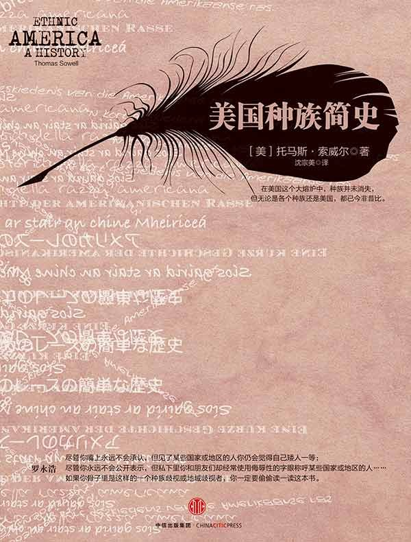

|  |
美国种族简史 |
第一部分 引论
第一章 美国百衲衣
美国民族的形成实乃整个人类历史上的一大奇观。多少年来，有4500万之众越洋过海，从世界各大洲来到美国。他们操着各种语言，代表着世界上各个民族、各种肤色和宗教。今天，美国的爱尔兰后裔比在爱尔兰的爱尔兰人还要多；犹太后裔比以色列的犹太人还要多；美国黑人的数目超过大多数非洲国家的人口。波兰大多数主要城市的人口都赶不上美国底特律一地的波兰后裔，而纽约市的意大利后裔则是威尼斯人口的两倍。
美国的各种族社区，就其规模之大而言，就足以构成独具生命力的文化群，这些文化群既不是某种“主流”模式的翻版，亦非某个国家文化的海外分支。炒面、爱尔兰后裔的圣帕特里克节大游行以及非洲发型，全是土生土长的“美国货”。绝非听命于外国的美国各种族社区，反而为其祖籍国培养了领导人。爱尔兰共和国的第一任总统埃蒙·德·瓦勒拉出生在纽约市的布鲁克林，以色列总理果尔达·梅厄夫人出生在密尔沃基。一个多世纪以来，利比里亚一直由获得自由的美国黑奴的后裔统领着。
使用“少数民族”这个字眼，是难以充分描绘构成美国社会百衲衣的这些巨大种族社区的，因为没有“多数民族”。可以辨别的最大单一种族是英裔人，可他们只占美国人口的15%，比德裔人（占13%）或黑人（占11%）实在多不了多少。由于世世代代杂居混住，千百万美国人说不清自己究竟属于哪一个种族。
整体性和多样性的混合，不仅贯穿今日的美国社会，也贯穿着美国的历史。没有哪一个种族是完全独特的，但也没有哪两个种族群是完全相同的。每一个种族群都有自己的地理分布格局，反映出他们到达美国本土时的状况以及他们赖以为生的行业和地区的演变。甚至连美国各种族群的年龄都彼此相差很大。美籍墨西哥人和波多黎各人的平均年龄不足20岁，而美籍爱尔兰人和意大利人的平均年龄为30岁开外，犹太人的平均年龄则超过了40岁。此种年龄上的差距不但反映了目前的生育率模式——有些种族群的儿童比例额外高——也反映了生育率模式的历史性变迁。这种变迁造成某些种族连续几代人在数量上的急剧变化。
在美国各种族之间，收入、职业和失业率的差别相当大，犯罪率、生育率和经营企业的比率也是如此。对这些差别的解释是复杂的，在很多方面也是惊人的。任何一种简单的解释都有对不上号的地方。肤色在决定美国人的命运方面，显然具有举足轻重的分量，然而来自西印度群岛的黑人群体挣的钱，就比来自波多黎各岛的以白人为主的群体挣的钱要多，日本人挣的钱也比一般白人挣的钱要多。一个种族刚到美国时的本钱和到达时间的长短，显然也是重要的因素，像许多“古老的家族”所显现出的那样，但也不尽然。犹太人来得晚，19世纪他们到达美国时一文不名，但现在却比其他任何一个种族都要阔绰。
经济状况
造成上述各种族之间的经济差别的因素有许多。年龄是一个时常被忽视的重大因素。平均年龄不同的种族——某些种族之间的差距可达10～20岁——其年龄偏高者的比例是大不相同的，而年龄偏高的人往往集中在有专业技能及其他高收入的行业里。譬如，美国印第安人年龄在45岁或45岁以上的人，占其总人口的20%，而美籍波兰人处在这个年龄段的却占其总人数的40%。收入较高的行业通常要求具备两个条件，要么受教育的时间长，要么有长期的经验，或二者兼具。所以，年龄偏高的种族群比年龄偏低的种族群挣的钱要多，这种现象是不足为奇的。令人莫名其妙的倒是将这些差距归咎为某种程度上的雇主歧视或种族“无能”。若把30岁的各种族男性的收入所得加以比较，差距就小得多；而如果把年龄在30岁而受过同等教育的各种族男子的收入相比较一下，差距就更小了。
在美国这样一个幅员广阔的国家里，各地区之间的经济状况差别很大，所以某一种族的平均收入在一定程度上取决于它的成员的地区分布。分布在不同地区的同一种族的各成员之间的差别，往往比全美平均收入水准与该种族全部成员平均收入水准之间的差别还要大。地区之间的差别不仅表现在收入方面，也同样表现在诸如生育率和教育投资回报率等方面。
教育也显然会影响到收入。对每一个民族来说，受过大学教育就意味着收入超过全美平均水准。近年来，在家境特点相似又受过大学教育的青年人当中，甚至过去长期存在的黑人与白人之间的收入差距也已消失了。各种族之间在教育程度方面的差别很大，而且教育质量也会扩大收入的差距。那些受过大量教育的种族——犹太人和东方人——往往能就学于教学质量更好的高校、就业于要求更高、收入也更高的领域。他们跻身自然科学界、医学界和法律界等。
美国种族在经济方面的多样性与在生育、寿命、犯罪、智商及酗酒这些社会特征同样明显。
在整个社会里，最贫困的阶层总是具有最高的生育率，所谓“富人发财，穷人养孩”。一般来说，那些收入最低的种族和黑人、波多黎各人、印第安人和美籍墨西哥人，其生育率最高，而犹太人和东方人所生的孩子是如此之少，以致难以维系后代。另一个惊人的情况是，低收入种族当中那些较为富有的成员所生的子女，甚至比全体人口中同样富有的人家所生的子女还要少。也即是说，收入较高的黑人、印第安人以及说西班牙语的民族的生育率都低得出奇。譬如，读完中学的美籍墨西哥妇女，比具有同等学力的任何别的种族的妇女所生的孩子都要少，尽管美籍墨西哥人作为一个种族，其生育率比任何别的种族的生育率都要高。造成此种现象的原因并没有这种现象的后果那样显而易见。
当那些经过奋斗由穷变富的人去世而又没有生育在数量上足以代替自己的子女时，这就意味着下一代的人还得白手起家去重复他们的奋斗，因为他们没有留下多少后代来利用他们的成功所造就的优势。换句话说，低收入种族所积累起来的“人类资本”，有一部分就这样一代一代被白白葬送掉了，使得该种族的向上流动因缺乏现金、经验、人际交往以及其他方面的优越性而更加困难，较为富有的成员本来是可以把这些有利条件传给他们的后代的。
由于高生育率，当固定的收入在家庭成员中分摊时，就会僧多粥少，越分越少，从而直接降低一个种族的生活水准。美籍墨西哥人的人均收入甚至还赶不上挣钱更少的黑人，就是因为美籍墨西哥人的家庭成员太多。这导致了美籍墨西哥人的住房条件和教育水平不如黑人，当然也就更赶不上美国人口的总体标准了。高生育率还和儿童智力测试得分较低有关，因为这些儿童和父母亲待在一起的时间较少。在参军时没能通过智力测试这一关的黑人男性青年中，一半来自于有6个或6个以上兄弟姊妹的家庭。不管这种智力测试带有何种偏见，此种偏见照例也适用于来自家庭人口少的黑人青年，可见智力测试所显示出的差距是很能说明问题的。
总的看来，生育率近年发生了十分明显的变化，各种族的相对地位因之也有所调整。在1910年，35～40岁这一档的犹太妇女平均有5.3个孩子，与美籍墨西哥同年龄的妇女持平，高于黑人妇女（平均有4.2个孩子）、爱尔兰妇女（平均有3.3个孩子），也高于全美平均数（3.4个孩子）。但是到1969年，该年龄段的犹太妇女的平均生育率降了大半（2.4个孩子），但美籍墨西哥妇女的生育率却下降有限（平均有4.4个孩子）。黑人妇女（平均有3.6个孩子）和爱尔兰妇女（平均有3.1个孩子）的生育率的下降幅度都不大。这意味着犹太人的年龄分布发生了一个“V”字形的变化，即老一代的犹太人处在曲线一段的顶部，接着便是由年龄逐渐变小的犹太青年人构成的低曲线，而后又是整体犹太人平均年龄的上升曲线。
失业率、犯罪率和生育率，都受到年龄的强烈影响。年龄因素造成的失业状况是如此之严重，以至于尽管黑人在总体上的失业率大大超过白人，但20岁以下的白人青年的失业率，却从来都高出25～44岁这一档年富力强的黑人的失业率。同样，大部分暴力犯罪都是25岁以下的年轻人干的，所以，25岁以下这一档人占很大比例的那个种族的犯罪率，也就因此而偏高，即使不把其他起作用的因素考虑在内的话。下述事实颇能说明年龄因素的重大影响：年龄和社会—经济状况相同的黑人和白人的犯罪率相差无几，尽管总体上黑人的犯罪率是白人犯罪率的好几倍。
和生育率一样，各种族的智商得分在某一特定时期相去甚远，并随着时间的推移而变化甚大，从而使得各种族智商得分的名次不断调整。大约在第一次世界大战时，犹太人在智力测试中一般得分都相当低，以致当时一位大“专家”断言，这种测验结果“证明关于犹太人很聪明的流行观念是错误的”。在那个时候，新近才到达美国的各种族，诸如意大利人、希腊人、波兰人、葡萄牙人和斯洛伐克人等，其智商得分实际上和现在的黑人、中南美来的移民及其他处境不利的种族的智商得分差不多。然而，在之后的几十年里，由于这些种族逐渐适应了美国文化，在社会经济方面取得了进步，他们的智商得分也就随之节节上升。到20世纪20年代，犹太人的智商得分已经超出全美平均数。最近对意大利人和波兰人的智商研究表明，他们也已在“二战”之后的年代里接近或超过了全美的平均数。先前对波兰人的智商研究表明，他和今天黑人的智商水平相当，平均为85分，但到20世纪70年代已上升到109分。两代波兰人把智商提高了24分，这个数字比当前黑人和白人之间的智商得分差（15分）还要大。
社会上对种族和肤色的态度，也随着时间的推移而发生了颇大的变化，尤其在第二次世界大战后的时期里更是如此。犹太人曾一直被排除在一流高等学府的教授队伍之外，后来超比例的犹太人在这些大学里执掌教鞭。曾一度将黑人拒之于门外的职业体育队伍，后来也让黑人运动员占了上风。曾经在几十年里盛行于加利福尼亚州的反对东方人的法律，也因公民投票表决而被废除。爱尔兰后裔、德国后裔和波兰后裔与异族的通婚率已离一半不远，日裔在这方面紧紧跟上。态度调查和选举结果表明，各民族之间的日趋相互接受，其程度也大体相仿。
通向多元化和各民族融洽相处的道路，是漫长而崎岖不平的。19世纪存在于欧裔各种族之间的或存在于美国出生的当地人和欧裔或亚裔移民之间的种族仇恨，曾频繁地导致暴力对抗，其中丧命人数之多，超过20世纪中期任何一次“种族暴动”所造成的伤亡。“一无所知党”——一个反对移民的政党——曾在19世纪50年代取得过短暂但却相当显著的成功，在6个州选出自己的人当上州长，并控制了好几个州的立法机构。这种党同伐异的意识后来又复活了，并在立法机构中发展到白热化的程度，以致在20世纪20年代堵死了移民来美的大门。奴隶制度的悲惨历史，歧视美国的法律，以及对黑人执行死刑至今令人记忆犹新。然而，美国的特殊之处并不在于这些种族之间的仇恨在这个国度里存在过（因为这种仇恨几千年来也在其他地方存在），而在于这种仇恨的程度在逐步减弱，并在某些地方已经消失。
各种族自身也在生活方式上发生了变化，这使得他们更容易被别人接受。19世纪移民特有的犯罪率高、发病率高、依赖慈善救济以及不讲究个人卫生等现象，都已随着他们逐步适应了美国的生活规范而成为历史。而且市政设施也有了改善，下水道取代了屋后的茅厕，19世纪末的廉价公寓里最终也装上了自来水（虽然当时浴缸仍是罕见的奢侈品）。在此之前，贫民窟是遍地污秽，臭气难闻，疾病肆虐。在那些比今天的贫民窟还要拥挤并且缺乏通风设备的廉价公寓里，天气稍微一热，真的就能要人命。那时，不会讲英语的人，或者任何一种语言都不能写或读的人，比比皆是，远远超过现在的情形。宗教仇恨情绪非常强烈，以致公共教育开展滞迟，而且，它甚至还经常点燃暴动的导火线，给长期酝酿的政治争斗火上加油。1871年发生的新教徒和天主教之间的冲突，曾在一天之内导致50人丧命。当年也出现过矛头针对摩门教信徒、教友派信徒和其他教派信徒的类似的对抗和暴力。
时间和地点
构成美国人口的许多种族，并不是同时到达美国的，也并不分布在同一地区。一般来说，每个民族在其移居美国的过程中，都有自己特定的高峰期。爱尔兰人移居的高潮大致在19世纪50年代，而犹太人移民的高潮在此50年以后，墨西哥人的移民高潮则又在下一个50年之后。移民的地区分布，也同样是各不相同的。斯堪的纳维亚人多定居在中西部，东方人躲在西部海岸，古巴难民集中在佛罗里达，墨西哥人在西南部，苏格兰—爱尔兰人则散居在从宾夕法尼亚州到南北卡罗来纳州的阿巴拉契亚山区。像爱尔兰人、意大利人和犹太人这样一些到达美国时身无分文的移民，则留居在他们抵美时的东部口岸城市。黑人集中在南方。
今天的差别仍旧受到地区分布的严重影响。纽约州黑人家庭的平均收入是密西西比州黑人的两倍还要多，底特律一带的墨西哥人的平均收入是密西西比州黑人的两倍还要多。底特律一带的墨西哥人，其家庭平均收入比得克萨斯州拉列多一带或布朗斯维尔一带的黑人所挣的钱也至少高出一倍。住在芝加哥、底特律或纽约市的印第安人的收入，也比住在保留地的印第安人的收入高出一倍多。这种同一种族内部的差别比任何一个种族和全美的平均水平的差别都要来得大。因此，地区差别至关紧要。
从风帆船到蒸汽船的转变，曾导致美国移民来源的彻底变化。在风帆船时代，欧洲移民几乎是清一色的北欧人和西欧人。随着蒸汽船的使用，来自南欧和东欧的移民突然以压倒的多数涌进了美国。这些人与美国人在文化和宗教方面有着极大的差别，而此时宗教差别恰恰在社会和政治方面极具重要性。
在风帆船时代，越洋的客船旅费是移民在经济上承担不起的。他们只能挤在驶抵欧洲送货返美货船的空仓里来到美国。这就是说，只有那些与美国有大规模贸易关系地区的人，即北欧人和西欧人，才得以大批移居美国，而东欧人和南欧人是没有这个条件的。当时美国运往欧洲的货物，多属大批量的农产品，而返程所载的进口货，却多属体积小得多的欧洲工业制品，所以返程时船上的仓位大量空闲。移民就挤在这种空闲仓位里临时拼凑起来的座位上，缺乏足够的通风设备，没有马桶，食物和饮水也是质次量少。海上航行的时间很长，前途难卜。时间可能需要1～3个月，完全取决于风向如何。航行时间越长，人们就会因为饮食不足而变得越来越衰弱，并有可能染上疾病，而在那种拥挤的船舱里，一旦有人染上疾病即一发不可收拾。
货船的航行路线，取决于贸易的模式。这就意味着移民没有对自己的目的地口岸进行选择的余地，船驶向哪个港口就在哪里上岸。譬如，爱尔兰人赴美乘的是从美国东北部地区运来木材后返美的船，因此美国东北部就是爱尔兰移民的登陆地点，因为船只返美时只在这一带停靠。德国人赴美则乘送棉花到勒阿弗尔并返回新奥尔良的货船，然后再在那些沿密西西比河上游河谷，在辛辛那提、圣路易斯和密尔沃基这样一些城市定居下来。美国的啤酒酿造业就是由圣路易斯和密尔沃基的德裔人开创的，巴德威泽牌啤酒的原产地就是圣路易斯，其他许多名牌啤酒则出自密尔沃基。
对于那些因家境过于贫寒而无力搬迁的人们来说，初到美国时定居地区所处的经济状况是格外重要的。举例来说，在波士顿地区登岸的爱尔兰人，就发现该市对工人阶级来说几乎没有什么工业，也没有其他什么机会。连大多数美国的工人阶级都因此而避开这个城市，但19世纪中期爱尔兰人移民来美时，一下船恰恰就是波士顿，为此他们后来在经济上吃了好多年苦头。在短短几年中（1840～1850年）抵美并聚居在东北部少数几个城市（尤其是纽约和波士顿）里的爱尔兰人，数量是如此之众，加上其中多数又挤在单一的行业（非熟练劳工）里，这就给他们融入美国的经济和社会带来了特别的难题。开凿运河和修建铁路在东北部起步以后，一贫如洗的爱尔兰人就开始从事这些吃力而又危险的苦差事。许多人就在运河两岸和铁路沿线的城镇定居下来。爱尔兰人今天的地理分布依稀反映了当年的这种定居格局。
从风帆船到蒸汽船的更换，大大地改变了美国移民的格局，旅途时间从30～90天不等缩短到最多不超过10天，而且工人阶级在经济上也有能力买得起客船票，用不着再去乘货船。移民模式与贸易格局已经脱钩。这既改变了移民的数量，又改变了移民的来源。移民的人数在南北战争前总共为500万人，南北战争后20年中即增加到1000万人，而在此后的15年内又增加到1500万人。移民来源的变化同样也是惊人的：在1882年，87%的移民来自北欧和西欧，但是25年之后，81%的移民则来自南欧和东欧、斯拉夫人、犹太人及地中海沿岸的民族，首次成为美国人口的重要成分。
黑人当然是被贩卖到美国来的，他们抵美的目的地是由别人选择的，但这也不是随意的选择。黑人积聚在南方，这里的土壤和气候易于种植强迫奴隶劳动进行生产的农作物。1793年轧花机发明之后，美国的奴隶也几乎全部变成种植棉花的奴隶，黑人的地理分布进一步向南方移动，集中分布在密西西比州、亚拉巴马州、佐治亚州和路易斯安那州北部的大棉田。甚至在奴隶制被废除之后，黑人仍聚居在上述这些后来一直比全美其他地方更为贫困的地区，这就构成了他们长期摆脱不掉的经济桎梏。今天，不住在南方的那一半黑人，比仍住在南方的那一半黑人的收入要高出大约50%。显然，撇开其他所有的因素，黑人作为一个整体，其收入因地理分布而难以提高。
有些美国移民干脆就在离他们祖籍国最近的地方落脚，例如东方人定居在夏威夷和西海岸，墨西哥人在美国的西南部，古巴人在佛罗里达。波多黎各人和西印度群岛人则“集居”在纽约市及其周围地区，这反映了20世纪的民航和海航的四通八达。
概观
第二部分 来自欧洲的美国人
第二章 爱尔兰人
爱尔兰人是美国城市里第一批重要的“少数”种族。他们抵美后的早期历史，大体上奠定了后来者在城市经济和社会中营生的标准方式。当爱尔兰人在19世纪20年代到达时，特别是在19世纪40年代和19世纪50年代大批移居美国时，他们是从城市行业阶梯的最底层干起的，男的干体力活儿，女的去当佣人。他们挤在质量最差的住房里——比今天贫民窟的住房要糟糕得多。在这种生活条件下，疾病易于传染，火灾易于蔓延，并容易滋生诸如暴力、酗酒和犯罪等社会问题。地方公众对爱尔兰人的反应也不妙，只要爱尔兰人搬到哪个街区，那里的原有居民就会全部迁走。他们通通被认为是酒鬼，动辄吵架，是无能之辈；在就业方面，他们也到处吃闭门羹，很多店都贴有：“本店概不雇用爱尔兰人。”爱尔兰人好不容易找到的都是别人认为是太吃力、太卑微、太肮脏，或太危险的工作。他们艰辛的生活情况，可以用19世纪有人说过的一句话来概括：“你很难见到一个头发灰白的爱尔兰人。”他们的平均寿命是40岁。
经过几代人的痛苦历程，爱尔兰人才慢慢地赶上来。他们首先在政治上旗开得胜，有些人在19世纪中期当选为有势力的官员，并在其后的几十年当中进一步掌握了波士顿、纽约和其他大城市的政治“机器”。此种成功给少数人带来了福气和声望，然而对大多数美籍爱尔兰人的经济状况并未立即产生什么了不起的影响。直到20世纪80年代，多数男子仍在干体力活儿，女的仍替人家做家务。
在爱尔兰人当中，甚至是鼎鼎大名的肯尼迪家庭，当年发迹也是缓慢的。第一代肯尼迪于1848年由爱尔兰抵美，直到去世，一直是个劳工。他儿子的努力有起色，家境转好，以至于能将第三代肯尼迪送去读大学。第三代肯尼迪就是约瑟夫·肯尼迪，后来成了大富翁，从而使得第四代的约翰·肯尼迪当上总统。后者后来变成美国政治舞台上一位悲剧性的传奇式人物。
对绝大多数美籍爱尔兰人来说，经过一个多世纪的努力方才获得成功，使他们在收入、从业、智商以及其他社会—经济地位的指标方面，跻身于其他美国人之列。社会接受他们是缓慢的，而且这种接受一般是他们成功的结果，而不是成功的前提。早先那些笼统而苛刻的看法逐渐改变，人们对美籍爱尔兰人开始比较友善。关于这一切是如何发生的，说起来有一段很长而又复杂的故事，且让我们从爱尔兰岛上的那些农舍谈起吧。
爱尔兰
19世纪早期，一位法国旅行者周游世界，到过美国和爱尔兰，回去之后写道：
我曾见过栖身于森林之中的印第安人，也见过戴着锁链的黑人，当我琢磨他们可怜的处境时，我曾认为，我已经见到了人类悲惨遭遇的极端状态了。然而，我当时并不知道爱尔兰人的不幸处境。
这的确不是夸大其词。比起爱尔兰农民来，美国黑人的平均寿命要长，吃得要好。和爱尔兰农民的棚屋相比，美国黑人住的木板房子用料更结实，面积更大，通风也好，也更能防止别人干扰。这里无须准确地说清楚究竟二者谁的日子过得更惨。但是，竟然被人拿来和黑奴相比，19世纪30年代爱尔兰农民贫困潦倒的状况从中可见一斑。
尽管爱尔兰人在法律上是自由的，但他们是在自己的国土上过着被压迫的生活。英国统治者控制着他们的政治生活。定居在爱尔兰的英国人已经没收了大部分土地，并出租其中一部分给爱尔兰的佃户，从而掌握着爱尔兰的农业经济。这批英国地主不仅享有经济上的利益，也拥有社会和政治权力。在18世纪，他们的势力相当大，以至可以随意殴打爱尔兰农民，后者则不敢还手自卫。他们甚至可以派人去叫一个农民的妻子或女儿来和他们过夜。研究这一段爱尔兰早期历史的学者，对奴隶与亡国的爱尔兰农民之间，除了法律定义之外究属有多大区别，已经提出了疑问。同样，这里也无须对此弄个水落石出。能提出这种问题来争论，本身就表明爱尔兰人所受压迫之惨烈了。
古代的爱尔兰，曾经是个在技艺和学识上有过某些建树的国家。在基督教诞生以前的时代，凯尔特文化是“敌视知识”的，虽然它也使用自己的拉丁字母来拼写。爱尔兰靠近罗马帝国的疆界，多少世纪以来处在欧洲的外围，因而政治上是孤立的，文化上也是封闭的。内部的王朝斗争和外部入侵，多次毁坏了爱尔兰社会，使它无法形成一个强大而统一的国家。在15世纪初期，英国国王对爱尔兰的有效控制，仅局限在东海岸都柏林周围30英里长、20英里宽的一块狭长地带。千百年来，爱尔兰的历史就是一部充满偶发的流血起义和遭到血腥镇压的历史。英国人曾一次屠杀过600名犯人。蔑视加无情，就是英国人对他们的态度。提到爱尔兰人就称之为“不过是个爱尔兰人罢了”，或谓“粗鲁的爱尔兰人”。甚至在偶尔称赞一个爱尔兰人的领袖时，也只是说“就野蛮人而言，算个大人物”。
在爱尔兰历史上，最触目惊心的事件之一，是1641年的造反。先是有成千上万的新教徒惨遭杀害，接着又有成千上万的爱尔兰天主教徒被克伦威尔屠戮。在这场持续了十多年的交战中，有50多万人——约占当时爱尔兰总人口的40%——死于兵燹、饥荒和疾病。英国在战胜爱尔兰之后，颁布了所谓的惩罚性法律，剥夺了爱尔兰人许多基本的权利。爱尔兰天主教徒既无选举权，也不能充任公职或担任律师，还不准他们上大学或在大学任教。爱尔兰天主教徒的子弟，从法律上来讲，没有受教育的权利，天主教教堂不允许自由而公开地传教，天主教徒也不准拥有像样的田产，不能行使各项法律或政治权利。这些法律的宗旨，是明目张胆地要让爱尔兰人处于屈从和贫困的境地。用伟大的政治家埃德蒙·伯克（Edmund Burke）的话来说，此种对爱尔兰的惩罚性法律是“自古以来人类凭着邪念所能构制出的最巧妙而精良的机器，用以使百姓堕落，并进而败坏人性本身”。英国征服者能使爱尔兰人贫困不堪，但要消灭他们的反抗，又谈何容易。
压迫性的惩罚法律在18世纪末期有所放松，并最终于1829年被废除。这主要归功于丹尼尔·奥康内尔（Daniel O’Connell）的政治天才，此公将天主教徒组织起来，使得英国除了废除这些法律或打一场内战之外，别无选择。废除惩罚法史称“天主教解放”，甚至连美国对此也大加庆贺，费城的自由钟都被击裂了缝，可见这一事件历史意义之重大。
爱尔兰人并非简单地因贫穷或缺乏教育而沦为“下等阶层”的。他们的地位更多地带有世袭的种姓制性质，也就是说，无论怎么努力（甚或是成就）都不足以使他们在具有如此结构的社会里上升到与他人平等的地位。说实在的，他们被认为是如此不配上升到高层地位，以致法律和习俗相互配合，堵塞了他们任何升迁的门路。更何况，不管是故意还是人为，爱尔兰的产权制度规定，佃农在土地上的任何额外收获，都是属于土地所有者的，这就摧毁了佃农的积极性。此种制度在道德和经济上所带来的影响，远远超过了这些法律实施时间和地点所造成的影响。就像其他世世代代不管自身行为如何，所得或所失皆微不足道的种族群体一样，爱尔兰人不但由于这些法律而蒙受了眼前的损失，而且因积极性下降的社会环境而蒙受了更长远的损失。当年在爱尔兰（以及后来在美国），在同情者和批评者当中，在学术界和民众当中，都异口同声地说爱尔兰人“懒惰”和“无能”。现在不是在这里去责备谁，而是要认清一类因素，它日后将继续影响到美国爱尔兰移民的历史。
还有一种爱尔兰生活特点，它日后也将继续影响他们移居美国之后的风气，那就是他们会酿造世界上最佳的几种威士忌酒，经济状态和社会气氛也确实为他们提供了必须饮酒的充分理由。在18世纪，“当威士忌比面包还要便宜时”，酗酒现象普遍存在于爱尔兰城乡居民之中。当然，此前就已有人观察到爱尔兰存在着类似的豪饮之风，后来美籍爱尔兰移民及其后代的海量亦不逊色。
从19世纪30年代起，谷物歉收和灾荒加剧了爱尔兰人的普遍贫困状态。同时，向海外移民的人数也普遍增加了，这使爱尔兰因此而丧失的人口比例比其他任何国家都来得多。这种危机的高潮，发生在19世纪40年代的大饥荒时期。国际范围的马铃薯歉收，于1845年波及爱尔兰，毁坏了当年及其后连续几年的谷物。由于爱尔兰1/4的可耕地用于种植马铃薯，这场灾荒对爱尔兰——尤其是对爱尔兰的穷人——的影响是毁灭性的。有100万人死于饥饿或由饥饿引发的其他疾病或时疫。更多的人逃离了。仅在19世纪40年代中期的短短几年里，大约共有1/3的爱尔兰人消失了。到1914年，爱尔兰的人口只有19世纪40年代时的一半。
由于食品和饮水不足，卫生条件又差，横渡大西洋之旅极易危害健康，对生命来说是危险的。1847年是多灾多难的一年。那一年有大约20%因饥荒而移民美国的人，在途中或刚刚抵岸之际死去。这也就是说，死了4万人，而且多半是年富力强的壮汉。相比之下，19世纪英国船只运载非洲黑奴来美时，途中死亡率也只有9%。诚然其他年份不都像1847年那样糟糕，但斑疹、伤寒、霍乱和其他致命的疾病，不时流行开来，而且无法预测；翻船也属家常便饭，仅在19世纪50年代就发生过40多起。
在美国的爱尔兰移民
迁徙到美国的爱尔兰人，来自一个有4/5的居民生活在农村的国度，在那里，甚至所谓“城区”也大多是一些巴掌大的村镇，大多数居民社区中只是“一簇簇散落在各处平原和山边的小土房子而已”。爱尔兰缺乏现代工业必不可少的炼铁矿藏，而英国政府在当地推行的经济政策，又抵制或摧毁了爱尔兰可能发展的其他工业。在19世纪40年代，当爱尔兰处于大饥荒时，其食品仍然被运往英格兰，英国对爱尔兰的大体态度，由此可见一斑。
虽然搭乘货轮空舱去英国的单程旅费尚不足10英镑（按当时汇率不到50美元），最贫困的爱尔兰人连这个区区小数都掏不起，所以，占人口1/4的最贫困的爱尔兰人，移民的数量很少。在经济状况上比这些人要高出一个等级的人，常常变卖私产，耗尽积蓄，并借助已在北美的亲属寄回来的贴补，大量向外移民。19世纪三四十年代，有1/3～3/4的移民美国的爱尔兰人，曾受惠于从美国汇回来的资助款。
虽然按爱尔兰本国的标准来衡量，爱尔兰来美的移民不是最穷的，但按美国的标准来衡量，他们可谓是一贫如洗。一般来说，他们付过越洋旅费之后，身上一文不名，所以刚到美国时，就只好在抵达口岸（主要是波士顿和纽约）凑合着安顿下来，而且通常都住在码头附近。这些来自爱尔兰的乡巴佬，一般都缺乏在大城市谋生的任何有用技能，对于城市生存要素也是一窍不通。然而他们也有其长处：多数人操英语（爱尔兰方言盖尔语已在英国人统治之下消亡了），很可能又有过半数的人是识字的，而且北美那一套盎格鲁—撒克逊制度，与英国强加在他们的祖籍国爱尔兰的制度如出一辙，他们对此早有领教。他们还在政治上培养起了自己的组织能力，并形成了一个由他们的天主教神甫构成的可靠的社会和政治领导队伍。这些当初在祖籍国曾和爱尔兰民众同甘苦共患难的宗教领袖人物，由于受到迫害而被逼上梁山，获取了从事世俗组织工作的经验。更何况，在本土受到异族压迫的爱尔兰人，是一个具有认同感和凝聚力的民族。
来美移民当中，有的人是试探性的，男的先到，然后视情况才把自己的妻子儿女接来。爱尔兰人却不是这样。他们在19世纪都是举家迁移，这表明从一开始就下定了一去不回的决心。当他们上船时，就已决意要变成美国人。
苏格兰—爱尔兰人
在19世纪30年代和19世纪40年代的大饥荒之前，来美的第一批爱尔兰移民，从主体上来讲，是定居在北爱尔兰的具有苏格兰血统的新教徒。他们自称是苏格兰—爱尔兰人，以区别于后期来美的凯尔特移民。他们实际上在北美殖民地时代就向这里移居了，在人数上比后期的爱尔兰移民要少得多，但却包括许多具备高超技能的工人、小商贩和受过教育的人。然而这批移民基本上家产有限，不少人是通过先签订卖身契约，答应到美后充当若干年奴工，以抵偿未来雇主或轮船公司预先垫支的旅费，才得以移美的。
苏格兰—爱尔兰人在大致北起宾夕法尼亚州中部，经过弗吉尼亚州的谢南多厄山谷，向南延伸到南北卡罗来纳州的皮德蒙特山区这一狭长地带定居下来。当时这一带多属殖民地边陲，他们也就因此而变成了闻名的边疆居民和与印第安人作战的勇士。苏格兰—爱尔兰移民“集居”在这一地区的历史现象，直到20世纪仍然令人一目了然：在谢南多厄山谷，有两个县拥有的长老派信徒，比其他所有教派的信徒加起来的总和还要多，这里的电话号码簿上，姓麦克（Mac）的人多得无法统一排在M字母名下，只好在26个字母之外将姓麦克（Mac）的人单独列出来，以便查找。
苏格兰—爱尔兰人多属自耕农民，而非农场主或奴隶主。南北战争前，南方具有反对奴隶制思想的少数几个地区之中，确实就包括有苏格兰—爱尔兰人“集居”的地区。亚伯拉罕·林肯的家就在这样一个地区。
苏格兰—爱尔兰人尽管素以打斗和酗酒而恶名远扬，但他们也以到哪里就把教堂和学校建在哪里而著称于世。教堂和学校这两大传统可以追溯到苏格兰王国，苏格兰是欧洲居民教育普及程度最高的国家之一。
随着时间的推移，苏格兰—爱尔兰人渐渐融于美国一般居民之中，除了那些他们在人口上占绝大多数的孤立邑落之外。但是与后期的凯尔特—爱尔兰移民不同的是，他们从未自觉掀起过保持种族同一性的运动。不过在19世纪，相当多的苏格兰—爱尔兰移民所怀有的血亲认同感，仍足以使他们和爱尔兰天主教徒移民一再地发生冲突，在美国重演其祖籍国历史遗留下来的旧仇夙怨。每年一度的庆祝奥伦治王子打败爱尔兰天主教徒的奥伦治节，变成他们在美国斗殴的机会。一方是苏格兰—爱尔兰人，他们总想公开庆贺一番；另一方是凯尔特—爱尔兰人，他们则总是企图阻止对方这样做。1871年在奥伦治节的一次较量中，就有近50人死于非命。在不同时间和地点，政府不得不出动民兵和联邦部队来阻止这两大集团之间的格斗。
在美国历史上，时有某一特定国家的先期来美移民，设法帮助后期来美的同胞克服困难，以适应新环境的情形。但这种情形却绝对不会发生在苏格兰—爱尔兰人和他们的凯尔特—爱尔兰同胞之间。这部分是因为他们在地理分布上相去甚远，但更具根本性的原因还是他们从旧世界带来的相互之间的极端敌对情绪。爱尔兰移民因此不得不靠自己的本事去创基立业。
第一代爱尔兰移民
后来，所谓“爱尔兰人”或“美籍爱尔兰人”，其含义只是指代具有土著爱尔兰血统或凯尔特—爱尔兰血统的人，而不是指苏格兰—爱尔兰人。爱尔兰移民多半集中在马萨诸塞、纽约、宾夕法尼亚和伊利诺伊这4个州。纽约的爱尔兰人超过都柏林的人口总数。19世纪共有400万爱尔兰人移居美国。但是美国整个南方却只有85万名爱尔兰后裔。爱尔兰人不仅在地理分布方面大量集中在东北部各州，且基本上散布在都市地区，而他们当初在爱尔兰时却基本上都是庄稼汉。他们中有4/5的人住在美国大都会的各社区。
公路和铁路的修筑，运河的开凿，终于吸引大批爱尔兰人离开少数几个大城市，散居到这些交通干线两侧较小的社区里。这些社区实际上就是由当初爱尔兰工人筑路开河时搭起的工棚发展而来的。参军的爱尔兰人，有时则在他们办理退伍手续的兵营附近定居下来。但是，试图组织爱尔兰人向农业地区流动的种种努力却总是劳而无功。在各个孤零零的大农场上经营的美国农业，特别是在边疆地带，与爱尔兰那种在封闭的村落周围巴掌大的土地上从事马铃薯种植，实有天壤之别。除了谋生技能和美国恶劣气候条件等方面的巨大差别之外，在美国务农所意味的孤独生活，对素来喜欢群居生活的爱尔兰人来说，是从未尝试过的，而且对他们许多人来说，远离其他爱尔兰人就意味着失去上天主教堂做礼拜的机会。尽管曾有人作过无数次的呼吁和动员，一直到20世纪，美籍爱尔兰人大体上依旧是城市居民。
爱尔兰人大批涌进美国东北部都市地区，从而形成了一种在许多后来抵美的移民种族中再三呈现的居住模式。原为一家人使用的房子往往被分割为若干极小的公寓，每个小公寓里挤着一个大家庭。地下室和亭子间也变成住房，小弄堂里也搭起了临时凑合的栖身之所。此种民居模式，不仅反映了爱尔兰人的贫困，也反映了他们在爱尔兰小土屋里所养成的习惯，能忍受肮脏的生活条件。
对于那些被迫在肮脏环境干活并缺乏室内供水设备的人来说，整洁既非一种文化价值，亦非一种可以做得到的合理的事。人们竟能任粪便和污物堆积在后院的茅厕里，直到市政当局不得不上门来清除，否则就会溢进明水沟，造成空气不洁，滋生恶性疾病。妥善处理垃圾以防街区鼠害成灾，也是类似于清除粪便这样许许多多城市生活要素之一，其重要性是刚进城的每一批乡下人过一段时间方能领会的。开始是爱尔兰人如此，其后一直延续到今天，其他许多种族也经历过这一过程。爱尔兰人来美后在调整适应期间所付出的代价，比其他种族所付出的代价都要高。以前不为人知的霍乱，在1849年席卷了波士顿，且发病率几乎全部集中在爱尔兰人居住的街区。在纽约，爱尔兰居民区的霍乱发病率也高得离谱。在各个城市里，肺病和火灾定期地普遍殃及爱尔兰人所在的极端拥挤的住区。在来美后早期的艰难适应岁月里，爱尔兰人当中精神病患者的比率也很高。在波士顿，肺病的发病率总是与某一街区居民中爱尔兰人的数目成正比。
从爱尔兰带来的酗酒和斗殴恶习，在美国一直难以根除。在19世纪50年代，纽约逮捕的犯人一半以上是爱尔兰人，一般都是因为酗酒和行为不检，而不是因为有什么重大罪恶。警察局运犯人的车子被称为“帕迪马车”，因为车里装的囚犯经常是爱尔兰后裔。所谓“好斗殴的爱尔兰人”，这个说法的意思包罗万象，从个人之间的吵骂到聚众闹事（美国称之为“唐尼布鲁克斯”。唐尼布鲁克斯是都柏林附近的一个小镇，此地每年举行一次交易会，其间必发生大规模的打斗和混殴），从犯罪团伙到“莫利·麦奎尔”恐怖主义组织，爱尔兰人什么事都能干得出。“莫利·麦奎尔”一帮人曾在宾夕法尼亚州大肆进行谋杀和爆炸活动，直到1876年该恐怖组织的20个头头被绞死之后才平息下来。
全美各大商埠的爱尔兰居民段，个个都是社会治安的难点。在纽约，爱尔兰人“集居”的第六区是大名鼎鼎的“血腥老六区”。该市另一个爱尔兰人地段被称为“地狱的厨房”，还有一个被称为“圣·胡安之丘”（因为美军1898年在古巴的“圣·胡安之丘”进行过激烈的战斗）。在密尔沃基，爱尔兰人“集居”地区被称为“血腥的第三区”。在新奥尔良，爱尔兰人所在的地段“长期以来一直是该市声名狼藉的治安难点之一”。有人说，参加修建伊利诺伊中央铁路的爱尔兰人，每铺一英里的路基就做下一桩谋杀案。
爱尔兰人也曾大力革故鼎新。各个禁酒团体曾与世代沿袭的酗酒恶习作过斗争。移民援助团体为了防止刚刚抵美的人让坏人把身上仅有的几个钱骗个精光，也提供了多项服务。天主教在各方面都积极祛邪扶正，从办教育、搞慈善，到反对别人不敢反对的恐怖主义组织等，不胜枚举。尽管作出了这些努力，爱尔兰人经济状况的改善和被社会接受的程度，仍进展缓慢。1855年纽约州的一次人口普查表明，在纽约市从业的爱尔兰人中有1/4是家庭佣人，另有1/4是体力劳动者和其他种类的非熟练工人。在波士顿，2/3的爱尔兰人不是非熟练工人就是家庭佣人。在密尔沃基、圣路易斯、底特律、新奥尔良和其他大城市，爱尔兰的就业情况也与此类似。当时没有哪个移民种族像爱尔兰人这样集中在美国经济阶梯的最底层。在1850年的波士顿，甚至黑人人口中从事体力活和充当家仆的比例，也大大低于爱尔兰人，而且在19世纪中期，波士顿的自由黑人在经济状况上一般要比爱尔兰人好过些。
爱尔兰人不仅突出地滞留在非熟练工作岗位上，而且还从事艰苦、肮脏且危险的工作，比如采煤、筑路和开凿运河等。疟疾经常在开凿运河的工作当中蔓延开来，因而被称为“运河病”。痢疾和霍乱也时常流行，而且往往致人死命。修长铁路死了那么多的人，以致有人说“每一根枕木底下都埋葬着一个爱尔兰人”。在南北战争前的南方，爱尔兰人常常顶替黑人去干那些被认为是十分危险的工作，因为黑人被视为一笔可观的投资。
就像当初在祖籍国时一样，爱尔兰移民的贫困和持家不俭，经常使他们在时运不佳时变得一无所有，只好靠慈善机构的施舍度日。在19世纪早期的爱尔兰，甚至在大饥荒之前，穷人举家外出“流浪数月，从一个教区到另一个教区，沿门托钵”的现象是很普遍的。带到美国来的那种向公立慈善机构求助的积习是根深蒂固的。波士顿救济穷人的预算支出，在1845～1855年爱尔兰人向该地大量流入期间，增加了一倍多，而1845年之前该市此项预算多年来一直是相对稳定的。在同一时期的纽约市，救济院里有60%的人是在爱尔兰出生的。直至1906年，穷汉、乞丐和住在救济院里的人，其中爱尔兰裔人要比意大利裔人来得多，尽管意大利移民来美要比爱尔兰人晚了一代人的时间，且他们在19世纪和20世纪之交的岁月里，一般来说要比爱尔兰移民还穷呢。在爱尔兰和意大利这两个国家里，人们对接受慈善施舍的态度是大相径庭的，态度不同的影响超过了他们各自在美经济状况的影响。这两个国家在文化上的类似区别，还表现在他们对待抛弃妻室儿女的不同态度上。在19世纪40年代，“人们会不约而同地认定，凡孤儿皆是爱尔兰人后代”。直至1914年，住在曼哈顿西端的爱尔兰人家族，约有半数之众是没有父亲的。意大利人当中就不存在这种情形。
尽管当时的观察家和后来的学者都把爱尔兰移民描绘为缺乏勤俭精神的人，但是爱尔兰人在向天主教教会捐款方面，在从菲薄的收入中挤出钱汇给远在祖籍国的亲人方面，却留下出色的记录。从美国汇回爱尔兰的钱，使许多人得以在19世纪40年代的饥荒时期移民来美，仅在1848～1864年，美籍爱尔兰人寄回国的钱，总数就达6500万美元。爱尔兰人能够而且也确实能够有所积蓄，把这些积蓄慷慨地捐给了他们的教会和寄给家人。然而，他们在理财上不善于从长计议；处在困境中，他们向公共慈善机构伸手时并不感到难为情。
虽然在爱尔兰移民（和其他移民一样）当中，血气方刚的青年人所占的比例高得出奇，但到达美国之后，他们的死亡率就直线上升。1850年，波士顿的死亡率比马萨诸塞州的死亡率高出一倍，尽管相对来说该市老年人还比较少。造成这种差别的原因，就在于波士顿爱尔兰人地段的死亡率特别高。原来在美国几近绝迹的疾病，再次蔓延开来。在1849年，霍乱蔓延，席卷费城、纽约和波士顿等地，当然主要是在爱尔兰人街区流行最广。1792年以来，波士顿一直没有发现过流行性天花，但1845年之后，该市一再闹这种疾病，也主要是在爱尔兰人当中为甚。爱尔兰人向其他地段搬迁时，造成别的后果暂且不谈，首先就意味着带来了这样一些可怕的传染病。中产阶级的美国人害怕与爱尔兰移民做邻居，他们赶快搬家，住得远远的，这绝不是没有道理的。
移民后代
在政治上打响第一炮
爱尔兰人在美国打响的第一炮是在政治方面，其成就也最引人注目。在大城市，爱尔兰后裔往往是最大的单一种族群，他们在选举时可以借助手中大量的选票而确保其政治影响，这在19世纪30年代就已初见端倪。当然，他们在政治上的成功之处远不限于此，还包括在许多大城市里曾连续几十年直接控制着市政机器，甚至在其他种族进入这些城市并形成选民多数之后很久，依然是爱尔兰人坐天下。在波士顿，从19世纪80年代起，爱尔兰后裔开始当选为市长。在同时期的纽约，爱尔兰人控制了坦慕尼协会，而在19世纪早期，该协会一直是拒爱尔兰人于大门之外的。19世纪80年代开始，由爱尔兰人在政治上执牛耳的其他大城市，还有芝加哥、布法罗、密尔沃基、旧金山等。爱尔兰人主宰美国大城市政治的状况，一直延续到20世纪。在某些城市，眼下也还是这样。
很多爱尔兰裔政治头领都是别具一格的传奇式人物，从19世纪波士顿那位爱唱歌的市长约翰·F·菲茨杰拉德（即“甜蜜的菲茨”，此公即约翰·F·肯尼迪总统的外祖父），到曾经在20世纪担任芝加哥市长达20多年的理查德·达利，各有其特色。其中不乏很有魅力也很可爱的荒唐之士，纽约的政治头目“大提姆”·沙利文就是这样的一位。他是个“热心肠的巨人”，一手从各方接受贿赂，一手把食品和衣服分给穷人。1913年他去世时，有25000人出席他的葬礼。4次蝉联波士顿市市长的詹姆士·迈克尔和沙利文可谓如出一辙，他是两届国会议员，一任马萨诸塞州州长，而且也曾两次坐过班房。
爱尔兰人并不是简单地把传统的政治机器接管过来而已。他们改造了美国的城市政治，改变了市政府的阶级成分，使得从工人阶级队伍中，而且常常是从贫民窟崛起的人，执掌大权。爱尔兰人的政治机器，对于那些仍然身处贫民窟的工人阶级成员来说，是很容易接近的，不但为在政治上想有所作为的人敞开了大门，而且为那些需要有人帮助找个职业、办理移民归化手续，甚或需要食物和燃料来度过非常时刻的广大城市民众，也敞开了大门。别看爱尔兰人主政所搞的那一套官僚机构、规章制度和文牍主义，让贫民和粗通文墨之士感到眼花缭乱，实际上这一套真的要办事也挺管用；要说不管用，只要政治大头领偶加干预，什么事都能绕道走。爱尔兰人当年在祖籍国时的历史经验，使他们学会了在官府法则之外行事所不可缺少的本领和风气，并坚守另一种非正式的行为规范。爱尔兰人把“视正式的政府为非正统，而把非正式的政府视为真正标志主权在民的这种根深蒂固的传统带到了美国”。贿赂、暴力和选举舞弊，构成了爱尔兰政治机器的几大突出特点。但是这些政治弊端又不是随意胡来的，而是高度组织有序的。爱尔兰的政治机器是建立在对个人和组织的忠诚的基础之上的，其指导原则是争取当选的实用主义欲望，而非任何意识形态上的纲领。
政治机器的目标就是追求权力所带来的油水——薪俸、受贿，以及将追随者和宠幸者安插到肥缺上。这些肥缺不仅包括高官显位，也涉及低收入者依然感到眼馋的许多并不怎么显赫的职位，比如警察、消防队员、文秘、小学教师，还有在19世纪大体上都是通过委任而获职的市政府职员。以1855年的纽约为例，该市近40%的警察是移民，移民中又有3/4是爱尔兰人。到19世纪末，美国各大主要城市的警察队伍和消防部门都控制在爱尔兰裔手里。
这种受到高度控制而内部又等级森严的帮派政治，意味着任何个人皆需潜心等待时机才能爬上去。此种方式在爱尔兰是通则，在那里，耐心等待（并且不能结婚）去继承田产便是当时的习俗。这种方式还意味着，不管谁坐上了第一把交椅，都可能终年累月地坐下去，甚至往往坐一辈子。纽约的政治机器坦慕尼协会，在其鼎盛时期，半个世纪之中只有3个领袖，都是爱尔兰后裔。在布鲁克林区，一个人（也是爱尔兰裔）曾领导该区的政治机器达40多年。继他之后，另一个爱尔兰裔首领也曾把持一方达三十几年，直到他死去。爱尔兰政治机器的头领这种个人长期专断的情况，也普遍存在于芝加哥。
比这种个人政治生涯长久的现象更加值得注意的，是爱尔兰政治机器那种更加长久的寿命。这些政治机器在19世纪末20世纪初当其他移民种族群体成百万地涌入美国，并在数量上大大超过爱尔兰移民之后很久，仍然没有消失。他们继续掌权的现象很普遍，不仅操纵全市大权，即使在意大利人和犹太人或其他种族占大多数的地区，也由爱尔兰裔政客来充当代表。例如，在1900年前后，芝加哥的第十九区有4/5的居民是意大利人，但该区多年来却由一个叫约翰尼·派尔斯的爱尔兰裔政客来做他们的市议会代表。只是在好多年之后，爱尔兰裔政客才发现有必要把犹太人和意大利人吸收到其政治机器中相当低级的职位上去。直到19世纪90年代，“雄心勃勃的犹太青年才开始被坦慕尼协会叫来充当帮闲、听差和仆从”。直到1907年，坦慕尼协会还只有一个犹太人充当地区头头。同样，在芝加哥和波士顿，让意大利人获得低级的职位，充当“政治机器的小小螺丝钉”，将他们摆在一些模棱两可、无足轻重的位子上，作为本民族和爱尔兰政治大老板之间的联络人员，也是很久才成为可能，而且十分勉强。美籍意大利人和犹太人多次试图争取在政治上掌握自己的社区，皆被政治经验丰富的爱尔兰政客击败，这种情况一直持续到20世纪初。
爱尔兰人在政治竞争中具备许多有利之处。首先，他们有强烈的种族团结感，这一点可以追溯到祖籍国的历史，千百年来，他们一直在自己的国土上受到异族的迫害。而犹太人和意大利人则发生过许多内讧，这同样可以从他们过去多少世纪以来在欧洲的经历中找到蛛丝马迹。其次，爱尔兰人的有利之处还体现在他们来美国要早上几十年，会讲英文，在政治觉悟和组织经验方面纵使是秘密的，但却有悠久的历史。最后，在爱尔兰的文化中，个人魅力和口齿伶俐是受到赏识的。这两条对于搞政治的人来说显然是巨大的资本。在器重人品和口才的其他领域里，比如法律、演出、工运、新闻和布道，这两条也不可或缺，而在所有这些领域里，爱尔兰人也确实是非常成功的。
爱尔兰人决非腐败政治的始作俑者。只不过他们在这方面干得很漂亮，贪污受贿时还能带点儿人情味。他们的成功在很大程度上是因为他们的政治对手对城市移民的痛痒漠不关心。历次政治“改革”运动，都是由有钱有识之士领导的，这些人的价值观、目标和作风，和工人阶级的那一套大相径庭。改革派政客通常和低收入社区既无个人渊源，又无组织根基，所以即使在他们怀着好意为穷人办事时，双方也很少有共同理解，经常帮倒忙。穷人通常宁要理解贪官，而不要理解高高在上的理论家。
移民社区内部涌现出的政治领袖人物，具备先天的优势，但这仍然不能解释，为什么在犹太人、意大利人、波兰人等早已构成城市市民的大多数之后，这些领袖人物偏偏总是爱尔兰人。爱尔兰人有利条件之一是会讲英语，尽管不合语法，但往往说得很流利。在有农民背景的种族之中，爱尔兰人还有个独一无二的特点，那就是在欧洲时就有了从事政治和组织工作的历史经验，即善于维持地下的宗教组织和恐怖组织。其他的农民大众，也遭受过压迫，比如意大利和波兰的农民，但他们在形式上都没有爱尔兰人所受到的压迫那样特殊，而正是那种压迫形式使爱尔兰式地下活动成为一种有效反应。例如，压迫意大利农民的是其他的意大利人，而不是具有不同宗教的异族。民族、宗教或国家等问题，在意大利都构不成群体团结的感情核心。在散居于欧洲的犹太人当中，宗教、文化和民族是促进团结的因素，但犹太人在每个国家里都是极少数，备受孤立，假若他们也使用爱尔兰人那些进行反抗和恐怖斗争的手段，那就无异于自杀，因为爱尔兰人是身处自己的国家，占人口的大多数。简言之，没有哪个移民群体像爱尔兰人那样，既有历史的和组织的经验，又能言善辩，会处理人际关系。他们这些长处还表现在政治以外的其他许多领域里。
在一个宗教歧见造成激烈纠纷的时代，比起其他信奉天主教的移民来，爱尔兰人在政治上有个有利之处，那就是他们坚守美国关于政教分离的原则。他们还在爱尔兰时，曾经生活在由国家确立的一种教会，即英国国教的控制之下，并早就对此产生了反感。从其他具有国教的国家来美的天主教徒，其经验和传统就大不相同，因为所确立的国教就是他们自己的宗教。尽管信奉天主教的爱尔兰人生活在信奉新教的美国，这在政治上确实是不利的，但他们在政教关系上所持的特殊观点，却使他们在政治上比其他天主教徒有更大的回旋余地。尽管美国的本土主义分子告诫过罗马教皇有在政治上接管美国的危险，但这种告诫在美籍爱尔兰人的理论和实践上却没有什么文章好做，后来也就逐渐不攻自破了。在1928年阻止阿尔·史密斯竞选总统时，这种指控又曾一度甚嚣尘上，但大量的爱尔兰天主教徒成功地当选其他公职，表明阿尔·史密斯受挫一例关键不完全在于个人的宗教信仰。史密斯本人也确曾当选过其他公职，包括纽约州州长，而且是靠新教徒占大多数的选民投票当选的。1960年，约翰·F·肯尼迪当上总统，等于在政治上为那种乞灵于宗教信仰的垂死伎俩敲响了丧钟。
爱尔兰人的政治机器，几乎一无例外地属于民主党，这可以追溯到19世纪。当时爱尔兰人地区的多数选民，都投民主党人的票，比任何其他种族都来得一边倒。其他种族的选民意见有分歧，有人投辉格党人的票，有人投正在崛起的共和党人的票。在19世纪50年代，出现了另一个政党，叫美国党，亦即广为人知的所谓“一无所知”党。该党的宗旨是，基本反对移民，尤其反对爱尔兰移民。
“一无所知”党开始时是个秘密团体，从中形成了美国党，作为一个政治组织，本土美国人对外国人的敌视，在该党出现以前就存在了，然而到了19世纪30年代，这种敌视似乎在消亡。但是，大规模而持久的移民浪潮，又重新引发了本土人的这种敌对情绪。19世纪40年代之前，来美移民每年远不到1万人，但在1842年，移民激增到10万人，1847年达到20万人，1854年则高达40万人。爱尔兰人是最大的单一移民群体。在19世纪40年代和19世纪50年代这20年间，抵美移民有过半数之众是来自爱尔兰。爱尔兰人不仅被视为外国人，而且也被认为是不可同化的群体。瞧，虽然过去的移民能融入美国生活的主流当中去，但这批人性格太古怪，永远也达不到这一步。此种武断的说法，开始是针对爱尔兰人的，后来对其他许许多多的来美种族，又不知重复过多少遍！
本土人在攻击外籍人（目标又集中对着爱尔兰人）时，举出的例子有：他们政治上腐败；生活水准低，生活水准低又被看做对美国本土工人生活水平的一种威胁；在牢房的囚犯中，他们所占的比例高得可怕；靠慈善施舍混日子的人也多得出奇等。他们是天主教徒这个事实，过去是而且现在依然是族际不睦的根源，特别是在19世纪，那时宗教分歧在政治和社会上皆属事关重大的事。在19世纪60年代波士顿的所有移民群体当中，爱尔兰人和异族通婚的比例是最低的，甚至低于同时期白人和黑人之间的通婚，此事虽小，但却颇能说明当时宗教区分有何等的社会意义。
在大多数问题上，“一无所知”党是一个主张改革的党，而爱尔兰人则反对大多数的改革。爱尔兰人寻求在现存体制下提高自己的地位，不主张从根本上改变这个体制。在那个年代里，民主党人是现状的维护者，而辉格党人、共和党人和昙花一现的“一无所知”党人则赞成各种各样的改革，从主张限制酒精饮料的消费、妇女普选权，到遏止或取消奴隶制，不一而足。对爱尔兰人的敌视，部分归因于这样一个事实，即爱尔兰人被认为是许多改革和社会实验取得成功道路上的绊脚石。
经济进步
19世纪爱尔兰裔政治家在美国大城市的突出成就，根本没在当时美籍爱尔兰人的整体经济状况上反映出来。直到1890年，42%的爱尔兰人还是奴仆，还有其他许多人依然是非熟练的劳工。1890年在波士顿，4%的本土美国人和5%的德裔人是专业人员，然而只有0.1%的爱尔兰人才从事这类职位。31%的本土美国人从事高层次的白领工作，但却只有6%的爱尔兰人上升到这个档次。虽然爱尔兰人的经济状况和其种族比起来逊色，但他们的经济状况正在好转。在19世纪中期的波士顿，尽管有人说“在爱尔兰人和黑人之间存在着许多明显的相同之处”，但是后来，爱尔兰人在向熟练工种和白领职业进军方面，就把黑人抛到后面去了。即便如此，较之其他来自欧洲的种族群体而言，爱尔兰人的进步是最缓慢的。
随着社会—经济地位的提高，爱尔兰人内部也发生了分化。有些人仍旧是“棚户爱尔兰人”，深陷在贫困和肮脏的泥潭里不能自拔；另一些人则变成了“装饰考究的中产阶级爱尔兰人”，寻求舒适和体面。新涌入的爱尔兰移民照旧是从经济阶梯的最底层干起，但是许多第二代爱尔兰人则告别了父辈的职业，另谋高就了。例如在波士顿，第一代爱尔兰移民获得白领职位的在1890年只占10%，而同年该地的第二代爱尔兰移民从事白领职业的则几乎占40%。反过来看也是如此，例如，老一代的人有2/3终生从事非熟练或半熟练职业，而他们的第二代在同一时期终生从事这类职业的却只占1/3。
爱尔兰人沿着卑微的职业和白领岗位慢慢地爬上去之后，他们留下的底层空缺，就由美国南北战争后大部分是从南欧和东欧蜂拥而至的各种族移民大军所填补。由此而形成了如下这样一幅完整的生态继承图像。晚来一步的各个种族群（尤其是意大利人）慢慢地在吃力、肮脏和危险的工作岗位上取代了爱尔兰人，并搬进了爱尔兰人迁出的贫民窟。到1910年非熟练和半熟练的意大利裔劳工在波士顿所占的比例，与20年前的爱尔兰人所占的比例恰好相同。昔日爱尔兰人是贫民窟的房客，盎格鲁—撒克逊人是房东，现今越来越多的意大利人成了房客，而爱尔兰人则摇身一变而做了房东。昔日是美国人在爱尔兰移民住进自己的地段时，马上举家搬迁；现在是每当黑人、犹太人和意大利人住进时，又轮到爱尔兰人马上撤离。过去是由盎格鲁—撒克逊人的老师来教爱尔兰人的子弟读书，现在则是日益增多的爱尔兰人的小学老师来教育犹太人和意大利人的后代。过去是爱尔兰移民充当工贼，以破坏当地美国工会组织的罢工，现在则是意大利人和黑人劳工充当工贼，以破坏爱尔兰人的工会所组织的罢工。
此种种族生态继承格局，决不意味着一个种族群体会完全重复另一个种族群体所走过的老路。有些种族地位上升的步伐要比其他种族来得快。譬如犹太人到达美国时就比爱尔兰人更穷，最初挣钱也赶不上同时代的爱尔兰人，但后来却在收入、就业和受教育方面，赶上并远远超过了爱尔兰人。此外，种际存在着五花八门的区别，不仅体现在经济收入的提高速度上，也体现在获得成就的不同渠道上。爱尔兰人在政界、金融、工会领导、体育和新闻方面一马当先，而犹太人则在经商、技术行业、学术和科学方面独占鳌头。
爱尔兰人在商业竞争方面很少有什么作为。尽管波士顿市爱尔兰人的收入，在1909年比该市的犹太人的收入要高，但犹太商人的比例确实高出爱尔兰人9倍，虽说这些商人许多都属小摊小贩之类。身处困境的第一代爱尔兰移民，往往替人做家佣或充当吃力而非熟练的劳工，犹太人却另辟蹊径，所找的工作虽然也是低级的，但却有利于他们掌握一种技术或学会日后独立经营的本领。意大利人也比爱尔兰人更热衷于经商。即便在爱尔兰人大权独揽的波士顿，直到1929年，爱尔兰人始终未能在该市商会占据任何重要的位置。
当然也有若干由爱尔兰人创办的企业十分兴旺发达，比如格雷斯轮船公司就是一例。美籍爱尔兰人还发明了奥萨利文鞋跟和供铁路使用的防风灯。但是，爱尔兰人最内行的“生意，通常还是搞金融，比如开办银行，这里强调个人素质，强调能协调利益冲突，还少不了政治的介入”。酒吧和沙龙也是需要善于和人打交道的行业，所以爱尔兰人在这方面的生意也做得蒸蒸日上。但大体上说来，“爱尔兰人在科学和发明领域里，实在乏善可陈”。
爱尔兰人得心应手的领域，和爱尔兰大众打得开的渠道，通常都是既不需要商业拼搏精神，也用不着学术造诣的行当。商业精神和学术造诣，二者皆与他们当年在祖籍国爱尔兰时的历史无缘，他们来美后在这两方面也没有什么突出的建树。古代凯尔特文化是“敌视读书人的”，在欧洲主要国家当中，唯独爱尔兰没能在中世纪建立起一所大学。甚至一个同情爱尔兰的历史学家也承认，爱尔兰人“几乎没有思想传统”。在这种背景下，人们也许就不会感到奇怪，为什么在20世纪早期，纽约的爱尔兰人子弟读完中学的，连犹太人或德国人子弟的1%都不到。这时期，爱尔兰人不管在经济上还是在政治上，其地位决不在犹太人之下。这种差别也不是一个“能力”问题，因为在第一次世界大战时，爱尔兰裔士兵在智力测验中得分远高于犹太裔士兵。问题只是这两种文化世代以来对教育重要性的看法有所不同。此种文化上的差别，显然比眼前的客观条件具有更大的影响。就眼前的客观条件而言，这时候的爱尔兰人比起犹太人在各方面都来得优越。在19世纪末20世纪初，波士顿的爱尔兰人比犹太人有较高的收入，家庭需要养活的人口少，识字率也高，还不算在政治上能呼风唤雨。就是在1950年，爱尔兰移民在教育方面，条件仍比犹太人的要好，但犹太移民子女升入大学的人数，却是爱尔兰移民子女升入大学人数的两倍多。
许多美籍爱尔兰人是体育界和娱乐圈的尖子（此种模式，后来在家贫而又缺乏思想文化和商业竞争传统的其他种族群体中，也反复出现过）。备受崇拜的演员有跨越19世纪和20世纪两个世纪的泰伦·鲍华父子，著名的歌唱家约翰·麦考迈克、宾·克劳斯比等。明星运动员约翰·L·萨利文、约翰·J·麦克劳、基恩·塔尼和“基泼”等，不胜枚举。爱尔兰人在体育方面拿手的只是某一些运动项目，比如拳击、棒球和田径，但在游泳和摔跤方面就不那么在行了。爱尔兰人在体育项目上这种工于此拙于彼的状况，后来又重现在黑人运动员身上。在19世纪，通常一提起拳击，谁也不会怀疑重量级冠军是非爱尔兰人莫属，杰克·吉尔兰、约翰·L·萨利文和“绅士吉姆”·考尔伯特就是这样一些威震四方的拳王。在20世纪，美籍爱尔兰重量级拳王包括杰克·敦普塞和吉恩·塔尼，最后一位是詹姆士·J·布莱道克，自他输给乔·路易斯之后，爱尔兰人独霸拳坛的局面就此结束，让位给其他种族了。早期美籍爱尔兰人在拳击和棒球方面如此出类拔萃，以致其他种族的拳击和棒球运动员常常给自己冠上爱尔兰的姓氏，以便扬名。
虽然爱尔兰人缺乏做学问的传统，但却向以巧言善辩见称。贫苦和未受教育的爱尔兰民众，不管是在祖籍国还是在美国，普遍以表达能力强、会遣词用字而自豪，说他们是“伶牙俐齿”也罢，警语大师也罢，或者“甜言蜜语”也罢，总之是口若悬河，语惊四座。他们中出了不少著名的作家，其中有彼得·芬利·邓（杜利先生的形象就出自他的笔下）和大卫·G·克劳利（著名的《纽约世界》的编辑）这样一些记者，体育新闻撰稿人约翰·基尔南，小说家和剧作家则有约翰·奥哈拉和尤金·奥尼尔等人。
种族之间的关系
在美国历史上，也许任何两个种族之间的关系，都没有爱尔兰人和黑人之间的关系来得糟糕。两族之间因积怨太深而在长达一个多世纪之内，曾周期性爆发过无计其数的打斗和骚动，遍及全美各大城市，他们不仅在工作场所折腾，也在双方共居的贫民窟里闹个没完没了。在1863年发生于纽约的那场臭名昭著的征兵暴乱中，横冲直撞的爱尔兰人像发了疯似的，见了黑人就不分青红皂白地严加拷打，往往使之伤胳膊少腿，甚至有将收容黑人孩子的孤儿院付之一炬者。首批搬迁到哈莱姆区的黑人是中产阶级分子，他们在19世纪和20世纪之交离开曼哈顿中区的飞地，就是为了避开附近一带的爱尔兰人。
爱尔兰人与各白肤色种族也存在着类似的关系。除去他们和苏格兰—爱尔兰人发生过多次血腥的冲突不谈，他们也卷入过无数次的骚乱和巷战，攻打德国人；在各大城市使用暴力来对付意大利人；在纽约和波士顿捣毁犹太人的财产，攻击他们，破坏他们的坟场。在美国西海岸，19世纪发生的中国移民被殴伤、政治上受到打击的许多事件，都是由爱尔兰人带头挑起的。
在这些事件中，要确定敌对行径是由谁先挑起的，通常并不太难。与爱尔兰人发生过无数次冲突的种族，其中有些与别的种族的关系，相对来说就很融洽。例如，意大利人和犹太人一般相处得颇为太平，然而他们谁都与爱尔兰人合不来。美籍华人很少（甚至从未）攻击过其他种族。黑人和爱尔兰人之间的历史仇恨可以一直追溯到南北战争之前，那时自由的黑人少得可怜，他们假期平白无故地去惹事，攻击人数众多的爱尔兰人，这种行为无异于自杀。德国人有时确实会向爱尔兰人挑起冲突，但在其他一些场合，却有人观察道：“德国人野餐时，爱尔兰流氓就会去捣蛋，而他们这样胡闹经常是毫无道理的，仅仅是为了寻开心，否则星期天就会闲得无聊。”
爱尔兰移民的高峰期是19世纪40年代和50年代。这一时期碰巧也是美国城市发生暴力事件的高峰期，所以也不能一股脑儿把责任全部推到爱尔兰人头上。美国本土的暴徒时常也到爱尔兰人地段为非作歹，打家劫舍，焚烧民宅和教堂。当时全美可以说到处都充斥着暴力。
但凡有爱尔兰人卷入的族际纠纷，诉诸暴力并非唯一的形式。在由爱尔兰人把持的那些机构里，尤其是在市政机关和天主教会，非爱尔兰裔人士要想飞黄腾达，比登天还难。犹太人和意大利人不仅在爱尔兰人操纵的帮派政治中很少有晋升的机会，而且因为任人唯亲成风，就连在城市衙门里谋个混饭的差事都很困难。只是在文官考试制度兴起后，犹太人才开始在纽约市政机关取代爱尔兰人。同样，天主教会显然也是爱尔兰人的传统领地。有人发现，“一个出生在巴尔的摩、双亲都是意大利人的神甫，英文和意大利文讲得一样地道，但却只好眼巴巴地看着一个刚刚从爱尔兰迁来的神甫被提拔为他的上司，只因为他是个‘外国人’”。虽然爱尔兰人只占天主教信徒总数的17%，但有35%的天主教教士是爱尔兰人，在天主教全部神职人员中，爱尔兰人便占了一半。1789～1935年，美国的天主教主教有一半以上是爱尔兰人。由于对爱尔兰人把持教权的状况不满，非爱尔兰人曾多次提出抗议，致使罗马教廷向美国派出特使，决定各种族的天主教徒可以自己成立教堂和教区学校，并最好由有关种族的自己人来主事。
和其他方面的表现都有历史原因一样，美籍爱尔兰人之所以到处和别的种族闹矛盾，与美国的环境固然有关，但更重要的还应归咎于他们当初在祖籍国时就形成的观念或传统。爱尔兰移民在美国的处境与后来移美的其他种族，比如意大利人，并没有什么大的差别，但意大利人却能和其他不同的种族和睦共处。在几个世纪以前的爱尔兰，每逢见到别人，一个爱尔兰人立即就会将其区分为：（1）或者是另一个爱尔兰同胞，（2）或者是一个死敌。而死敌当然就是可憎的，该打的，而且要狠狠地打。爱尔兰人远在他们的双脚踏上美国的土地之前，早就抱有强烈的本族认同感了。
今天的美籍爱尔兰人
即便人们对爱尔兰后裔的看法确有保留，然而纵观全局，他们已经摆脱了当初的贫困境地，在收入和教育方面达到（甚或超过）了美国的平均水准。在20世纪70年代，美籍爱尔兰人的收入比全美平均数高出5%。他们在学校受教育的时间和进入大学的比例，大致相当于全体美国人的平均水平。在20世纪前半个世纪当中，爱尔兰人的智商得分一直略高于全美的标准线（以100分计）。酗酒向来是美籍爱尔兰人一个突出的特点，正如在爱尔兰一样。各种研究都表明，比起黑人、意大利人、德国人、犹太人和其他种族来，爱尔兰人酒的消费量更大，由酒精中毒引起的疾病也多。尽管人们通常都以为天主教徒的家庭人口多，实际上爱尔兰人的家庭人口和一般的美国家庭差不多。美籍爱尔兰人现有1600万之众，约占美国总人口的8%。他们现在的投票模式也和其他美国人相去不远。约翰·F·肯尼迪在1960年入主白宫之后，天主教徒能否担任美国总统的争论遂告结束。
第三章 德国人
现在有2500多万美国人具有德国血统。他们在数量上仅次于英裔人，超过其他任何一个种族群的人口。我们知道，最早赴北美开发殖民地的，是来自大不列颠群岛的子民，他们的后裔现在有2900万之多。就移民来美而言，德意志种族的人数最多。他们在美国历史上起了重大的作用，而且，这样说也并非仅仅因为他们人数众多。美国的工业、教育、军事防卫、饮食和娱乐活动，在格调上无一不反映出美籍德国人的贡献和影响。连美国的语言都反映出这种影响，诸如幼儿园、熟食、牛肉香肠和汉堡包等词汇，都来自德文。美国西进拓荒者当年穿越大草原时所使用的那种科内斯托卡大篷车，就是住在宾夕法尼亚州科内斯托卡谷地一带的德裔人创制的。当时边疆居民使用的肯塔基来复枪也是如此。圣诞树原是德国圣诞节传统饰物，后来也成了美国人的传统。美国首屈一指的光学仪器公司——博士伦公司——是由德裔人创办的，美国各大名牌啤酒就更不用说了。长跨度吊桥及其支撑缆索，都是由一位德裔工程师搞起来的。在许多产品的研制方面，其中包括钢铁、汽车、木材、巧克力和石油等，德裔人士都曾是先驱和巨擘。
德国的军事传统，给美国造就了若干名垂青史的将帅，其中包括在第一次世界大战和第二次世界大战中指挥美军打败过德国的两员虎将，即潘兴和艾森豪威尔。
德国人大规模地向美国迁移，不像来自其他国家的移民那样，集中在几十个年头之内，而是在美德两国历史上的许多不同时期发生的。在殖民时代，美国就已有德国人的社区，在整个19世纪，德国人也一直在来美移民中占有颇大的比例。在1852年和1952年，分别有10万德国人离乡背井，搬迁来美，100年期间也有不少年份出现过类似的情形。移民数量的多寡依据这两个国家的具体状况起伏不定，但19世纪和20世纪以来，德国移民的数量一直是相当可观的。在历史上的不同阶段，有时来美的主要是移民，有时来美的则主要是难民；有时移民大多是天主教徒，有时大多是新教徒，另一些时候则大多是犹太教徒。移民同时也来自德国的各个地区。结果就使得美籍德国人形成了一个高度多样化的种族群体，不仅按通常的阶级、宗教和籍贯这类指标来衡量是如此，而且在成为美国人的时间跨度上也千差万别。
德国
在世界上还没有德国这个国家的时候，相当多的一部分德意志人就移居美国了。直到1871年，普鲁士、巴伐利亚、巴登、梅克伦堡、黑森和其他的日耳曼小国才由俾斯麦统一起来，建立了德国。诚然，在公元750年时，德文就是书面语言了，而日耳曼民族（不包括侵欧匈奴人）远在公元前1世纪就有史可稽了。
恺撒大帝曾记述过，在罗马帝国的早期，日耳曼人居住在其北疆边陲，处于野蛮部族的勇士之列。物换星移，时序变迁，某些日耳曼人历经战乱和政治的旋涡，走南闯北，逢凶化吉，汲取了罗马人的文明，后来终于在罗马帝国拥有了自己的势力。在帝国晚期，日耳曼军人在罗马军团中取代了罗马人，日耳曼将领随之开始指挥这些军团，有时他们就是罗马傀儡皇帝背后的实际统治者。与此同时，北部边境上的其他日耳曼人，继续对帝国的存在构成重大威胁，在罗马帝国衰落时期发生的许多重大战役，实际上是一部分日耳曼人攻打另外一部分日耳曼人的战役。在帝国内部，日耳曼人从来就没有被完全接受或同化。罗马人和日耳曼人之间是禁止通婚的。罗马贵族轻蔑地称呼日耳曼人是“黄发蓝眼的蛮汉”，指责他们“衣冠不洁，浑身发臭，令人恶心”。在某种程度上，日耳曼人对本民族的历史渊源，也有自惭形秽之感。例如，在高卢的日耳曼人坟茔中有一块墓碑，上面竟然说他们的祖先是“基督教徒洗礼时被冲走的污块”。当然，也有一些日耳曼人是不买账的，对罗马人还之以同样的愤懑和仇恨。
这些早期的日耳曼先民，和他们移居北美殖民地的后世子孙，在历史上相去1000多年，期间语言、文化和民族素质也已变得今非昔比。近代德意志民族甚至在统一的德国形成之前，就在科学、艺术、音乐、文学和哲学诸方面站到了西方文明的前沿。德国是歌德、贝多芬、康德和莱布尼茨的故乡。技术高超是德国人的特殊象征。蔡斯（Zeiss）和福伦达（Voigtlander）这两家光学仪器公司的名字，在他们（以及其他德国商家）驰名于照相机时代之前，早就蜚声天下了。
一度被罗马人鄙视为下等野蛮人的日耳曼民族，后来轻而易举地超过了意大利。在意大利，“昔日罗马的光耀”已成了历史的回忆，成了意大利软弱、分裂和技术、经济落后的辛辣讽刺。前文提到，在罗马时代，某些日耳曼人曾为自己的祖先感到不光彩，但在近代希特勒和纳粹分子当政时，同样是这些日耳曼列祖列宗又成了他们狂热崇拜的对象。
后来，在18世纪和19世纪初期，法国大革命、拿破仑征战各国以及滑铁卢战役之后，根据维也纳会议贵族统治的复辟，这一系列事件对德意志民族向外国移民都曾产生过深刻的影响。
德意志民族各小邦（及后来统一的德国）向外移民的起落，均与历史事件密切相关。滑铁卢战役之后的一段时期内，德意志人向海外移民多半奔赴南美洲，但从1830年到第一次世界大战期间，德意志移民却大批涌入美国，有些年份竟高达离境人数的90%以上。
自由派和激进派人士反对德意志贵族统治的斗争，导致了1848年革命。革命流产后，许多人为了逃避迫害，或因为对在国内争取更大的自由而感到绝望，或仅仅只是为了到别处去寻找更佳的社会和经济机会而离国出走了。在19世纪50年代，有近100万人迁居美国。
美国南北战争，欧洲的普法战争，特别是第一次世界大战，都曾是使德国人向美国移民在数量上有所减少的因素。但在这几次战争之间的年代，移居美国的德国人数量是庞大的，例如在19世纪80年代，大约有150万之众的德国人迁居美国。
在20世纪，德国的移民情况是入多出少。甚至在纳粹政权于1933年上台时，归国的侨民在数量上也超过离境的移民。这批离境的移民当中，包括德国一流的思想家和科学家，其中就包括一位德国犹太人，此人后来为美国研发了决定第二次世界大战胜负的那种军事武器。他就是艾尔伯特·爱因斯坦，一位迎来核时代的和平主义者。
在美国的德国人（北美殖民时代）
早期移民来美的德意志人，在形式上是以个人身份掺杂在荷兰人的队伍当中，于1620年定居在新阿姆斯特丹（后来改称纽约）的。这些德意志人基本上是农民和工匠出身，或者是曾在农舍手工作坊干过活的人。有些还是荷兰西印度公司的卫队成员，继承了历史悠久的德国雇佣兵传统。17世纪时，威廉·宾为了他在北美的殖民地宾夕法尼亚招募移民而于1677年走访了德意志各邦。当时宾夕法尼亚的宗教容忍做法对于那些与自己所在地区的国立教会持有不同信仰的德意志人来说，格外有吸引力。这样，宾夕法尼亚就招徕了第一批数量可观的德裔移民，主要是来自莱茵河以西地区。
在1683年，13个信奉梅农教派的家族在宾夕法尼亚建立了日耳曼城（今天费城的一部分）。其他许多德国宗教派别和异端，包括加尔文教派、阿米什教派和其他一些鲜为人知的教派，也纷纷起而效法梅农派，移居宾夕法尼亚。在1742年，亨利希·穆伦伯格来美，成了美国路德教派的组织者，也是显赫的穆伦伯格家族的创始人，其功德包括建立了宾夕法尼亚杰出的高等学府——穆伦伯格学院。
“宾夕法尼亚荷兰人”（Pennsylvania Dutch）由此而发端。此处的“荷兰人”（Dutch）这个词，实际上是由于美国人的发音错误所造成的，把“德意志人”（Deutsch）读成了“荷兰人”（Dutch）。到1745年，宾夕法尼亚约有德裔45000人。他们大多定居在当时的边境，意在能尽其微薄的财力获得廉价的土地。这样一来，他们就易受印第安人的袭击，特别是当时的殖民政府不太愿意防卫印第安人。政府基本上控制在安居于费城的那些教友派和平主义者的手里。
德意志人于1709年在哈得孙河边建立了纽伯格，即现在的纽堡，然后就扩展到莫霍克河谷一带。一如在宾夕法尼亚一样，这儿也是边境线，常遭印第安人的劫掠。来莫霍克谷地的德意志人是契约奴，换句话说，他们受合同约束，必须先做几年（通常3～7年）的苦工，以偿还来美的旅费。北美殖民地当时至少有一半白人是借助这种办法迁移来的。德意志和瑞士移民是这种办法的首批试验品，成功之后才在苏格兰、爱尔兰和其他种族的移民中间推广开来。定居在莫霍克谷地的德意志人，原本是英国政府的契约劳工，因为英政府垫付了他们的旅费和安置费的一半。德意志因此比其他种族更为普遍地采用这种由英政府暂付部分费用的办法，所以能够整批整批地迁移，有的是全家老小连锅端，有的是整个村镇一次走光。
纽约和宾夕法尼亚两地的早期德意志移民，都来自帕拉蒂纳特，该地是德意志西南部沿莱茵河两岸的一个不大的区域。有16家帕拉蒂纳特人于1710年在北卡罗来纳的新伯尔尼定居下来。18世纪的南卡罗来纳州，也曾在贩运来自帕拉蒂纳特的德意志契约劳工方面干得挺活跃。
通常的情况是，载运契约劳工的船，先沿莱茵河而下，几个礼拜之后抵达荷兰，然后再起锚登上横渡大西洋的航程。越洋船是风帆船，平均要在大海上航行8～10个星期。契约劳工只能挤在狭小而缺乏通风设备的角落里，小船无时无刻不在大西洋的风浪里颠簸起伏，致使乘客普遍晕船，呕吐不歇。晕船造成的体弱和缺氧，又使得食不果腹的乘客格外容易生病。目击者曾描绘小船甲板下的情景是“有人在号啕大哭，有人在呕吐不停”，有的人“正在吞食虱子”，有的人则“正在受到疖子、坏血病或痢疾的折磨，许多人在臭骂自己或诅咒别人”。在夜间，时常可以听到“可怕的哭声”和“病号及心灰意懒者”的呻吟，其中有些人“翻身打滚，躺到了他人身上，闹得全舱乘客不得安宁”。这多少还算得上是正常状况。遇到天气恶劣，船被阻滞在海上漂泊不定，在这种极端情形下，痛苦和伤亡就更严重了。在1749年，仅仅投奔费城一地的德意志移民，就有2000人在航程中葬身鱼腹。
当一艘船在美国港口停靠后，打算购买船上劳工契约的买主，就登上船来察看行情。那些契约奴就被从甲板下叫上来亮相，前后走动，以便让买主们看个仔细，有的买主甚至亲自动手拍拍看他们的肌肉结实不结实，并和他们聊上几句，好对他们的理解力及顺从性有个初步的判断。有时，一种名为“苦工引导者”的中间人，会买走一队劳工，然而将他们带到乡下各地，遇有合适机会再把劳工的契约书逐个转卖掉。当时，社会上并不认为这种贩卖人的交易是道义上的耻辱，公开参与这种交易的有最高地位和有名望的人士。乔治·华盛顿就曾购买过契约奴在他的弗尔农农庄上干活，正如他拥有黑奴一样。甚至在1792年，美国新政府还曾搞过一个计划，准备进口德意志劳工来帮助首都华盛顿的建设。
在越洋旅途上，德意志人丧生数目是如此之多，以致航船最终抵达美国时，许许多多的孩子沦为孤儿。这些孤儿或者被在美的亲属收养，或者被送去当学徒，学门手艺。这些德意志孤儿当中有个名叫皮特·森格的，被送到一家印刷所去当学徒，后来竟然办起了自己的报社。在1734年，他因发表一篇批评纽约州州长的社论而被捕，并以诬陷罪而出庭受审。他后被宣告无罪释放，成了新闻自由学说发展史上的重大案例之一。
不论他们是如何来到美国的，也不论他们在漂洋过海的旅途中和抵达美国后又经历了何等的酸甜苦辣，早期定居下来的德意志移民很快就获得了勤劳、做事周密、节俭的美誉。德裔农民在边境垦荒造田，干得比别人更加卖命，产量也高。开始时他们往往住的是泥土房，而后就改建为木房，最后是用石头建起宽大的农舍。他们不让自家的牲口四处乱窜，而将之圈养在德国式的宽大畜棚里。在18世纪末，有人观察到：
一个德裔人的农场，在外观上就和其他人的农场截然不同。德裔人农场的牲畜圈特大，农舍简朴但很紧凑，围栏很高，果园面积很大，土地肥美，草地翠绿繁茂，到处是丰衣足食的景象，一切都收拾得井井有条。
对于欧洲文明前沿阵地上那些与德意志民族的贡献有联系的高度发达的科学、技术或思想智慧，大多数早期的德意志移民是一窍不通的。他们所具有的只是德意志民族之所以能取得那些杰出成就的守纪、拼命和坚韧。他们被誉为“全国最好的自己动手干的农场主”。在殖民时代，德裔技术工匠的成就，堪与德裔农场主的成就相媲美。制造玻璃曾经是（现在依然是）一项与美籍德国人的名字分不开的技术。美国第一家造纸厂也是由一位德裔开办的。美国出版的第一部《圣经》同样也是由一位德裔用德文印刷的。
宾夕法尼亚的荷兰人（也就是德意志人），却在两个重要方面根本不像德意志人：他们一是和平主义者，二是政府的怀疑者。作为帕拉蒂纳特人，他们的祖先居住在德意志帝国的帕拉蒂纳特省，该省在三十年战争中是兵家必争之地，备遭战火蹂躏，生灵涂炭。他们又是逃避独裁专制和宗教迫害的难民。更何况，宾夕法尼亚的宗教自由——这在当时的美国也属罕见——对虔诚而清静的教派，具有分外的吸引力。这一时期的德裔对政府或政治几无任何兴趣。
早期的德意志移民定居在自成一体而又与世隔绝的农业社区，每个社区的住户皆属于某一特定的教派。他们与外部的大千世界没有社会往来，而内部则被不可胜数的不同教派所割裂。在这些德意志移民聚居的地区里，英国人的语言和文化几乎没有什么影响。他们从德国进口书籍，用德文出版自己的报纸，用德文祈祷。天长日久，英文也慢慢地开始渗透进来，但句子结构往往还是德文那一套，从而形成了一种特殊的方言，称为“宾夕法尼亚德文”。这批德裔中，最与世隔绝的要算——现在也还是——阿密什人，他们今天与早期的定居者几无二致，依然生活在偏僻的农业地区。作为虔诚的教徒，阿密什人身着老式的黑色长装，避开现代文明，驾着黑色的马车，也不让他们的子女去公立学校就读，以此作为保留他们那种古老生活方式的一种手段。
随着时间的流逝，多数德裔移民扩散到其他地区，学会了讲英语，对美国文化既有吸收也有贡献。他们的费城玉米肉饼、德式巧克力饼、卷心菜色拉以及德式泡菜，使美国的美食更加丰富。德裔人经营的农场，在阿巴拉契亚山谷地的沃野上，从南到北扩散开来。到了18世纪的晚期，德国移民的定居点，在当时的美国西部边疆上，几乎组成了一条连续不断的锁链，北起纽约州北部的莫霍克谷地向南延伸，中间经过新泽西州西部、宾夕法尼亚州中部、马里兰州西部，再跨越弗吉尼亚州的谢南多厄河谷和南北卡罗来纳州的皮德蒙特丘陵地区，直抵佐治亚州的萨瓦那。这一带的地名，仍然能反映当初德国人定居于此的历史背景。纽约州北部就有名为帕拉蒂纳特桥、德国城、新汉堡、莱茵贝克的城镇，莫霍克谷地有个地区也取名“德国平地”。新泽西州也有个地区叫“德国山谷”，宾州有海德尔堡市、德国城、穆伦伯格公园和普鲁士国王镇等。马里兰州有弗里德里克市，有以早期德裔定居者的名字命名的哈格尔斯镇和克里格尔斯镇。北卡罗来纳州的梅克伦堡县和弗吉尼亚州的新梅克伦堡镇，都是以德意志帝国的梅克伦堡省的名字命名的。当然，并非所有德裔人建立的市镇都冠以德国的名字，比如弗吉尼亚的哈珀斯渡口、宾夕法尼亚州的伯利恒，以及佐治亚州的霍普镇及埃本尼泽镇，就是由德国人创建但未冠以德国名字的许多城镇中的几个。
当德国人的农作区扩展到边境附近的阿巴拉契亚谷地时，他们经常发现苏格兰—爱尔兰裔是自己的邻居。苏格兰—爱尔兰人是精明强悍的疆民，时常充当披荆斩棘的先锋，善于狩猎捕鱼，拓荒垦田，敢于向印第安人开战，德裔和其他种族的人，跟在他们的后边搭顺风车。德国人在气质和举止方面，与苏格兰—爱尔兰人迥然不同。德国人相互之间一般是各行其是，即使是近邻也互不相扰。他们以整洁、安静、友善、勤劳、节俭而著称，与印第安人也能合得来。而苏格兰—爱尔兰人则正好相反，他们脾气暴躁，经常喝得烂醉如泥，干起活来三天打鱼两天晒网，不注意积蓄，蓬头垢面，不时发生窝里斗，也和印第安人纠缠不清。这两个民族之间还横亘着宗教的障碍。早期的德裔移民通常都是虔诚的路德派信徒、加尔文信徒，或属于其他避免使用骂人的脏话，也不饮用烈性酒的严格的新教派别。而苏格兰—爱尔兰人则是长老派信徒，嗜酒如命，张口就骂人。虔诚的信徒视此为亵渎。这两个民族在阿巴拉契亚山谷几百英里长的边疆地带同居共处一个世纪之后，仍然是泾渭分明，很少发生混血现象。
在殖民地时代，德裔移民约有半数“集居”在宾夕法尼亚州。他们并不都是农民。技术工人在数量上几乎与农民持平。他们不但什么行当都干，而且也创制新产品。住在宾夕法尼亚境内科内斯托加河附近地区的德裔，制造一种运载农产品的马车，这种马车日后注定要在美国的西进运动中起到重大作用。科内斯托加式马车是一种车身很长，而且经得起颠簸的运输工具，前部竖起高高的拱形铁箍，上面覆盖着帆布，车身有26英尺长（算上辕杆），11英尺高，重约3000磅，需要6匹马才拉得动。在18世纪，人们发现“在兰开斯特大道上，一队队庞大的科内斯托加马车，有时一天之内就有上百辆，排成长蛇阵，轰轰隆隆地开向费城”。虽然当初是德裔农民为向市场运送农产品而设计的，但这种带篷盖的马车还具备其他许多用途。在1755年，英国人就曾在与法国人和印第安人的战争中，用它来运送军需品。后来美国军队在独立战争中也使用过这种有篷马车。但是，使这种马车名声大震的还是日后西进运动的到来。美国的西进先锋，就是赶着这种马车，穿越中部的大草原而抵达太平洋沿岸的。当年由这种马车组成的车队战胜艰险，越过激流，也能排成圆形阵地，以击退印第安人的袭击。
宾夕法尼亚的德国人还研制了一种打猎用的来复枪，这种枪后来的作用却是这些和平主义者始料未及的。和当时欧洲的步枪不同的是，德国人造的这种武器在枪管内壁刻有膛线（称为来复线），以提高射击的准确性。当初有些来复式步枪是德意志移民从欧洲带到宾夕法尼亚来的。后来他们据此研制出一种新式来复枪，把枪管大大拉长，从而进一步增强了它的准确性。宾夕法尼亚境内兰开斯特市的德裔能工巧匠造的这种武器，起初被称为“宾夕法尼亚来复枪”。但是，后来到了丹尼尔·布恩这样一些百发百中的人手里，这种枪名噪一时，被称为“肯塔基来复枪”。及至独立战争期间，当美国人以游击战来对付英国人时，这种枪被证明是十分有效的武器。
美国革命战争和独立
1776年，美国人分裂为英国托利党的支持者和拥护独立的革命派，美籍德意志人则分裂为和平主义者和革命分子。梅农派信徒和其他宗教派别不愿打仗，他们当中有些人愿意为此而交纳额外的税款，或在不违背自己反战良心的前提下，参与救死扶伤或尽其他方面的义务。然而，德裔民众的某些最大教派，譬如路德教派和改革教派，却没有反对从军的禁律，这些教派中的许多德裔曾为革命而战。
独立前的美国约有30万名德裔，大致占总人口的10%。独立战争打响后不久，德裔就在南卡罗来纳的查尔斯顿组成了一个志愿连。德裔在宾夕法尼亚领地的雷丁镇周围组成了几个步兵连。宾夕法尼亚和马里兰的德裔组建了一个团。还有人在莫霍克谷地招募德裔士兵，编为4个营。德裔不仅投身行伍，而且也在美军的最高层效命。美国路德教派创始人的儿子彼得·米伦伯格步步高升，最后获将军街。冯·施图本将军从他的祖国赶来，目的就是参加美国的革命战争，华盛顿困守瓦利福基时，施图本将军曾为之出谋划策。人们一直把严明的军事纪律引入美国新建部队归功于这位将军。把毫无纪律观念的平民百姓训练为有战斗力的职业军人，谈何容易。据说冯·施图本将军在操练时，不时地对士兵大声责骂，而且是先用德文和法文骂，然而再让他的副官用英文替他骂！作为美国军队的教官，他成功地训练出一支足以打败英国职业化部队的劲旅。冯·施图本将军也曾参与筹划围攻约克顿的战役。
从德意志各邦来美参加这场独立战争的，还有其他许多军事指挥官。其中之一是德·卡尔布男爵。在南卡罗来纳的卡姆登战役中，当别人临阵逃跑时，他英勇不屈，直到战死沙场。最富有戏剧性的人物之一是位名叫玛丽亚·路德维希的德裔巾帼英雄。她的丈夫是美国军队的一位炮手，作为随军家属，她扛着大茶壶给火线上的战士送水。大家管她叫“莫利水壶”。一次她的丈夫挂了彩，她立即顶上去替她丈夫当炮手，一时传为佳话。战斗结束后，连华盛顿都承认，她那勇敢的精神是鼓舞士气的榜样。
英国花钱买了近3万名德意志雇佣兵，将他们派到殖民地来试图镇压美国人的造反。这些士兵并不是自觉自愿来的，而是由德意志各邦的统治者卖给或租给英国人的。其中半数以上又来自黑森—卡瑟尔这个小邦，故此，革命战争中所有的德意志雇佣兵，通通被美国人称为“黑森人”。这些雇佣兵有的在战时开小差，投靠到美国人一边，战后有的人也就留下未走，在德意志移民社区安家立业了。只有刚过半数的“黑森人”返回德意志老家。最后大约有5000～12000人变为了美国公民。这批人当中有一位姓库斯特的老兵，就是后来那位以攻打印第安人著称的乔治·库斯特将军的先人。
虽然德裔人士从政时，在数量上不算突出，但却有一些突出的德裔政界头面人物。佐治亚州的第一任州长约翰·亚当·特鲁特伦（John Adam Treutlen）就是德裔。美国第一任司库迈克尔·希莱葛斯也是。在这批早期的德裔政治家当中，最突出的当推宾夕法尼亚州米伦伯格家族的子弟弗雷德里克·奥古斯塔斯·米伦伯格了。他曾任国会众议院议长，而且正因为是议长，所以成了《美国人权法案》的两位签署人之一。后来，这个望族的另一位成员威廉·奥古斯塔斯·米伦伯格，曾担任国会议员长达9年。
另一位在同一时代享有盛名的德裔美国人是约翰·雅各布·阿斯特（John Jacob Astor）。此人于1783年来美，当时已20岁。他本是一个屠夫的儿子，没有受过什么教育，到达美国时身上只有25美元和几根长笛。他做起了皮货生意，并在25年之后成立了美国皮货公司，亦在纽约从事房地产。两桩生意都赚了大钱，他的皮货公司后来在大湖区、落基山地区，并最终在美国西北部靠太平洋一带，算得上是首屈一指的大商号。他在俄勒冈的货栈是美国在太平洋海岸建立的第一个定居点。他成了美国的首富，留下的遗产估计有2000万美元之多。
19世纪的移民
新的美利坚合众国成立后，有一段时间德意志民族向外移民的数量很少。直到1828年，抵美的德裔移民才开始达到每年1000人的水平。然而到了1832年，这个数字就上升到一万多人，1836年则跃至两万多人。若与其后不久德意志人向海外迁移的数字相比，这只是小巫见大巫：1846年急增至5万人，1854年更超过了20万人。
在德意志人向海外移民急剧增加的背后有许多因素，诸如各邦放松了向海外移民的限制；又如在那些将田产平分给子嗣而非全部传给一个继承人的地区（比如帕拉蒂纳特），田庄的规模日趋缩小，许多人无以为生；取消村社公田而使农民利益受损之；再如工厂制度的兴起以及拿破仑战争之后，由于贸易恢复而带来了英国货的竞争，都造成不少工匠失业，等等。维也纳会议导致贵族复辟之后，德意志各邦的独裁专制也曾激起过反叛和外逃。还有一大批德籍作家，以热情洋溢的笔调，用德文写了很多描述美国生活的故事，在德意志各邦广为流行。住在蒸蒸日上的农业村镇的美籍德裔，给故乡亲人写的信札，同样也在德意志各地传播了关于美国的信息，激起了人们对美国的热情。在19世纪中期，轮船取代了帆船，赴美更加容易了。在19世纪，有500多万德国人移居美国，超过任何别的国家。
移民的职业所属，似乎因出身省籍的不同而不同，也因外迁的年代不同而有异。早期移民一向大体属于德意志西南部地区的农民，甚至到19世纪40年代仍有约半数的移民是农民和打散工的人。在19世纪中晚期，移民中的产业工人和工匠在数量上日趋增多，这既反映出移民来源的地区变化，也反映出德国作为一个整体，其工业的重要性正在上升。在19世纪最后的25年中，德国移民当中有农村背景的人所占的比例，就从19世纪70年代初的大约1/3降低到了19世纪90年代的1/4左右。相应的，移民当中曾在工业、商业和贸易部门工作过的人，在比例上有所增长。即便如此，迟至1900年，多数美国农场主仍然是有德国血统的人。
19世纪的许多德国移民，像他们18世纪的先辈移民一样，爱到边疆去定居，因为那儿土地价格便宜。然而这里的边疆，已经大大地向西推进了。18世纪来的人，往往到阿巴拉契亚山谷地区定居下来，19世纪来的人就时常会再往西，奔赴到密西西比河和俄亥俄河河谷地区落户。德裔农民惯常是在这一地区的河畔或湖畔安家，并选择有森林的地方，好不必为建筑材料和燃料而发愁。他们大都“集居”在河流两岸，比如密西西比河、密苏里河、俄亥俄河、迈阿密河和肯塔基河，以及五大湖南岸。
新的移民浪潮不断涌进美国上述地带的都市，从而在辛辛那提、圣路易斯、密尔沃基和其他城市里形成了大范围的德裔居民区。这一带同时也有由德裔自己建立并基本由他们的人口组成的较小市镇，并取了这样一些名字，比如法兰克福（在肯塔基州）、柏林（在威斯康星州）、威斯特伐利亚（在密歇根州）等。俄亥俄州也有其法兰克福和柏林，还有德累斯顿、波茨坦、斯特拉斯堡，以及其他取德国名的小城镇，当然包括不能漏掉的德国城。一个世纪之前，在宾夕法尼亚就建起了一个德国城，现在伊利诺伊州、威斯康星州、肯塔基州及田纳西州又分别都有一个德国城。而在美国东部地区，譬如在俄亥俄州，一些更加虔诚的教派，给他们的城镇取了《圣经》中的名字，比如伯利恒、拿撒勒和迦南。有时，某一特定城镇的居民，都来自德国某一特定的地区。比如肯塔基州的法兰克福一地的居民，就是由来自德国法兰克福的移民所创建的。而格兰德艾兰，则首先是由来自德意志帝国的石勒苏益格—荷尔斯泰因地方的移民定居的。
在定居美国西北部太平洋沿岸地区的过程中，德国人也是先锋队的一部分。今天在俄勒冈州，估计有1/4的人口具有德意志血统。在1857年，德裔在加利福尼亚州靠近洛杉矶的地方建立了阿纳海姆城。他们在那里种植柑橘，这种果树长期以来是该地的主要作物。
不管是在农村还是在都市，德国人“集居”一处的方式使他们世代保留着自己的语言和文化。这一点时常表现在民居和文化的孤立上。在19世纪的密尔沃基市，德裔居住区“和当地的本土居民或爱尔兰人只保持着最低限度的接触”。布法罗和纽约两市的德裔居民，与外界的隔膜程度更高。巴尔的摩的德国人同样也是“生活在他们自己的小天地里，切断了与周围环境的联系”。在辛辛那提，德国人聚居在一个名为“莱茵河上”的地区。密苏里州的赫尔曼镇（在圣路易斯附近）在当地被称为“小德国”，其街道名称都用德文书写。同样，在得克萨斯州，“德国人不大与美国老百姓交往”，他们彼此从远处观察对方，“都带着一种真诚的好奇心理，时常夹杂着相互的蔑视”。
除了语言之外，德意志文化的其他许多特点也被带到美国来了。经过几代人的时间之后，德文慢慢随之消失，但美籍德国人的不少文化特征都变成了美国生活的一般特征。和圣诞树一样，牛肉香肠、汉堡包和啤酒已成为美国生活方式的必备之物。犹如其他许多具有种族特色的食物一样，热狗也是德裔在美国的即兴之作（亦如华裔的炒杂碎和炒面），而不是从故土直接进入的。在19世纪的辛辛那提，沿街叫卖的德裔食品摊贩，把牛肉熏制的香肠往长条面包当中一夹，就做出了后来风靡全美且脍炙人口的所谓热狗。麦片粥也是19世纪一位德裔的杰作，虽说没有热狗那样来得流行，恐怕同样也属家常便饭了。
都市地区的德裔在19世纪从德国随身带来了许多技术本领。他们从事各种各样的技术行业，其中包括木匠、面包师、铁匠、屠夫、鞋匠、印刷工、裁缝等。在19世纪中期的密尔沃基、圣路易斯、底特律、纽约、泽西城和波士顿等城市，半数或过半数受雇的德裔是从事技术劳动的工人。另外还有相当多的一部分人从事非体力劳动的营生。非熟练工人很少，在比例上连上述城市中爱尔兰非熟练工人的一半都不到。在19世纪中期的费城，打散工的德裔只占14%，而同在费城的爱尔兰裔却有1/2～2/3的人是靠找零活谋生的。
许多德国人带来了酿制啤酒所必备的本领，德裔移民集中居住的地方恰好就成了啤酒消费的广大市场。他们对美国人酿制的啤酒感到不满足。密尔沃基在19世纪中期大致有1/3的人口属德裔，他们创办的啤酒厂在19世纪40年代末开始出现。和其他新开张的企业一样，德国人的啤酒厂初创时在经费方面遇到过困难。但到了19世纪60年代，德国人在密尔沃基办的啤酒厂，有好几家闯出了成功的路子，名牌货就有柏斯特（Pabst）、舒滋（Schlitz）、布拉茨（Blatz）以及米勒。圣路易斯市及其周围地区也聚居着大批的德国人，为另一家德国酿酒厂的创办提供了市场，老板是安海斯—布希，他们生产的是百威啤酒。
虽然在19世纪中期，美籍德国人经营的兴旺企业多属满足德国移民社区特殊消费的生意，但是随着时间的推移，服务于美国一般大众的德国商号开始崛起。这种情况的出现，有时是由于德国人特有的产品在社会上推广开来（牛肉香肠和啤酒是两个显例），但更为常见的，还是因为德国人具备技术才干和管理能力，可以生产出大众所需求的东西。例如，1853年两个德国移民，一位名叫约翰·雅各布·鲍什（John Jacob Bausch），是个眼镜师；一位名叫亨利·洛姆（Henry Lomb），是个商人，合伙创办了博士伦光学仪器公司。这家公司最终成了世界上磨制镜片的最大厂家，它的镜片广泛地应用于眼镜、照相机、显微镜、双筒望远镜，以及其他光学设备。另一位德国移民，名叫约翰·奥古斯塔斯·罗布林（John Augustus Roebling），身怀工程建筑的绝技，在美国发明了缆索，并用这种缆索建起了世界上第一座长跨度吊桥，包括布鲁克林大桥。钢琴的制作是体现德国人把技术带到美国来的另一个领域，标着斯坦威、柯纳比和施纳贝尔等美籍德国姓氏的这样一些名牌钢琴，至今仍能反映出这一点。
19世纪的德国移民及其后代，在美国的许多工业部门都曾是一流厂家的创始人。一位名叫弗雷德里克·威尔豪泽的德国移民，开始是个木材场的工人，后来发迹，建立了自己的木制品公司，直到今天它仍是同行业当中最大的公司之一。另一位第二代美籍德国人，名叫亨利·J·海因茨，从十几岁起就开始推销自家园子里种植的农产品。他后来建起了以自己的名字命名的食品公司，所出售的食品种类比公司原先的广告中所宣传的“57种”还要多。借助于德国人的技术和创业精神所发展起来的各行各业，充分体现在如下这些厂家的响亮名字中，诸如斯图特贝克和克莱斯勒汽车公司、沃立舍管风琴公司、斯图本玻璃公司、沃纳梅克百货商店、经营石油和其他工业的洛克菲勒集团，等等。这些人都不是由德国商业大亨摇身变成美国商业大亨的。他们一般都是从小本经营做起，是美国给他们提供了施展才能的机会。
德国移民造成的最重大社会变化之一，是在美国推广了各式各样天真活泼而且适于整个家庭在公开场合进行的娱乐活动。音乐演奏、野餐、跳舞、打牌、游泳、玩保龄球，以及诸如此类美国人闲暇时爱玩的有益身心健康的文体活动，现在大家习以为常了。实际上，这些活动都是德国移民在19世纪介绍过来或推广开来的。德国人还组织了军乐队、交响乐团和各种各样的合唱团。
在19世纪以前，世世代代的美国人，包括世世代代的美籍德国人在内，都从清教徒的观念出发，对有组织的娱乐活动抱怀疑的态度，认为在星期天参加这些活动是不道德的。逛酒吧、玩游戏以及其他形式的消遣活动，在他们看来（至少在理论上）是道德败坏者和无赖之徒才干的下流勾当。但是，19世纪德裔人士每逢星期天在花园里摆好场子，全家人都可以围坐下来，一边听音乐，一边品尝啤酒和椒盐饼干，和美国式的酒吧大相径庭。游行、演戏、在体育馆里锻炼等，被认为是任何时候都可以开展的活动，格调健康，有益身心。德国人爱好的这些活动，起初曾引起惊愕和怀疑。但到后来，德国人的这些“热闹但却有秩序”的活动，“开心而无害的消遣”，使得一般美国人改变了看法。结果，社会上对娱乐活动的清规戒律逐步放宽，越来越多的人开始接受并参与其中，甚至是星期天也不例外。1883年有人曾写道：
德国人有个观念，那就是玩个痛快是件大好事。这个观念已在美国人的脑海里扎根。30年前，在体面的人士当中，大家普遍认为跳舞、结伙游玩以及演戏等是有伤风化的，但是现在，除了日耳曼移民尚未涉足的穷乡僻壤之外，谁也没有这种感觉了。
德国人在音乐和体育活动方面，不但在美国开风气之先，而且在这些活动普及开来之后很久，他们仍旧是人才辈出。也许不无意义的是，为美国获得第一块奥运会（20世纪20年代举行）游泳冠军金牌的约翰尼·韦斯穆勒（Johnny Weissmuler），就是一位德裔。他后来因在银幕上扮演人猿泰山而声名远播。第一位游过英吉利海峡的妇女也是德裔，名叫格特鲁德·埃德尔。没错，这些成就是德裔个别人士在后来获得的，但也应算作是19世纪德国人带到美国来的悠久传统的产物。日耳曼传统还造就了许多杰出的音乐家，其中有沃尔特·达姆罗施、布鲁诺·瓦尔特以及著名的进行曲作曲家约翰·菲力浦·苏萨。德国人擅长于制作乐器，尤其是钢琴。
教育是德国人作出过重大贡献的另一个领域。美国教育机构的形成有他们的一份功劳，幼儿园和大学皆由日耳曼人首创于欧洲。德意志移民在美国办起了第一批幼儿园。他们于1855年在威斯康星州的一个小镇上设立的那所幼儿园，被认为是美国历史上第一家幼儿园。在1873年，圣路易斯市在美国历史上首次把幼儿纳入该地区的公立教育体系。圣路易斯是德国人“集居”的一个中心，该地早期的幼儿师资几乎全是德裔。德国人还曾卖力地在美国学校里推广体育课程和职业教育。
路德教德裔和天主教德裔都曾在19世纪的美国建立起自己的教区学校，其他的德国人则办起自己的私立学校。在那个时代，普及教育的观念还远没有被人们所接受，所以，德国人的这些开拓性工作，实在是难能可贵的。甚至在公立教育体系出现之后，德国人办的学校通常总是较好的。尽管德裔农民（和其他农民一样）有时觉得“书本知识”派不上用场，但德裔作为一个整体，是最重视教育的种族之一。
在19世纪，马克西米利安·贝立兹教授创立了一系列独特的语言学校。此人于1869年移民来美，身上没几文钱。1878年，他开办了自己的第一所语言学校。他教授语言的方法是如此之成功，以致很快就在全美各地建立起以他的名字命名的“贝立兹学校”，这种学校后来在全世界建立了好几百所。
德国人是组织者。不管是什么地方协会，保龄球俱乐部、工会、企业、合唱团、乐团、学校、剧团，或者教堂，他们样样都组织得很好。他们组织过一个名为“特纳协会”的体育俱乐部，分支遍及全美，强调竞赛精神、爱国思想和智力发展。但是德国人却很少去搞什么政治组织。政治从未使美籍德国人陶醉过。在19世纪20年代兴起“一无所知”党时，德裔曾是本土人士攻击的对象之一。但这种攻击的矛头，主要是集中在爱尔兰人身上，而且这段历史插曲所延续的时间，相对来说也很短。德国人对禁酒的法律和运动，向来是竭力反对的。在这一点上他们和爱尔兰人结成了统一战线。他们也不赞成禁止许多正当娱乐活动的所谓主日“蓝法”。但是，除了这些问题之外，德国人并不怎么涉足政治。至少可以肯定地说，不如爱尔兰人涉足那么深，成就也不可同日而语。
早期的德意志移民，几乎是清一色的新教徒，这部分是由于英国政府阻止德意志的天主教徒试图移居其北美殖民地。在19世纪，德国移民队伍中的新教徒和天主教徒，在数量上旗鼓相当。当时大多数的美籍德国人，不是天主教徒就是路德派教徒。定居在美国东部海岸各州的德国路德派信徒是早期移民的子孙，经过多少世代之后，他们采纳了美国各教派的观念和做法。然而，对于在19世纪刚从德国萨克森一带来美并定居在中西部德裔集中地区的那些更加正统的路德派分子来说，这些观念和做法是难以接受的。所以这批德国路德派信徒，便创立了自己的“密苏里教规会议”，在教义上持有更为保守的观点。
19世纪德国移民中有不少人是德国犹太人。他们时常和其他德裔住在一起，自认为是“信奉犹太教的德国人”，而不像其后从东欧其他地方来的犹太人那样，认为自己是一个完全分离的种族群。他们既不讲希伯来语，也不讲意第绪语，而讲德语。他们对德国文化引以为豪，参加受过教育的德国人的社交生活。虽说他们许多人之所以移民来美，也是为了逃避靠维也纳会议而复辟的德意志贵族政权所实施的反犹太主义政策，但住在德意志各邦的犹太人所遭受的苦难，远远比不上在其他地方那样深重，一直到希特勒和纳粹年代，这是千真万确的。在美国，德国犹太人社会是在德裔移民社区内部蓬勃发展起来的。美国第一所犹太教会学校就是在德裔集中的辛辛那提市。在第一次世界大战时，美籍犹太人的报纸是如此之亲德，以致美国政府在战时那种反德情绪的支配下，曾对之提出公诉。
18世纪和19世纪的美籍德国人，还有一点是大家公认的，那就是他们能在边疆和靠近边疆的居住区内，和经常碰到的印第安人相处得不错。德国人在南部定居的很少，当上奴隶主的更少。在美国南部，凡有大批德国人和苏格兰—爱尔兰人落户的地方，显如皮埃蒙特大区，黑人受到的压制，不管是解放奴隶之前或之后，都不如其他地方那么厉害。还有，南北战争前美国南部地区少数几家反对奴隶制度的报章也都集中在这一带。在北方，德国人是奴隶制度的强烈反对者。诚然，大部分德国人直到19世纪40年代初仍是民主党的选民，但在19世纪50年代当蓄奴成了政治上的热门话题时，他们就站到了刚成立的共和党一边。密苏里州住着大批德裔，是他们的阻挠才使该州在南北战争爆发时未能加入南方邦联。
南北战争爆发后，南北双方都有德裔参战，这是因为他们家住在那里。不过，多数德国人是住在北方的。然而，德裔对南北战争的支持，是不能仅以地域和征兵来衡量的。甚至在征兵开始之前，宾夕法尼亚州就有4000名德裔子弟自愿请缨，加入北方部队，纽约州亦有6000名德裔好男儿起而应之。德裔士兵整团整团地组建起来，命令也用德文下达。大约共有30万美籍德国人加入了北方部队。有500多名北方部队军官是在德国出生的，其中包括9名少将和若干准将。
南北战争时期名声最大的美籍德国人当数卡尔·舒尔茨（CarlSchurz）。此人是所谓“1848年逃亡分子”之一。这批人为数不多，但皆非等闲之辈。他们在那场想把德意志组成统一的共和国的1848年革命流产之后，沦为海外难民，他们观点开明，激进而民主。这批人及其民主观点在19世纪中期的美国是有争议的。在美国南北战争之前，卡尔·舒尔茨就竭力鼓吹废奴，他和其他“1848年逃亡分子”当时还唤起美籍德国人在政治上支持亚伯拉罕·林肯，南北战争打响后又号召他们应征入伍。舒尔茨后来升为联邦军队的一名将军，在战后的重建时期，他又搞了一个著名的关于南方状况的调查报告。虽然舒尔茨是受安德鲁·约翰逊总统的委派赴南方调查的，但当他的报告写好之后，约翰逊总统却试图把它打入冷宫，因为他认为该报告太有利于黑人而不利于南方的白人。然而总统的这种做法反而使这一报告名垂青史。舒尔茨在战后的活动，还包括编辑圣路易斯一家德文报纸，出任过美国参议院议员（代表密苏里州）。后来还当过内政部长，任内曾敦促以更加人道的方式对待印第安人。之后，他还担当过《纽约晚邮报》和《哈泼斯周刊》的编辑。
德裔在政界从未像他们在工业、科学和音乐方面那样人才辈出。不过在19世纪，也还有几位德裔政治家是颇有名气的。除卡尔·舒尔茨之外，彼得·奥尔特盖尔德曾当选为伊利诺伊州长——这是在外国出生的人破天荒地首次出任州长一职。奥尔特盖尔德来美国时没受过什么教育，从做劳工开始，但后来他自学法律成才，当上了法官，并写了一本论证刑法对穷人不够公正的书。作为州长，他后来以亲劳工和赦免草场炸弹案的罪犯（他认为是冤判）而出了名。赦免犯人一事断送了他的政治生涯。
19世纪首屈一指的政治漫画大师，是一位名叫托马斯·纳斯特（Thomas Nast）的美籍德国艺术家。他在南北战争期间创作的亲联邦政府的漫画，曾受到林肯总统的赏识。形象地以大象和驴子来代表民主党和共和党，就出自他的笔下。今天我们看到的那个胖乎乎并白发苍苍的圣诞老人，也是他的妙笔之一。最使纳斯特闻名遐迩的，还是他讽刺坦慕尼协会贪污腐败的大头目特威德所塑造的滑稽形象。特威德认为，对他来说，这些漫画比攻击他的那些报纸社论更加危险，“报纸上怎么说，我根本不在乎，因为我的选民斗大的字不识几个，但糟糕的是，他们能看懂漫画”。后来，逃到西班牙的特威德终于被拿获归案，就是因为有个人根据漫画的形象认出了他，纳斯特给特威德这一伙恶棍所刻画的嘴脸是如何广为人知的，由此可见一斑。
德裔对美国的科学和医学一向有杰出的建树，发明也多。德国的药学家有独到的本领，因为他们受过化学知识的训练。今天众所周知的默克药物公司当初就是由德裔创办的。有个名叫查尔斯·P·斯坦因梅茨的德国移民，是个跛子，身高不到一米二。正是他的科学天赋改造了美国的电器工业，因为通用电气公司就是围绕着他和他的许多获得专利的发明创造才得以建立和发展起来的。
20世纪的美籍德国人
20世纪初期，美籍德国人的处境是令人羡慕的。大体来说，他们都过着欣欣向荣的生活，在一定程度上已被社会所接受和敬重，因为他们已进一步美国化了，他们的文化也有许多东西被其他美国人所接纳。牛肉香肠、德式巧克力饼、啤酒、幼儿园、体育馆和大学，现在都已成了美国国计民生的一部分，美国学校里也广泛地教授德语。然而当第一世界大战爆发时，席卷全美的反德情绪就粗暴地使这些良好的发展趋势产生了变化。
甚至在1917年美国作为交战一方直接介入之前，美国就被洪水般的反德宣传所淹没，特别是来自英国的宣传，因为英国具备语言优势，可以用美国多数人懂得的英文来阐明自己的观点。美国人当中存在的反德情绪，还不仅局限于厌恶德国本身，并且殃及日耳曼文化和美籍德国人，因为不少美籍德国人同情自己在欧洲的故国。德国书籍从图书馆的书架上被撤下，德语教学在公立中学里被取消，读者和广告商抵制德文报纸。连门德尔松和瓦格纳创作的《婚礼进行曲》也从结婚仪式的节目单上被砍掉了。所有的德国人都被称为“匈奴人”（虽然匈奴人实际上并不属于日耳曼民族）。伍德罗·威尔逊总统曾轻蔑地说过，那些“带破折号的美国人”可能是身在曹营心在汉。这句话影响到美国的许多种族群体，后来使他们对于用破折号称呼他们的做法一直耿耿于怀。
美籍德国人对这些攻击，采取了许多回应的办法。有些人坚称自己忠于美国；有些人改名换姓；有些美籍德国人的组织，在其名称上抹去了与德国的联系。例如，凡名称中带有“德裔”字样的银行，都把这两个字改成“北美”。纽约的“日耳曼尼亚人寿保险公司”改名为“卫士人寿保险公司”。美籍德国人办的报纸开始销声匿迹。
当美国投入第一次世界大战与德国交锋时，事实证明美籍德国人并不是“身在曹营心在汉”。千千万万的德裔子弟加入美军与德军作战。而指挥美军的约翰·J·潘兴将军（John J. Pershing）就是一位德裔，其族姓原来在德文里就拼为Pfoerschin，也就是英文化的Pershing。
20世纪有一位美国人可谓家喻户晓，但却很少有人想到他是德裔，尽管他是在一个主要讲德语的家庭里长大的。这家伙小时候是个调皮鬼，到处闯祸，父母只好把他交给一家天主教会办的收容孤儿和无可救药者的教养所。在这里，他在几年时间内就成了一名职业棒球运动员。他这时仍然是个年幼无知的孩子，队友们管他叫“娃娃”。他的真实姓名是乔治·赫曼·鲁斯。作为波士顿红袜棒球队的左撇子投球手，他曾让对手在美国棒球季度联赛中一分未得——这个纪录至今尚未被打破。但使其名声达到巅峰的，还是后来当他加入纽约扬基队，并与另一位德裔棒球运动员卢·格里格联手，组成令对手闻风丧胆的最佳击球手搭档之时。在一个季度的赛事中的10次最高的安打率中，就有7次是鲁斯和格里格获得的。在一个季度的比赛过程中，一个棒球运动员取得10次跑垒总分最高值的，6次是这两个人拿下的，而且是成绩最佳的6次。在一代人的时间里，这两个人击球得分与击球次数的比值，任何人都望尘莫及。他们是20世纪20年代和30年代扬基队处在鼎盛时期的核心队员。扬基队在他们二人加盟之前，从未赢过一面锦旗。
在其他美籍棒球明星中，最出名的是何纳斯·华格纳。他通常被认为是棒球史上最佳游击手。1917年退休时，他一生当中在投球、跑垒和偷垒方面的成绩是当时任何人不能相比的。不过，就参赛运动员的人数来看，德裔却从未像爱尔兰裔在这个地区或黑人在另一个地区那样主宰着整个棒球运动。德裔擅长的是竞技运动项目，尤其是游泳。
具有德国血统的美国人士，不断地在政界跃居显赫的位置，但是人数不多，其身份也不是代表种族的。赫伯特·胡佛是第一位具有德国血统的总统，离我们时代最近的德怀特·D·艾森豪威尔则是第二位。出身德裔的参议员威廉·E·波拉因反对伍德罗·威尔逊总统在第一世界大战后推行的外交政策而闻名于世，参议员老罗伯特·F·瓦格纳则在1935年通过的基本劳工法案——《瓦格纳法案》——上留下了自己的大名。他的儿子小罗伯特·E·瓦格纳因为当上纽约市市长而名噪一时。
随着希特勒和纳粹于20世纪30年代在德国的崛起，德国掀起了向美国移居的新浪潮，其中包括某些世界上数一数二的学者、艺术家、科学家和文人。他们多是犹太人（最杰出的当推爱因斯坦），但是也有像托马斯·曼和保罗·蒂利希这样一些卓越的德国人，他们并没有犹太血统。还有些人后来注定要在美国变为出类拔萃之辈，其中之一就是那位名叫亨利·基辛格（Henry Kissinger）的德国犹太难民。在人类历史上，知识天才从一个国家转移到另一个国家，这可能是规模最大的一次。爱因斯坦一个人的转移，就有重大历史意义，因为这使得美国成为世界上获得核能的第一个国家。
第二次世界大战又在美国掀起了一股反德情绪的浪潮，但其规模却远不能与第一次世界大战期间的那股浪潮相比拟。再也没有人像伍德罗·威尔逊那样提出过美籍德国人是否忠诚这样敏感的问题。和上次大战一样，这次指挥美军在欧洲登陆以帮助打败德国的又是一位有德意志血统的将军——艾森豪威尔。他是宾夕法尼亚德国人的后裔。“二战”时美军还有其他许多高级军官是德裔，包括海军上将尼米兹和空军上将卡尔·斯帕兹，后者执行过将德国城市夷为废墟的轰炸任务。
今天的美籍德国人
第四章 犹太人
犹太人不是来自哪一个国家或属于哪一种文化，而是来自许多的国家并属于不同的文化。到达北美殖民地的首批犹太人，是所谓的瑟法底犹太人，他们此前多少个世纪以来一直寄居在西班牙和葡萄牙，所处状况与后世美籍犹太人所来自的德国、俄国或东欧地区的状况比起来，是大不相同的。不管外人怎样把他们混为一谈，这些犹太人实际上是属于不同的群落。他们至今也没有完全融为一体。
故土
基督教在整个欧洲取代了多神信仰之后，犹太人变为欧洲大陆唯一不信奉基督教的民族，故所到之处皆成“局外人”。这就使犹太人在基督教狂热时期（比如十字军东征）或宗教大恐怖时期（比如中世纪不时发生毁坏整个地区的灾祸）处于自身难保的境地。十字军穿过欧洲，向东讨伐穆斯林人，沿途时常停下来屠杀所在地区的犹太人，当地的暴徒也趁火打劫。当毁灭性的灾祸降临欧洲时，好多人认为那是上帝发怒的征兆，祈望通过把他们当中的犹太人赶尽杀绝来求得上帝息怒。除了这些多少是直接偏见和恐惧所引发的动机外，当时也还有许多居心不良的人，企图借助消灭犹太民族以捞取物质利益，因为犹太人被视为经济上和宗教上的竞争对手或者是债主，杀死债主及其合法继承人，这样就用不着还债了。在那个时代，极端无知的平民百姓容易被老奸巨猾的政界、经济界或宗教界的领导人所操纵，反犹太情绪就是这些领导人挑起的。在多少个世纪里，犹太人周期性地遭到迫害、屠杀或大批地从欧洲各国被驱赶出境。
在这些历史惨剧的间歇期里，犹太人就委曲求全。设法在不同文化、社会和经济环境的夹缝里寻求生存的机会。犹太人若想用武力来反抗，那无异于自取灭亡，因为在任何地方，他们在人数上都绝对寡不敌众。受外族欺压的爱尔兰人和意大利人，在其各自的国度里毕竟是人多势众，可以组织零星的暴动或进行地下恐怖活动，以对付征服者。外侮造就了爱尔兰人和意大利人的斗争精神，但对于处境截然不同的犹太人来说，外侮却养成了他们逆来顺受的心理，强调诉诸武力和暴行是徒劳的，认为在逆境中应当依靠自己的智慧、策略和韧性。当年犹太民族住在自己的祖国巴勒斯坦时，也曾经是个勇武善战的民族，正如现代的以色列人民再次表现出来的那样。但在他们散居异国他乡的那些漫长的年代里，情况并非如此。
基督教最终大获全胜，成了罗马帝国的国教。随之而来的宗教偏执就表现为强迫人们皈依基督教，惩罚异端分子和不承认基督教为唯一正确信仰的怀疑分子。在罗马帝国后期的宗教争议中，基督徒之间相互残杀所造成的死亡人数，大大超过了帝国前期多神论时代因信仰而被处死的人数。犹太人也在这种宗教斗争的大批受害者之列。随着统一的基督教义——罗马天主教——在西方牢固地确立起来，犹太人在信仰上作为仅存的主要少数派，已经备受孤立了。有关“偶像崇拜”的神学观念，使基督徒不愿和多神论者妥协。这同一观念也使犹太人不愿和基督徒妥协，反之亦然。
犹太人在宗教上持不同见解，而且态度之严肃在那个时代实在是罕见的。问题还不单如此。因为他们是在自己的祖国被侵占之后而沦落他乡的，到哪个国家他们都是异族，带着自己的文化，讲不同的语言，穿不同的衣服，而且一般都住在单独的村社或城镇的一角。一言以蔽之，他们是身上贴了标签的人，周围那些无知而迷信的居民无论卷入什么样的激情或恐惧之中，一遇风吹草动，便自然而然地把犹太人当成攻击的靶子。更有甚者，通常被剥夺了拥有土地和进行其他许多经济活动权利的犹太人，往往以充当中间人为业，譬如小商人和放债者，而从事这种行业的人，几乎在普天下到处都是不受欢迎的人。在中间人行当比较突出的少数种族的地方——比如中国人在东南亚，东印度人在乌干达，或伊博人在尼日利亚。这个少数种族就会招致与之打交道的当地民众的痛恨。犹太人就是从事这种行业的少数种族的典型例子。
犹太人通常住在一起，但是在几个世纪内，随着基督教的兴起，他们是被迫这样做的。1266年波兰颁布一项诏书，规定犹太人“不得寓居基督徒之中，而需将其房舍建在州或镇之隔离一隅，互为毗邻”，而且这种隔离的角落“需以树篱、围墙或沟渠与基督徒的共同住地分割开来”。在不少国家里都有诸如此类的规定，从而逐渐演化出传统的犹太人“集聚区”。这种集聚区四周建起高墙，大门晚间上锁，这种情况延续了大约400年之久。
在欧洲的许多地方，犹太人离开其集聚区就无安全可言。根据各地存在的具体情况。他们也有可能在日间到集聚区之外谋生，有时会找到很赚钱的工作，偶尔也能遇到挺荣耀的差事，但他们的个人生活和社会交往却都局限在集聚区之内。犹太人的社区是与世隔离并自理其政的实体，有自己的文化、法律和税收。犹太人的文化及价值观念渗透到每个人的心灵深处，不管是住在意大利、波兰或法国，犹太人的身份永远是犹太人。在这些同种繁殖的小天地里，遗传上的恶果之一，就是在身心方面具有先天性缺陷的人特别多。
犹太人在欧洲各地的孤岛上，相互之间也间或有联络。各家都竭力保持着犹太传统，但基本上互不相扰。这就不可避免地使缓慢发生变化的犹太教和犹太文化在形式上因地而异，从而为后来各个不同的犹太部族来美后产生内部宗教歧见和纠纷埋下了种子。各式各样的迫害所造成的难民，使欧洲各地的犹太人建立了国际联系，由此形成了意第绪语，即一种夹杂着希伯来语和波兰语的德国方言。
犹太人还是熟练工人，也有很多是小商人、放债者，还有少数是大商人和银行家。在某些国家里，犹太人当上了税务员或其他政府官员和顾问。和政府掌权人物结成的联盟，给某些犹太个别人士或团体提供了保护，但同时也招致政府的敌人对他们的怨恨，一旦当权政府被推翻，犹太人更易成为攻击的对象。
欧洲犹太人的风尚，有好多后来在美国变成了传家宝，其中包括清洁整齐、乐善好施以及极低的酗酒率。在私家室内安装自来水尚不为世人所知的时代，公共澡堂是犹太人设立的一项设施。慈善事业是欧洲犹太人历史悠久的宗教传统，甚至身处贫困时期也是如此。所以，在美国那种富裕的境况中，大规模的慈善事业势必成了犹太人的一个传统。说来也怪，世人还总是认为犹太人个个都是吝啬鬼和守财奴！在欧洲多数地区，在历史上多数的时间里，周围民众对犹太人的怨恨，使他们一直处在危险的境地，所以，炫耀财富，甚或显露出发家的迹象，对他们来说，都是十分愚蠢的行为。又因为要随时准备好，一旦出事必须马上逃跑，所以犹太人如果用平时的积蓄来购置衣服和家具摆设之类不宜随身携带的大件物品，那是不明智的，明智的办法是将财富变换为金银首饰。和意大利人一样，犹太人吃饭时也喝酒，但很少喝得醉醺醺的。喝得烂醉如泥，引起大声喧哗或鲁莽行为，对于朝不保夕的欧洲犹太人来说，容易招致滔天大祸。
沧海桑田，时移俗易。世界跨入近代史后，对犹太人的诸多限制，有些就开始放松或被取消了。更加发达的商贸、工业和金融使得犹太人不再像在封建社会那样落伍于时代了，同时也使他们在这些领域里所具备的技术和经验显得更加宝贵。英国、法国和荷兰在18世纪先后赋予犹太人以政治权力。19世纪初，其他欧洲国家也开始取消对犹太人的法律歧视。法国对犹太人的政策，随着拿破仑的征服而扩散开来，解放了欧洲各地的犹太民族，但拿破仑最终被击败，不少地方的犹太人又恢复到原来的处境，屠杀和驱赶再度发生。不过，犹太人的政治解放在欧洲各国的进展是不平衡的。1858年，一位犹太人破天荒地当选为英国议会的议员，但是直到1885年，意大利的最后一个犹太人集聚区才拆除。
在西方，明显具有犹太血统的个别人士，也可以以非犹太教徒的身份生活在基督教徒之间。这在19世纪有3个著名的例子，他们是本杰明·迪斯雷利、大卫·李嘉图和卡尔·马克思。前文提到过第一位犹太教徒成为英国议会下院议员是在1858年，而李嘉图早在1819年就进入议会了，迪斯雷利成为议员是在1837年。其实，李嘉图和迪斯雷利根本没有隐瞒自己的身份以“蒙混过关”，而是早就改信了基督教，是以基督教徒的身份参政的。同样，马克思也是一位皈依基督教的犹太人之子，受过路德派的洗礼，尽管他父母双方的家庭都是犹太教教士出身。马克思从不认为自己是犹太人，在谈到犹太人时总是用第三人称。
甚至对那些坚守犹太教信仰的人来说，在较为开明的西欧，这样做也并不意味着与周围的人有什么隔膜或就失去了国籍。他们可以被认为是具有犹太教信仰的法国人、德国人或荷兰人。在东欧，坚持做一个犹太教徒，简直就成了一个完全别具身份的人，具有不同形式的崇拜和衣饰。简言之，西欧的犹太人和东欧的犹太人在19世纪大规模向美国移民时，二者之间存在着深刻的社会分歧，甚至存在着宗教分歧。
赴美的犹太移民
瑟法底犹太人
第一批抵达北美殖民地的犹太人是所谓的瑟法底犹太人，他们有自己的一套宗教仪式（和欧洲其他地方的阿什卡纳兹犹太人的仪式有别）和在西班牙及葡萄牙长期生活的社会经历，这两个国家对待犹太人比起别的地方，一般来说要友好些。在西班牙、葡萄牙两国，犹太人并未被禁闭在集聚区，有的甚至是大地主、达官显要、银行家和工业家。犹太人主宰着自由职业，虽然多属工匠、小店主、放债者之流。然而，伊比利亚半岛的犹太人，历史上也并未完全免遭其他地方发生的那种迫害和零星屠杀。在6世纪到8世纪西哥特人统治时期，犹太人的地位在几任国王统治下，曾翻来覆去地变化过好几次——有时被奉为上宾，在政府最高层左辅右拥；有时则被撵下台，甚至被迫逃离国境。但是，后来的西班牙各王朝就愿意为犹太人提供保护，同时也利用他们管理政府机构的本领，并从他们的一般经济活动中受益。
第一批前来美洲殖民地的犹太人之所以要到美洲来，是由哥伦布发现西半球那一年所引发的一系列事件导致的结果。比起欧洲其他地方的同胞来，散居西班牙的犹太人多个世纪以来一直生活在相当宽容和兴旺的环境里，但是在1492年，王室的一纸诏书突然将他们逐出国门。在这次大驱赶的背后，有着复杂的政治内幕。离开的犹太人各奔东西。有的人登上了赛维利亚港口边的船，当时哥伦布率领他的船队从他们身边扬帆而过，去寻找通向印度的航线。那些为了逃脱迫害而皈依基督教的人，有的就充当了哥伦布的船员。资助哥伦布探险的基金，有一部分确实就是政府从被赶走的犹太人那里没收得来的。既然当初曾经被迫拿钱出来帮助支付发现美洲的经费，日后犹太人在美国定居比在世界上任何国家都多，甚至超过以色列，这恐怕是理所当然的了！
许多被驱逐的犹太人首先在邻近的葡萄牙安顿下来，但另一些人却去了荷兰或其他安全地区。阿姆斯特丹的瑟法底犹太社区，曾助小小的荷兰以一臂之力，使之成为国际商业和金融的一强。葡萄牙在耍尽各种手段把犹太人的钱财榨干之后，最终也把他们许多人一脚踢开。其他地方政治力量的变化，例如巴西从荷兰殖民地变成了葡萄牙的殖民地，也迫使瑟法底犹太人继续迁移。
到17世纪，英国在北美殖民地的政策给犹太人提供的自由，超过了世界其他多数地方。北美的第一座犹太教堂于1695年在纽约建立起来。尽管瑟法底犹太人的钱财常常在他们抵达北美殖民地之际已经耗尽（或被没收），但他们那种赚钱的本领还在，到了美国照样能再富起来。在美国革命时，13个殖民地的犹太人通通加起来，共约2000人。其中多属瑟法底教派，他们现在已很阔绰了，常常对美国的阿什卡纳兹犹太人摆出一副“排斥和傲慢的态度”。一个瑟法底犹太人与一个阿什卡纳兹犹太人结婚，往往要冒着被赶出家门的危险。虽然这两部分犹太人的宗教仪式只在细枝末节上有所差别，但他们在荷兰和英国是泾渭分明的，尽管都是同一宗教的信徒，但千百年来因居住在不同国度而形成了社会差异。在当代，不管是在美国还在以色列，瑟法底犹太人的平均智商都不如阿什卡纳兹犹太人。从历史上看，瑟法底犹太人从来不像其他犹太人那样擅长学术，但经商却是拿手好戏。比起当代其他国家的犹太人来，瑟法底犹太人在这个赋予他们更多机会的世界上，是更讲实惠的。
德国犹太人
在瑟法底犹太人进入美洲殖民地之后不久，德国犹太人也来了。开始时他们只是零星陆续到达的，像一股涓涓小溪流入了现有的犹太人社区，并学会了瑟法底犹太人的祈祷仪式。随着他们移美人数不断增多，这批德国犹太人就另起炉灶，形成自己的社区，建立起行阿什卡纳兹礼仪——尤其是改革的犹太教礼仪的教堂。
德国犹太人并不集中住在少数社区，这既不同于比他们早来的瑟法底犹太人，亦不同于比他们晚来的东欧犹太人。他们散居在美国各地，作为零售商和专业人员分布在他们的服务对象——非犹太人顾客之间。有些人在宾夕法尼亚州的德裔农场主当中安家落户，有的人在中西部定居下来，常常也住在德裔社区，另外一些人则跟着大篷车向西部边疆迸发。这批德国犹太人当中，有个货郎名叫李维·斯特劳斯，那粗笨的李维斯斜纹牛仔裤，就是以他的名字命名的。
德裔犹太人货郎开始时一般都是背着个大货包徒步而行，后来才有买卖做得不错的人驾起了马车。有些货郎最后定居下来，在当地开店。许多犹太豪门巨富都是在美国当货郎发家的，例如古根海姆家族、金贝尔家族和阿尔特曼家族等。
到19世纪中期，犹太人已被接纳为美国社会的一部分，而且多属德国犹太人。到美国南北战争时，仅纽约一地就有50多座犹太教堂，还有不胜枚举的犹太人市民团体和慈善组织。德国犹太人不仅在自己的社区里表现积极，而且作为商人和银行家，也活跃于美国社会各界。著名的R·G·邓氏信贷评价机构在1860年发现有374家犹太人的公司具有商业信誉，到1870年，这样的犹太人公司则有1714家。许多犹太人后来果然大显身手，创办出像梅西百货公司和西尔斯—罗巴克百货公司这样一些价值连城的美国联号百货公司，以及像《纽约时报》这样庞大的新闻机构。1840年有40%的德国犹太人家庭至少雇一个佣人。犹太户主仍然当货郎的只占1%，而干体力活和做家佣的连1%都不到。
东欧犹太人
在13世纪和14世纪，波兰王室鼓励犹太人在其国土上定居，并颁发保护他们的特许状。犹太人成了欧洲先进地区的技术和知识传入波兰的载体。和当时处在其他地方的同胞相比，波兰的犹太人被赋予了更多的自由和社区自治权利，未被禁闭在集聚区，尽管他们根据犹太教法典的教导，通常仍住在一起。然而经过几个世纪之后，犹太工匠和商人的家业逐渐壮大起来，这就招致周围贫穷而不识字的波兰农民及其教会头目的憎恶和仇恨。犹太人充当政府的税务员或给地主收租，这更使他们成为当地民众的眼中钉。随着政治气候的变化，犹太人时而受到当局的保护，时而遭到当局的迫害。
在18世纪，有犹太人居住的欧洲地区大部分被俄国人所占领，在此之前，俄国的犹太人寥寥无几，于是俄国人就在刚从波兰手里夺取过来的那些地方，把犹太人禁锢在他们原来的居住区。叶卡列琳娜二世在1791年确立了一个名为“犹太人集居隔离区”的地带，周围竖起栅栏。几乎没有什么犹太人能获准走出“隔离区”之外。犹太人先前在波兰享受的许多权利，都被俄国人取消了。后来的历代沙皇，对犹太人的政策皆属变化无常，有的沙皇感到犹太人的技术是可贵的，有的沙皇则担心犹太人在宗教和社会两方面与其他俄国人存在着差别。19世纪还曾有过借助野蛮而残忍的办法来使犹太人“俄国化”的尝试——将12岁（或更幼小的）犹太男孩强行送到希腊东正教的学校里接受为期6年的训练，然后再把他们送到军队里服役25年（所有的俄国男性都必须这样做）。犹太人想尽一切办法逃避这种灾殃，甚至包括把自己的孩子弄成残废。为了对付犹太人的逃避，俄国人也使用同样严酷的手段，包括派出绑架者四处搜寻，随时捉拿碰见的犹太人子弟。此项法律在沙皇亚历山大二世时最终被废除。亚历山大二世还解放了奴隶。但由于这位沙皇在1881年遇刺，他的儿子又颁布了新的一套激烈反对犹太人的法律。
给这位新沙皇的反犹太主义政策火上加油的是，隔离区内各地又普遍发生骚乱，当地农民杀害了大批犹太人。其后40年内有200万犹太人——占东欧犹太人的1/3——移居美国。在这40年里离俄赴美的人当中，有75%是犹太人，而到达美国的犹太人当中，正好也有75%的人是来自俄国。除去俄国直接去美国的人之外，还有不少犹太人为了逃难，首先在欧洲找个安全之地然后再赴美的，一般都得到美国犹太人慈善机构或在美亲人的帮忙。
这批犹太移民绝大部分都在美国留下来了。犹太移民返回故土的比例较之其他任何一个大的移民集体都要低。19世纪俄国犹太人约有一半的男子和1/3的女子是识字的，这大大高出俄国总人口的平均识字率。犹太人的都市化程度也相当高，从事农业的人不到3%，而经商的人占30%，从事采矿和制造业的占40%，专业人员占5%。几乎有半数俄国犹太人干的工作，与服装生产的某个环节有关。
移民高潮期
东欧犹太人大批来美始于19世纪80年代。在这10年之内，20多万犹太人移居美国，19世纪90年代又有30万抵美，而从世纪之交到第一次世界大战之间的十几年内，则大约有150万左右的犹太人蜂拥而来。
从东欧来的大批犹太移民，潮水般涌入美国那些基本上由德国来的犹太人所组成的社区。东欧犹太人还大量地“集居”在纽约市，尤其是曼哈顿东南端。犹太民族几千年来在世界上任何一个地方都没有像在这里结集的人数多。已经在美国牢固地树立起根基的德国犹太人，不仅对东欧来美犹太人的数量之大感到诧异，而且也对他们生活之寒酸感到不可思议。东欧犹太人不仅贫苦——多数人抵美时是穷光蛋，处境比任何其他移民种族都要惨。而且教育程度也很低（有一半人是文盲），比起老成干练的美国化德国犹太人来，态度也显得粗俗。东欧犹太人原来生活在穷乡僻壤，对于德国犹太人来说如数家珍的整体欧洲文化主流，他们连边儿也没沾上。东欧犹太人连外貌都有区别：留着长鬃角，戴小圆帽，留胡子，穿老式的俄国服装，妇女顶着包头巾，一举一动都令人联想到德国犹太人早就摆脱了的昔日的那种苦楚。正统犹太教的祈祷仪式仍完整地保留着古老的传统和做法，而德国改革派犹太教早就放弃这一套陈旧的东西。东欧犹太人的语言，即意第绪语，是一种民间方言，受过教育的犹太人瞧不起它，他们要么使用英语，要么使用地道的希伯来语。
一句话，东欧犹太人使在美的德国犹太人感到十分丢脸。他们人数众多，举止粗俗，高度集中，因而显得十分惹眼，难免引起其他美国人的惊恐，并有可能诱发某种反犹太主义情绪，那将对已经悄悄获得社会接纳的德国犹太人十分有害。德国犹太人控制的报界，对本族这些难兄难弟持公开的批评态度，说他们代表着“东方的古董”，讲话“嘟囔不清”，而且“衣着不整，爱咋呼，谈吐俗气”。他们的宗教被称为“中世纪的正统”。有关东欧犹太人的花边新闻，充斥各报的版面，各种“失礼行为、夫妻不和、吵架骂街，每日必录”，成了德国犹太人茶余饭后的谈资。德国犹太人还造了一个新名词“老K”——来称呼来自东欧的犹太人。
然而不管怎么说，犹太民族的慈善传统还是压倒了这一切反感情绪。德国犹太人的各种组织竭力帮助来自东欧的犹太移民，并特别下工夫使他们美国化。为了给“闹市区”的犹太人提供服务，由“居民区”的犹太人出资建起学校、图书馆、医院和社区中心。即便是开展这些人道主义事业，也引起某种犹太人内部关系的紧张。举例说，甚至在纽约西奈山医院的病员有90%是东欧犹太人时，该院仍拒绝聘用东欧犹太人医生。人民教堂（一个犹太教堂）的祈祷自始至终使用希伯来语和德语，意第绪语成了禁忌。当时曾有人写道：
在我们高贵的德国犹太人主持的那些慈善机构里，你可以看到漂亮的办公室和写字台，装潢得都很好，但你同时也看到一个个铁青和发怒的面孔，每一个穷汉都被当做犯人来审问，没人瞧得起他们；每个不幸者都感到无地自容，吓得两条腿直打哆嗦，犹如站在一位俄国官员面前一样。
一旦经济状况允许，东欧犹太人就办起自己的慈善机构。该项事业始于19世纪80年代末。其中一家慈善机构宣称：在给穷人施舍钱财和面包时，应当承认大家都是一个始祖的子孙，不应以出生地的不同而人为地画线。
虽然纽约市用“居民区”（德国）犹太人和“闹市区”（俄国）犹太人这两个词把犹太人一分为二，可谓别出心裁，但这种用词所体现出的区分，却普遍存在于各地。在19世纪中期的芝加哥，德国犹太人认为波兰犹太人是“劣等阶层”。一位芝加哥犹太教教士，在呼吁人们为希伯来联合救济协会捐款时，悲叹地说道，芝加哥的犹太人“因家财、智力和社会区分，因褊狭的嫉妒心理，甚至因宗教派系和歧见，而闹得四分五裂”，并诘难世人，难道那些新来的移民“仅仅因为他们在波兰或俄国的土地上首次见到了世界的光明（或黑暗），就还嫌他们不够穷，或者就配不上称为以色列人吗”？尽管这种呼吁赢得大笔施舍，但捐款的德国犹太人仍然“以怜悯的眼光来看待——当然也怀着善意，但亦夹杂着某种恩赐心理——来自波兰和俄国的同族教友”。像在纽约一样，芝加哥的德国犹太人，也以东欧迁来的犹太人为施舍对象，办起了慈善机构。像在纽约一样，东欧来的犹太人也是牢骚满腹，觉得德国犹太同胞对他们的态度不像话，亦办起了自己的慈善机构。
犹太移民“脸上仍然带着当年在俄国隔离区内被四处追拿时的神色”，很少敢于跨出自己所在的街区。在和别人打交道时，他们“缺乏自信心和气度”，常常不敢与陌生人搭讪甚至没胆量和不讲意第绪语的美国犹太人交谈。由于走路不敢抬头（所谓贫民窟的低头弯腰式），加上那副胆小怕事、逆来顺受的模样，他们自然就成了街头小混混捉弄的对象，这些家伙故意奚落他们，骚扰他们，偶尔还拉起他们的长胡子耍着玩。这种任人宰割的行为，激发了德国犹太人对他们的愤慨，责怪他们不争气，让非犹太人认为犹太人都是懦夫。然而，一直在美国的安全环境里飞黄腾达的德国犹太人，从来也没有体验过东欧犹太移民遭到的那些令人发指的欺凌，不知个中滋味，而东欧犹太人对当年受到的欺凌至今记忆犹新。
在东欧犹太人和德国犹太人之间，长期存在着“种姓般的区分”。例如，1940年在费城，上层犹太阶级“几乎仍然是清一色的德国籍后裔”。在纽约，“居民区”犹太人很少与“闹市区”的犹太人通婚。在芝加哥，俄国犹太人建立了“自己单独的社区生活”。来自各国的犹太人相互间的通婚，“就像集聚区犹太人和外部的非犹太人通婚一样，是极为罕见的”。
社会上有所谓犹太母亲保护子女太过分的说法，实际上这些犹太妇女都是从东欧来的。当初在东欧时，犹太人家的小孩子一旦离开家门，就可能永远也见不到了。如果人们知道这一段经历，那就不难理解为什么这些母亲总是热切地希望她们的孩子待在自己的身边，抬眼就能看见。在东欧，甚至家住在树林边上的犹太人小孩子也很少去游泳、钓鱼，或到森林里去散步。千百年形成的生活习惯，在美国是一时难以改变的。
在19世纪最后的25年里，随着东欧犹太移民的大批到来，美国也史无前例地形成一股日趋强大的反犹太主义情绪。德国犹太人为此而遭到严重打击，他们当中尽管许多人在经济上完全有资格加入内圈的社交俱乐部，住进豪华旅馆，并享受其他利益或荣誉，但是因为他们的宗教信仰，因为他们的同教同胞有那么多人移民来美，而通通被剥夺了这些权利。在日常生活的层面上，和过去那些招工告示曾写明专要“新教徒”以排斥爱尔兰人一样，现在则写明只要“基督徒”。
经济状况
移民代的犹太人涌入曼哈顿东南端的时间，恰值意大利移民浪潮也扑向该处，从而使这块弹丸之地成了地球表面上最为拥挤的社区之一。此处刚刚崭露头角的中产阶级居民（这时是德国人和爱尔兰人）开始撤退，以让一贫如洗的新来者搬入。美国历史上这种后浪推前浪，发迹者远走高飞，落魄者乘虚而入的情况，不止发生过一次，各种族都有两方面的体会。到后来，纽约市总人口的1/6挤在这块占纽约面积1/82的土地上。到世纪之交，曼哈顿东南端平均每英亩土地上住着700多人，其密度超过孟买最差劲的贫民窟。当时有人把这里描写成“纽约最刺眼的一角，是西半球最肮脏的一块地方”。不仅整个家庭都挤在小小的居室之内，而且还时常给陌生人提供食宿，以分担房租。即便如此，因付不出房租而被逐出者仍然大量存在，曼哈顿东南端仅两个司法管辖区一年就发生10000次房客被逐案件。政府曾打算作出规定，要求每个新来的移民身上必须有25美元的现钞方可进入美国，消息一传开，马上就在曼哈顿东南端的犹太社区引起一阵惊慌和愤怒，此事颇能说明当时东欧来的犹太移民的经济状况。因为他们抵达美国时，身上的钱连这个数目的1/3都不到。
移民代的犹太人一般都以从事各种体力劳动谋生。有的人打零工，每天早上站在马路口，等着有人来雇他们去干当天的活，有技术的工匠则干自己的本行。这些移民找工作的范围，受到自己的宗教和社会习俗的限制。与在他们之前来的德国犹太人不同的是，东欧来的犹太移民无法到全美各地去闯江湖，甚至在市区也迈不开步子。他们的正统宗教信仰使他们不能在工厂里找工作，因为在那个时代，工厂连星期六也开工，而星期六则是正统犹太教徒必须遵守的安息日。他们又因语言不同而难以在其他美国人当中工作和生活，正如他们必须吃按犹太教规烹制的清洁食物，必须去自己的教堂而难以与外族共居杂处一样。一句话，他们必须和其他犹太人在一起居住和工作，其必要程度大大超过了处在类似同化阶段的德国犹太人。德国犹太人在宗教和文化观念上，不像他们这样自己束缚自己的手脚，也从未在纽约像他们现在在曼哈顿东南端的大片地带上那样，形成过清一色的犹太人“集居”区。尽管穷，犹太人却很少去当佣人。1880年在纽约，大约半数的爱尔兰人和意大利人干的是伺候人的工作，甚至德国人干这一行的也占21%，但犹太人只占4%。然而犹太妇女在家也并不清闲。家庭实际上也是工作场所，一般都从商人那儿找活拿到家里大家一起干，包括小孩子。这就是众所周知的曼哈顿东南端公寓里的“血汗工厂”，在每层楼里都可听到“缝纫机的脚踏声”。
犹太人在东欧时多集中在服装行业，而他们抵达美国时又恰逢大规模的成衣缝制业正在兴起之际。在1880年，美国男式服装属成衣的尚不到一半。自家缝制或定做服装，在当时算是盛行的习俗，并存在着很大的估衣市场。然而，艾赛克·M·辛格推出他那完美精良的缝纫机之后，一下子改变了人们的整个穿着时尚。到1885年，纽约市就有241家服装厂，其中有234家是犹太人开办的。老板大多是德国犹太人，雇用东欧来的犹太人为伙计。一代人之后，按照种族交替的老规矩，东欧来的犹太人“多年的媳妇熬成了婆”，当了这些服装厂的老板，转过来再雇意大利移民或其他种族移民当伙计。纽约在后来就一直是美国服装工业的中心，而业主则大多是犹太人。在1890年，在美国工业界谋生的犹太人约有半数是制衣工人。
尽管19世纪的家庭血汗工厂为当时的改革派人士及后世的历史学家所诟病，然而它毕竟为不愿丢下孩子无人照管的犹太妇女提供了就业机会，也为那些不懂英文并且不愿离开自己的街区到外面谋生的人提供了一条活路。自然，它有它的代价——工作时间长，地方拥挤，牺牲了孩子的求学机会——而且所有人拿到的工资，即使按当时的标准来看，也算是很低的。屡屡视此为“剥削”而对之大加指责的人，却忽视了这样一个事实，即雇用移民的那些血汗工厂的“二老板”本人也一天干到晚，获取的也是蝇头小利。从本质上说，这是一个使广大美国老百姓能买得起崭新服装的产销制度。在血汗工厂干活的犹太人，按当时的计算，尚能从所得中有相当的积蓄，从而为自己及子女打下日后发家的基础。有鉴于他们后来的成功，谁要是宣称他们当初没有充分利用那可怜巴巴的机会，未免有无知妄说之嫌。
过半数的犹太移民都从事体力行业，甚至“白领”行业，也包括不少使用手推车的小贩。1880～1915年，纽约市的小贩人数增加了75%，新增加的又多属犹太移民，犹太移民一度有10%的人是小贩。虽然后来许多人在适应美国生活的过程中另谋高就去了，其他的“白领”行当还包括屠夫、面包师和杂货店老板。只有5%的犹太移民从事“高级白领”行业，而且迟至世纪之交的年代，也只有1%的犹太移民是专业人员。但就所有的犹太人而言，有2/3是熟练的技术工人。
社会状况
就体型而言，东欧犹太人个头矮小。当时有人说他们“长得干瘪”，属“欧洲人发育最不充分者”。这部分原因可能是他们长期生活贫苦，并在传统上轻体魄而重才智的结果。也可能是由于世代生活在小块土地上长期近亲繁殖的遗传后果，果真如此，这也可以解释为什么后来在美国人口众多的犹太社区里出生的东欧犹太后裔就没有小个子了。
犹太人尽管在体质上有明显的不利之处，但他们的死亡率却比其他人低。甚至低于居住在十分富裕地段的种族。不管是出于宗教传统，还是由于长期以来生活在欧洲的都市地区，反正犹太人历来就重视整洁，这是他们死亡率低的原因之一。公共浴室是东欧犹太人的传统设施，到纽约后他们也盖了不少。到1897年，该市半数以上的公共浴室是犹太人的。那时候，曼哈顿东南端的居民尚不知家用浴缸为何物。室内自来水或几家合用的抽水马桶，在那时算是新鲜事，根本还未普及。千家万户用的仍是后院的茅厕。
犹太教关于烧饭做菜的清规戒律，也有助于保持卫生。个人整洁和食品卫生都不能说一贯达到了最高标准。德国犹太人为东欧犹太人开办的训练项目中就专门列入开导他们如何使用肥皂和水这一课——但是任何事物都是相对的。和城市贫民窟的其他人相比，犹太人的特点是更加健康和整洁。
犹太人最突出的一点，还是他们对待教育的态度。尽管没几个东欧来的犹太人受过良好的教育——约有半数人甚至在抵美时一个字也不认识——他们却是一个千百年来一直对学问表示景仰的民族。一个有学问的人——哪怕是个受过良好教育的中学生——在其社区都备受青睐。在纽约，成年人也和儿童一样，都抓住免费的学校和公立图书馆的大好时机不放。1912年对俄国犹太人居民地段的公立图书馆所进行的一项调查表明，借阅过的书籍有53%是非小说类，而馆藏小说的大部分也是托尔斯泰、大仲马和狄更斯这样一些名家的作品。浅薄的畅销之作则无人问津，“待在书架上，布满灰尘”。
住在这一地区的多数人，都是体力劳动者（有技术，但干体力活儿），甚至那些被明确统计为“白领”阶层的人，也常常是使用手推车的小贩、屠夫、杂货店老板，或在其他一些书本知识根本派不上用场的行业中营生。但他们不仅爱读书，而且还出席各式各样主旨与他们的日常生计毫不相干的报告会。有一位躬逢其盛的人，后来感叹道：“你可以想象，我们当时多么需要一位赫伯特·斯宾塞在我们当中啊！”
犹太移民的后代
美国犹太人的向上流动——跨越广泛的经济、思想、社会和政治领域——可谓史无前例而又无与伦比。1897～1907年，曼哈顿地区的犹太人当医生的从450人增加到1000人，药剂师从45人增加到115人，牙科医生从59人增加到350人。这些还仅仅是纽约东区千百万犹太人当中的凤毛麟角，但却代表了某种总的趋势。如从更为广泛的角度来看，人们将发现，纽约的犹太人从事“高级白领”职业的比例，从l880年的5%升到了1905年的15%。小贩人数减少了75%。在波士顿，甚至是从体力活干起的犹太人，退休时仍是体力劳动者的也只占其半数了。犹太人向上流动的比例高出其他种族的一倍。20世纪中期，犹太人男性有20%的人是专业人员（高出全美平均水平的一倍），还有35%的人是业主（美国业主比例只占总人口的13%）。大部分犹太人是白领工人，而那时其他美国人却大部分仍然是蓝领工人。
随着经济地位的上升，犹太人也开始向其他居民地段扩散开来。年青一代的犹太人会讲英文（时常操两种语言），所以和残存在曼哈顿东南端的欧洲语言与文化的联系，就不那么紧密了。20世纪初，纽约地铁系统的建成使纽约的上城区——主要是哈莱姆和布朗克斯——到工作地点比以前方便多了。于是这两个地区很快就住进大批犹太人。更加美国化的犹太人也发现，到美国其他地方去并不像他们的移民代父辈那样困难。纽约依然是东欧犹太人的居住中心。1892年有3/4的约犹太人生活在曼哈顿东南端，但到1903年，就只有半数的犹太人还住在这一带了，而到1916年，住在这里的仅剩下23%。
到1930年，住在布鲁克林区的犹太人就超过住在曼哈顿的犹太人，而到1940年，布鲁克林区和布朗克斯区的犹太人口，分别都至少达到了曼哈顿的两倍。到20世纪50年代，纽约市的5个区当中，只有斯塔滕岛区的犹太人在数目上少于曼哈顿这个昔日犹太人的大本营。芝加哥的犹太人居住情况也发生了类似的变化。该市西半部原来也是东欧犹太人的“集居”地带。这一带的贫民窟里，凡犹太人占据的地段，与周围比较起来，唯一的不同之处就是酒吧极少。在1931年，芝加哥城犹太人几乎仍有半数住在市区西部，但到1958年，留在那儿的犹太人就只占6%了，大部分人已搬迁到芝加哥较为富有的城北。
犹太人的崛起，不仅表现在经济收入较高这一个方面，也表现在受过更多的教育和具有更高的智商等方面。到20世纪中期，1/4以上的犹太男子受过4年或4年以上的高等教育，而全美人口中，具有此种学历的人却连10%都不到。犹太男子的收入要比全美男子平均高出36%。各种研究都证明，现在犹太人的智商高出其他美国人。犹太人只占全美人口的3%，但在获得诺贝尔奖金的所有美国人当中，犹太人后裔超过25%，犹太人在美国作家、科学家、电影制片人和百万富翁的行列中，也是出类拔萃的。曼哈顿东南端的犹太人还出过不少知名的拳击手、表演家、工会领导人、记者，以及此种地段通常避免不了的犯罪首领。范尼·布莱斯、杰克·本尼、马克斯兄弟、米尔倾·贝尔和丹尼·凯等人，是众多犹太喜剧演员中的佼佼者。犹太裔电影业巨子之中有塞缪尔·戈德温（Samuel Goldwyn）和路易斯·B·迈尔（Louis R. Mayers），米高梅（MGM）电影制片厂的缩写名字中，3个字母有2个取自这二位的尊姓。其他的犹太裔影业巨子还有大卫·塞尔兹尼克、华纳兄弟和威廉·福克斯。
纽约历史上两家最出名的报纸——其出名的方式截然不同——是由犹太人创办或发展起来的。《犹太前进报》是首家用长期遭世人蔑视的意第绪语方言出版的日报，曾经对纽约东欧犹太人的生活产生过重大的影响。其发行量从1900年的2万份增加到1918年的13万份。在几十年之内，它曾一直是世界最大的意第绪语报纸。《纽约时报》在1896年被阿道夫·奥克斯买下之后，变成了蜚声国际的新闻机构。有一半犹太血统的约瑟夫·普利策创办《圣路易斯快报》和《纽约世界报》并设立了普利策奖。
在艺术方面，雅莎·海菲兹和纳什·米尔斯坦都分别是他们时代首屈一指的小提琴演奏家，亚瑟·鲁宾斯坦是一流的古典派派钢琴演奏家。乔治·格什文以其深厚的古典音乐功底，加之自幼生活在黑人周围，深受黑人音乐的熏陶，创造了一种独特的音乐格调。欧文·柏林和埃迪·坎特也出身于曼哈顿东南端。
在科学和医学界，有建树的美裔犹太人当中最知名的当属爱因斯坦、J·罗伯特·奥本海默和约纳斯·沙克这样一些巨擘。在经济学方面，米尔顿·弗里德曼、保尔·萨缪尔森和西蒙·库兹内茨是诺贝尔奖金得主；在作家当中，对美国文学界有贡献的犹太人可以列出一长串名单，丽莲·海尔曼、阿瑟·米勒、J·D·塞林格和索尔·贝娄等人只不过是其中的几位罢了；在法学界，有大批犹太裔贫寒之士登堂入室，世谓“从衣衫褴褛，到身架法官长袍终”，鼎鼎大名的布兰迪斯、法兰克福和卡多佐就是他们中的代表。
犹太人酷爱教育，这很显然，对于很多功成名就的个人来说，这无疑也是一个重要因素，对于整个专业来说，也是必不可少的。但是，如果认为犹太人刚开始摆脱贫民窟时，这个因素就起到什么了不得的作用，那也是夸大其词。东欧犹太人起飞的初级阶段到世纪之交的年代才开始显露端倪，而那时还没有犹太人的子女能从纽约市的公立中学毕业。到1902年才有首批犹太人子女从纽约的一家公立中学里毕业。及至1908年，也只有16%的犹太人子弟达到了中学毕业的水平，虽然这个比例大大高于爱尔兰人和意大利人，但它却难以解释为什么其余84%的犹太人也会展翅高飞。公立学校和公立图书馆，对于加速东欧犹太人融入美国社会，无疑是十分重要的，而且也帮助他们打开了许多本来无从进入的大门。但是，大多数犹太人在美国飞黄腾达，并不是当学者或知识分子。即便以那些腰缠万贯的影业巨子而论，他们的一生与有文化教养的知识分了根本搭不上边儿。相反，他们时常被认为是“庸俗、粗野而又蛮横”的人。
第一代犹太移民摆脱了贫民窟之后就有资本将自己的子女送入高等学府去深造，而且在比例上超过了其他美国人。但是，享受高等教育对大多数犹太人来说，实为家底已经丰厚的结果，而非其他原因。对于传统上注重知识而又暂时还没有足够的家赀选择其他类似大学的犹太民族来说，纽约的免费市立学院可谓天赐良机。然而，也只是在犹太人向上流动开始之后，这些学院里才充满了他们的子弟。这类学校中最有名气的一所是纽约市立学院，该院20世纪20年代毕业班的校友只有11%是东欧犹太人子弟。要到20世纪30年代，他们才占到该院应届毕业生的一半。在20世纪上半期，犹太籍毕业生多数是德国犹太人的后裔。在纽约的亨特学院，1906年那一届毕业生有25%是犹太裔子弟，但多数是德国犹太人后裔，属东欧犹太人后裔的毕业生尚不到10%。
很多犹太小青年，甚至还未到上大学的年龄，就已开始工作了。在1880年，38%的纽约服装工人是不满20岁的犹太后生。1914～1915年，纽约市给20岁以下的青少年发放的工作许可证，有37%被犹太人子弟拿走。
犹太人在美国走上成功之路的轨迹，与他们还在东欧时就具备的技术、习惯和努力方向有密切的关系。犹太移民普遍身怀一技之长，虽然刚到时一文不名，但最终都闯出了一条生路。他们得以集中发挥自身技术优势的工业部门——服装工业——消化了相当大的一部分犹太劳动力，并给后来许多犹太人登上独立业主的地位打下了基础。犹太人尊重教育的悠久传统，激励着犹太子弟求学的上进心，这种精神不仅有助于那些进入大学深造的少数尖子，而且对那些受过8年学校教育也有把握跻身当时的白领行列的人，还有那些好歹也因粗通笔墨而能在美国的大千社会里不难找个饭碗的人，都是有益的。相比之下，他们的父辈这时仍对美国感到格格不入。
在少数几个领域里犹太人就不怎么成功，或者干脆说是失败的。这同样也与他们在抵美之前的传统和经历有关。和美国其他任何一个种族群体相比，称得上是最成功的犹太人，不管在美国的什么地方，搞农业都是一败涂地。和其他移民分子一样，犹太人也一直受到改革派人士的鼓励，搬出拥挤的大城市，到乡下去务农。认为农村生活更适宜于东欧犹太人的，往往是城市里的德国犹太人。确有少数犹太人到乡下定居去了，但后来全部倾家荡产，这表明他们对务农实属一窍不通。在这种失败的背后，正如他们来美后在城市的许多行业里大获成功一样，都有他们在欧洲时世世代代生活于都市的历史因由。
特别是在来美的早期，东欧犹太人在政界和体坛产生影响的过程是缓慢的，这是他们在东欧时几无任何经验的两个领域。德国犹太人早在19世纪中期就在美国获取了某些政治经验，但是到20世纪初才有极少数东欧犹太人在从事政治——通常是充任完全屈从于爱尔兰裔政客的下级职位。东欧犹太人“缺乏必要的经验和自信心，而最重要的，还是没有广交社会各界的本领”。爱尔兰人远比他们在行，也具备上述这些从政的素质（由他们在爱尔兰时的历史造就的），因而至少到第二次世界大战时，他们一直操纵着纽约市的政治，尽管当时纽约的犹太人口超过世界上任何一个城市的犹太人数目。犹太人的政治思路往往强调意识形态和程序——早期倾向于社会主义，后来又转向自由主义；而爱尔兰人则更多地着眼于获得权力，并且也确实干得很成功。即使犹太人在政坛上设法施展重大影响之后，其代表人物通常也主要是以推进他们那些有实质内容的项目或富于管理才能而著称，并非由于他们有什么个人魅力。
另一个犹太人进展缓慢的领域是体育。这也反映出他们长期的传统是重视读书、下棋或演奏乐器，而不强调体育和消遣活动。当肖洛姆·阿莱汉姆说“最佳小提琴手总归是犹太人”时，他未必绝对正确，但显然也不可否认，知名的小提琴演奏家当中，犹太人占的比例是高得出奇。但犹太人出身的运动健将就寥寥可数了。在拳击和棒球运动方面，爱尔兰人捷足先登，很快就占领了这两个阵地，并叱咤风云达几十年之久，而第一批杰出的犹太裔拳击手到第一次世界大战时才崭露头角。犹太裔棒球运动员只是在20世纪20年代才打进主要的球队，当汉克·格林伯格于1933年加盟底特律老虎队时，还仍然被认为是新鲜事。此外也还有其他几个犹太裔棒球明星——例如艾尔·罗森和桑迪·柯法斯等，但与他们之前的爱尔兰人和德国人，或他们之后的黑人和拉丁美洲人相比较，犹太裔棒球运动员的人数还是很少的。
犹太人在美国的兴起，绝不是没有遇到过反对。美国的反犹太主义虽然从未达到见诸于欧洲那样的程度，它仍然是阻碍犹太人担任许多职位——包括在一流的银行和律师事务所里谋事——的一个因素，也是他们充当许多大公司管理人员的绊脚石。在这一点上，他们再次得益于在欧洲世世代代作为少数种族的切身经历。他们长期以来惯于受到各种限制，知道这些障碍是可以克服或避开的。犹太人寻找或创造出自己的机会，而不是怨天尤人、自暴自弃，或为了改造别人而耗尽自己的精力。他们基本上是创造了美国的成衣制造工业，取代了家庭缝制和向裁缝定做的服装。从某种程度上说，他们发展出电影制片业，创造了意第绪语戏院和“甜菜汤旅馆”，以便犹太演员可以在此先登台亮相，然后再走向娱乐圈的大舞台。他们建起了自己的律师事务所和银行。由于第二次世界大战前一直被排斥在名牌大学的教授队伍之外，他们就尽可能地钻研学术，在政府供职，并形成了一个造诣极高的人才库，以致许多大学最终发现，再不聘请他们去执教，将造成无法弥补的损失。
理解犹太人引人注目的崛起，有助于理解社会的总体进步。犹太人在美国是白手起家的，开始时并没有诸如金钱或知识这样一些似乎是必备的条件（他们比其他移民更加贫困和无知），也不精于政治。周围社会也没有特别地“接受”他们，或给他们提供经济方面的机会。然而犹太人内在的价值观念和传统精神，让他们在美国的经济环境里恰似如鱼得水，成功自不待言。他们不仅带来了特别的技术，也带来了千百年养成的那种适合于城市工商业活动的生活方式。有时，犹太裔的工人看起来和别的工人没有什么两样，实则不然，他们不少是商人和学者的子孙。他们家庭过去的生计虽被俄国反犹太主义的政策破坏了，但他们仍保持着昔日成功所培植起来的经验、信心和主动精神。犹太人就是住在贫民窟时，他们的贫民窟也与众不同——酗酒、凶杀和意外死亡的比例，普遍低于别的贫民窟，甚至低于所在城市的总体比例。和其他种族相比，犹太人子弟的逃学率和少年犯罪率都偏低，但（到20世纪30年代）智商得分却高出一筹。与其他别的低收入种族相比，犹太人的婴儿死亡率较低，组织和社团却很多。选举国会议员时，低收入犹太人参加投票的比例，也超出高收入的新教徒和天主教徒。一句话，即使身居贫民窟，犹太人也具备中产阶级的社会模式和价值观念。尽管宣称贫民窟会改变人们价值观的著作，可谓汗牛充栋，但犹太人一直保持着自己的价值观，他们把这种价值观带进了贫民窟，后来又带出贫民窟。
简而言之，不管是从犹太人来看，还是从其他种族来看，或志得意满，或步履艰难，皆不单纯是美国的国情可以说得清楚的。成功或受挫的许多原因，都可以追溯到他们很久以前的历史。
社会状况
格外重视家庭，向来是美国犹太人的一大特点，尽管和其他美国人比起来，他们家庭的规模一直在更加急剧地缩小。和其他人有所不同的是，犹太人在其生命的某一时刻总会结婚的，离婚的却不常见。在20世纪30年代，犹太人和异族通婚的比例为5%～9%。到了20世纪50年代和60年代，犹太人和异族通婚的比例因地而异，在纽约市大致为8%，在加利福尼亚州的马林县为37%，在艾奥瓦州则超过50%。虽然犹太人和异族通婚的比例在上升，但仍远远落在其他种族的后面。一般来说，凡在犹太社区很小而又靠近大量非犹太居民的地方，他们和异族通婚的比例就往往偏高。但亦不尽然，纽约的犹太社区算是够大了，但和异族通婚的比例也在上升。无论如何，和其他欧洲来的种族相比，犹太人和异族通婚的比例仍然不算高。
尽管犹太人和异族通婚的比例较低，却向来与其他种族群体保持着和睦甚至是合作的关系。这种睦邻传统当然也是从欧洲带来的，在欧洲，不必要的敌意将危及犹太人自身的生存。在美国，犹太人和德国人及意大利人历来就相处得很融洽，参与并部分地资助过黑人民权组织。爱尔兰人和各种族都斗过，当然也和犹太人发生过冲突，但当别人不愿雇用爱尔兰裔工人时，犹太老板仍然雇用他们，尽管爱尔兰老板并不以对等的做法来回敬犹太人的好意。当黑人迁入他们的地段时，犹太人向来并不怎么加以抵制，哈莱姆一带在20世纪初曾经是犹太人的地盘。
在政治上，犹太人历来倾向于接受或至少是附和“弱者”的观点，尽管他们自身在经济上早已不是弱者了。社会主义和自由主义构成了美国犹太人的两大政治主流。早期犹太移民的社会主义、无政府主义和工团主义观点，由于他们摆脱了工人阶级身份而上升到中产阶级地位，也已让位于广义上的自由主义观念，尽管犹太人当中的偏激分子仍然特别多。早在19世纪，当共和党被认为比民主党更加开明时，犹太人属共和党，例如他们曾是林肯的支持者。他们到20世纪20年代都一直投共和党的票，伍德罗·威尔逊在1916年曾把他们拉到民主党一边。在1920年，有11位国会议员是犹太人，10位是共和党，1位是社会主义党。但在1922年，以民主党身份当选国会议员的犹太人超过了以共和党身份当选的犹太人，这在20世纪尚属首次。1940年，90%的美国犹太人投了民主党总统候选人富兰克林·D·罗斯福的票，1944年还是如此，1948年杜鲁门竞选时仍是如此。此后20年，投民主党总统候选人票的犹太人，比例最低的1956年也占60%。犹太选民党派所属的变换，与两党对自由主义和保守主义的取舍恰好相吻合。对纽约犹太人的一项调查发现，75%的人是登记在册的民主党人，半数人自称属“开明派”，只有不到25%的人才自称属“稳健派”。和犹太人属于相同收入档次的美国人，则大多倾向于保守观点，拥护共和党。这一点，完全凭犹太人在美国的经历——尤其是他们的经济地位已有显著的提高——为依据，是难以理解的。但是，假如把视野投向犹太人千百年来着意照顾同族穷人的宗教传统，投向他们在欧洲各地作为备受迫害的少数种族这样一个历史背景，问题就很容易得到解答。
犹太裔候选人时常能取悦于犹太选民，但因双方都是自由派人士，所以非犹太裔候选人也能取悦于犹太选民。赫伯特·汉弗莱在1968年就曾比亚瑟·戈德堡争取到更多的犹太人选票。在1962年，共和党人雅各布·贾维茨在犹太选民当中的得票数也输给了一位爱尔兰裔的民主党候选人。
与犹太人的品行十分不相称的现象之一，就是20世纪上半叶出现的犹太帮歹徒。自公元70年之后的大规模疏散以来，任何形式的暴力行为对犹太人来说都是可憎的，尽管古代以色列也曾有过自己伟大的勇士。拳击运动在英国兴起时，犹太人甚至不准本族的拳击手死后葬在该族神圣的墓地里。大体上说来，纽约东南端的犹太社区算是太平的，坐班房或被监禁的犹太人很少。犹太人一般多是犯罪案件的受害者而非害人者。但在第二代犹太人当中正如在其他移民种族之中一样——出现了一批死心塌地的恶棍。在1909年，有3000名犹太裔不肖子弟被押赴纽约的青少年法庭受审，其后，犹太裔成年歹徒就成了臭名昭著的犯罪团伙，卖淫的事也出现了，这使纽约曼哈顿东南端的犹太人社区大惊失色，因为他们不管是在欧洲或在美国都看不惯这种丑恶现象。但在曼哈顿东南端的第二代犹太人当中，冒出了一批拉皮条的、小偷以及流氓和犯罪团伙的头目。到20世纪20年代，阿诺德·罗斯坦是“纽约黑社会的独尊首领”。臭名昭著的“谋杀公司”是一个专门杀手组织，其头目们都是犹太恶少。在基本上由犹太人把持的纽约成衣制造业部门，在遇有罢工时，劳资双方都借用流氓的力量，而这些流氓甚至摇身一变当上了公司和工会双方的官员。
与犹太人子弟操守不相称的另外一个行业是拳击。在20世纪初期，本尼·伦纳德和巴尼·罗斯是两个家喻户晓的犹太裔拳击运动员。他们很多人在拳击场上使用爱尔兰人的姓名，因为后者已在拳击运动方面建立起巨大的声望。随着经济地位的提高，犹太裔拳击运动员也和犹太裔歹徒一样，逐渐销声匿迹。这两种都是玩命的行当，但凡有其他出路的人，皆不愿混迹其间。
对后代的美国犹太人来说，最惨不忍闻的事件发生在美国境外，这就是纳粹在德国的兴起和其后那场有600万犹太人惨遭不测的大屠杀。这场亘古未有的大屠戮，不仅手段之残忍及受害者数量之众实在骇人听闻，而且格外令人惊诧的是，它竟然发生在德国这个先进的现代国家。犹太人此前在德国的处境，向来比在欧洲其他地方要好些。也就是在一代人之前，即第一次世界大战期间，美国的犹太人出版物一直帮德国讲话，以致遭到美国政府的调查，并以在战时为敌国张目的罪名而被提起公诉。奥利弗·温德尔·霍姆斯提出的“明确而现存的危险”定罪原则，就是第一次世界大战时在审理涉及犹太裔作者的案——阿伯拉姆诉美国案和申克诉美国案——时提出来的。
一桩性质完全不同的事件——也发生在美国境外——使美国犹太人大大加强了种族认同意识，并深感欣慰，这就是现代以色列国家的创立。作为世世代代散居异国的民族，长期仰别人的鼻息过日子，犹太人终于再次有了自己的祖国。创立和捍卫新的以色列国家的勇武精神，有力地改变了犹太民族在“集居”区和篱笆墙内偷生时给世人造成的那副绝望而胆怯的可怜相。曾在美国支持过许多本族市民组织和全美犹太组织活动的犹太慈善机构，也向新的以色列国家伸出了援助之手。不少美国犹太人甚至到以色列去大显身手。从密尔沃基去的果尔达·梅厄夫人就是其中一个。
今天的美籍犹太人
在某种意义上说，犹太人是美国成功故事的典型之作：在逆境中从一无所有到腰缠万贯。此外，一如那些在美国找到了自己祖籍国反而被剥夺机会的其他种族一样，犹太人是自豪而爱国的美国人。但是犹太人的历史远比美利坚合众国的历史要久，内容也更加丰富。在其他的时代和其他的地方，犹太人也曾登上财富和权势的顶峰，但皆被不可捉摸的反犹太主义狂潮所毁灭。故此犹太人难以成为既存权力体制的安闲成员，不管他们拥有多少该权力体制的显赫标志。尽管很富有，但犹太人在政治上一般都偏左。激进派人士当中，犹太人特别多，虽然多数犹太人并非激进分子。正如一位杰出的学者观察到的，“100个犹太人当中，可能有5人是激进分子。而在10个激进分子当中，则可能有5个犹太人”。
犹太人在支持自由派候选人方面，立下了汗马功劳，不管这些候选者本人是不是犹太人。甚至当乔治·麦戈文在1972年的大选中被广大选民所唾弃，只获得38%的民众选票时，他却赢得了65%的犹太人选票。作为罗马天主教的自由派人士，德里南神甫在1970年竞选国会议员时，获得了64%的犹太人选票。相比之下，只有2%的犹太选民在1972年的大选中支持总统候选人乔治·华莱士，华莱士甚至在不是白人的选民当中赢得的选票（3%）也高出这个比例。
犹太人到现在的成功是罕见的，但绝对不是独一无二的。例如，圣公会教派的信徒在收入上就比犹太人要高。正是美国犹太人在相对较短的时间里弥补了社会和经济方面的巨大差距，才使得他们的发展史是如此的光耀夺目。
第五章 意大利人
今天的美籍意大利人，多数是从意大利南部移居美国的那部分人的后裔。在意大利，高度工业化的北部和以农业为主的贫困的南部，在经济上和地理上存在的差别，如同文化、价值观念和传统方面的地区性差别一样，都是十分突出的。
当年那些到美国去的人，大多住在意大利南部地区的乡村里和小镇上，一般来说，不是自耕农就是农业工人。他们开始向美国大批移民的时间，是在19世纪末和20世纪初。来自意大利的移民在1880年首次突破1万人大关。1890年达到5万，1900年超过10万。在20世纪之初的移民高峰期，每年约有25万人从意大利移居美国。在第一次世界大战期间，意大利人移居美国的数量急剧下降，但从1921年起，直到美国制定新的移民法以阻止人们从世界各地大批涌入美国之前的年代里，又回升到每年20多万人。及至今天，仍有相当数量的移民——每年2.5万～3万之间——继续从意大利来到美国，超过任何别的欧洲国家。意大利人向别的欧洲国家迁徙的数目，与穿过大西洋而移居西半球的数目，几乎不相上下。全部加起来，意大利人离乡背井移居异国的数目，超过任何一个国家外迁人数的纪录。
意大利
意大利半岛的悠久历史，可以追溯到耶稣基督之前的罗马共和国和罗马帝国，然而作为一个国家，意大利相对来说又是年轻的，仅始于1861年。这一年，意大利各省在历经多少个世纪的分裂后首次统一在一个政府之下。离开这个相对年轻的国家而到达美国的那些人，当时只知自己是那不勒斯人、叙拉古人或加拉布里亚人，只是到了美国之后才明白自己是“意大利人”。就语言和地理而论，意大利是一个四分五裂的国家。好多地方的土语，外地来的人根本听不懂。有人说过，“不仅是每个地区，即便是每个小镇，都觉得本身具有自成一体的独特文化，其百姓对几英里之外的人都感到极为陌生”。各个村庄，即使鸡犬之声相闻，语言和文化也相去甚远。在地理上，该国被亚平宁山脉一分为二，形成了许多相互隔绝的山谷，西西里岛和撒丁岛是两大岛屿。
国家
在意大利南部，可耕地少而零散，致使许多村社相互阻隔——这反过来又加剧了语言和其他文化方面的差距。此外，这里也很少有可为贸易和交通提供舟楫之便的长江大河。在向美国进行大量移民的时代，诸如广播、铁路和航空这类现代旅行和通信工具，在意大利南部尚未出现，或者说尚未起到显著的作用。及至20世纪中期，意大利南部的某些村落仍然处在与世隔绝的状态。
意大利南部的气候和地形造成了该地的贫困。气温虽说相对还算适中，但降雨量偏低而且又集中在少数几个月份。作物生长季节恰是干旱的——“旱情可能持续6个月或更久”。雨季到来时，往往又是倾盆而下，造成水土流失。生长季节缺雨反过来又限制肥料的使用。丘陵地带的土质吸水性差，一旦下雨，势必形成湍急的水流，一泻千里；一度覆盖着意大利南部的浓密森林被毁坏之后，既加剧了水土流失，又使沟壑、池塘积满死水，孳生疟疾。意大利在欧洲是疟疾闹得最凶的国家，而其南部又是本国受疟疾危害最严重的地区。疟疾除了直接造成痛苦和死亡之外，还带来了经济上的损失。因为土质最肥沃的低地同时也是疟疾最易感染的地方，故此农民和工人就住到山坡上，以避开夜里出来咬人的带有疟原虫的蚊子。这样一来，白天有不少时间就得花在下田和回家的路上，时常往返要走好几英里，实际干活的工夫没多少。
意大利自然条件的先天不足，既表现在农业方面，也表现在工业方面。高山和丘陵占据了该国陆地面积的75%。只有一半的国土属可耕地，可耕地又大多集中在北部。在南部，高山一直“绵亘到海外，所以可耕地只局限在山村周围、高原和海岸边的平地”，而海岸边的平地一般又都十分“狭窄”。不管是从质还是从量上来看，意大利还缺乏冶炼钢铁——现代工业的支柱——所必需的煤和铁矿石。
历史加重了大自然造成的问题。意大利南部长期是历代争霸帝国和王朝的战场。至少是从罗马帝国的时代以来，这些帝国和王朝在意大利半岛反复较量过。在中世纪，该地曾有两百年遭到入侵，“不时发生，甚至每年一次”。在各个不同的时代，意大利南部被形形色色的外族人征服过，包括伦巴第人、阿拉伯人和诺曼底人。当地民众生来就是烧杀抢劫、奸淫掳掠和被奴役的对象。在意大利，“各民族的鲜血融汇在每一条河流里”，正如意大利是各个不同历史时代在这个半岛上来去匆匆的许多外族人语言的大杂烩一样。
意大利文化复兴的硕果，是意大利北部的产物，对南部的影响很小。哥伦布、但丁、米开朗基罗和罗西尼都是北意大利人。意大利南部的农民对罗马帝国的历史——“光荣归于罗马”——也丝毫不会感到骄傲，因为他们的祖先在那时长期沦为奴隶，罗马的光荣没他们的份。那场由斯巴达率领9万奴隶进行的造反行动，就爆发在意大利南部。多少世纪以来，这里还曾发生过无数次的起义和反叛，但都被残酷地镇压下去，因为当地人民团结不够，无法形成协调一致的区域性运动。
意大利北部可谓得天独厚，辅之以人和。春天和夏天，当庄稼需要水时，这里正值雨季。北部有“好几条因阿尔卑斯山积雪融化而水量相对较为稳定的河流”，这些河流“为工农业提供了可观的水源和动力”。此外，至少在意大利人大批向美国移民期间，北部还存在着“一个世界上无与伦比的灌溉体系”。说到意大利北部的农业，那是“满田浓绿繁茂”，产出“各色作物”。南部那种森林被毁和其他自然或人为的灾害，在北部不太常见。
人民
甚至农民自己也真的以为他们是“有别于他人的异种”。在南部意大利这样一种等级高度分明的社会里，对于一个农民或农工来说，不管是在工作上、自我进取方面或在公共和政治事务中想发表点意见，表现出任何主动性都会被认为是大逆不道。太主动不可能招致好报，反而会引起那些高高在上的权贵们——这些人农民实在得罪不起——的愤懑。农民自己心里明白，必须老老实实地卖力干活，永远听从指挥，不可越雷池一步。后来，美国老板不无沮丧地发现，美籍意大利人身上仍然带有这种消极性格的烙印。
尽管就历史的创伤和极度的贫困而言，南部意大利人和爱尔兰人是难兄难弟，然而他们在某些气质方面，却又彼此有所不同，从而导致他们在对待创伤和贫困时各有各的对策和文化上的适应办法。爱尔兰人所受到的压迫，来自持有不同宗教信仰的异族，所以在回应时具有强烈的全民族意识，而意大利农民则长期遭受宗教信仰相同的本族人（或与本族混血的人）的压迫，这种情形使他们不能形成民族团结，而是导致各顾各的绝望做法——完全仰仗直系家庭的其他成员。两国的授命当局都被认为是不合法的，但在爱尔兰产生的那一系列严密组织却从未在意大利南部形成起来，这里人最信得过的小圈子很少超出近亲的范围。南部意大利人的回击方式——族间报复和黑手党——也都是以对方的家庭为目标。
南部意大利人长期保持着格外强大的家庭纽带，以此作为他们唯一可以依靠的社会组织。按照西方世界其他多数地区的准则来看，南部意大利人对家庭的依附太过分了——超出了国家、宗教和道义对个人的要求。感情、忠诚和道德几乎只存在于家庭的范围之内。例如，意大利的民族主义只对北部人才有重大意义，是他们在19世纪统一了意大利，也是他们在20世纪成了墨索里尼的主要追随者。南部意大利人认为教会组织和自身有距离，甚至对它采取玩世不恭的态度。相比之下，爱尔兰人笃信宗教，教会也和民众一直长期受到欺压。甚至在20世纪，南部意大利人的哲学也还一直被人称为是“与道德无涉的家族主义”——尽量扩大直系核心家庭的眼前福利，维持家庭的荣誉，并为此二者不惜付出一切代价。
被认为对这种家庭以及对南部意大利生活方式构成威胁的因素当中，就有教育这一项。这种教育是在统一之后由北部意大利人引入和掌握的。1877年，意大利首次通过了实施义务教育的法律。该项法律遭到反对和抵制，甚至有人掀起骚乱并焚毁校舍。农民认为受教育不能提供向上流动的机会——实际上在那样一种等级森严的社会里，农民的这种看法恐怕不无道理。教育反倒被认为是对家庭神圣性的一种侵犯，是把一个儿童作为一个孤立的个体抽调出来，教之以与其家庭信奉相左的一套价值体系。对于贫困潦倒的平民百姓来说，失去一个孩子做帮手或出外挣钱的机会，实在是一种不堪忍受的损失。
在南部推广教育的尝试，所获成功是缓慢而不平衡的。近至1900年，南部意大利的文盲比例仍达70%，高出同期英国、法国或德国的10倍还不止。爱尔兰人确实也缺乏教育传统，往往对之漠不关心，但尚不至于像南部意大利人那样极端地敌视教育，并在家中公开地诋毁它。这种态度后来顽固地体现在美籍意大利移民的身上，并在某种程度上传给他们的后代。
对人生的基本态度，反映了意大利南部的现实。意大利南部的农民多属宿命论者，相信运气，这和天下所有庄稼汉都是一样的，因为他们是靠老天爷吃饭。20世纪中期进行的一次心理学实地研究表明，意大利南部一个村庄里人们的态度和北部意大利人的态度大不相同，两者又都和美国人的态度不同。意大利南部乡下的村民普遍有一种大祸临头感，也同样觉得任何能获得的好处，不是来自命运的赏赐，就是来自大人物的恩典，而与个人的主动性或长远计划是风马牛不相及的。南部意大利农民讲话时，几乎不使用将来时态。对鬼神和宗教的态度也反映出类似的影响。南部意大利人对宗教和灵性的体验，并不意味着要遵循一套既定的规矩以求最终得救，而是去讨好眼前那些捉摸不定的力量——守护神、撒旦，巴结诸如“毒眼”或神奇的数目字这样一些非基督教的魔力。鬼神的力量一旦不灵验——比如维苏威火山爆发造成的灾难——那就很可能被抛弃在一边，和乞求时只从个人出发，是一样的短期行为。
世界上有这么多的东西是个人无法控制的，但这决不意味着对个人能控制的也采取不负责的态度。恰恰相反，在意大利南部，人们苦干、节俭，小心翼翼地保护着自己家庭的福利和荣誉，并参与五花八门的宗教和巫术活动，以求上苍赐福驱邪。他们的文化观念，强调男女对家庭所担负的重任。好汉并非匹夫，匹夫对个人逞能，自找麻烦。譬如，偶尔的争吵是应当避免的，但严肃的战斗一定要进行到底，不容含糊。南部意大利人奉行的准则是，客气但坚定地警告对方不可轻举妄动，一旦对方置之不理，继续寻衅，则毫不留情地进行报复，这与爱尔兰人那种一触即发、瞬息和好的风格形成极为鲜明的对照。
他们对饮酒也持同样严肃的态度。尽管饮用葡萄酒的人很普遍，但是喝到失去自我控制的酗酒程度却十分罕见，美籍意大利移民及其后裔仍保持着这种适可而止的酒量。这种局面可能是由意大利的土质和气候适合于生产酒性发作相对较慢的葡萄酒，而爱尔兰的土质和气候适合于酿制烈性酒的原因造成的。
北部意大利人的态度和价值观念，向来更接近于其他欧洲人或美国人的态度和价值观念。在他们看来，南部意大利人的作风，有的属古怪，有的属落后，有的属野蛮，有的则属莫名其妙。北部意大利人对南方同胞的屈尊——甚或成见——可以追溯到意大利历史上很久以前的年代里，到他们都抵达美国时也没有消失。如同等级森严的社会种姓制度一样，地区性的贵贱秩序也是层次极为分明的，托斯卡纳人在最上层，西西里人在最下层，“身居意大利中部的那不勒斯人蔑视北方弟兄们向他们摆出的那副屈尊俯就的面孔，但一提起南方的同胞，他们马上就会表现出不屑一顾的神色”，甚至在到达美国之后，“西西里人仍遭到其他意大利人的排斥”。
在美国的意大利人
甚至在南部意大利人大规模向美国移居以前，意大利人就已经有过向邻近较为富庶的欧洲国家——法国、德国和瑞士——以及南美（主要是巴西和阿根廷）迁徙的历史。在19世纪，意大利移民去南美的人超过去北美的人，尽管这一趋势在20世纪发生了逆转。意大利移民的来源和性质，曾随着时间的推移而发生过重大的变化，数量和目的地亦不尽相同。
1820～1850年，移居美国的意大利人充其量不足5000人。在19世纪50年代的10年里到达美国的意大利人约为9000人，在19世纪60年代的10年里，这个数字增加到12000人。他们大多是北部意大利人，其数量仍属微不足道，没有引起美国公众多大的注意，尽管当时本土主义之风颇盛。这些意大利人当中，只有约1/7的人是劳工，其余多属工匠和小商。他们散居在美国各地——在纽约，他们以贩卖水果出名，在加利福尼亚他们种植葡萄来酿酒——而不像后来抵美的南部意大利人那样，大批集聚在少数几个港市。这批人在南部意大利人潮水般地涌进之前，已经在一定程度上被当地社会所接纳，手头也很富足。
内部差别
在同一个种族之内，先期到达的人和后期到达的人，二者之间的关系乃是多数美国少数种族历史上的一个事关重大的因素。一般来说，先期到达的人已经处在有利的地位，除去物质方面的优势之外，这还表现在对当地社会的法律、社团、行为准则和文化有所了解，并已在某种程度上被当地社会所接受，懂得如何与之打交道。这些有利条件能在多大程度上被用来缓解后期抵美同胞在过渡阶段遇到的困难，这就要看哪个种族，也要看在历史上是哪个时期，不可笼统而论。有的将本族的后来者看做兄弟，热情而自豪地予以欢迎，并认真地开导他们去适应美国的行为规范，有的则公开对本族的后来者横加挑剔，以避免这些未经美国文化洗礼者的不良行为会招致对他们整个种族进行责难。这是两种极端的态度，居间者的做法不一而足。北部意大利人就曾公开指责南部意大利人，且其态度之激烈实在是美国任何少数种族所望尘莫及的。好多北部意大利人“宁愿自称是美国人”，而不愿遭到本土主义者对南部意大利移民的那种欺辱。他们一口咬定，意大利南北两部分人不是同宗，以致美国政府后来也就把他们在人口调查资料上分开统计。资料显示，这两部分人之间的差别确实不少。
移民返国
来自意大利南部的移民，确实是别具一格的。迁徙美国后又大批返回故国的现象，首次发生在来自意大利南部的移民当中。这在当时美国的历史上固然是独特的，但在意大利的历史上却算不上稀奇。从1875年到20世纪初期，意大利外迁世界各地的移民，暂居者多，久留者少。此期迁徙到欧洲其他地区的意大利人，回国者占90%左右。从美国返回故土的难度相当之大，但是，当时已有轮船可乘，返回老家去是可行的，比起风帆船时代的爱尔兰人来，早已今非昔比，那时漂洋过海，走一个单程都可能葬身鱼腹。意大利移民从美国回流的比例起伏不定，大致保持在11%～73%之间。大多数返回故土的意大利移民，是在抵达美国后5年之内起程的。
大批人返回对仍然留居美国的意大利人和意大利本国，都产生了重大的影响。从美国返回的人，不但给意大利带来了物质财富，也引入了他们对世界的不同看法，包括对教育的格外重视。而在美国这一边，对返回意大利的期待心理减弱了走向美国化的刺激。这对于那些仅打算在美国作短期旅居而后来又不得不推迟返回，及至最终只好永久定居下来的意大利移民来说，就构成了一个老是无法摆脱的障碍。有资格获得美国公民身份的意大利移民，真正变成美国公民的实际人数，在比例上远低于其他移民种族，掌握英文的人数也极少。此种状况亦见诸于其他进出美国频繁的种族当中，例如居住在美国东北部的加拿大法裔和住在美国西南部的美籍墨西哥人，就是这样的。
美籍意大利人讲话的一个特点，是生造混合词，即半是英文半是意大利文。他们这样做，有时完全是因为意大利农民的词汇里原本就没有相对应的单字，如把car（汽车）说成carru，把factory（工厂）说成fattoria，把refrigerator（冰箱）说成frigidaria等等。
居住模式
美籍意大利人的居住模式，反映出他们在意大利时的地区主义格局。从意大利同一个村庄或省份来的人，往往“集居”一处，社会交往也局限在本村老乡或同省人的范围之内。在一个人给定的美国城市里，可能有几百个意大利人的互助组织——每个组织仅为意大利某一特定地区来的人服务，而不可能联合起来为全体“意大利人”提供方便。这种奇怪的状况不只存在于美国，同时也存在于阿根廷的大批意大利移民当中，从意大利某一地区来的人同样也打不进从意大利另一地区来的人所组织的互助社团中去。在美国，意大利人的互助社团往往以该社团成员在故土时居住的那个村庄的名字或那个村庄的守护神的名字来命名。美国老板从经验中体会到，雇用来自意大利不同村庄的意裔工人在同一个单位干活，是自找麻烦，必将引起暴力事件。
在某一特定的街道上，可能集中居住着不少那不勒斯人或西西里人，然而在美国任何一个城市的大型居民区里，意大利裔很少能构成多数。其他的移民种族——爱尔兰人、德国人、犹太人等——通常会和意大利裔共处一居民区。外国移民居住区通常很少有美国本地人夹杂其间，从这个意义上来说，意大利移民与外界社会离群索居的情况，和其他同时代的移民是相同的。不过，在选择居住地方面，意大利人绝不是随遇而安的。在1880年和1910年，意大利人的“隔离”状况（从统计数据与理论上的随机定居数据二者的差距来看）甚于其他移民，也甚于同时期的黑人。
与家庭甚至与同村人的密切关系，限制了意大利移民和外界社会的有益接触。反过来说，全体意大利移民相互缺乏强烈的认同感又使得他们不敢与其他种族发生摩擦。美籍意大利人与各式各样的种族都能和睦为邻（这与爱尔兰人的经历就形成鲜明的对照）。大约同时于19世纪晚期抵达纽约的犹太人和意大利人，相互之间历来就没有发生过严重的暴力事件，甚至也未在政治上形成强大的对立面。同样在波士顿，“犹太人和意大利人相处得很好，胜过他们任何一方与爱尔兰人的关系”。在全美各个城市里，美籍意大利人与欧洲其他各种族都不错，甚至肤色的差别也没有妨碍此种和平共处的格局。意大利人在纽约唐人街一隅长期与美籍华人混居，很少发生龃龉或动武。在美国南方，美籍意大利移民对南部维持传统的肤色界限根本不当回事，以致他们自身成了南部本土白人攻击的对象，被认为破坏了“白人至上”观念。纽约的美籍意大利人一直和格林威治村的先锋派分子及异端文化相安无事，尽管他们本身很少或根本就不参与其活动。
意大利人能和他人共处，但这并不意味着能被他人同化。例如，意大利移民的择偶对象几乎从不超出本族的范围，即使是第二代的意大利裔仍然大致如此。先是，意大利移民通常在故国的本省——甚至本村——同乡中择偶。一桩意大利移民的婚事，几乎总是一个意大利人与另一位有本族血统的人之间的嫁娶，但却从不会是一个北部意大利人和一个南部意大利人结为秦晋之好。进一步说，即便发生了与异族通婚的事，那与其说是向种族融合迈出了一步，还不如说是某些个别人士生活中的孤立事件罢了，这些人士因飞黄腾达而从本族社区中游离出去了，仅此而已。美籍意大利人社区仍然保持原来的风貌，这些后来发生的个别与异族通婚现象，基本上对它没有什么影响。
工作
19世纪晚期大批迁入美国的意大利人，有半数是劳工，相比之下，此期美籍德裔人只有1/7是劳工，美籍爱尔兰人也只有1/3是劳工。他们很少有人从事在意大利惯于从事的农业，原因是他们所定居的那些港市几无农业可谈。在很大程度上，意大利移民踏上了先前爱尔兰移民走过的老路。他们是工厂的工人，是矿山的矿工，或在建筑工地上抡锹挥锤，包括参加修建铁路和地铁。在纽约，很多意大利人专门以拣垃圾为生，也有人以擦皮鞋为业（纽约州擦皮鞋的有90%以上是意大利移民）。来自意大利南部的移民，从事专门行业的只占其总人数的0.5%弱。意大利移民当中，小业主的人数似乎比爱尔兰移民中的小业主人数要多些，但这两个移民种族中的小业主人数都不算突出。
南部意大利人在美国的就业模式，从各方面都反映出他们在祖国时的背景。来自森林被毁的意大利南部的移民，极少有人在美国从事伐木行业，但却有很多人挑选了与利用石料有关的职业，因为在缺乏森林的意大利，石头是常见的建筑材料。与在祖国时一样，意大利移民从事捕渔业的人也很多。
在世纪之交的年代里，来自意大利南部的移民充当海员、泥瓦匠、裁缝、鞋匠和理发师，外加十多万劳工，但是他们之中当上医生、律师和教员的人，加在一起尚不足100人。
和在意大利南部的老家不一样，意大利移民的妇女在美国也工作，但却几乎从不给人家当女佣。这和不从事无专长职业就去当家佣的爱尔兰裔妇女或黑人妇女的就业方式是有明显区别的。去做佣人并住在雇主家里——就像19世纪的爱尔兰妇女那样，一方面违背南部意大利人的传统，因为他们历来不让女人抛头露面，以杜绝发生两性暧昧关系的任何可能性；另一方面也与南部意大利人的家庭观念不相容，因为他们认为，妇女是贤妻良母，照顾家庭是她们的天职。家庭血汗工厂是解决既要就业又不离家门的一个折中办法。这种办法又使得孩子们从小就学着干活，这是移植到美国来的南部意大利人的另一生活特征。哪一个移民种族也不像意大利人那样，常常硬是让自己的子女辍学，留在家里干活或外出打工，这是尽人皆知的。
在意大利移民当中，酗酒率低，这是他们从祖国带来的传统。所以就这点而言，美籍雇主对他们印象很好，认为他们比爱尔兰人更能自我克制，上班守时，工作可靠。然而，美国雇主也抱怨说，意大利移民工人缺乏主动精神，因而需要付出昂贵的监工费。缺乏主动精神，也是南部意大利社会背景的反映，在那里，主动精神只会惹麻烦而得不到好报。总的来说，美国雇主并不认为意大利移民劳工格外可取，主要是因为他们需要有人监督，在管理上开销较大。意大利裔工人的日均产出量赶不上其他种族的工人——包括当时的爱尔兰人和黑人——所以付给他们的工资也就相应较低。但是任何事情都是相对的。在阿根廷，意大利移民工人的劳动效率就被认为比阿根廷当地人要高。这可能反映出北部意大利移民大批来到了美国，也可能反映出美国和阿根廷的劳动标准有差别。
1910年，美籍意大利男子的年收入，低于本土白人男子或黑人男子。
在早期移民时代，人们观察到的奇怪现象之一，就是意大利裔工人身材瘦小，或者说缺乏体力。这种现象当时很普遍，但后来却有所不同，从而迫使人们发问，美籍意大利人的体格是否随着时间的推移而发生了变化。更好的营养可能是一种解释。不过，当意大利工人在铁路修筑线上、工地上或其他一些非熟练行业里取代了爱尔兰工人的时候，他们并不比爱尔兰人更穷苦，而爱尔兰工人却从未被认为是缺乏体力的羸弱之辈。还有一种解释似乎更加可信。就是，世世代代居住在孤立的小村落里，许多人相互都难免有某种血缘关系，尽管这种血缘关系可能遥远，一般人还意识不到。而一旦他们开始和原来小村落之外的人通婚，其后代的体形就会高大起来。这是一种遗传现象。移民代的意大利人，虽然和来自同村或同省的老乡结婚的特别多，但随着时间的推移，他们就开始在更加广泛的意大利裔社区里寻找嫁娶对象。这样，美籍意大利人甚至用不着和异族通婚，其后代就足以形成一个使体形增大的遗传基础。美籍爱尔兰人在择偶时从未受到内部分裂和地理因素的限制。
包工头制度是移民意大利人的另一个特点。所谓包工头，也就是意大利劳动力的招募者、组织者和监督人。包工头形成的各个联络网，可伸到美国好几个城市，甚至直通到意大利本国。包工头为铁路、建筑公司或其他需要非熟练劳工的厂家，提供大批意大利移民，并为之充当翻译和工头，使得这些劳动力能更有效地为美国老板卖命，否则的话，美国老板若直接与这些意大利人打交道，对其情况又一无所知，社会存在不少麻烦。对移民工人来说，包工头可帮助他们联系上雇主，提供赶赴这个陌生国度各地区的交通服务，提供他们吃得惯的食物，提供信贷、银行以及其他各项杂七杂八的服务。凡此皆属人地生疏的移民难以获得的东西，或根本摸不着门路，雇主就付钱给包工头，包工头再付钱给工人，当然先要除去工头自己的费用、花销、垫付款、房租和信贷利息。
包工头制度从19世纪80年代南部意大利人开始大批迁美开始，大约到第一次世界大战为止，一直广泛地存在着。这种制度不仅应用到美籍意大利人的身上，而且也在某种程度上应用到从南欧和东欧来的其他移民身上。在19世纪末，包工头们控制着纽约全部劳工的2/3。约在同时期的芝加哥，有1/5强的意大利人在为某个包工头干活。费城的工头们在该市招揽意大利人到周围的农业区去充当季节工。在包工头制度下，白手起家的意大利移民得以扩散到全美各地，与其同胞一道生活和工作，文化上相互熟悉，并通常于积蓄了按当时标准算是一笔可观的钱财时返回故国。也有不少人就在首次充当契约劳工的地方安家落户，在当地建立起美籍意大利人的社区。这些社区至今仍存在于奥马哈、盐湖城、纽瓦克和底特律等城市。
在某些意大利移民中，父母将让自己的孩子跟着包工头当学徒，包工头就将这些孩子送到乡下去劳动，或让他们在城市里当报童、小贩，或在马路上演奏乐器，挣几个小钱。
由于雇主或司法当局对包工头承办的各种合同很少或没有进行监督，又由于劳工对美国通行的房租标准、旅费开支或工资所得的利息减免根本不了解，包工头时常都捞得肥肥的。包工头一般是些强悍而贪婪的领头人，身上带有武器，也可能会有其他武装分子的支持，以便保护其在劳工身上预先支付的这笔投资。有的甚至对没有完成预定任务的劳工——不管成人或儿童——施以肉刑。由于本身也有意大利南部的背景（时常和他们手下的工人来自同一省份），这些包工头们知道，工人是不会去当局告发自己遭到的任何欺诈或凌辱的，更不用说组织起来与他们作对了。不过，这种制度还是受到了改革派人士的关注，引起他们的警觉，于是他们掀起一场运动，坚决要将其根除之，并得到意大利政府和美国当局的支持。这些努力基本上是失败的。尽管通过了禁止劳工承包制度的法律，意大利移民却很少承认他们是出了钱才找到工作的。他们对包工头制度利弊得失的衡量，显然与改革家们的衡量大不相同。虽然改革派的努力没有能阻止包工头制度的存在，但它却被时代所逐渐淘汰。随着美籍意大利人日趋熟悉所在国的语言和文化，有本领去自谋职业，能适应美国的工作环境，包工头提供的那些方便对他们来说就越来越没有什么价值了。20世纪初，这个制度很快就消亡了，但其残留的痕迹直到20世纪30年代仍然存在，主要体现在年龄较大的工人当中。
社会组织
宗教并不是与家庭在“竞争”忠诚方面的强大对手。尽管大部分意大利移民都是天主教徒，但天主教堂在意大利对他们并没有强大的约束力，意大利普遍存在反对教会官僚的气氛，而由爱尔兰人把持的美国天主教与他们的关系就更加疏远了。在南部意大利，教堂的祈祷礼仪很少有人参加，除非逢到圣诞节、复活节等重大节日。在美国，意大利裔天主教徒给教会的捐款，按人头计，只相当于波兰裔、爱尔兰裔或德裔天主教徒的5%～10%。爱尔兰人和南部意大利人时常在天主教教义的观念上发生冲突。南部意大利人的宗教观念不那么刻板，节日礼仪偏重热闹，注重对守护神和圣母玛利亚的崇奉，而不拘泥于意识形态上的正统性，对圣餐或念珠祈祷也不在乎。
某些爱尔兰裔神职人员甚至对意大利民族表示反感。有个人就宣称：“意大利人不如我们聪颖。”有的教士在布道台上称意大利人为“黑不溜秋的”，叫他们到后排与黑人坐在一起。意大利移民也与许多公立或私立的慈善组织保持着距离。这又是南部意大利人价值观念的反映。自立感使意大利人耻于向别人求援，受了冤枉不求助于警察为之伸张正义，遇到困难也不求慈善机构以苟全。遇到这两种情况，意大利人宁可自谋出路。意大利移民的男子，倘若是单身，即便饿着肚子也是“找到任何工作都愿意干”。只有在家眷迁来之后，他们才会在走投无路时去求助慈善机构，以免老婆孩子跟着受罪。意大利移民全家人被迫接受慈善施舍之日，也就是他们到了“奄奄一息，贫病交迫”之时。此种对施舍坚持不受的态度，随着时代的前进似曾有所改变，特别是在大萧条的20世纪30年代实施大规模救济计划的时候。但就是在今天，美籍意大利人仍保持着这一与众不同的特点。
在一个崭新的经济和社会环境里，意大利移民易遭不幸。出于自卫的目的，他们组织起互助会。互助会根据其成员在祖国的村籍和省籍而不知凡几，山头林立。这种状况亦见诸于阿根廷的意大利移民当中。在19世纪末期的阿根廷，仅布宜诺斯艾利斯一地就有20个这样的互助组织。在芝加哥，意大利人的这种互助会在1910年有400个。在同期的纽约，意大利人的这种互助会则多达2000个。他们从未能合并起来，成为一个为全体美籍意大利人服务的互助总会。不管怎么说，这些互助会总算是一种比南部意大利共济范围优越的合作形式，在那里，像这种承担家庭之外义务的做法，可谓是闻所未闻的。一位研究意大利社会的知名学者曾经指出：“要在南部意大利找到英文里‘社区’一词的同义语是困难的。”甚至意大利南部的犯罪集团也是以家庭为中心来展开，后来到了美国仍是如此。
和包工头制度一样，美籍意大利人的互助会可算是向现代意义上的组织——一种由陌生人所组成的社会结构，该结构自身所界定的宗旨使这些陌生人聚集到一起——迈进了一步。通用汽车公司、红十字会、政治运动、工会或体协等，都是这种意义上的组织。南部意大利人一般尚未缔造过此种意义上的组织。他们的那些团体都是由彼此已经熟识的人组成的，一般来说，相互之间或者有血缘关系，或者有教父教子关系，或者（像在美国）有来自同一省份的同籍关系。但是，要把陌生人组织起来进行大规模的互助合作，不管是在意大利或者在美国，对于南部意大利人来说，那都是困难的。在南部意大利，正式的组织通常都是由外部力量建立起来的，这种外部力量就是意大利政府或罗马天主教教会。全国范围内的美籍意大利人的组织，其形成的时间一般要比其他种族的全国性组织形成的时间要晚，而且通常也根本不像犹太人的布内—布里茨反诽谤同盟（B'nai B'rith）或黑人的全国有色人种协进会（NAACP）那样进行着有效的活动。
犯罪和暴力
作为一个移民种族，意大利人的犯罪率是偏低的，而且他们所犯的罪一般都属赌博、斗殴之类，而非盗窃、诈骗或武装抢劫一类的职业犯罪活动。19世纪的意大利移民，曾被描绘为“诚实不亚于鲁莽”的人，就是说，别人不招惹他们，他们一般是安分守己的；比起别人来，他们不太会“捅娄子”。他们不像爱尔兰人那样动不动就吵得不亦乐乎，打架对南部意大利人来说，是件了不得的大事。意大利移民身上常常带一把刀或一杆枪，谁敢攻击他们，那是要冒生命危险的。有人认为，他们在19世纪大批迁入移民居住地段之后，那里的打斗事件就减少了。在爱尔兰人称霸于移民“集居”的贫民窟时，无端殴打陌生人或向过路人行窃，乃属司空见惯的事，然而一旦碰上陌生人是个不肯让步而又手持尖刀的意大利人时，搞这类欺侮行人的小动作就十分危险了。
职业性的犯罪活动在南部意大利已是一门高度发达的艺术，特别是在黑手党的老巢西西里。大多数意大利移民并不参与这类活动，虽然他们也遭到连累，被无辜地打上黑手党的印记，岂不知他们自身就是黑手党的主要受害者。在美国，有组织的犯罪活动，此时尚未发展到后来在禁酒运动时那样的猖獗程度。更何况，在意大利移民来美的那段时期，美国有组织犯罪的头子大多是爱尔兰人和犹太人。各移民种族按照美的时序而在职业和居住区方面带有继承关系，这后来也体现在有组织的犯罪上。
意大利人也和其他移民种族一样，较高的犯罪率都发生在第二代人，而不在第一代人中间。在纽约市，美籍意大利人的犯罪率在两代人之间增加了一倍。
格外值得一提的是，在意大利移民当中，有一项特定的罪孽是不存在的。1890年一项调查发现，在纽约或费城，几乎没有“意大利妓女”。正如美籍意大利人生活中的其他许许多多现象一样，这一点同样反映出南部意大利的社会风气和价值观念。
意大利移民的后代
家庭依然具有压倒一切的影响，仍是忠诚的归宿。离婚、分居或抛弃妻室，在意大利人当中仍属罕见，这与早先的爱尔兰人或20世纪的黑人形成了鲜明的对比。居家朴实无华也仍旧是美籍意大利人的风尚。此外，意大利人的家庭大体上也还是父亲说了算，尽管在日常生活中，具体的事多由母亲做主，包括如何支配丈夫挣得的大部分收入。
在叙述美籍意大利人的发展史时，人们容易忘记这段历史的代价。约瑟夫·罗普里阿托曾令人信服地描述过意大利人的苦楚：“愤怒的爱尔兰人；傲慢而又惊慌的‘美国人’；贪得无厌而又诡计多端的包工头；不可靠的职业；逃不脱的工伤事故；在老板的大声呵斥之下，从早到晚弯腰低头，抡动铁锹干个没完；带有侮辱种族色彩的玩笑和脏话；贫民窟斗室之内的恶心气味；子女生病；孩子放学回家后希望知道为什么做个‘热那亚人’是不好的……”等等，意大利人什么痛心的事都碰到过。
教育
美籍意大利人对接受正规教育是很迟疑的，认为它会威胁到家庭的价值观念，并使孩子失去就业的机会，无法找工作赚点钱来贴补家用，在经济上划不来。不管是在美国还是在意大利，意大利人都高度重视实用知识，但正规教育却被认为是不实用的。在意大利南部，对于迁居美国的那些阶层的人们来说，正规教育确实是不实用的，从来美的第一代移民所从事的那些职业来看，正规教育的实用性也不怎么明显。在那时候，他们所能找到的工作机会根本就超出了他们的经验或领会的范围。《教父》一书的作者马里奥·普佐本人就是意大利移民的第二代，他曾说过：
母亲希望我能在铁路上找个书记员的差使。这是她的最高理想，达不到这一点她也是有思想准备的……她一字不识，在意大利时是个农民，相信只有贵族子弟才可能当上作家。
一般来说，移民子女离校辍学是常见的现象，但这种现象在意大利人的子女当中显得特别突出。1908年，纽约八年级的学生人数，只相当于三年级学生人数的1/3。而对意大利子女来说，部分地反映出教育设备之不足。学生只有在达到给定年级的标准时才能获准升级，“超龄生”和“留级生”比比皆是。当然，和各移民种族的子女相比较，意大利儿童的“超龄生”和“留级生”的比例又是偏高的。在那一时期，读完中学的俄国犹太人子女占16%，德裔子女占15%，爱尔兰裔子女不足1%，而全纽约市的意大利裔子女读完中学的却连一个也找不到。到1931年，纽约全体中学生读到毕业的占42%左右，而美籍意大利人的子女读到中学毕业的却只占11%。
工作
代与代之间的职业变化也反映出美籍意大利人地位的上升。在纽约，1916年意大利裔工人约有一半是干体力活的，但到1931年，这个比例就降到了31%。意大利人的职业也开始呈现出多样化的趋势，有人当上了电工、油漆工、承包商和工头等。到20世纪20年代，意大利人开始在服装行业取代了犹太人，后者已经更上一层楼了。
一如栖身于贫民窟的其他种族一样，美籍意大利人也不断地受到改革派人士的怂恿，让他们到农村去扎根。也正如犹太人、爱尔兰人或其他种族一样，意大利人基本上对此不感兴趣。多数人没钱购置农场，不少人打算返回意大利，很少有人愿意到那些与世隔绝的孤零零的农场上去了此一生，尤其担心在那里甚至连“遥远”的邻里都听不懂他们的语言，更不用说理解他们的生活方式了。当然，也确有某些意大利人下乡了，那是集体去的，大多是在农忙季节跑到乡下打零工，有的则办起了乡村企业。
在加利福尼亚，许多北部意大利人变成了种植水果、蔬菜和酿制葡萄酒的企业家。在世纪之交，加州的意大利人有半数在从事农业，这与全美各地的意大利人普遍都在都市就业的情形形成了鲜明的对比。通过为加州的农业投资提供财政服务，A·P·贾尼尼建立起日后发展成为世界上最大的一家银行——美国银行。另一个由北部意大利人早在1860年就开发出来的农业区是在威斯康星州。他们也搞得十分成功，并与当地的社会生活打成一片。在其他州也有意大利人办起来的小型农业社区，尤其是在得克萨斯州、阿肯色州、路易斯安那州和纽约州西北部。定居在这些地方的多属来自南部的意大利人，发家的速度慢，遇到当地民众的抵制也多。但是，他们在意大利擅长于耕作贫瘠土壤的经验，使他们敢于购买被当地美国人视为“无用的”贫瘠土地，并将之变为良田。这样，许多开始时十分贫穷的南部意大利人后来就成了地主，为国家增加产出，也使他们本身逐渐富裕起来。他们最终也被接纳为这些地区企业社会的一部分。
按美国的普通标准来衡量，苦干精神和强烈的“事业”心不能混为一谈。所谓事业心，它牵涉到一系列具有既定目标的前进步骤，通常从大学就开始，其感情投入的程度也时常会和对家庭的承诺相冲突。此种职业进取精神在美籍意大利人当中形成风气，但进程是缓慢的。为家庭多干、苦干，向来是意大利人的一种气质，为工作而牺牲家庭，则为意大利人所不取。美籍意大利人世世代代都乐于在文官体系中供职，上班时间固定，恪尽职守自会得到报偿。而耗尽精力和时间的职业，比如当经理或做学问，意大利人向来不敢问津。
社会组织
多年来，家庭的人口不管从相对或绝对的意义上来说，也都发生了变化。在1910年，美籍意大利人家庭的平均人口仍在全国家庭人口的平均线之上，但到20世纪60年代，美籍意大利夫妻的子女数量已经比其他美国人要少，且只相当于早期意大利夫妻所生子女的一半。在1910年，35～45岁左右的美国妇女平均有3.4个孩子，而同一年龄段的意大利裔妇女则平均有5.5个孩子。到1960年，此项全美平均数是3，而对美籍意大利妇女来说，则只有2.4。曾是美国各种族中家庭人口最多的意大利人，现在则和犹太人走到了一起，家庭人口变得最少。
随着意大利人在整个经济和社会方面的崛起，他们也开始了有组织的犯罪活动，并于后来在这个领域里发展到独霸一方的地步。在意大利人参与其中之前，有组织的犯罪行为在美国早就存在了。一直到20世纪20年代，犯罪团伙的头目多是爱尔兰人或犹太人。美国宪法禁酒修正案付诸实施之后，有组织的犯罪活动大规模地发展起来，而此时又适值意大利后裔大批加入了犯罪团伙的行列。偷运私酒及违禁开设秘密的酒馆（通常又和赌博或卖淫相勾结）成了赚大钱的生意，而且也是竞争性极强的生意。意大利裔的犯罪头目在这种暴虐而殊死的竞争中，具备两条足以决定胜负的长处：第一，他们在贩运私酒时能克制自己，不致酗酒；第二，正如家庭忠诚对一般意大利社会生活是关键因素一样，他们在营运私酒时，全家人也能守口如瓶，毫不走漏风声。从事一种生死存亡的买卖，头脑清醒和家庭忠诚是两大格外重要的条件。
和其他方面一样，意大利人进行有组织的犯罪活动，也与籍贯有密切的关系。大多数从事有组织犯罪的意大利家庭，都来自西西里（现在仍然如此）。西西里的黑手党传统给美籍意大利人的犯罪辛迪加提供了结构框架，然而美国的黑手党却既非西西里黑手党的分支，亦非其简单的移植。有组织的犯罪是美国的既存事实，自有其一套机构，美籍意大利人实际上不得不经过一番较量，才得以打入其中。美籍意大利裔的黑手党分子，大多有共同的祖籍，此点可由这样一个事实加以证明：即便是在20世纪20年代的禁酒时期，美籍意大利人作为一个种族，总体上的犯罪率仍比其他美国人偏低。
对于美籍意大利人来说，正如对其他一些缺少发家资本或教育传统因而无从在商界或学术界平步青云的种族一样，体育、娱乐圈和政治，也像犯罪活动一样，都能给他们提供向上流动的渠道。美籍意大利人进入体坛的时间，要迟于爱尔兰人，而且从未在这方面像爱尔兰人那样取得过压倒性的优势。但是像乔·迪马丘、洛基·格拉齐亚诺、文斯·伦巴第、约基·由拉和洛基·马齐亚诺这样一些响亮的名字，确实代表着意大利人对体育界的重大贡献。在音乐界——古典的和通俗的——意大利人在美国也和在欧洲一样，是无可匹敌的。他们在古典音乐方面出过像恩里科·卡鲁苏、阿尔图罗·托斯卡尼尼、安娜·莫弗以及贾恩—卡罗·梅诺梯这样一些大家。流行歌曲明星有弗兰克·辛那特拉、佩里·科莫、迪安·马丁和托尼·本内特，这些人也只是著名美籍意大利人歌唱家的一长串名单上的几个罢了，其中许多人改用了英国式的名字，如康妮·弗兰西斯或勃比·达林等等。
美籍意大利人在政坛上发迹较慢，但最终也造就出市级、州级和全国性的政界名人。第一位意大利裔政界大员是费奥莱罗·H·拉瓜迪亚，此人是深知基层民众并有巨大号召力的极少数“改革派”人士之一。缺乏从政经验，缺乏种族内部凝聚力，是影响意大利人政治努力的两大障碍。直到本世纪初年，意大利选民区在政治上仍由爱尔兰人充当其代表。此种状况开始时并未遇到挑战，后来当意大利人崭露头角时，才巧妙地使选区分化，并逐渐控制了自己的选区。经过几十年的奋斗之后，意大利裔政客才掌握了与爱尔兰人或其他更富于政治经验的种族成功地进行较量的本领。卡尔明·德萨皮奥在1949年首次以意大利裔的身份当上了纽约坦慕尼协会的首领，尽管意大利人早就是该市人口最多的种族之一了。然而意大利裔的候选人仍不像其他种族的候选人那样，总能赢得本族人的选票。甚至连名闻遐迩的拉瓜迪亚市长在1941年与爱尔兰裔对手（威廉·奥杜瓦尔）竞选连任时，也未能赢得纽约多数意大利裔选民的选票。就是在20世纪70年代，犹太裔的纽约市市长候选人（阿布·比姆）也曾比其意大利裔对手赢得过更多的意大利人选票。
今天的美籍意大利人
值得一提的是，意大利人的崛起基本上并未借助于通常认为是必经之路的教育或与教育相关的职业。时至1969年，35岁以上的美籍意大利人比起同年龄段的其他美国人平均受到的教育，几乎要少两年，上过大学的也不到其他美国人的2/3。他们在专业人员当中或在其他需要受过教育的高级职位上，人数很少。在纽约市，意大利裔的专业人员，在比例上还不如黑人高。在纽约市立学院和大学里，意大利裔的教授人数一直很少。到1972年，年青一代的意大利人（25～35岁）在受教育的年限上赶上全美平均水平，在大学毕业率方面才接近全美平均水平。这种教育上的进步在很大程度上是意大利人经济腾飞的结果——父母有条件让子女去读大学——而显然不是腾飞的原因，因为经济腾飞早就实现了。意大利人的收入在1968年就超过了全美的平均线。
放在这种背景之下，人们就可能会理解意大利人和黑人之间的今昔关系所发生的微妙变化了。早期的意大利移民对黑人所表现出来的敌意较少（特别是在美国南方），然而在目前，意大利人对黑人的舆论与其他白人相比，是很不妙的。黑人领袖所强调的种族进步之路，恰是美籍意大利人所排斥的道路，认为靠政府救济和特殊照顾违背他们的价值观念。这两个种族的生活作风也相互冲突。双方都视对方的言语和肢体语言是故意的侮辱，而实际上，在两种截然不同的文化里，这些都有完全不同的内涵。下述事实又加剧了二者之间的冲突：和其他白人的惯常做法不一样，意大利人在黑人迁入其地段时，恰恰不愿意搬走，坚持住在原地（哈莱姆至今还有一个意大利人的社区），从而使他们比其他种族有更多的机会和黑人发生摩擦。美籍意大利人和波多黎各人之间也有类似的问题，但与美籍华人却并非如此。华人虽然肤色不同，但其价值观念和生活作风却与意大利人并无相悖之处。意大利人和中国人相处得很好，远胜过他们与爱尔兰人的关系，爱尔兰人的生活作风——特别是在19世纪——就是20世纪城市黑人生活作风的先兆。总而言之，笼统地用“种族主义”这个字眼来解释，无法找到族际间敌对关系的缘由。
意大利移民及其后代尽管如此强烈地抱着祖国的文化特征不放，他们却未能相应形成全美意大利人强烈的种族认同感，对意大利的民族感情就更弱了。在日益美国化的过程中，美籍意大利人也多少意识到他们在美国是个单一的种族群体，对祖国意大利也有某种关切感，但与美籍爱尔兰人对爱尔兰或犹太人对以色列的操心程度相比，实在不可同日而语。美籍意大利人曾一度对本尼托·墨索里尼的崛起感到一阵子欣喜若狂，不过在20世纪20年代和30年代，意大利裔之外的美国人也曾怀有同样的情绪，当时报界对墨索里尼的有利报道就可证明。从未有人当真要把墨索里尼的意识形态移植到美国来。在第二次世界大战时，美籍意大利人欣然地参加了美军进入意大利的战斗，并未产生爱国心方面的矛盾感。他们在美军中的存在很可能促进了意大利民众对美军的友好态度。
美籍意大利人新近的种族认同感，与某些其他种族那种抱成一团的态度或在政治上清一色地选举本族人的做法，仍然存在着极大的差别。意大利裔的候选人仍不能像其他种族的候选人那样，完全可以指靠本族选民的选票。1965年在争取提名为审计官候选人的预选运动中，马里奥·普罗卡西诺将本族的选票丢给了犹太裔竞选对手，其所以能获得提名，只因为他在犹太人选区反倒赢得了多数选票，岂不怪哉！在后来的一次选举中，普罗卡西诺获得了意大利裔选民的支持，但那显然不是因为他有个意大利的名字，而是因为他在某些问题上的立场对意大利裔选民的利益十分重要。在1962年的马萨诸塞州州长竞选活动中，意大利裔候选人约翰·伍尔普在与他的老对手、盎格鲁撒克逊裔恩迪科特·皮博迪的角逐中，只赢得了51%的意大利裔选民的选票。
意大利人在政治上的成功相对来得较晚。第一位意大利人当选为参议员是在1950年，第一位意大利人被任命为内阁成员是在1962年。某些意大利裔候选人赢得过本族选民的多数选票，某些犹太裔候选人照样也能赢得多数意大利选民的选票，约翰·F·肯尼迪于1960年竞选总统时曾在马萨诸塞州获得意大利人85%的选票。一般说来，在意大利选民当中，民主党比共和党更得人心，但两党的极端自由派——如20世纪60年代的纽约市长约翰·林赛——都在意大利选民中遭到惨败。
尽管纽瓦克和费城等地黑人与意大利人之间的政治（及其他方面）对抗，曾被广为宣传，然而这些肤色及种族间的冲突，也是因对社会问题比如警察权力和控制犯罪等看法上的强烈分歧所致，当然与族际敌对情绪也难以截然分开。在1968年，对民权运动持反对观点的总统候选人乔治·华莱士仍在纽瓦克获得21%意大利裔选民的支持，在克利夫兰获得29%意大利裔选民的支持，在全美获得10%意大利裔选民的支持，相比之下，除去南部，他只获得全美8%选民的支持。但是也就在同一年，竞选马萨诸塞州美国参院议员的共和党黑人爱德华·布鲁克，获得该州意大利裔选民40%的选票，比该党的总统候选人理查德·尼克松在马萨诸塞州赢得的意大利裔选民的选票还要多。1970年在纽约，一位竞选州府公职的候选人，在纽约州西北部获得大多数意大利裔选民的支持，而在纽约市他就不行了，因为该市的黑人和意大利人在地方问题上时常是壁垒分明的。与1928年南部——这里的天主教徒极少——不投阿尔·史密斯的票因而也是反对天主教徒的情形相反，意大利人和黑人在政治上的对抗，看来主要发生在那些二者之间因利益或价值观念发生现场冲突而使他们各执一端的地区，而不主要是因为存在一般的种族主义，一般的种族主义应当适用于不管附近有无黑人的任何地方。
美籍意大利人长期以来对学校、民居计划和其他局外人硬性规定的“美国化”计划，尽管感到愤懑并进行抵制，但他们却以自己的速度和方式，变成了地道的美国人，尤以其爱国主义著称。在第一次世界大战中，当士兵仍以种族划分编制时，美籍意大利人应征入伍的比例高出其他种族，最终的牺牲人数在比例上也同样高于其他种族。尽管他们只占美国总人口的4%，但在战时的伤亡人数却占到美军伤亡人数的10%。
第三部分 来自亚洲的美国人
第六章 华人
“华侨”的存在是一种世界现象，从东南亚到加勒比海的广大地区都有他们的踪迹，美籍华人只是其中一部分。截至1930年，已有800多万中国人离乡背井，迁居各地。这些海外华人在民众极为贫困的当地社会里，时常顺利地成为店主、商人和银行老板，从而引起本土人对他们的忌恨，受到政治迫害和零星的暴力骚扰，与犹太人在欧洲的长期遭遇如出一辙。中国人常被称为“亚洲的犹太人”。海外华人从事的职业和犹太人极为类似，他们在许多不同的国度里，过着自己独立的文化和社会生活，这也和犹太人相同。中国人的技能和组织本领，使他们成为许多贫穷国家的有价值的外来户，而家境富足又使他们成为政治上受打击的对象。所以，这些国家的政府对华人的态度，一直就是爱憎兼具的。许多拉丁美洲国家对中国移民的态度，向来是时而鼓励，时而限制。时至1966年，所罗门群岛政府还就是否驱逐所有华人问题进行过辩论。在印度尼西亚和墨西哥，都曾发生过对华人的大屠杀。目前在马来西亚仍存在着就业配额制度，限制作为少数民族的华人找到理想的工作或其他发展经济的机会，以袒护当地的马来人。许多在共产党接管政权后被赶出越南的“船民”都是华裔。
中国
中华民族的悠久历史和文化，可以追溯到基督降生之前的几千年。中国曾在很长的时期内一直是世界上经济、技术和社会组织最先进的国家。中国在11世纪所达到的经济发展水平，任何一个欧洲国家在18世纪之前都没能赶上。现存最古老的一本印刷书籍，是公元9世纪在中国印刷出来的。中国的铸铁术比欧洲要早1000年。在10～12世纪的宋朝，中国就有了钢铁工业，年产生铁十多万吨。马可·波罗在中国发现了一个有200万人口的城市，而当时欧洲最大城市的居民也不超过区区5万人。时至16世纪，中国仍具有世界上最高的生活水平。
海外华人的出现和这个伟大文明的衰落是相关的。两者皆自明朝始。由充满改革思想的知识分子所主宰的政府，对经济和社会，特别是对大规模的企业，实行全面的控制。在明朝统治的最后一个世纪，中国人开始外流，形成首批规模颇大的华人社区。这些海外华人的技能和组织本领，使他们到处都能吃得开，但却加剧了中国的衰落和贫困。中国现代史上的一大讽刺是，中国人在世界各国都能发财致富，但他们在国内却贫困不堪。
第二次世界大战前移居美国的华人，绝大部分来自中国南方的一个省份，即广东省。而且，他们的籍贯非常集中，多属广东省7个地区之一的台山。在中国这样一个地区差别很大的国家里，这一点是很重要的。原来那批美籍华人的语言是台山方言，类似广东话，但和中国通用的语言相去如此之远，以致相互难以沟通。尽管长期以来，中国的书面语言是相同的，但口语的差别相当之大，存在着许多彼此互不相通的方言。第二次世界大战后移居美国的华人一般说普通话，从而在他们自己和原有的在美华人之间形成了一种语言隔阂。
和意大利一样，中国的地方主义渊源于其地形。山脉和丘陵分割了这个国家。它的两大河流——北方的黄河和南方的长江——流域很不相同。中国人虽属同一个种族，但这并未妨碍他们按各自所处的区域、所操的语言和所具备的文化背景，将自己视为各不相同的种族群体。中国人那极为动荡而残暴的历史所留下的遗产，就是忠于本国本土的家族，将其视为个人唯一可以依靠的归宿。誓死向家族敌人讨还血债，在中国是长期而根深蒂固的传统，这也和意大利的情形相仿佛。
在近代中国，地方和中央政府的软弱无能，导致各种强权和暴力的自治中心，比如家族、军阀和秘密社会等，近代中国的秘密社会组织，或“堂”，正如意大利南部的黑手党，曾一度是抵抗和报复外来军阀压迫的力量，获得过广泛的民众支持，但他们同时也变成了专门从事敲诈勒索的犯罪分子。这些秘密社会或堂，成为包括美籍华人在内的海外华人社区的一个共同特征。
随华人来到美国的中国文化的另一特点，乃是对知识的尊重。帝制时代的中国，千百年来都通过教育和科举考试来选拔其文职官员，有学识的人备受尊重。美籍华人经历几代人的时间才能在美国获得和充分利用高等教育，但在机会到来之前，他们就已有充分准备了。虽然中国作为一个整体，过去主要是一个农业国，但是广东省的台山地区却是一个多山而贫瘠的地方，没有什么农业。那里的老百姓一般从事贸易，充当中间人、推销员和商人。许多人到了香港，在那里结识了欧洲人，并得知加利福尼亚在1849年发现金矿的消息。真可谓鬼使神差，由此开始了华人向美国的迁徙。
第一代华人移民
许多华人是作为合同工或依靠向美籍华人组织借钱才来到美国的，这些组织在美国对华人起到一种监管的作用。和别的那些完全不熟悉美国语言和文化的移民一样，中国劳工经常在由自己同胞监管下的集体里干活。中国人体形虽然比美国人瘦小，但在农业、铁路修建和其他繁重的体力劳动方面很能吃苦。而且，他们对薪水的要求低，生活俭朴，能从美国人认为是微薄的收入中省下钱来。正是这些品质，使得中国人被白人视为竞争对手，对其又恨又怕。
到1851年，加利福尼亚州已有25000名华人。到1870年，美国有63000名华人，几乎都分布在西海岸。1880年，大约有6000名华人来到美国；1881年，入美人数又增加了一倍；1882年，又增加了4倍。后来，一项旨在排斥中国人的移民法，把华人的流入量在1890年前一直压低在千人之下，1890年回升到1716人。
最初的华人移民几乎都是男性。这和其他种族的情况一样，表明移居美国只是尝试性的，而不是永久性的。许多人与其说是移民，不如说是旅居者。早期来美的华人，约有一半并没有留居下来。1880年，华人离美的数字已超过入美的数字。这部分是由于他们本来就有在美国赚了钱就回国的打算，部分是由于在美国令人不愉快的经历造成的。
美国人对待中国移民的态度是苛刻的，有时甚至是粗暴的。华人既不是白种人，又不是基督教徒。而在当时，这两条缺一不可，无论哪一条都足以构成致命的弱点。华人的长相、衣着、饮食都不同，并遵循着对美国人来说完全陌生的习俗。无论是从文化上或生理上，他们都被看做不能够被同化的种族。美国人视其为竞争对手，因为他们能吃苦耐劳，工资却很低，将会降低美国劳工的生活水平。美国工会长期不遗余力地站在排斥华人移民的前列，想把华裔居民赶出美国。1885年在怀俄明州的一个煤矿，华工因罢工而遭到屠杀。只有最重、最脏和最低下的工作才给他们干。铺设通过加利福尼亚州，穿越谢拉山脉后进人犹他州那段太平洋中央铁路路轨的劳工，多数是华人。那些试图淘金的华人，个个都被美国西部淘金营地的白人给赶跑了。1885年，加利福尼亚州的一个华人社区，由于受到一伙暴徒的武力威胁，全部被迫离开。几乎与此同时，华盛顿州的西雅图和达科马两市也赶走了当地的中国人。类似的事件在温哥华和阿拉斯加也发生过。
除去这些引人注目的迫害之外，偶发的骚扰事件也是普遍现象。剪掉中国男子脑后拖着的长辫子，是个很时兴的恶作剧，而这对那些不幸的华人男子来说，后果是很严重的。因为按照满清王朝的法律，没有辫子，他们不得回国。刚到旧金山的华人移民，往往被当地的街头流氓“护送”到唐人街，路上遭到他们的“无端辱骂和殴打，被扔以碎砖块和烂水果，简直是一片爱尔兰醉鬼狂欢的气氛”。而在这些骚扰之后，则是随时可能发生的更为严重的暴力威胁，白人暴徒在西海岸和落基山脉地区，不时地焚烧和洗劫唐人街，所到之处滥杀无辜。1871年在洛杉矶，一伙白人歹徒一夜之间射杀绞死了20名左右的华人。
除了受到街头无赖和歹徒的袭击之外，华人还受到体面阶级的另一种形式的打击。1882年的《排华法案》大大地削减了华人移民来美的数量，其他新的法律先是禁止在美华人归化为美国公民，接着又把公民身份当做从事多项职业甚至拥有土地的先决条件。1854～1874年有一条法律禁止中国人在法庭上提供不利于白人的证词，这实际上等于公开宣布可以任意凌辱华人，华人遭到抢劫、伤害和攻击时，法律是不管的。
中国赴美移民的大门几乎彻底被关闭，这给在美的华人带来了深远的灾难性后果。因为早期的华人移民差不多都是男性，所以对绝大多数在美的华人来说，过正常的社会或家庭生活的一切希望就全部落空了。许多华人在国内有妻子儿女，终生难以见面。由于就业机会受到严格的限制，许多人付不起回国恢复正常生活的盘缠。来美国的旅费尚可以待抵美后做苦工去垫付，但从美国回国——是到欧洲路程的两倍多——则是一件很困难的事。作为旅居者来美的许多人，就这样被永久地困在了美国。另一些本打算和家人在美定居的人，现在既不能把家人带来，本人也无法成为美国公民，真是进退两难。
自从实施严厉的移民限制以后，私运中国人来美成了一桩很大的买卖。一些人为了移民而偷渡来美，但也有许多是女人，其中一些人沦为妓女。为娼者有的是出于自愿，也有的是出于被迫。
当时曾出现过一个成语，叫做“未必属中国佬的机会”，意思就是说，事情无望了。
中国人在夏威夷的经历，比在美国本土要好得多。波利尼西亚人和白人开始时的友好关系，在各种族间，包括混血人种之间已经开创了一种比较融洽的气氛。中国移民中单身的男子特别多，导致他们与夏威夷女子联姻，而在美国本土，华人与白人女子的婚姻在社会上和法律上都是受到禁止的。1884年华人人口曾达夏威夷人口的22%。在以后的年代里，其他种族人口大量涌入夏威夷，从而降低了华人的比例。1898年夏威夷并入美国时，《排华法案》也随之延伸到这块领土。
经济状况
举凡华人被容忍的地方，都属那里的职业急需人手而白人又不愿意去干的地方，例如矿区的厨师和洗衣工，或城里人家的仆人。早期的华人也充当田间农工，早出晚归，工资却很低。1870年，加利福尼亚州1/10的农场劳工是华人，而到19世纪80年代中期，过半数的农场劳工都是华人。事实证明，在农田里干活，华人比白人更勤劳，也更认真。在修筑铁路时，华人很苦干，集体铺轨时有坚韧不拔的毅力。10000名华人劳工帮助修建了太平洋中央铁路。
在美国的华人和在其他地方的海外华人不大相同。商人、银行家和受过教育的人，并不到美国来忍受侮辱、歧视和暴力。来美的是那些贫困的、受教育不多的，而且经常是年轻并缺乏经验的中国人。
随着时间的推移，中国人离开了或被赶出了矿区、农田和铁路。他们大多在加州的一些城市里安顿下来，也有一些人往东部搬迁。那些雇用华人的美国老板，时常受到骚扰和威胁，所以华人就业无门，只能自谋出路或者去做家仆。在几十年的时间内，他们的主要职业就是开洗衣店。中国餐馆是另一项就业渠道。这些餐馆大都坐落在华人社区或唐人街，竭力让人感到不是在与白人竞争。甚至时至1920年，在美国有一半以上受雇的华人在洗衣店或在餐馆干活。洗衣店的数量远远超过餐馆的数量，因为洗衣店不需要很多的本钱，也不要懂多少英语就能开张。尽管被严格地限制在这两种职业领域，华人还是借此而获得了成功。华人的手工洗衣店成为美国一项不可或缺的行当。中国餐馆供应的食品也是如此，炒杂碎、炒面、炒饭，虽然样样都不是地道的中国菜，但却成了美国人喜爱的佳肴。除此之外，唐人街还开了华人食品杂货铺，提供各种符合华人胃口的食品。
即便是在他们狭小的圈子里，华人仍然继续遭受法律的骚扰。华人开办的或按中国方式经营的企业，被课以特别税和附加费。例如，在19世纪的旧金山，对那些不用轻便马车将洗好的衣服送还顾客的洗衣店所征收的执照费，就要比一般的高得多，而且，中国人用扁担挑着篮子送衣服的方式，也被认定是违规行为。
面对无处不在的歧视，中国人的反应是退避三舍，尽量不惹人注目，和身处隔离区或篱笆墙之内的欧洲犹太人很相似。唐人街发展了自己的社会组织，并推举出头目来处理自身的内部事务，除非万不得已，决不求助于当地的美国机构。这种情形在亚洲和其他地区的华侨中间也是普遍存在的。在美国，华人首领故意避开法庭和政治舞台。这样做之所以可行，部分是因为美国的华人都住在自成一体的社区内，大家都来自中国某个省的同一地区。在这些飞地上，他们原原本本地保持着中国的传统文化价值，而这一套在中国本土却已在瓦解。
美国唐人街的首领，其权力的来源不是政治威望，而是他们的财富和有门路借用武力。当时美国社会给华人提供的经济机会很少，社会机会更加谈不上，在这种情况下，控制民间团体的华人老板要想清洗政治上的激进分子或闹工潮的人，办法很简单，只要不给他们工作或信贷，就足以使他们走投无路。华人内部组织可以决定何人可在何地工作，何人可在何处开办企业，以及通过什么办法来筹集资金等等。
经济和社会压力有武力做后盾。存在于中国和其他海外华人社区的秘密社团或堂，也存在于美国的各唐人街。19世纪，秘密社团的杀手用斧头做武器去行凶，于是美国英文里出现了“斧手”一词。这个词现可指代进行各种罪恶活动的人。但秘密社团的斧头，渐渐演变为左轮手枪和机关枪，这也可算是被美国社会同化的一部分吧。
各个堂具有划定的妓院、赌博和吸鸦片的势力范围，早期唐人街的大多数居民无家可归，身边也没有女人，所以赌嫖和吸食鸦片在他们中间十分盛行。各堂之间不时爆发零星的暴力冲突。19世纪唐人街爆发的“堂战”尤其血腥。进入20世纪后，堂战仍不时打响，一直延续到1931年。尽管发生过轰动报界的耸人听闻的堂战，但大多数美籍华人素来是文静而平和的。
社会状况
也许早期中国移民的最大悲剧，就是这个如此重视家庭的民族被剥夺了在美组成家庭的可能性。1882年，美国单方面地降低中国人移美的数量，结果造成华人两性比例失调，其程度之严重，超过任何别的种族。1860年，在美华人的男女比例约为20∶1，到1890年更上升到27∶1。时至1930年，这个比例仍为4∶1。很明显，在这种情况下，许多早期的华人无从繁衍后代。这意味着，华人作为一个种族群体，融入美国文化的时间被耽误了。在美国出生的第二代华人几乎没有，直到1940年大多数华人仍然不是在美国出生的，所以无从通过学校来学习英语和美国习俗，更谈不上像其他种族那样有第二代孩子来帮助其父母去适应美国文化了。华人男子常被困在美国，既不能过正常的家庭生活，又因为贫困而不能返回祖国。在一个既不为人所需而他们自己也不想待下去的国度里，数以千计本来就没有打算终生留居美国的华人，孤独地度过了他们的一生。
犹如在中国一样，家族在美国的华人中势力很强大。家族的首领既有经济实力又有社会影响。一个华裔商人通常掌握着一个家族的领导权，在商店附近为其族人提供住宿，给他们以接济、关照和庇护，也帮他们打开门路。因为在美国华人人数比较少，一些家族就联合起来成为一个大家族。家族保守生意上的秘密，并限制新商店、洗衣店和餐馆的开办。不同的家族统治着不同城市的唐人街。
除了家族之外，还出现了各种各样的互助组织。这些组织起到就业介绍所、轮流借贷协会、调解机构和社会团体的作用。因为这种互助组织有多项功能，所以它能赢得华人的尊重或认可。没有这种组织，这些流落异国他乡的苦命人就将失去许多必需的服务和享受。各种华人互助组织最后终于合并为华人慈善总会，一般称做“六公司”，形成唐人街的统一声音，并为在美国的所有华人说话。
来自家族、六公司和堂（既独立又能管教本堂成员不违反其他华人组织的规矩）的道德、经济和政治压力，使美国的唐人街成为高度自我封闭的社区。
在19世纪最后的25年里，唐人街不仅对华人，而且对那些醉心于嫖娼、赌博和吸毒的白人来说，都是罪恶的渊薮。华人把鸦片引进美国。经常光顾唐人街红灯区的白人，都是些流氓和恶棍。唐人街帮派的暴力行为本来就随时可能爆发，这批白人歹徒再来，就进一步加剧了那里的危险性。当时，唐人街那种破旧不堪、藏污纳垢和暴力横行的状况，恰好被反华分子用来作为限制华人入境的口实，尽管在实际上，造成这种状况的主要原因，正是当时实施的排斥华人移民的政策。
华裔移民的后代
随着岁月的推移，为数不多的美籍华人女性生养了第二代。这第二代人数量仍然有限，他们长大后稍微缓解了华人两性比例严重失调的状况。但从那时直到第二次世界大战结束，这种男多女少的状况一直没有根本改观。还有一批数目不详的中国女子被偷运到美国（其中一些人明显是作为妓女被贩来的），混杂在一大批于排华时期被偷运到美国的华人当中。大家都知道，许多唐人街居民直到1960年还有意躲避人口普查员，害怕其非法移民的身份被发现，一些华人富商千方百计不让他们的妻子抛头露面，更不准许她们和华人男子接触。结婚的华人男子所占比例甚小。20世纪初在纽约，华人男子结婚的本来就很少，且过半数是与异族联姻的。只有在此后的几十年里，由于华人妇女逐渐增多，这个比例才有所降低。随着已婚华人男子数量的增加，和异族通婚的比例在20世纪20年代和30年代逐步降到1/4左右。娶来的异族女性大多是白人。
虽然大多数华人男子只身独居，但他们实际上并非光棍汉。1910年，生活在美国的华人男子已婚的超过单身的，只是大多数人的妻子不在美国罢了。
尽管嫖妓、吸鸦片、赌博在唐人街盛行，华人男子也还是给撇在中国的老家寄回了可观的汇款。由于大多数美籍华人来自中国一个省的特定地区，从美国寄回来的汇款就集中到这个地方。这个地方就是台山，台山因而成了中国最富裕的地区之一。该地铺起了马路，安装了电灯。这里的教育设施直到20世纪中期中国共产党政府接管时，一直是广东省最好的。这些学校就是用美籍华人汇来的钱修建和维持的。台山民政项目的资金也是从美籍华人那儿募集来的，洗衣店老板、餐馆工人和其他人士都掏过腰包。按照美国标准，这些人仍处在贫困之中，但按中国标准，他们已经很富裕了。1938～1947年，每年从美国寄往中国的汇款平均达700万美元。
随着滞留在唐人街的华人旅侨年事渐高而去世，另有一些较为幸运的人筹集了足够的钱而返回祖国，他们的亚文化也就逐步瓦解了。由于这些落魄者人数的减少，唐人街的犯罪率开始下降。1900～1927年，在美国被逮捕的华人，有2/3所犯下的是与旅侨密切相关的三种罪行，即嫖妓、吸毒和赌博。20世纪50年代末和60年代初，在肯塔基州莱克星顿吸毒治疗中心接受治疗的华人，有70%出生在中国，90%以上的人在美国的洗衣店和餐馆里干活，60%的人年过50。同期旧金山华人的自杀率，是全美平均数的3倍，死者几乎全部都是出生在中国的华人。这只不过是美国法律和歧视行为导致华人付出悲惨代价的一部分而已，这些法律和歧视行为使第一代华人几乎没有任何办法在美发财致富，又无从回到中国和亲人团聚。
1930年，美国政府对移民法进行了修改，允许少量仍在太平洋彼岸的妇女来美和她们的丈夫团圆。1943年，美国撤销了1882年的《排华法案》；1945年，新通过的立法允许数量有限的中国移民来美，这些措施减轻了性别比例的不平衡状况，使得这个注重家庭的民族能过上比较正常的家庭生活。大多数新来的移民是女子，这些女子又多处在适婚的年龄。短短几年，8000多名华人男子把妻子接来美国。其中一些人经历了几十年的分离之后重新团聚，时常相对无语，未料此生还能见面。许多男子回中国结婚，按照传统的方式，请媒人说亲。甚至这个时期在美国结婚的华人，由父母或媒人选择对象的也占了很大的比例，当然均在不同程度上征得双方的同意。
经济状况
尽管早期美籍华人的就业机会十分有限，唐人街仍能照顾自己同胞中的贫困者。甚至像1906年旧金山大地震和20世纪30年代的大萧条这样一些浩劫，都没能迫使华人向公共救济伸手求援。虽然1906年强烈地震之后的大火烧毁了唐人街，造成许多人无家可归，但旧金山华人得到的接济远远低于按人数应得的份额，而申请公共援助的人甚至更少。该地的华人社区组织从其他城市的华人那里筹集资金给受灾户提供救济，使其重建家园。
甚至在20世纪30年代初，当大萧条达到顶峰时，也极少有华人接受联邦政府的失业救济。1933年，芝加哥的白人有10%接受联邦失业救济，华人则只有4%。在纽约，白人接受这种援助的有9%，华人却只有1%。其他城市的情况也大体相仿。一些华人家庭协会在门厅放一桶米饭，以便挨饿的成员前来自取他本人和家人所需的分量，并在他的情况好转时再自动送还一份。
19世纪华人与白人直接竞争时的那种猖獗的反华情绪，在华人退缩到自己的土地，既不进行竞争也不加以反抗之后，白人不可能永久地保持其狂热的势头。唐人街此后成了旅游胜地。华人的内部组织谨慎地保持着唐人街的观瞻，尽可能地自己处理贫困和其他问题，几乎没有再触发过政治抗议。
个别的华人，特别是那些在美国出生因而属美国公民的年青一代，被送往高校深造，悄悄地进入一些专门职业领域。这些开拓者以自身的事例，有力地回击了美国人普遍存在的那种认为华人是不可同化的异族的世俗偏见，并证明华人应当更大程度地被接纳。华人这种静悄悄的渗入战术，加上美国种族主义普遍退潮，尤其是反华情绪的低落，致使华裔专业人员的数量有所增加，不管是从相对比例还是从绝对数字来看都是如此。1940年，加利福尼亚州只有3%的美籍华人是专业人员，而白人则为8%。到1950年，华人的比例翻了一番，增至6%，白人比例增至10%。在其后的10年里，华裔专业人员数字提高3倍，达到18%，超过了白人15%的比例。奇怪的是，夏威夷对华人的敌视程度从不像在美国本土那么严重，但华裔在夏威夷的进步和白人相比，不管从相对或绝对的角度来看，都要逊色得多。在1900年，华裔和日裔的专业人员比例尚低于黑人，东方人充当家仆的比例也超过黑人的一倍多，由此可见华人后来的进展是何等可观。
受过高等教育的华人，作为首批打入美国社会的楔子，其数量是很少的。1940年，在25岁以上的华人中，他们所占比例不到2%。但在这批为数不多的人当中，有80%进入了专门职业，大部分在科研岗位上。在这之后的20年里，随着接受高等教育的华人青年数目的增加——达到所有就业人数的20%——他们从事的专业领域相对来说一直是稳定的。1960年，半数以上的专业美籍华人在从事科研、财会、工程、制图和高校的教学工作，过半数的大学教员教授工程或自然科学。
然而大体上来说，华人最初的经济起飞，不是借助于普通美国社会的专门化职业，而是立足于唐人街自身的商业活动。华人无法获得美国一般银行和其他金融机构的周转资金，但这并不能阻止华人企业的兴起。一种轮流借贷的“标会”是华南人当中的传统组织，通过它可以筹集资金用来投资。这种筹资方法本身很简单，每个成员轮流使用所有其他成员投入的会款。其成功的秘诀在于赖账的人极少。一种强烈的个人和家庭的荣誉感，使得任何成员都不会拖欠会款，如果某人欠账，他的家庭将会代付。这种集资办法并非华人所独有。关键在于中国人的价值体系——特别是家庭的荣誉感——使这种办法行得通，而赖账则将毁坏整个计划。直到20世纪50年代，“标会”始终是唐人街集资的主要手段。
第二次世界大战时劳力短缺，这为华人提供了许多新的工作机会。许多华人抛弃了唐人街的传统行当，转而投身于这些新的工作。勤奋的工作习惯和无须老板监督，这是第一代来美华工的特点。歧视性的障碍一旦拆除，这些品质就成了劳工市场上起决定作用的有利条件。到1960年，华人从事专业工作和经商的人数，已经超过了从事体力劳动的人数。1959年，美籍华人的平均收入超过了其他美国人。
随着这种明显的经济地位的上升，美籍华人的居住地开始分散开来。大多数美籍华人已不再住在唐人街，唐人街的居民只是那些早期移民当中因无法返回祖国而被困在美国的上了年纪的老华侨，以及那些重蹈早期华人贫困经历的新一代华人难民。这些难民在中国餐馆或轻工业部门干活，工时长、工资低。上了年纪的老华侨和新来的难民的存在，突出了下述两个矛盾的事实：一是尽管美籍华人作为一个整体，工资高于全美平均数，但是唐人街低收入的华人却特别多；二是尽管美籍华人作为一个整体，所受教育的水平（和质量）高于一般水平，但美籍华人当中的文盲比例却远远高于全美平均数（是黑人的好几倍）。
社会状况
和其他种族不同，美国的华人人口在过去几十年呈下降趋势。1890年，美国有107000名华人，而1920年却只有61000名。华人有的去世了，有的离境了，然而却很少有人来填补缺口。但人口下降的趋势最终扭转了过来，因为妇女的比例增长了，越来越多的华人孩子在美国出生。1930年，美籍华人的数目增长到75000人，到1950年，甚至高于1890年华人人口高峰期的107000人。
20世纪最初的几十年里，唐人街内部的权力平衡，不利于作恶多端的堂。“六公司”责令其成员商家拒绝再向堂支付保护费。唐人街的居民开始和警察合作，追捕和起诉犯罪分子以及那些长期包庇堂的腐败警察。这都是先前闻所未闻的。无法加以根除的有伤风化的活动（赌博已是广东人根深蒂固的陋俗）则被迫转入地下。在那些想吸引观光客的华商的压力下，仍在营业的赌窝被限制在游客的视野之外，也不准对华人社区之外的陌生人开放。
华人领袖发起了唐人街的重建工作，他们用现今唐人街典型的宝塔形建筑来装饰自己的地带。面貌一新的唐人街，旅游业兴旺发达。华人的节庆和游行受到警察的保护，并成为招揽大批非华人看客的市政项目。
新兴的旅游业发展如摇钱树，于是许多堂放弃了犯罪勾当，转而开办为新兴的旅游业服务的餐馆和商店。许多还摈弃了“堂”的名称，改称为各种“商会”。
美国人对中国的普遍同情，特别是中国遭到日本入侵之后，使得美国人更能接受华人。华人被视为一个安静而有秩序的种族，居住在一个不发生问题的社区里，或至少其问题难得引起外界注意的社区里。
在中国文化中，妇女的作用历来都是从属的，至少对外是如此。但是，即便是在中国本土，中国男子也博得了世界上最怕老婆的名声。在美籍华人当中，单是男女比例失调这个现状就足以使女人易于占上风。尽管华人丈夫对外是一家之主，但是妻子决定家中大事的现象很普遍，而且不限于家务事。
“香港华人”
1949年新中国成立之后，一些中国人涌入当时的英国殖民地香港，其中许多人最终辗转来到了美国。美国移民法的不断修改，使得美国的华人人口在20世纪60年代几乎翻了一番，从237000人增加到435000人。新来的华人，不少就在大多数美籍华人已经或正在离开的唐人街定居下来。1960年，在旧金山的全美最大的华人社区，每平方英里的人口密度是该市平均密度的3倍，3年后又增至6倍。纽约、洛杉矶、波士顿和芝加哥的华人人口，在20世纪60年代均增加一倍以上。每年大约有20000多名中国人从香港和台湾合法地进入美国，而且据估计，每年还有同样数目的华人非法入境。
这批新移民与老移民大不相同。传统的华人社区是由来自中国一个特定的地区性文化的人们所组成的，这种文化纵然在中国已被改变，但它在美国却被精心地保留下来。唐人街不仅有牢固的核心家庭，而且有诸如家族、堂和“六公司”这样一些盘根错节的社区组织。香港华人不属该文化的一部分，他们既不会说也听不懂流行于美国唐人街的台山方言。但他们也不会讲英语，因而也不易打入美国社会。虽然都是从香港来到美国，但他们在中国的祖籍是各不相同的。
香港华人不仅来自中国的不同地区，而且在香港已经部分地西方化了。传统的中国价值观和约束力——特别是家庭——在他们中间已经不像在美籍华人中那样强大有力。来自香港华人家庭的青年人和来自传统美籍华人家庭的青年人，二者之间的差异尤为显著。传统的华人青年忙于学校功课，有时公立学校放学后，还得上华人学校补习，或者到自家开的商店帮忙。在美国化的进程中，尽管代与代之间难免会发生冲突，但传统的美籍华人青年很少会惹上警察或法官，而新来的香港华人青年，却常常在学校里和马路上捅娄子。他们瞧不起中国餐馆和商店为没有专长的人提供的“低下”工作，于是就在街头闲荡，参与帮派流氓活动。
于是，在全美各大商埠的唐人街，从纽约到檀香山，犯罪和暴力显著地增多。香港华人青少年帮派分子侮辱和骚扰唐人街的经济所赖以生存的游客。他们还参与毁坏他人财物、暴力行为以及敲诈、偷窃、恐怖和谋杀等犯罪活动。正如其他种族的青少年帮派成员一样，他们“穿着花里胡哨的衣服，在唐人街招摇过市”。帮派之间爆发格斗时，常有双方成员陈尸街头。1973年，纽约的唐人街发生了约200起青少年帮派谋杀案，这在上一代华人中是从没听说过的。在旧金山的唐人街，仅一个青少年帮会就有400名成员。一些华人青少年帮派还在各个城市设有分支。
纽约唐人街有一半以上的男子在餐馆里干活，3/4的妇女在唐人街的服装店里踩缝纫机。在纽约的唐人街，生活在贫困中的家庭的比例是该市平均数的两倍。因为长时间地工作，特别是多在晚间营业的餐馆里干活，许多移民家庭在一起进餐的机会很少，整个星期也没有几次。家里没人管，孩子是在马路上长大的。在其他城市，香港华人的生活情形亦大体如此。
唐人街社区的领袖人物，在处理香港华人时一直进退维谷。因为唐人街在很大程度上依赖旅游业，公开讨论贫困、犯罪和暴力等问题，将会减少游客数量，从而影响当地居民的生计和华人领袖的赚钱生意。他们很不愿意申请联邦政府的各种反贫困计划项目，也不想请政府介入社区事务，因为这样一来，社区内不合法的状况，特别是牵涉到移民、住房和工作条件等，无疑将会暴露出来。他们通过出钱收买或吓走香港华人青少年帮派分子的办法，来寻求内部解决。在纽约，许多华人餐馆免费让帮派分子吃饭。一些唐人街的企业付给他们“保护”费。旧金山的一些堂雇用青少年帮派成员作赌窝的看门人或去对付其他帮派。
受到唐人街香港青少年帮派威胁最大的，倒不是传统的美籍华人，因为他们大多不住在唐人街，最受威胁的是观光客和唐人街急需的游客。街上的歹徒使游客望而却步，特别是当他们辱骂白人，抢劫或骚扰游客时。即使帮派活动不是专门针对观光客，他们的存在也影响了旅游业。旧金山唐人街的一些堂自己站出来还击青少年帮派分子。他们向那些参与“有害于我们社区商业和社会生活的不轨行为分子”公开发出了一项警告。其后不久，5具被捆绑着的香港青年尸体，就被发现漂浮在旧金山海湾。比较保守的华人首领鼓励警察采取更加有力的措施，包括随时可以用警棍敲打年轻歹徒的脑袋。唐人街的首领并不抱怨所谓的“警察暴行”，相反，他们鼓励警察在马路上当场主持正义。他们只关心如何最大限度地缩小此类或其他任何不利于唐人街的消息在公众当中引起的议论。有时，对那些可能危害到唐人街赖以生存的脆弱的旅游业的消息，他们恳请报纸压下新闻，另些时候，他们干脆贿赂记者保持缄默。
今天的美籍华人
今天的美籍华人，在收入方面优于一般的美国人，职业地位也较高。1/4的就业美籍华人是在科学和专门领域工作。尽管曾经遭到美国历史上任何移民都未曾遇到的最严重的歧视和暴力，华人还是上升到了今天这样的地位。在很长一段时间里，他们被局限在狭小的就业范围之内，但他们在这些行业中取得了成功，后来当机会终于到来时，他们又向别的领域扩展。华人今天的成功，基本上取决于这样一个简单的事实：他们比别人多干活，并受过更多（也更良好）的教育。大约1/5的华人家庭有3个或更多的人在挣钱，而相比之下，这样的波多黎各人家庭的比例是1/13，印第安人家庭的比例是1/10，白人家庭的比例是1/8。华人只在工作和受教育方面一直占有优势，和其他美国人相比，他们在其他方面并无优势可言。也就是说，对一个有既定数目的就业成员和家长受过既定程度教育的华人家庭来说，收入仅相当于这类美国家庭的平均水平，有时还略低于平均水平，试看下列统计表。
男子为户主的美籍华人家庭收入 （以同类美国家庭的收入为 100%）
| 户主受教育程度 | 单收入家庭（%） | 双收入家庭（%） | 有三份或三份以上收入的家庭（%） |
|---|---|---|---|
| 中学以下 | 98 | 98 | 97 |
| 中学 | 92 | 105 | 100 |
| 大学（读1~3年） | 80 | 94 | 106 |
| 大学（读4年） | 82 | 99 | 106 |
| 研究生（读2年） | 75 | 86 | 148 |
| 研究生（读2年或2年以上） | 93 | 96 | 107 |
资料来源：《公用抽样数据》，美国人口普查局，1970年。
东方学者、科学家和工程专家的学术造诣，一般都比黑人和白人高出一大截。换句话说，比较起来，更多的东方人（这里指日本人与中国人）获得过博士学位，特别是那些著名高等学府的博士学位。东方学者发表的作品多于白人和黑人。
著名的美籍华人包括3位诺贝尔奖金得主，都是物理奖。另一美籍华裔物理学家——一名妇女——在第二次世界大战中帮助研制了美国第一颗原子弹。在建筑领域，贝聿铭的杰出设计闻名于世。他著名的建筑设计包括波士顿的汉考克大厦和约翰·F·肯尼迪图书馆，以及位于华盛顿哥伦比亚特区的国家美术馆那引人注目的附加建筑。
许多美籍华人在商界也财运亨通。早在1939年，一个名叫乔·宋（音译）的华人移民劳工创建了几个联号商店，为此而成了加利福尼亚的第二巨富。小杰拉德·蔡（音译）如今是华尔街一家拥有4亿多美元资产的公司的总裁。另一美籍华人C·Y·董（音译）是世界上最大独资船主之一，曾为一艘船花了300万美元。
在政界，华裔只是最近才初露锋芒。最早担任公职的美籍华裔当中有W·F·翁（音译）。他在1946年由一个白人占主导地位、华人仅有13名的选区入选亚利桑那州的立法机关。最著名的美籍华裔政要是海勒姆·冯。冯于1959年之前在美国领地夏威夷的立法机关任职达14年之久，1959～1976年，他是代表夏威夷州的美国参议员。
现在美国华人男性仅比女性多11%。而且此种两性不平衡现象主要存在于早年来美的老一辈人当中。在适婚年龄段的美籍华人当中，两性数目已大体平衡。和在其他许多领域一样，这一点也反映华裔有很大的进步。美籍华人的家庭都很稳定，约占总数90%的华人家庭是完整的家庭。近80%的在35～45岁之间的华人男子，已经结婚并和妻子生活在一起。和性别失调时期异族通婚率很高的情形相比，现在有87%的华人男子娶的是华人女子。离婚的美籍华人不到10%。
在某种意义上，美籍华人作为一个群体，已在职业和居住方面融入了美国社会，但他们仍然保存自己的价值观念和种族认同感。这堪称是在极为不利的情况下所取得的可观成就。
第七章 日本人
日裔美国人的历史，是一个悲喜交集的故事。移居美国的众多种族中，很少有像日本人那样坚定而执著地争取充当模范公民。日本人遭受的冷眼和遇到的隔阂也堪称最甚，包括第二次世界大战时被投进了拘留营。可是，日本人比其他种族更出色地战胜了所有困难，在经济、社会及政治各方面都取得了巨大的胜利。
日裔美国人的历史，大体上受到美国人对华人的那一切态度、偏见及歧视的影响，华人到达美国要比日本人早30年左右。这两个种族在一般人印象中被笼统地视为“东方人”或者“黄祸”，尽管在事实上他们一直是两个截然不同的种族群体。日美关系也影响了日裔美国人的历史。但是，说到底，日裔美国人那非凡的历史取决于那些漂洋过海的日本人身上所具有的非凡气质。
日本
日本向美国移民始于19世纪后期，当时日本正处在一个关键时刻。德川家族的军阀统治于1868年被推翻，取而代之的不仅是一批新的政治领袖，而且还有一整套新式的价值观念和民族雄心。1868年发生的明治维新，标志着现代日本的开端。日本从一个千百年封建闭塞之邦发展成为一个具有现代工业的国家，加入了国际上的商业、文化交流和战争。
日本长期以来曾是世界上最孤立的国家之一。第一部《大英百科全书》于18世纪问世时，西方所知道的日本只占了一句话的篇幅，即仅仅标明其所处的经纬度而已。直至19世纪中叶，也只有长崎这一港口城市才被允许与外界保持十分有限的接触。日本的孤立状态于1854年被强行结束。当时，佩利将军率领一支美军海军进驻东京湾，诱使日本政府签订一项条约，该条约赋予美国人有更为广泛进入日本的自由。此举不仅使日本有机会接触西方的思想和技术，而且也揭示了一个痛苦的事实，即日本当时比西方落后到何等程度，其闭关自守的代价又何等之大。从某种意义上说，它为日本此后100年的政治发展确立了议事日程：赶上并超过西方。日本对西方的感情很复杂，既憎恶其傲慢，又欣赏其赖以称雄的成就。明治维新时期的日本是一个对西方完全着了迷的国家，正是那个时代的日本移民到了美国，也正是那个时代的日本文化和价值观，在日裔美国人社区中占据着主导地位，直到日本本国发生重大变化之后很久，此种情况仍然故我。在别的时代移居其他国家的日本带着的文化与此大不相同。正如一位20世纪的日本作家所说：“如果你想看大正时代的日本（1912～1926年），请去巴西；如果想见识明治时代的日本（1868～1912年），请去美国。”
日本对西方的态度
明治时代的日本，从1876年开始在中学里开设英语课，并允许建立基督教教堂和学校；日本领导人和知识分子对美国及美国生活方式公开表示强烈的好感。美国被描述为“人间天堂”，并因为它结束了日本的闭关状态而被视为“恩人”，美国的自由被赞美成既令人羡慕又值得仿效的东西。政府发行的教科书把富兰克林和林肯树为典范，教日本孩子向他们学习，其程度远远胜过对日本自己民族英雄的崇拜。也许从来没有哪一个民族像明治时代的日本人那样，给自己灌输了如此之多的美国生活方式。明治时代迁居美国的那批日本人的子孙后代，则一直把赢得美国人的接受和尊敬作为奋斗的主要目标。
日本人在明治维新时对西方的洞悉，一方面使日本人感到自惭形秽，另一方面也引发出极端的民族主义情绪。这种情绪时常被日本人自己看成是一种心理上的补偿。明治维新时，在日本出版物中，妄自菲薄和妄自尊大常常是两大并行主题。例如，19世纪80年代，一位日本作家直率地断言，日本人“没有能力”；另一位作家写道：“日本国民的理解力迟钝，体格弱小。”而极端民族主义、传统主义以及军国主义，则是与此针锋相对的三种情绪反应。把天皇奉为大和民族的神圣领袖，是明治后期的产物，当时对天皇的崇拜尚未达到后来那种盛行的程度。当对天皇的崇拜达到登峰造极的地步时，美国的日本移民已是成人了，他们对崇拜天皇以及日本极端民族主义的其他方面，均持强烈的批评态度，以致许多美籍日本人的著作在日本被禁。
日本人对1895年打败中国、1905年打败俄国的激动情绪，也在某种程度上体现了他们内在的矛盾心理。日俄战争是一场一个亚洲国家首次战胜一个西方国家的战争。由于日本“战胜了古老而又伟大的中国，”一篇日本报纸社论这样写道，“胆怯的日本人现在坚信，他们并不比其他民族低劣。”在这之前，日本看待“西方的文明国家，就如身无分文的穷小子看待腰缠万贯的大富翁一样……”也就是说，“表面上他们讲大话，说他们是人，我们也是人，但是在内心深处，他们害怕西方的能力、强权和知识，并听天由命地认为他们不可能与西方抗衡……”时至1899年，日本信心十足地收回了当初让给西方国家的治外法权，并在20世纪初作好了向沙皇俄国挑战的准备。
经济状况
就国内而言，日本在明治维新时的难题是，既要维持传统式的控制，又需废除封建主义，有选择地采纳西方观念，包括资本主义和现代技术。这一过程势必牵涉到社会动荡和政治紧张。关于财产和契约的现代概念，给了农民以行动和择业的自由，但也使地主在有利可图的情况下可以随时把佃农从土地上赶跑。旧的武士阶层被赎金打发掉了，随之在经济和社会上日趋没落，那些为武士服务的商人和手艺人也跟着走了下坡路。新兴的出口市场给一些行业带来兴旺，比如丝绸和产茶。但是，进口方面的竞争却迫使另一些行业日益萧条，比如棉布生产。占人口80%的农民，继续处在德川幕府的苛税重压之下，他们也继续像在德川幕府时代那样屡屡起来造反。
人口及迁徙
在经历这些经济和政治变成的同时，日本人口迅猛增长。在1/4世纪稍长的时间内，日本人口增长了30%，1900年时达到4400万。这一方面是由于死亡率下降，因为卫生条件得到了改善，另一方面是由于出生率上升。新增加的人口从农村流入城市。农业人口大体保持不变，而城市人口却急剧膨胀。中产阶级的平均生活水平上升了，但失业率和家庭自杀比例上升的局面表明，许多人受到当时社会动荡的冲击是很严重的。
在明治幕府当政时的日本，人们不能再像在封建时代那样简单地遵循现成的工作和生活方式。他们不得不寻找工作，以图在世界上找个立足之地。许多人去海外寻找机会，因为海外的生活水平比日本高出许多。当时美国工人的工资为日本工人的5～10倍。虽然日本人历来是不肯离乡背井的，但明治时期新的经济状况却使得国内的迁居现象到处可见，有些人进入城市，有些人成了在全国漂泊不定的流动工人。乡土观念与流动工作方式之间的冲突，使外出谋生的人最后还是重归故里。许多为了寻找经济出路而远离家门，在国内奔波或闯荡到国外，但最终还是叶落归根，回到乡里和家人及邻居住在一起，与祖先葬在一起。离开家乡，奔赴一个陌生的国土不被看成是移居，而被看成是一种旅居，就像意大利人和中国人那样。可是，虽然许多日本人实现了回乡的宿愿，另有许多人却没有这样做，这也和意大利人和中国人差不多。
作出移居的决定，哪怕是暂时性的，并不是一个随机的个人决定。目的地并不是自己选好的。在日本，正如在许多别的国家那样，首批移民的特定目的地及经历大大影响了后来人的移居模式。这种现象甚至在战后日本还存在。例如，来自战后日本三步村赴加拿大的移民，有90%在该国的一个特定地区定居下来。移居美国的冲绳人有90%以上去了夏威夷，只有8%的人到了美国本土。早些时候，从同一地方来的冲绳人，一半以上去了菲律宾。具有讽刺意义的是，在移民的最初时期及在20世纪，日本向美国输送移民最多的专区之一乃是广岛。
建立在家庭、朋友或当地熟人基础之上的人际关系，是形成这种移民模式的部分原因。另一部分原因是商业性劳务组织发觉，集中在一地招工运往海外更为划算。
日本向海外移民始于明治维新的头一年，即1868年。是年有148名合同工从日本驶往夏威夷。夏威夷和日本人之间的相互不满，导致日本政府出面干涉，当即遣送一批人回国，并在其后许多年内规定不准其他日本人去夏威夷。日本对海外的日侨十分关心，国家有能力和威望为其撑腰，这使日本有别于当时的中国。中国当时太弱，自身也难免不被瓜分，根本谈不上替海外华侨讲话。总的来说，日本政府保护其海外侨民工作条件的有效性，不容夸大。然而，这种保护确实是存在的，是所在国政府不可不认真对待的。
1885年日本严峻的经济状况，迫使日本政府重新考虑其对向夏威夷移民的禁令。次年，夏威夷和日本之间达成了一个非正式的协定，允许日本继续向夏威夷移民，给日趋发展的甘蔗种植园提供了急需的劳动力。日本对这些暂时性移民的挑选实行控制。先前的日本移民是来自广岛和山口两地的城市工人，根据此次协议而来的合同工多数来自山口的农业或渔业地区。这样就避免了工人和工作的错位，这种错位曾导致先前的夏威夷人和日本人之间的不睦。在这个时候去夏威夷的日本人，几乎都成了蔗田工人。他们绝大多数是青年男子。
日本向美国移民与迁居夏威夷发生在同一时代，后者直到1898年才成为美国的领地。日本人在19世纪60年代移居美国本土的人才200人出头，19世纪70年代略少于200人，但此后就迅猛增长起来。在19世纪80年代，2000多名日本人移居到美国本土，19世纪90年代这个数字增加了3倍，20世纪的头10年内达到10万人的高峰。由于受到20世纪20年代美国移民法的限制，此期赴美的日本人数量很小。日本移民中男子占大多数——1890年人数是女子的7倍，1900年的人数是女子的24倍——因此许多人后来都返回了日本。
可是也有许多人在美国留下了。在19世纪80年代及19世纪90年代，持政府颁发的旅美护照的日本人后来交回护照的不到半数，而去俄国或中国的大部分日本人都把其护照还给了政府。在夏威夷，日本人两性比例失调的状况较为轻微，但仍然是够严重的。1900年，夏威夷的日本女性对男性比例为1∶3.5，1910年为1∶2。到了1930年，男性比女性仅多出16%。所以，暂时性和试探性是日本人向美国移民的一个明显的特点。日本政府事实上将其移民看做暂时性的，而美国因反对华人而制定的法律也使得亚洲人无法申请美国国籍。即使如此，许多人还是作出了留下来的选择。
离开日本者通常既非最低层又非最高层的人。公道地说，日本向来以苦干和节俭闻名，但这并非所有阶层人士共有的特征。日本在明治时代存在着某些下等阶层的人，他们“右手挣的钱很快被左手花掉”，一领到钱便纷纷旷工。这样的人当然没有去美国。贵族自然也不会去美国。去夏威夷或美国的日本人，皆属雄心勃勃的年轻人，他们条件有限，出身农民。他们能让家长或村上有名望的人当担保人，并同意支付他们的旅行费用。
他们到美后，加倍偿还了债务。从广岛一带来美的移民，在20世纪初平均每年汇回日本的钱，比日本人两年的平均工资还要多。这个现象在其他地区也见得到。广岛一个区的移民寄回日本的平均积攒，比占日本人口1%的最高收入者的平均年收入还要多。这些数字反映了日本和美国在经济上的巨大差距，也反映了日本移民的艰苦朴素。
许多回国的日本人，不仅可以偿还旅行费用，而且有足够的钱购买大量的农田或去经商。在日本的一些村子，如果在美国有许多移民，或有从美国归来的移民，那么，即使以前再穷，也往往比其他村子明显富裕多了。他们的房子显得更加华丽，且结构常常是西方式样的。从整个国家来看，这笔钱对日本的国际收支平衡很有意义。从地区来讲，比如在广岛区，侨汇总额高达整个区政府开支的一半以上。简言之，在美国的日本移民对日本是十分重要的。天晓得，也许就是因为在美挣的钱把广岛建成了这样一个工业中心，才使它成为第二次世界大战中的一个首要军事目标。
在美国的日本人
在夏威夷及美国本土，日本移民最初是颇受欢迎的。他们是经过预选的身强力壮的优秀青年，雄心勃勃，敢到离家万里的地方去闯荡。夏威夷蔗田里的活尽管相当艰苦，但他们在那儿都干得很出色。在美国本土，约有40%的日裔开始时是农业工人，其余的在其他一些繁重的工作岗位上劳动，诸如铁路、矿山、伐木场、罐头厂、肉类加工厂等类似的艰苦行业。一些人成了美国富人的家佣。在所有这些职业中，日本人毫无怨言地接受工资低、工时长的工作，也不在乎艰苦的工作条件。在实行计件工资制的农业中，他们挣的钱接近其他工人的两倍，足见日本人的勤劳。
正是日本人的这些美德，最终驱使别人起来反抗他们。虽然日本移民是雇员的好料子，可这反而使他们成了美国工人和美国工会仇视和惧怕的对象。劳联主席赛缪尔·贡泼斯斥责亚洲工人，拒绝让他们加入工会，哪怕是实行隔离的地方工会也不行。日本的节俭、勤奋和上进心使他们当中有越来越多的人从普通劳工上升到小农场主或小业主的地位。这么一来，先前以老板身份欢迎日本人的美国农场主或企业主，就转而将他们作为敌手来加以对付。况且，由于日本人只在加州的一些少数社区从事少数特殊的行业，这种职业上和地理上的高度集中状态，使他们成了带回惹人注目的靶子。当加州的日本人从农业劳工上升到租地农场主或（更为罕见的）地主时，从白人农业工人到白人农场主，大家都把他们看做竞争对手，普遍对他们怀有敌意。这种额外的敌意（如今又包括来自一个更有影响的白人农场主阶层）很强，终于足以掀起一股反日的立法浪潮。这些法令在加州延续了几十年，其中主要有1913年的《外籍人土地法》，该法禁止不够资格申请美国国籍的外国人（即一般所泛指的亚洲人，尤其是日本人）拥有加州土地。从全美来讲，加州在这场旨在阻止美国接纳日本移民的政治运动中带了头。
由于日本在19世纪和20世纪之交崛起而为世界强国之一——在1895年战胜了中国，1905年又战胜了俄国——美国不能像30年前那样以突然的、单方面的轻蔑方式去终止中国向美移民的方式，去终止日本向美国移民。美日两国政府之间于1908年达成了一个保全体面的协定，史称“君子协定”。该协定规定，日本严格限制赴美的移民人数，而美方则允诺已经在美的日裔人的妻子得以来美与丈夫团聚，并允许双亲及子女来美团聚。这样，伴随着中国移民被终止时发生的那种两性比例严重失调的情况，就没有在日本移民中重演。在君子协定之后数量有所减少的日本移民，大多是妇女。虽然最初日裔在美国本土的两性比例失调状况与第一代中国移民相差无几——1900年日裔男性与女性比例为24∶1——但后来，这种失调就逐步得到缓解。到1910年，“仅仅”是7∶1，到1920年，就不足2∶1了。一些来美的妇女是寻找丈夫的妻子，另一些妇女则是在日本通过代理人办了婚姻手续，以便合法地来美，后一种人被称为“照片新娘”，由在日本的家长选中后，将其照片寄到美国的男方对象，在美的日本男子看中了就可成婚。由父母包办的婚姻在日本属司空见惯，而这些跨太平洋婚姻也都是门当户对的。但这种做法使美国人感到震惊，加剧了他们的反日情绪。然而，日本人在美国土地上成立一个家庭，就标志着在美国扎下了根，也就不再是旅居异国他乡的行踪不定的寓客，而成了美籍日本人。仍有不少人陆续返回日本，包括某些从日本嫁过来的女性。可是，那些留下来的人就成了第一代美籍日本人，叫做一世，以别于二世（第二代）和三世（第三代）。
移民的日裔
与其他国家不同，日本没有把它的那些筋疲力尽、贫困潦倒及蜷缩一团的劳苦大众送给美国。在向美国移民这一点，日本人与众不同。日本移民是经过严格挑选的优秀公民，但他们通常也不是来自富裕家庭。日本移民带往美国的平均盘缠，从1896年的11美元到1904年的26美元不等。在这方面，他们更像穷困的东南欧国家的移民，而不像西北欧国家的移民。他们的可取之处不在于有钱，而在于有本领。
第一代的男性移民，是由日本政府挑选出来的身体健康、品德优秀而且愿意卖力的一批青壮年。他们成长在一个日本民族决心接受并仿效美国生活方式的时代。那些漂洋过海去与在美的日本男子完婚的女子，可谓相当的保守而温顺，甘心绕地球半圈，和由父母选中的但连面也没见过的男子结合。就价值观念和自律精神而言，这些男子和女子都是非同一般的。他们追随着明治时代已成为日本文化一部分的美国理想，而日本在世界舞台上日益升高的地位，又使他们得以保持作为日本人的自豪感。
第一代移民虽然绝大多数是体力劳动者（或在农业或在工业），但他们受过教育，酷爱读书。几乎所有人都会用日语读写，所以许多日文报纸的发行量也就很大。虽然日语讲得好对美国雇主来说，并无直接的经济价值，可这表明他们具有相当的文化水平。在美国，对于许多种族来说，英文讲得好坏是另一码事，但懂一门外语却向来被认为是与经济进步相关的。总之，教育通常是一种表征，能体现出人们在其他方面的社会特点，诸如由籍贯地、阶级归属感或家庭背景所决定的各种理想，以及为了有可能实现这些理想而对人格和气质所进行的熏陶。从在日本出生的美籍日本男子来看，祖籍地区的总体教育水平，较之他们个人的教育程度，更能与他们后来在美国的成功挂起钩来。他们家乡地区的雄心壮志和性格特征，也许是使他们能获得成功的更加根本性的因素。
就数量而言，到美国的日本移民并不多，尽管20世纪初加州到处都有“黄种大军”或“黄祸”临头的喧嚣声。1907年是有记录的日本移民最多的一年，约为3万人，1882年华人移居最多，为4万人。即便没有记录在案的非法移民超出这个数字一倍，通通加起来也只不过是欧洲移民的极小一部分而已。在1907年的日本移民顶峰期，区区3万人尚不到来美移民总数的3%。况且，日本移民的回流率很高。从1908年成立君子协定到1924年彻底中断从日本（及其他国家）向美移民，期间约有16万日本人来美，约有7万人离美。他们“集居”在加州的部分地区，因而造成了一个日本人“大举进犯”的假象，而实际上即使在加州，日本人也从来没有超过该州总人口数的3%。正如一位有名的经济史学家所说，“就那么几个日本良民竟然会莫名其妙地激起如此之甚的仇恨和恐惧，实属罕见”。
在日本人比例较大（20%以上）的夏威夷，对日本人的惊恐反倒不那么厉害。可是，即使在夏威夷，日本人在工资上照常受到歧视，要晋升到技术岗位也到处受到刁难。1909年日本农业工人的一次罢工，更恶化了白人和日本人之间的关系，尽管它给日裔田间农工带来了某些好处。
当日裔美国人成为农场主或雇用日本农工的雇主时，在工资上对第一代日本移民的歧视也就随之减弱了。最初，白人农工按计时制挣得的工资比日本人高，但当使用计件办法时，他们就挣不过日本人了，因为日裔农工的工作效率高。日裔农场主付给日裔农工的工资比白人农场主给的要高，这样就迫使白人农场主提高日裔雇工的工资。1909年后，对日裔农工的歧视几乎不复存在了。再过10年之后，由于日本人的高效率，日本农工的收入实际上高于白人农工，这种高效率此时已得到普遍的承认。
日本租地农场主也繁荣了，尽管他们在同样的土地上付出的地租要比白人多。可是，美国人对日本的经济歧视，却使他们自己在政治上丢分。日裔租地农场主付出较高的地租，这就意味着一个有势力的阶层（白人大土地所有者）感到有必要阻止把日本人完全赶离土地，而这偏偏是《外籍人土地法》第一稿的初衷。后来写进法律的政治妥协案允许日本租借土地，即使他们不可能取得所有权。这些法律在加州立法两院几乎全票通过。这表明了加州强烈的反日情绪，这种情绪将导致许多其他针对第一代日本移民的法律及惯例。
《外籍人土地法》是否真正有效地阻止了日本人的经济进取，大可打个问号。1913年的《外籍人土地法》颁布后，第一次世界大战紧接着就爆发了。由于许多白人农工离开农场而到工厂里去挣大钱，充当佃农的日本人就供不应求。况且，法律上的不少漏洞也使许多更繁荣的佃农得以成为实际上的土地所有者。他们在美国生养的子女是第二代，这第二代是土生土长的美国公民，可以拥有土地，并行使他们父母被剥夺了的其他权利。日本家庭以孩子的名义拥有大量土地。有时，日本人向同情他们的白人买进土地，但在法律上并没有办理过户手续，由他们耕作，这种土地和自己的没有什么两样。为了逃避《外籍人土地法》，还成立过许多有名无实的公司。到了1920年，这些逃避手段已是如此的普遍和尽人皆知，以致通过了一项新的法律来堵住漏洞。这项新法律作为动议案以3∶1的多数票获得通过。1920年的《外籍人土地法》不仅禁止无权申请国籍的客籍人（亚洲人）拥有土地，而且禁止他们租借土地，并试图禁止以在美出生的子女的名义拥有土地所有权的做法。但法院裁决和新的逃避措施使得日本人能够继续在加州农业中生存下去。直至1940年，大部分受雇的日本男性仍然是农场主。该项法律在减少日本人占有土地的数量方面并非完全无效，也给日本人经济上的腾飞设置了巨大的障碍，但却没有完全把他们困住。其中一个原因是，土生土长的日裔美国人占了越来越大的比例，因而不受针对“无权申请国籍的客籍人”的法律的限制。《宪法第十四条修正案》使法律不能故意把日本人挑出来作为它的受害者。到1930年，美国本土上的日裔美国人几乎有一半是土生土长的。到1940年，加州全部的商品蔬菜，约有1/3是由日裔美国人种植的。
除了在农业上的成功外，美籍日本人还以出色的园艺技术名闻加州。园艺与农业有关，一些日裔就专以经营园艺为业，或承包别人的庭园管理。“日本园丁”成了白人中产阶级家庭生计的一个组成部分，他们请这些园丁来照料其草坪和庭园。园艺业是小本生意，但具有独立性，因为园丁从许多人家领取合同报酬，不是任何一家的仆人。早在1928年，南加州一带就有1300名日本园丁。日本人在农业上的成功还包括开办农贸市场，经销自己农场的产品。1929年，光洛杉矶一地就有700多个日本人经营的这种市场。
日本人也涉足于与土地无直接联系的商业性活动，并同样搞得很成功。到1919年，西雅图半数的旅馆和约1/4的杂货店均是日本人经营的。在洛杉矶，第一代日本移民除了开办廉价旅馆外，还拥有干洗店、餐厅和鱼行。一些日本人经营的企业，开始时都以满足本族同胞的需要为主，尤其是迎合日本人的特殊饮食习惯。可是他们的生意越做越大，远远地超出了日本同胞的消费需求。还有一些日本人所拥有的企业，如上述的园艺和农贸市场，其顾客几乎都不是美籍日本人。
日本人之所以能从体力劳动者上升到小业主的地位，个人节俭只是部分的原因。和中国人一样，他们通过一种称为“会”的信用组织来筹款，以创办新企业。但是，要办好这种手续简便的“会”，就必须依靠一整套建立在家庭和街坊联系及重视名誉基础之上的信用网，才不至于有人会好意思拖欠会款。敢于承担风险的创业精神、勤奋和毅力，具有同样的重要意义（而对某些企业来说则显得更加重要）。一个园丁所需的资本，无非是一辆小卡车、一架割草机、若干剪切机和草耙之类的工具。园丁个人的思想品行才是关键的东西。日本人在做农工和家仆时已经赢得了勤奋而又值得信赖的好名声，这使许多美国家庭可以放心地与他们签订合同，因为请人进家来料理庭园是新鲜事，也就在某种程度上把家私及贵重物品暴露在园丁面前。
90%以上的第一代日本移民，主要从事农业、商业以及体力活。那一代人当中的专业人员和文秘人员，加起来还不到10%。总之，日裔美国人最初的经济起飞与受教育程度关系不大，他们也不从事需要有教育才能干的职业。在第一代日本移民取得相当的经济成就之后，他们才有条件让其子女（第二代）到高校深造，进而跨入专业阶层和一些需要正规教育的职业。
和中国人一样，日本人千方百计避免通过政治鼓噪来争取自己的权利，虽然他们曾在法庭上打过无数次的官司。像美籍华人的经历一样，反东方人的狂热无法持续几十年，因为日本人默默无闻地工作、发财，不授人以柄。再者，日裔社区没有像当时旧唐人街那样给耸人听闻的小报不断提供有关自相残杀、鸦片窝、犯罪区之类的可怕消息。日裔美国人过着一种安逸的农村生活，成不了大新闻。
总的说来，第一代日本移民的家庭比美国家庭要大。美籍日本人的出生率是白人的4倍，这使害怕日本人“泛滥”的呼声颇为中听。但是，日本人的出生率之所以高，原因乃在于他们绝大多数正处在青春年华。老人和孩子迁来美国的为数甚少。况且，这些年轻男女来自农村，而在全世界，农村的出生率总是偏高的。
日本家庭极度稳定，离婚极少。孩子受到严格控制，但其身心健康却是父母的头等大事，父母常常为了子女的现状和前途而作出重大牺牲。父母养育之恩，子女会回报的。美籍日本人子女惨遭事故的，要比白人或黑人的子女少得多，父母关心之切，可见一斑。
在公立学校里，日本孩子以循规蹈矩、彬彬有礼及学习勤奋而出名，并受到老师的喜爱。由于日裔在任何一个地区的人数都很少，所以日本儿童上的学校几乎都是种族混合的学校，老师对他们非常好。这些孩子在学校里的成绩不亚于白人孩子，智商也不相上下，尽管他们的家人不讲英语，尽管从父母的职业来看，正规教育并没有多明显的作用。何况鉴于相当日裔受歧视的状况，教育对他们自己将来的职业选择能派何种用场，也是未知数。他们只不过认为，品学兼优牵涉到荣誉问题，不可等闲视之。第一代日本移民时常教导其子女，要维护自己家庭和整个日本民族在美国的荣誉。除了家庭的严格约束和管教外，孩子们还受到当地日裔社团的影响，加之日本人又往往住在一起，谁家孩子淘气，街坊邻里的闲言碎语就会让你吃不消。这类社会控制远远超出孩子的范围之外。日裔社区很少发生重大案件，少年犯罪率很低，其他形式的社会状态也不多见。早在移民初期，美籍日本人社区的犯罪率就比其他美国人低，即使犯罪，也多属轻微的。这在美国本土和夏威夷都一样。越轨行为不仅使肇事者受到家庭的压力，也受到亲戚、邻居乃至全体日裔美国人的责怪，很少有人能承受这么大的压力。极个别不顾社区的行为规范而继续胡作非为的人，会被送回日本，不让他在美国人民面前给日裔美国人的脸上抹黑。放纵的个人主义在日本的价值体系中素无立足之地，他们视集体利益高于一切。日语中压根儿就没有“隐私”这个词。
第一代日本移民踏上美国国土之后不久，便成立了“日本人联谊会”。该会在各大城市的分部，既充当日裔社区内部的控制组织，又起到与外界联络的作用。日本人联谊会设法遏止卖淫和赌博，并防止其他会使日本人在美国社会上丢脸的不良行为。它主办娱乐性及社会公益活动，它也向警方及其他美方行政当局或日本领事馆（因为第一代日本移民在仍算日本公民）报告犯罪行为，也转达个别日本人的不满和申诉。总之，它是第一代日裔美国人的集体代言人。
规模小一些的组织，也分布在各地日裔美国人的社区。从日本不同地区来的移民，在美国成立了各自的同乡组织。这些组织可以提供娱乐及社会活动的去处，并向不幸者伸出援助之手。由于接受慈善施舍被日本人看做丢脸的事，所以他们只是在迫不得已的情况下才接受此类援助。不过，除了向家庭和日裔美国人内部的社区组织寻求接济之外，日本人几乎没有向公共救济机构伸手的现象。甚至在1906年旧金山地震之后，当10000名日本人无家可归时，也几乎没有人申请社会救济，因为他们的地区组织给了他们以大量的援助。在20世纪30年代的大萧条时期，几乎没有一个日本人申请社会救济。
第二代移民
从某些方面来讲，第一代和第二代美籍日本人之间的“代沟”，要比在其他移民种族中来得严重。第一代日本移民中的两性比例失调，因而他们结婚较晚。这意味着父母与子女之间的年龄差异很大。就1942年来说，第一代日本移民的男性平均年龄是55岁，而第二代却平均只有17岁。大多数第一代人讲日语，很少讲英语，而大多数第二代则讲英语，不讲日语。在20世纪30年代，3/4的第一代是佛教徒，半数的第二代人却是基督教徒。再者，第二代在学校和美国文化中形成的价值观，常常与第一代的价值观发生冲突，尤其表现在恋爱及包办婚姻这类事情上。
为了加强日本传统价值观的教育，他们利用课余时间或周末，将第二代人送到日语学校上课。这些学校常常从日本直接请来老师，有时给学生灌输当时已在日本盛行的极端民族主义思想。对于某些第二代人来说，这些学校被看成是有机会认识其他日裔美国年轻人的社交场所。对于另一些人来说，这种灌输是无法接受的，是构成代与代之间发生摩擦的另一个诱因。当一位名叫丹尼尔·井上的高中生于1939年在夏威夷表示不能接受老师的教导时，他就被扔出了窗外。可是，这些学校在政治观念和宗教信仰上并非铁板一块，第二代人也并非个个都到这些学校去求学。在檀香山，日裔子弟几乎都去上这种学校，而在美国本土的某些地区，这种学校几乎无人问津。
随着第二代人进入成年，他们成立了自己单独的组织，并在后来合并为“美籍日本人公民团”。该团最终取代了作为美籍日本人的集体代言人的“日本人联谊会”，在文化和政治上大力推进美国化。与父辈不同的是，第二代人在法律上已不受歧视。他们致力于使自己被美国社会所接纳，他们所受的教育和文化熏陶使他们有资格这样做。
日裔美国人社区发行的英日双语报纸表明，“代沟”方面的紧张气氛仍然存在。为了满足两代人的需要，这些报纸不仅用两种语言报道同一则新闻，还以不同的观点评论政治事件。第一代人社团对日本在20世纪30年代的侵略行为，或加以支持，或为之辩护，而以第二代人为主的“美籍日本公民团”所打出的口号则是“我为自己是一名日本血统的美国公民而自豪”，并表示愿意与“美国所有的敌人”作战。这句话是在1940年说的。曾几何时，此种忠诚就受到了严峻的考验，为期正好一年。
战时拘留
1941年12月7日，日本向停泊在夏威夷珍珠港的美国舰队发动了一次大规模的突袭，使美国人蒙受了有史以来最大的惨败。使这次偷袭显得更为惊人的还有下述这样两个事实：一是这次偷袭发生时，日本外交官正在华盛顿扮演和平使者的角色；二是日本同时也在西太平洋地区发起攻势，在接下来的几个月内给美国和其他西方国家造成了一系列重创。人们普遍担心，美国西海岸将是日本军事攻击或直接入侵的下一个目标。
美国人对日本的气愤与恐惧，一股脑儿发泄到美籍日本人身上。对日本人进行辱骂和施暴时有发生，联邦调查局则以美国安全的潜在危险为借口，搜捕了约15000名日裔美国人。这次搜捕得到日裔领导人的公开支持，他们把本族年长者的亲日立场看做是对美国的不忠，是对一般日裔美国人的威胁。可是，对日本人的此种歇斯底里发作和搜捕的范围不断扩大，随时都可能发生。1942年2月，罗斯福总统签署一项行政命令，授权军队可以将“有关人等”从军方指定的“军事地区”内赶走，“安置”在其他地方。虽然这项行政命令没有明文使用“美籍日本人”一词，但实际上在西海岸大批被抓走的就是他们，与别的种族无涉。在1942年3月至11月间，有10万名日本人，包括男女老少，被运往加州到阿肯色州一带荒无人烟的各个巨大的拘留营。这一带是“以前没人住过，其后也没人住过的”不毛之地。
具有讽刺意义的是，偷袭虽然发生在夏威夷，可那儿的15万日裔美国人却没有被拘留。拘留政策与其说和官方解释的“军事需要”有关，倒不如说美国本土上强烈的反日情绪和负责西海岸防卫总部的那位将军的人品有关。J·L·德维特将军是一个年迈的职业官僚，其经历主要在后勤而不是实地作战，在同僚中的威望不高。给日裔美国人建造拘留营使他能扩大其官僚势力，从而在公众眼里显得他是个大人物。诚然，使此举成为可能的，还是那种对日本（不管是在日本还是在美国）的普遍恐惧和敌意。当德维特将军公开声称“日本鬼子就是日本鬼子，不管是不是美国公民”时，他道出了珍珠港事件之后的广大民意。拘留日裔美国人的政策得到了广泛的支持，右翼的赫斯特报系和专栏作家威斯特布鲁克·佩格勒一类的种族主义者，厄尔·沃伦和瓦尔特·李普曼那样的开明人士，以及左派人士加莱·麦克威廉姆斯、威托·马克安东尼奥和共产党的《每日工人报》及《人民世界报》主编们，皆表示赞同。“美国公民自由联盟”也将拘留政策视为合法，最高法院的法官们无一反对者。可是，尽管当时对日本人的惧怕心理无处不在，但在整个第二次世界大战中，被判有通敌罪的美籍日本人连一个也没有。
大规模拘留对日裔美国人造成了巨大的伤害。仅经济损失一项就十分巨大。在被迫去拘留营之前，他们匆忙地把房子、家具及其他财产卖掉。他们苦心经营了一辈子的企业，必须在几周之内清算了结。以1942年的价格折算，据美国政府自己估计，日裔美国人遭受的经济损失在4亿美元左右。除了经济损失之外，许多人蒙受了委屈，被迫离乡背井。美籍日本人公民团领导人也遭到致命的一击，他们还代表第二代日裔，正在努力争当优秀的美国公民并被美国人接受呢！由于认识到反对拘留政策是徒劳的，加上反对拘留政策会引起对美国不忠的嫌疑，美籍日本人公民团的官方立场，是遵从拘留政策。但是，公民团的这种立场，立即招致那些认为拘留政策是种族主义大棒的日裔美国人的愤怒和蔑视，尽管他们先前也曾竭力争取当美国良民。被拘留的日本人有时会产生严重的内讧。一些更好战的反抗者宣布放弃他们的美国国籍，甚至以武力威胁同伴，迫使他们跟着干。
拘留营内的生活，使传统的日本家庭模式发生了颇大的变化。在那里，男女老少干着不同的活，但拿着同样的低工资，因此，父亲作为一家的主要收入来源这个旧传统被大大削弱了。况且，拘留营里那些留给日裔美国人的行政职务，也只有具备美国公民身份的人才能担任。这么一来，年青的一代人就爬到了他们父辈的头上。由于巴掌大的陋室一个紧挨一个，家庭的隐私根本不能谈。以家庭为中心的活动，比如进食，不能在家中进行。
美国在战时需要大量的人力，这种情况甚至没等到所有的日裔美国人被赶到铁丝网之内，就开始改善拘留计划了。1942年春，某些季节性农业工人获准离开拘留营，以缓解农业劳力的短缺。后来，只要这些农工在军事地区范围之外干活，再通过忠诚审查的话，他们便可以永远地迁到那里去居住。1942年夏，几百名第一代日本移民铁路工人被允许回到东俄勒冈州继续干活。4000多名第二代日裔大学生被允许离开拘留营去继续求学，他们去了东部或中西部，意在回避而不是抵抗“军事需要”这个政策，该政策是西部防卫司令部为大拘留制造的借口。负责拘留营的文官当局，总的说来对日本人比较同情，他们制订的释放各种具备特殊情况的日本人的计划，屡屡遭到军方的谴责。可到了最后，连军方的高级长官也开始在打日裔劳动力的算盘了。于是在1943年1月，美国陆军开始征招先前因被划为“敌侨”而无资格参军的第二代日本人去服役。尽管情况很反常，而晚一些被拘留的日本年轻人仍感到一肚子委屈，但那些有资格参军的人还是抓住了这个机会，以便在战场上证明他们对美国的忠诚。
共有30多万名的日裔美国人参加了第二次世界大战。单独由日裔美国人组成的团队曾在欧洲战场作战。他们于1943年被派往“二战”中一些打得最惨烈的战场上去拼搏。日裔组成的442团成了“二战”中（甚或美国历史上）获得荣誉最多的一支劲旅。在与纳粹部队的较量中，日裔阵亡人数达9000多，赢得了52枚杰出军功十字勋章和一枚国会荣誉勋章。在太平洋战场，几千名日裔担任翻译，发挥了重要作用，因为日军往往以为美国人不懂日语，而没把军事情报译成密电码。可是，“每个战场上都有随军的美籍日本人，他们能读懂截获的日军文件，并把情报传递给盟国将领”。
在“二战”中的悲惨经历，最终被证明是美籍日本人在美国站稳脚跟的一个转折点。从来没有一个民族在如此艰难的条件下证明自己对美国的忠诚。越来越多的美国官员渐渐地——有的在政府内部，有的在公开场合——开始替他们主持正义。最后，连西部防卫司令部也宣布，过去用来使拘捕合法化的“军事需要”已经结束，文官当局也宣布拘留政策行将结束。曾在1942年下达拘捕令的罗斯福总统，在1944年公开为日裔美国人的忠诚辩护。到1944年年底，最高法院宣布，拘留那些具有美国公民身份的日本人是违反宪法的。
战后的第二代和第三代美籍日本人
日裔美国人在“二战”前取得进步的老路已经走不通了。成千上万的农场和企业遭到破坏，已经不可挽回。许多第一代日本移民已经太老了，无法去重操旧业。由于缺少教育和文化适应能力，他们也难以转到新的领域去干什么大事。然而，他们可以轻而易举地重操园丁这一行业。1958年，洛杉矶市日裔美国人的企业，仍然有3/4是搞园艺的。这绝不是些微不足道的工作。1963年的一次调查发现，很大一部分高收入的日裔美国人是合同园艺师傅。
到1959年，美国本土上的日裔男性挣的工资，相当于白人的99%。就所有的日裔男性（包括在夏威夷的）来说，他们的收入是同年龄组白人的98%。到了1969年，日裔的平均收入比全美平均水平高出11%，平均家庭收入则高出32%。日裔美国本土上干得比在夏威夷还要漂亮。这表明战时拘留不一定就给日本人造成什么永久性的不良影响。相反，如果仅从经济角度来看的话，还可能起了积极作用。因为它使第二代日裔从父母的小算盘中解放出来，尤其是他们可以不必继承家业，而另辟新径。在这方面，许多日裔美国人自己，包括参议员S·I·早川，都认为战时拘留反倒有利于他们从长计议，最后得以飞黄腾达。
日裔美国人的第三代出生于战时拘留营时期或战后。第三代人有88%上过大学，92%的人打算成为专业人员，这的确了不起。老一代美籍日本人大多认为这批后生“太美国化了”，但他们自己——占94%的人——则说，他们倒很想讲日语的（意思是他们实际上并不会讲日语）。再者，他们反对战时拘留的呼声最高，尽管他们自己对那场横祸已经毫无记忆。政治好斗精神基本上是第三代人身上所独有的现象。第三代人受苦最少，保留本族的文化特征也最少，但他们当中的种族意识或好斗精神却很强，这种现象在不少种族的经历中曾普遍发生过。
今天的美籍日本人
如今，日裔美国人总共有60万左右。其中约有1/3的人住在夏威夷，另外1/3住在加州，不足1/5的人住在东北部、中西部和南部。虽然他们从农场劳工和租地农场主起家，如今却有约90%的人住在城市。即使住在农业地区的人，大部分也与农场无关。
约88%的日裔是在美国出生的美国人，但在25～64岁的男性中，近70%的人只是第二代美国人。他们的收入高于全美平均水平，原因有二，即地理位置和城市化程度。不到5%的人住在低收入的南方，大部分生活在收入高的加州和夏威夷。虽然他们的家庭平均收入高出全美水平32%，但在加州，他们的家庭收入仅高出州平均水平的15%。在城市家庭中，加州日裔美国人的收入，只比白人城市家庭高出10%。可是，对于一个在美国饱受法律歧视之苦的种族来说，这是了不起的成就。他们在“二战”中被拘留过，几乎丧失了一切，后来只得另起炉灶。而这仅仅才是第二代！第三代刚刚进入成年，第四代还只是毛孩子呢。
日裔美国人如今取得的巨大经济成就，主要靠两条：一是他们勤劳肯干，就业率高出平均水平，失业率低于平均水平，多数日裔家庭同时有几个人在挣钱；二是教育水平高，加之他们又多在收入高的科学界和应用领域就职。从历史上来看，日裔美国人是从农业、园艺及小本生意这些不怎么需要教育的职业干起并发家致富的，只是第一代日本移民凭此取得成功之后，他们才能送子女上大学，从而进入专业阶层。教育并不是日裔美国人起飞的始因，就像教育不是犹太人起飞的始因一样，虽然这两个种族在后来以正规教育巩固了他们的经济地位。
由于家庭人口少，日裔美国人的经济和社会地位进一步得到了加强。35～44岁年龄段美国妇女平均有3个孩子，而同年龄段的日裔妇女却只有2.2个孩子。孩子少，工资又高，所以日裔美国人的家庭不但生活水平属上乘，而且有钱送子女到大学里去深造，以致一代胜过一代。但是，我们必须再次把目前一代的情况和导致日裔美国人当初发家的因素区分开来。正如犹太移民的家庭人口多于一般家庭一样，第一代日本移民的家庭人口也比一般家庭要多。但无论对日本人还是对犹太人来说，大家庭并不意味着就忽视孩子在校的品行和学业。后代生孩子少，是为了适应新的生活方式，并满足子女上大学的愿望。
日本人在美国生活的诸方面都作出了突出的贡献。从美国东海岸的西海岸的某些建筑物上，可以发现日裔建筑师山崎实那美观而富有想象力的设计。他的杰作包括普林斯顿大学的伍德罗·威尔逊公共关系学院、奥柏林音乐学院、圣路易斯机场和西雅图世界博览会会馆。S·I·早川早在出任旧金山州立学院院长，嗣后又当选为美国参议员而广为世人所知之前很久，就在语言学界确立了他的崇高学术声誉。美籍日本人在美国本土参政相对较晚，但在夏威夷却一直很活跃。他们在夏威夷的人口比例比在其他地方要高。1959年，井上建，这位在“二战”中失去一只胳膊并在战场上被提升为军官的日裔英雄，被选进美国众议院，后来入选美国参议院。1976年，夏威夷把松永正幸选入美国参议院，他是第三位日裔美国参议员。占人口不到0.5%的日本人产生了3位参议员，占参院成员的3%！这象征着美籍日本人的杰出成就。
第四部分 来自非洲的美国人
第八章 黑人
美国黑人是在违反其意志的情况下被强行带到美国来的唯一种族。他们来自一个比欧洲还要大的幅员辽阔的大陆，他们当初操着多种不同的语言，代表着多种不同的文化。在长达两个多世纪受奴役的过程中，他们许多固有的语言和文化都消失了，他们身上的基因差别也融混到了一起（并掺进了相当大成分的白人基因），从而形成了美国黑人——一个属于新世界文化和人种的产物，而不是任何非洲既定民族或文化的直系后裔。
所以，美国黑人属于最古老的美国人之列，他们的文化传统乃是一个几乎完全在美国土壤上形成的传统。从另外一种意义上来说，黑人又属于最年轻的美国人之列，他们作为独立存在的自由人，只是到了废除奴隶制的1863年才开始进入美国的大社会。经过大规模的内部迁徙，他们进入美国都市的时间还要晚，以致许多（甚至大多数）黑人今天在其生活的都市世界里只不过是第二代而已。从这个意义上说，今天的黑人与100年前的爱尔兰人处在类似的位置上。总而言之，在时间上要确定衡量美国黑色人种进步的起点，并非易事，可因特定的问题而异。
尽管非洲人在美国是混血的，但非裔美国人也是有差别的，此种差别不像其他种族那样是按照固有的祖先文化形成的，而是按照他们在美国历史上的不同经历形成的。获得自由的时间是关键性的差别。虽然大多数美国黑人因1863年的《解放奴隶宣言》而获得了自由，但此前已有50多万黑人早就是自由人了。这些“自由的有色人”有他们的历史、文化和一套价值标准，这使其子孙后代直到20世纪都有别于其他黑人。还有人数不多但颇为重要的第三部分黑人，他们主要来自西印度群岛，他们也有其极不同于其他黑人的经济和社会历史。
非洲
尽管很少有或根本没有什么非洲文化在美国黑人当中被保存下来，然而非洲的大批民众究竟是怎样，又为什么会被虏获并被送到西半球来充当奴隶，非洲的历史与此并不是没有关系的。虽然非洲大陆比欧洲还大，但其海岸线却没有欧洲的海岸线长，因为非洲凹进其海岸的天然港口并不多。非洲的河流受到地形和四季变化的制约，只能断断续续地通航。茂密的原始森林和无边的沙漠，更给大陆内部的交通和联络增加了困难。处在悬崖绝壁和高大山脉之间的狭窄海岸平原，局限住了沿海居住区的规模。这就使该大陆的人们各居一隅，相互隔绝，操着800多种语言，分成无数的部落。身处此种状况下的人们在政治上和军事上易受攻击，为外人将他们大批虏获为奴提供了机会。
非洲的伟大文明发祥于地理障碍没有上述那样严重的地区。4000英里长的尼罗河大体上可全线通航——为古埃及的文明提供了经济和社会基础。沿地中海一线的港口和通向亚洲的陆路，也使非洲北部发展起比撒哈拉以南地区更大更复杂的国家。该地区更为团结且强大的民族——阿拉伯人——成了第一批奴役非洲黑人的克星。
奴隶制早就存在于非洲各部落之间，正如千百年来就存在于欧洲人当中一样，其历史可以追溯到古希腊和罗马时期。把黑人奴隶当做商品出售，是在公元8世纪阿拉伯人征服北非之后才开始的。阿拉伯的奴隶贩子曾打入非洲腹地，在东海岸向南一直伸展到莫桑比克。他们和当地的部落合作，抓获或购进奴隶，将其带过撒哈拉大沙漠。在长途跋涉过程中，黑人死在灼热沙面上的不计其数，撒哈拉大沙漠布满了他们的白骨。阿拉伯人以最残忍的奴隶主而臭名昭著。晚近至19世纪，英国探险家戴维·李文斯敦在目睹了阿拉伯人虐待奴隶的情景之后，曾有好几个礼拜夜夜噩梦难眠。直到20世纪中期之后，阿拉伯世界才彻底消除了奴隶制。
当非洲人被阿拉伯的奴隶贩子带到西班牙时，欧洲存在过的奴隶制已经随着时间的推移而销声匿迹了。于是西班牙人和葡萄牙人后来冒险到撒哈拉以南的非洲地区，去捕捉黑人充当自己的奴隶。到哥伦布发现美洲时，西班牙和葡萄牙两国境内已有奴隶存在，数量虽然不多，但也颇为可观。当西班牙开始在西半球开辟殖民地时，他们把大批的奴隶从非洲运送到这里来当苦力。英国人、法国人和葡萄牙人接踵而至，到美洲探险和开辟殖民地，他们也开始用船把从非洲购买或劫掠来的大批奴隶运到新大陆。
到17世纪中期，每年有10000名奴隶被船运到大西洋彼岸。到18世纪，贩卖奴隶达到每年60000人的高峰。几个世纪以来，有近1000万的非洲奴隶被运到了西半球。其中一半以上是在1720～1820年这100年间抵达的。80%以上是在18世纪初至19世纪中期抵达的。许多奴隶来自西非尼日尔河以东地区，其数量之多恰好等于非洲其他所有地区奴隶的总和。仅仅阿散蒂一个部落就把数以千计的其他非洲人卖给了奴隶贩子。
除去1000万被运到大西洋彼岸的实际人数之外，还有不计其数的人死在途中——有些人为捍卫其在非洲的自由而战死，有些人因试图逃跑而被杀，有些人在被监禁时自杀身亡，还有许多人因无法忍受赴美航程中的艰险和恐怖而死在海上。在英国人、法国人和西班牙人在18世纪和19世纪贩运的所有非洲奴隶当中，单是死在海上的比例就大约保持在9%～16%之间，而在17世纪，这个比例还要高。在荷兰的运奴船上，死亡的比例也较高。粗略而保守的估计是，有100万奴隶死在途中，这还不包括那些因染上欧洲人的疾病而死的人，对这些疾病，他们体内缺乏免疫力，正如许多欧洲人也死于非洲的疾病一样，欧洲人对非洲人的疾病也束手无策。
来到西半球的总数为1000万的非洲奴隶当中，约有40万人是被贩运到位于今天美国境内的各个殖民地的。
奴隶制在美国
美国在1825年拥有的奴隶数目居西半球各国之冠，占整个西半球奴隶总数的1/3以上。不过其他国家实际买入的奴隶却比美国要多，巴西买入的奴隶就是美国的6倍。区别在于美国是奴隶能够繁衍后代并按自然规律保持人口增长的唯一国家——在西半球的其他地方，情况就不一样了，奴隶的死亡率是如此之高，出生率又是如此之低，以至于要不断地从非洲买入奴隶来取代死亡的奴隶。在其他国家里，维持奴隶的生活状况一般是更加野蛮的。当然，美国维持奴隶的状况也是残酷的——鞭打属司空见惯。把小孩子从其父母身边拉走卖掉的事经常发生，以致搞得奴隶们惶惶不可终日。强行将夫妻拆散也是常有的事——大约每6对夫妻中就有一对会遭殃。其他残忍和暴虐的行为，尽管是零星发生的，却是奴隶制度本身和奴隶主刚愎自用性格的固有特征。
从狭义的物质角度来看，美国的奴隶通常能吃饱低质量的食品，其住房——按今天的标准尽管算是原始的——堪与当时欧洲农民或工人的住房相比（甚至还要好些）。19世纪美国奴隶的平均寿命比美国白人的平均寿命稍微偏低，但却与荷兰人或法国人的平均寿命相等，并高于意大利人或奥地利人的平均寿命。当时美国奴隶平均寿命是36岁，而爱尔兰农民的平均寿命只是19岁。对奴隶主来说，奴隶是一种投资，而且是一种需要保障的投资。例如说，奴隶主通常会雇用白人工人——一般是爱尔兰移民——来从事那些被认为对黑人来说太危险的工作。
任何一种奴隶制的关键问题都是防止奴隶逃跑。在南北战争爆发前的南方，防止奴隶逃跑的办法不是筑起篱笆或设置岗哨，而是通过使奴隶处于无知、依附和恐惧状态来实现的。绝大多数奴隶既不会读也不会写，而且南方多数州都规定教奴隶识字属犯罪行为。正因为监禁奴隶的办法是使其无知而不是约束其人身，所以要暂时逃离一家蓄奴农场是容易的，但要永远地逃离是办不到的。由当地白人组成的巡逻队会缉拿在逃的奴隶，并对那些不管出于什么原因而离开所在农场的奴隶进行训诫或惩罚。
奴隶主借助衣食配给及日常生活、起居条件的组织管理，使奴隶成为他们的附属品。一个大奴隶主曾告诫说：“（务必）使奴隶养成全然依附你的习惯……”当弗雷德里克·劳·奥尔姆斯特德在南方进行的广为人知的旅行时，洞察到了这种哲学的实际运用。奥尔姆斯特德认定，南方人的办法是试图将奴隶训练为干活的机器人，但却“防止奴隶学会照料自己”。
由于其主动精神世世代代一直受到压抑，又由于他们缺乏激励，只想把工作做到仅足以不受惩罚的程度，奴隶们养成了磨蹭和逃避工作的习惯，这种习惯在奴隶制本身消失之后很久仍然在他们身上存在着。南北战争前，欺诈和偷窃是南方奴隶当中的通病，这些恶习在奴隶制结束后也存在了很久。
黑人世界是奴隶们可以寻求情感满足和亲密关系的场所，在这个世界里越轨即意味着个人的灾难。所以，黑人社群的行为规范是有分量的，即使在没有官方支持或没有行政机构来强制实施的条件下也是如此。例如说，奴隶当中违反乱伦禁忌的程度，普遍比当时的白人来得轻微。在白人奴隶主当中，交表婚（即第一代堂表亲联姻者）属普遍状况，而在黑人奴隶当中，这种婚姻却属罕见，仍然保持着欧洲人和非洲人在乱伦禁忌观念上的差别。简言之，黑人社群有其自身的行为规范，这种规范并不仅仅是白人模式的摹本。甚至白人奴隶主也觉得让自家的奴隶与生活在别的农场或棉花农场的奴隶结婚以迁就黑奴严格遵守乱伦禁忌的做法，是对自己有利的，哪怕按照白人的标准来看，自家棉花农场的黑奴当中本来就存在着可供选择的婚配对象。曾经有这样一个罕见的事例：在一个奴隶核心家庭里，父亲乱伦，使得自己的女儿怀了孕，主人不得不把这位父亲卖掉，因为其他奴隶威胁要杀死他。
奴隶当中自有其风范和习俗。年轻人称呼年长者为“叔叔”或“婶娘”（白人禁止黑奴相互使用“先生”或“太太”一类的称谓），并在遇见年长者时脱帽，以示敬意。当一对黑奴夫妇未经准许到棉花种植园范围之外而被巡逻人员抓到时，丈夫准会除了自己挨一顿鞭打之外，还主动代妻受过，再挨一顿打。
除了习俗，奴隶社群还逐渐形成了自己的文化。最值得一提的文化产物是黑人圣歌，这种圣歌后来派生出感伤乐曲和爵士乐曲，从而为整个美国流行音乐的发展奠定了基本的框架。某些黑人民间乐曲还被德沃夏克新世界交响乐团所采用。班卓琴就是奴隶制时代的一位自由黑人制作出来的。黑奴的寓言和民间传说，还为南方的一位白人乔尔·钱得勒·哈里斯整理的《兔哥哥》一类的故事集提供了素材。和古希腊的那位奴隶伊索创作的寓言所不同的是，美国黑奴讲述的故事一般都体现出弱者和谦卑的人战胜强者、傲慢者和蛮横者这类主题。
在黑人当中，最重要的人际关系集中体现在家庭里。奴隶的婚姻和奴隶的家庭关系是没有法律地位的，但通常都能保持几十年，如果不是终生的话。这种情形普遍地存在于整个美国奴隶世界，在各个地区，在乡下或城镇，在田间奴工和家庭佣人当中，都是如此。1866年对某地前奴隶夫妇的调查表明，40多岁的人当中有半数以上已有20年或20年以上的婚龄。尽管奴隶当中也存在着婚前性行为和未婚先孕的情形，但婚姻本身被认为是十分严肃的，不得轻易终止。奴隶的婚姻有时会被强行终止，这通常是由于夫妻一方被贩卖而造成的。这些被强行拆散了的鸳鸯也仍能保持好多年的夫妻关系。许多以前为奴的人都在证词中提到夫妻离散之苦，许多奴隶主也怕留下的一方会试图逃跑而不愿拆散奴隶的婚姻。然而，1864～1865年，密西西比州的黑奴仍然有1/6的人被迫与自己的配偶分手。在黑人获得解放之后，许多分离的夫妻曾为寻找对方并与对方团聚而花了好多年的时间。在奴隶制时代，夫妻分离后曾发生过自杀的事例，也有谋杀那些强奸奴隶妻子的白人的事例，尽管杀死白人强奸犯的黑人男子是必死无疑的。千百个有案可稽的奴隶谋杀白人的案件（出于各种各样的原因）也表明，被奴役的人们并不缺乏其切身感受的价值观念。除了有案可稽的谋杀案之外，还发生过许多投毒和纵火案，都无法查清是谁干的，虽然人们心里都明白，投毒和纵火是奴隶喜欢使用的武器。
大多数的奴隶儿童是在双亲家庭里长大的，父亲是家长，孩子（秘密地）使用父亲的姓氏。某些家庭因婚前性行为会有女方和其他男人生下的孩子，不过对19世纪某地奴隶家庭的研究显示，在3/4的家庭里，子女的双亲是相同的。总而言之，奴隶的家庭，在奴隶力所能及的范围内，算是稳定的。他们的子女随时都可能被拉出去卖掉，并再也见不到面。被卖掉的奴隶多属十几岁的孩子或年轻的单身汉，故此，奴隶婚姻的相对稳定性并不意味着奴隶家庭的稳定性。
奴隶主发现，奴隶的婚姻和家庭关系是一种稳定因素，能降低男子为争夺女人而发生打斗事件的概率，并能抑制逃跑的意向。然而，奴隶家庭纽带的牢固，又被认为是与他们地位不相适宜的，是对主奴关系的一种威胁，并会在贩卖奴隶时惹麻烦。奴隶主试图将奴隶的家庭纽带保持在不至于强大到干扰奴隶制本身的限度内。他们不准奴隶使用姓氏，甚至连奴隶使用“我姐姐”（妹妹）或“我母亲”这样的称谓都可能遭到惩罚。当然这只能使此类称谓的使用转入地下。黑人家庭的姓氏还是一代代传了下来，尽管他们晓得，在有白人的场合最好不使用为妙，甚至在黑人获得解放之后，许多以前的奴隶仍然不愿向白人通报自己的姓氏，因为这种隐瞒姓氏的习惯已经变得根深蒂固了。奴隶的姓氏通常不是其主人的姓氏。奴隶姓氏的起源常常因世代沿革而被湮没了——有可能是奴隶家庭先人所属主家的姓，也可能是他们的非裔祖先抵达美洲时选择的姓氏。保留白人姓氏的目的并非在于将黑人家庭与当初姓这个姓的白人主人联系起来，而是想让黑人家庭本身具有固定的认同标志。奴隶名字的情况也是如此。奴隶家的男孩有1/4使用其父亲的名字，还有许多孩子以其叔（舅）婶（姨）的名字为名，或以死去的或被贩卖掉的兄弟姊妹的名字为名。非常有意思的是，奴隶家的女儿通常不以其母的名字为名，尽管这种做法当时在白人家庭中极为普遍。在这个问题上我们再次看到，奴隶有其自己的风俗习惯。
地区差别
1793年发明的轧花机，最终导致美国全部奴隶的60%在从事棉花的种植工作。奴隶日趋集中到美国南部那些土质和气候均最宜于棉花种植的地带。最南部几个州（亚拉巴马、密西西比、得克萨斯和路易斯安那）的奴隶数目急剧增多，而在像弗吉尼亚、马里兰和南、北卡罗来纳等地处美国南部偏北的几个州里，奴隶的数目则在减少。黑奴人口集结的地理中心，这个时期以大约每10年50英里的速度稳步地向西南移动。1830～1860年，约有50万黑奴从弗吉尼亚州、马里兰州和南、北卡罗来纳搬迁到最南部的几个州。这场大规模的奴隶搬迁——被恰如其分地称为“世界史上被迫的大迁移之一”——是以奴隶主携带自己的劳动大军易地而居的形式发生的，而不是以贩卖个别奴隶的旧方式实现的。但是贩卖奴隶的事也经常发生，以致奴隶们经常提心吊胆，担心被从家庭和朋友身边拉出去卖掉。在英文里留下一句习惯用语作为这种担心的历史陈迹——“被顺河出卖了”。然而，即使在某一棉花种植园倾巢搬迁时，也会拆散黑奴家庭关系，因为某些家庭成员（特别是丈夫和父亲）往往属于另外一家主人，不生活在同一个农场或棉花种植园里。
美国的某些地区比其他地区更适宜于种植那些雇用奴隶劳工来生产并在经济上很划算的农作物，尤其是那些需要程序化的、易于由工头监视的大生产式劳动种植的农作物。美国的棉花种植是这种劳动方式的典型例子，但路易斯安那州和拉丁美洲多数地区的甘蔗种植也在此之列，其他诸如稻米、小米和玉米等主要农作物，也是由大生产式的奴隶劳动来种植的。气候和土质条件大体上决定着在什么地方可种植这类作物，因而也就决定着奴隶的地理分布。
相对来说，北部使用的奴隶就很少，因为那儿的气候不适合于种植大田作物；南方的若干地区同样也没有多少棉花种植奴隶的存在，譬如皮德蒙特地区就是如此。皮德蒙特（意即山脚下）地区，指的是北从弗吉尼亚州西部向南延伸，经过北卡罗来纳州西部，直抵肯塔基和田纳西两州东部的广大地区。此一地带土质易受侵蚀，“土壤”贫瘠，不适宜使用奴隶进行大田作物的种植。种植园和为此种奴隶种植园辩护的种族意识，在这一地区都没有真正扎下根来，与沃野千里的密西西比河三角洲以及越过阿肯色州、路易斯安那州、密西西比州、亚拉巴马州及佐治亚州那条堪称膏腴之乡的“黑土带”大相径庭。最南部的这几个州，历来在种族问题上的态度都是最极端、最不能相互让步的。前有奴隶制之争，后有民权运动。而南方的开明分子，大多来自皮德蒙特地区。
反对奴隶制的报纸都集中在肯塔基州和弗吉尼亚州西部。弗吉尼亚州西部后来干脆与该州一刀两断，自立新州，而不愿和整个州一道加入南部邦联。约翰·布朗的活动基地就在这一带。曾经帮助奴隶逃到自由州的所谓地下铁道，也以这一带为活动中心。美国专门鼓吹废除奴隶制的第一家期刊就是在田纳西州东部出版的。在19世纪20年代，北卡罗来纳州就曾存在着一个“解放黑奴协会”，这在最南部的几个州是闻所未闻的事。北卡罗来纳州的自由黑人，1835年以前一直是被允许参加选举的，那一年他们却被剥夺了公民权，此举遭到该州皮德蒙特地区西部县的反对，这些县是德裔和苏格兰—爱尔兰裔居住的地方。这些州都普遍存在着种族主义和赞同奴隶制的情绪，但这方面的心理矛盾和感情的强烈程度，却因地区不同而差异甚大。政治上持温和态度的辉格党，只能在那些处于皮德蒙特区域的南方地带，才可与力主奴隶制的民主党人抗衡。天然的地理因素，不仅使皮德蒙特地区难以出现使用奴隶的棉花种植农场，而且正因为该地区没有奴隶经济和奴隶社会，从而把那些不想与奴隶劳动竞争，或不愿参与奴隶社会的人们吸引到其境内。其中包括苏格兰—爱尔兰人和德国人的后裔。这些人从宾夕法尼亚州西部出发，越过坎伯兰隘口辗转来到皮德蒙特地区。这儿还吸引了众多的教友派信徒，因为其宗教教义禁止人们拥有奴隶。教友派在反对奴隶制的活动中，特别是在北卡罗来纳州，是闻名遐迩的。总而言之，南方内部地理因素上的差别，又因不同地区吸引了不同的人士而进一步增大了。
时间带来的变化
1619年首批被掳掠到英国殖民地弗吉尼亚的非洲人，后来变成契约奴隶，和当时常见的白人契约奴隶是一样的。黑白契约奴在完成几年的苦役之后，都可能获释，成为自由人。对于黑人来说，这种处境究竟在何时发生了变化及怎样发生了变化，从而使他们沦为永久的奴隶，人们还一直没有搞清楚。但是有一点是肯定的，即到17世纪40年代，被贩运到弗吉尼亚的非洲人已不具备赎身契约，尽管在1651年仍有一些契约期限届满的黑人和劳役期满的白人契约奴一样，被赋予土地。北美第一部明文确认奴隶制度的永久性并殃及奴隶子孙后代的法律，是弗吉尼亚在1661年通过的。其后，非洲人被带到北美其他殖民地时，各处都援引弗吉尼亚的先例，致使非洲人充当奴隶的命运从一开始就注定了。
几千年来，世界各地实际上一直存在着奴隶制。但在美国衍生出的那种奴隶制却有其独特之处。在许多国家里，多少世纪以来奴隶制在政治上和道义上是被社会接受的，没有人对此提出疑问，甚至历史上著名的道义主义论者也未持异议。而在美国，对于将非洲人抓来为奴的做法，从一开始就存在着复杂而激烈的争论。某些殖民地曾通过法律，以阻止奴隶制，但这些法律均被英国政府废弃。反对奴隶制的人并非一定出于道义上的考虑，或因物伤其类而出于对黑人的关心。一大批肤色明显不同而又作为奴隶被束缚起来的人们的存在，会在经济、社会和军事方面造成诸多麻烦，不少美国人宁愿不给自己找这些麻烦。这种考虑实际上一直是后来反对奴隶制运动的一个主要因素，所以反对奴隶制运动所设计的出路之一，就是把黑人送返非洲。而一旦作出决定——伦敦作出的——使蓄奴在美国制度化，世世代代所有美国人所面临的选择，就发生了根本的变化。原来争论的问题是奴隶制是否明智或是否合乎正义，现在争论的问题日趋集中在建国不久的美国能否吸收社会上这批缺乏自由、自立经验的异族人，这批异族人在1800年约占美国总人口的20%。
在美国这个自由社会里，奴隶制在其存在期间所引起的激烈争端，一直使政治不得安宁。它迫使一部分人要在思想上为这种制度辩解，而在其他奴隶制社会里是没有这种必要的。此种辩解的主要论点，是断言这些被奴役的人们与其他人存在着如此之大的差别，以致美国的立国原则和理想不适用于他们，就是说，这些人才智低劣，缺乏感情，体会不出堕落、做苦工或家庭关系遭到破坏的痛苦。在美国社会条件下形成的这样一种为奴隶制开脱的强烈的种族主义理论，曾使人们感到，简单地解放奴隶个人甚或废除奴隶制本身，并非问题的结束。确实，这种强烈的种族主义观甚至使得像德·托克维尔和林肯这样一些力主废除奴隶制的人士，也对解放奴隶的后果忧心忡忡。此类问题并不是一般奴隶制度本身固有的东西。在罗马帝国，当过奴隶的人及其后代，并没有被打上美国奴隶身上那些抹不掉的耻辱烙印，罗马帝国的一个皇帝戴克里先的生身父母就曾经当过奴隶。美国奴隶制的特殊之处有三：一是奴隶和奴隶的主人分属肤色不同的种族；二是在美国这个自由社会里，必须有一套为奴隶制开脱的极端理论；三是作为一种社会制度，奴隶制使人们在道义上感到难堪，终于引起了冲突，并在英美两国闹得不可开交，最后导致这两个国家同意在1808年禁止贩卖奴隶的国际贸易。美国革命及其理想，使得围绕奴隶制展开的争议更加突出和尖锐。在革命战争进程中和战后，北方各州开始禁止奴隶制，南方各州也开始通过法律改善奴隶的待遇。在弗吉尼亚州，托马斯·杰斐逊、乔治·华盛顿、帕特里克·亨利以及詹姆斯·麦迪逊等人都公开主张废除奴隶制，南方各地的许多人士也表达了同样的观点。可惜，当伊莱·惠特尼在1793年发明了轧花机，从而使南方变为“棉花王国”——不仅是美国的“棉花王国”，也是全世界的“棉花王国”之后，任何废奴主张都化为泡影。保留奴隶制和解放黑人二者之间进退两难的状况，成了南部地区解不开的死结。北方诸州宣布将在其境内禁止奴隶制（致使北方奴隶被卖到南方），从而避免了解放奴隶的难题。如何处理这一直被剥夺了正常发展权利的数以百万计的黑奴，这一问题从此就不再是个全国性的问题，而只是南方地区性的问题了。
加勒比海地区发生的黑人起义及黑奴杀白人的事件，在18世纪末的美国南方各地普遍引起了恐慌。关于美国奴隶在图谋举行类似起义的各种谣传，不时地使这种恐慌情绪升温。1831年由塔特·特纳领导的黑人起义真的在弗吉尼亚州爆发了，起义者在被镇压下去之前杀死了60个白人。在政治战线上，北方在19世纪30年代掀起了强大的废奴主义运动，进一步使南方感到四面楚歌。而所有这一切事态的发展，强化了南方的地区主义。在外线，南北对峙的局面表现在相互进行政治上的恶毒攻击，并在堪萨斯这样一些尚未建州的领土上到处诉诸暴力（堪萨斯当时被称为“流血的堪萨斯”），在这里南方人和北方定居者斗得你死我活，以争夺决定该领地究竟将以一个蓄奴州还是禁奴州加入联邦的控制权。在内部，南方强化了“黑人法规”，即既制约黑奴行为又制约自由黑人行为的那些法律。南方并对鼓吹废奴的书刊甚至对联邦邮件进行检查，并千方百计使那些反对奴隶制的人，甚至是对奴隶制存有疑问的人，在南方无法立足。这些压制措施到头来使得持有不同观点的人迁离南方。这些人离开之后，南方就只剩下清一色主张蓄奴并根本容不得不同意见的那批人了。
奴隶制度的遗产
最后，还有那些“自由的有色人”——这些人在1860年为数几近50万，他们逃脱了那500万受奴役黑人的命运。第一批“自由的有色人”是1619年从非洲被贩卖到弗吉尼亚而在原来的卖身契约期满后获得自由的黑人。但是就在永久性的奴隶制在北美各殖民地被确立起来之后，仍有个别奴隶通过这种或那种手段获得了自由身份。在1790年，“自由的有色人”大约有6万之众。由于美国革命对意识形态的影响，北方许多州废除了奴隶制，不少人士（及整个教友派社区）也释放了其所拥有的奴隶。到1830年，“自由的有色人”在数量上增加到了30万。下述两个事实或许还可以表明黑人获得自由的另外一个原因：第一，“自由的有色人”有37%是黑白混血儿，而相比之下，他们只占奴隶的8%；第二，在自由的黑人当中，妇女的比例总是偏高——整个西半球普遍存在这种现象。某些奴隶之所以获得自由，纯粹是因为他们是奴隶主的子女及其母亲。这种血缘关系在拉丁美洲公开被承认，而在盎格鲁—撒克逊人的国度里却不被承认。
多数“自由的有色人”，其活动都在经济上、政治上和法律上受到限制。他们通常是贫困而又无技术的工人，在南方大部分地区及北方不少地区，他们缺乏基本的人权，在受到白人的欺诈或被白人施以暴力时，也很少或根本不能得到法律的保护。但不管怎么说，他们在文化上适应美国社会的时间毕竟要比奴隶早好多年，甚至早好几代人。在1850年，大多数“自由的有色人”能读书写字，而奴隶达到这个水平的却占其总数的1%～2%。只是到了1900年，整个黑人民众的识字率才上升到“自由的有色人”在19世纪中期达到的这个水平。到了1940年，整个黑人民众的城市化水平才赶上“自由的有色人”在1850年所达到的水平。总而言之，在适应美国社会方面，“自由的有色人”的起跑点要比其他黑人民众有利多了。
这种有利的起跑点具有深远的影响。“自由的有色人”的子孙后代，直到20世纪，在各个领域向来都是黑人领导层当中的佼佼者。他们是全国有色人种协进会的创建人、支持者和早期领导人。W·E·B·杜波伊斯、托马斯·福琼以及查尔斯·切斯纳特等人都是“自由的有色人”的后裔，瑟古德·马歇尔则是这些人当中的后起之秀。同样，在20世纪中期，获得博士学位的黑人，在美国首都华盛顿从事专业工作的黑人，其大多数显然也是“自由的有色人”的后代。“自由的有色人”及其后代创建并管理第一所最负盛名的黑人公立中学，即设在哥伦比亚特区华盛顿的邓巴高中。该校培养出美国第一位黑人将军、第一位联邦法官、第一位黑人内阁成员、血浆的发现者、第一位民选的参议员、第一位受聘于名牌大学的黑人教授，以及其他许多领域一长串的“第一”。
因为具有白人血统的人在“自由的有色人”当中比在奴隶当中来得普遍，所以肤色较浅的黑人在本族获得突出业绩的成员当中，长期来就占有额外的比例，致使白人和黑人都把这些人的成就归根于以白人血统为基础的混血基因的优越性。这批黑人精英，虽然在公开场合以黑人民众的名义讲话，但内心具有肤色浅、阶级地位高的自我意识，长期来对黑人民众敬而远之，态度冷漠。和其他种族群体一样，在黑人当中，历史上这种早期的优越条件在内部造成了难以弥合的差别。
从解放到受歧视
南北战争不仅是美国黑人历史上的一个转折点，而且本身堪称奴隶制度史上的最后一次大流血。这场双方都豁出去了的战争拖延了4个腥风血雨的年头，南方的经济完全停滞，土崩瓦解，而且黑人和白人蒙受了同样的苦难，因为南方军队和北方军队都没收食品，四处掠夺，有时甚至犯下暴行。
在南北战争期间，南方黑人和白人之间明显地呈现出爱憎兼具的关系。黑人对白人怀有刻骨的怨恨，白人对黑人滥施淫威，但双方也曾逾越奴隶制度的鸿沟，结成感情上的纽带。有些奴隶一直对其主人忠心耿耿，甚至在男主人赴前线为南部邦联而战时，仍对其家属采取保护的态度。也有其他的奴隶在北方军队逼近时，为自由而逃。同一个奴隶，其行为时常是极为矛盾的：他会把自己受伤的主人从战场上背回来，藏在安全地方，然后自己向相反的方向拔腿逃跑。参加联邦军队的白人同样也是爱憎兼具的，对黑人有夸奖也有诅咒，时而嘲笑他们，时而与他们一起流泪，既会给黑人以亲切的关照和慷慨的救助，也会忍心鞭打他们，并把他们像牲口一样卖掉。战争结束后，许多事例显然让奴隶主的感情受到刺激，因为不少奴隶甚至在其原先的主人答应出钱雇用他们时，也不愿留下来，执意远走高飞，致使白人认为黑人“背信弃义”或“忘恩负义”，从而感到灰心和失望。
在感情上对黑人抱有怨恨的，并不仅仅限于原先的奴隶们。那些在前线被打败、疲惫不堪而又饥肠辘辘的士兵回到毁于烽火的南方地区的家园，也将满腔怒火发泄到孤立无援的黑人身上，犯下骇人听闻的暴行。奴隶主有时也会向那些逃出南方去参加联邦军队的黑人奴隶的妻小实行报复。奴隶制在南方实行了两个世纪之久，黑人惯于被认为是毫无权利的。所以南北战争之后，南方白人不仅对黑人获得解放感到愤懑，而且对黑人在言行态度方面有任何表现，显示他们与白人一样也是人，或和白人有共同权利的迹象时，都不能接受。驻扎在南方的一位联邦军队的上校于1865年说过一句话，恰如其分地概括了南方白人对待黑人的一般态度：“打死一个黑人，他们不认为是谋杀；白人男子夺去黑人女子的贞操不是诱奸；夺取黑人的财产不是抢劫。”南方白人的这种态度亦曾体现在最高法院先前就德莱德·斯科特诉桑福德一案所作出的判决书中，这份判决书宣称黑人“不具备白人应予尊重的权利”。一句话，当美国黑人开始享受自由时，其周围的情感氛围与经济上和政治上的氛围一样，是很不妙的。
对黑人来说，自由既解救了他们，又使他们陷于被连根除掉的境遇。许多人开始背井离乡，四处游荡，肩上背着干瘪的行李包，时常是“食不果腹，衣不蔽体，贫困交加”。有的是想去某个地方寻求新的生活，有的意在找到以前在奴隶市场上被卖掉的长期离散的家人。当时一位自由民事务署的官员说道，这些游荡者当中，每一位母亲的儿子好似都在寻找妈妈，而每一位母亲都在寻找其子女。当时，一位新闻记者报道说，在弗吉尼亚州和北卡罗来纳州的各条道路上，他都遇到络绎不绝的黑人，许多人步行走遍全州甚至走遍一个州以寻找失散的家人。不少父母为了找到自己的子女，费了九牛二虎之力，用当时一位联邦官员的话来说，简直是使出了“超人的力气”。好几个月之后，大规模的流动渐渐平息下来，但是在新创办的黑人报纸上刊登寻找失散家人的告示，占去了整版整版的篇幅，一直持续到19世纪80年代。
职业
南方的白人以及后来的联邦占领军当局官员们最为担心的事情之一，就是害怕刚刚获得自由的奴隶将不会安顿下来并开始干活，而会继续依靠政府发放的救急配给（在遭到战争蹂躏的南方，黑人和白人都有份）以及私人慈善机构的施舍为生，辅之以行窃。地方政府时常在联邦当局的支持下，针对成年黑人强行实施极严厉的制止盲流法，针对黑人孩子实施硬性规定的学徒法，还制定了其他许许多多的法规，严格控制刚刚获得解放的黑人选择工作地点和雇主的自由权。实行这些法律所带来的弊病，有时几乎达到了重新奴役黑人的地步。
多数黑人在获得解放后，依然从事当年身为奴隶时所干的那种工作。及至1890年，仍有半数以上的黑人在务农，另有30%以上的黑人充当家仆。在最南部的几个州从事农业的黑人比例甚至还要高。在那些为数极少的不住在南方的黑人当中，受雇为别人做家务事的占60%以上。黑人充当专业人士是罕见的——仅占黑人工人总数的1%。
然而，从另一个方面来看，工作模式也确实在发生变化。许多结了婚的黑人妇女，现在待在家里照料孩子，而不到田里或白人家里去干活了。这使得南方那些失去了一大批家奴的白人感到惊愕和恼怒，这充分表明白人低估了家庭生活对黑人的重要性。
大多数从事农业的黑人是农业工人，虽然也有相当一部分黑人是租佃农场主。后者以现金或部分谷物完租。刚摆脱奴隶制时，黑人大体上都是一文不名的，所以也就没有必要的现款来支撑自己度过庄稼收割之前的整个生长季节，因而只好依靠向白人老板、土地所有者及店主（三者时常是同一个人）借贷食物用品，以便坚持到庄稼收获期。对某些战后的黑人来说，这就意味着掉进了还不清的债窝里，实际上处于一种债务劳役的状态。此种情形在十分贫困的从事农业的人民当中尽管也属普遍现象，但对黑人来说，问题就变得更为严重，因为他们曾长期生活在奴隶制之下，缺乏妥善安排家计或管理日常生活的经验，并在那种制度下形成了粗心马虎、缺乏远见及依赖白人等不良习惯。奴隶长期来做事粗心大意，不注意节约奴隶主发给他们的食物、柴火、衣服和其他生活必需品，而且会把主人家庭成员丢弃的一些小件奢侈品拣起来当做宝贝。根据自家的经济状况来决定必需品和奢侈品的取舍，是世界上其他各族人民普遍的常识和习惯，然而美国黑人奴隶在几个世纪当中对这一点却不曾体验过。美国黑人在刚刚摆脱奴隶制初期所形成的那一套习俗、价值观念和行为模式，在后来的漫长岁月里，由于获得了新的经验和不同的视角，也慢慢地发生了变化。但是，他们也和其他种族一样，并非所有的人都能立刻适应新的现实，而且多年来，不同的人适应现实的程度是各不相同的。在好几代的时间里，直到20世纪，世代的黑人领袖自己都曾反复抱怨本族一些人浪费挥霍和目光短浅。
在南北战争刚刚结束时，黑人处于贫困境地，这不仅由于他们在学习安排自己的生活方面存在着诸多困难，还因为他们普遍是文盲，从而使白人老板和店主有机可乘，在提前好几个月把衣食和其他物品赊销给黑人时对之进行欺诈。南北战争宣告结束时，刚获得自由的黑人是如此缺乏经验，又是如此地易受欺凌，以致某些白人竟能对他们封锁《解放奴隶宣言》，继续把他们当做奴隶使用。
在南北战争后的几十年里，黑人品行的不断变化反映在他们与白人经济关系的不断变化当中。作为工人，黑人在奴隶制度之下没能养成多少个人责任感。当初在奴隶当中，缺乏主动性，劳动时偷闲躲懒，半途而废，动辄旷工，糟蹋农具和设备等，都属普遍现象，而且并没有随着解放的到来而一下子消失。南北战争刚结束时，白人曾试图在劳动管理方式上下工夫，来对付黑人的不良习惯，有的白人当时甚至主张继续保留其对黑人劳工和佃农的体罚权。但是，由于白人土地所有者为寻找劳工和佃农而在相互之间形成经济上的竞争压力，也因为黑人对体罚不甘示弱，竭力进行反击，所以这一主张很快就被废除了。也曾尝试过由白人充当监工头，让黑人集体干活的办法，一如在当初奴隶制时那样，但是黑人只要有机会，一定挑选其他形式的劳动制度。到1880年，集体干活的制度就寿终正寝了。
有了工资，分得了谷物，黑人的日子开始好起来。南北战争刚结束时，大多数黑人仍然住在当奴隶时住的小木棚里，室内是泥地，没有地板。几乎没有谁见过黑人家里的窗户是玻璃的。渐渐地，小木棚被木板房所取代，泥地也换上了木地板，而到了19世纪末20世纪初，窗玻璃也出现了。此时黑人的房舍一般仍没有水暖设备，矮小而拥挤，并且——几乎无一例外——很脏。在1896年，城市的黑人每家平均有3间住房，这在那个时代对于人口多的家庭来说，算是拥挤的，但与同期纽约的意大利人或犹太人相比，还算宽敞。
歧视黑人就业的形式，通常表现为在各种各样收入丰厚的职位上拒绝雇用黑人，而不表现为同工不同酬。在19世纪和20世纪之交，仅以现金工资额而言，南部各州白人领到的工资，平均比干同一工作的黑人要高出8%，但黑人往往还能拿到实物报酬。当白人和黑人都以现金形式领取工资时，二者的收入大体上来说并不存在差距。
政治
在联邦军事占领当局治下的南方重建时期，黑人的各项民权和政治权力有抬头的趋势，尽管这遭到了南方白人的极力反对。白人反对的方式，时常表现在各种民间治安团体动辄采取非法的恫吓和恐怖活动。在这些团体当中，最为臭名昭著的，当推三K党。1877年的政治妥协之后，随着联邦军队的撤走和南部地方政府的重新上台，黑人参政权及其各项民权受到限制。其后几十年中，虽然各地情况不一，但南方黑人的境遇却一直在倒退，终于在19世纪末20世纪初达到极点，到处出现了各种隔离法律和歧视做法。美国最高法院1896年裁定“分离但平等”的设施是合乎宪法的，从而为在公共设施里实行普遍而严格的种族隔离提供了法律依据。实际上这种“分离但平等”的设施远不是平等的。
私刑拷打黑人致死的案件，也随着在政治上和法律上对南方黑人实行压制而不断增多，1892年达到了高峰，共161起。用私刑将人拷打致死，本是南方长期存在的恶劣做法，但只是在1886年之后，被私刑拷打致死的黑人才在数量上超过被这种私刑断送了性命的白人。随着时间的推移，这种私设公堂的恶习，基本上变为白人杀害黑人的手段。
教育
几乎所有的奴隶都是文盲，而在1860年奴隶又占黑人人口的90%。那时的公立学校，相对来说，还是一种新生事物。在南部以外的地区，公立学校仍在为了争得一席生存之地而奋斗，当然在南部这种学校就更为罕见了。在奴隶制度下，南方多数州的法律是禁止教授黑人读书识字的，即使是在北方的许多地区，公立学校也不招收黑人入学。更有甚者，美国最南部有些州竟然明文规定“自由的有色人”送子女去上学，即使是自费到私立学校求学，也是犯法行为。
1831年塔特·特纳造反及废奴主义运动兴起之后，南方各州对所有黑人（不管是奴隶还是“自由的有色人”）的行动实施了从未有过的严格限制。就是在这个时期——大致从1830～1860年——南方许多州都宣布任何人教育黑人都为非法行为。这些法律使普遍存在于各地的教育黑人子弟的学校转入地下。根据1850年的人口普查，自由的有色人约有3/5是识字的。而在各个城市，黑人识字率还要高，甚至在那些有法律禁止黑人受教育的州里，情况也是如此。
在战后的南方，刚获得自由的黑人那种求学的热情，真可谓既令人敬佩又令人同情。不管是成年壮汉还是孩童。黑人一有机会就抓住不放以便学到知识，其数目之众，曾使当时人们惊诧不已。不过，这种求学的热切心情，既非建立在教育必将带来的那种对工作的任何体会上，亦非立足于权衡求学将会给自己处境带来何种实际贡献这种现实基础上。确信教育是个好东西是一回事，接受严格的训练或建立思想准则则是另外一回事。能经受住严格的训练，并建立思想准则，才能使教育有可能实现其目标或产生效果。对缺乏这两种先决的思想准备的人进行教育，对于几代人的黑白两族教员来说，却是一件苦差事。不管怎么说，美国黑人在获得解放之后的50年内，总算从100%的睁眼瞎变为75%左右的人识字，成就确实是可观的。
南北战争之后，主要是来自美国传教协会的一些北方白人，迁移到南方去创办学校，以便使新近才获得自由的奴隶的子女能受到教育。他们在不到10年的时间内，就办起了1000多所学校，并向南方派来了2000多名教员。在南北战争后的50年中，北方各界为黑人教育大约捐助了5700万美元，黑人自己另外又捐献了2400万美元。在南北战争结束之初的年代里，自由民事务署是资助黑人教育的主要财东，该署在1865～1870年为此大约花费了350万美元。相比之下，南方黑人开办的公立学校教育却进展很慢，中等教育和高等教育方面的进展尤其如此。美国第一所公立的黑人中学于1870年在华盛顿哥伦比亚特区创办。巴尔的摩一所公立黑人中学是1892年创办的，在新奥尔良是1916年，亚特兰大是1924年。在农业地区，黑人受教育的情况一直大为落后，及至1911年，农村还有那么多的地区根本就没有黑人儿童的学校，致使慈善家朱利斯·罗泽沃德慷慨解囊，创办了一个基金会，专门在南方资助建立黑人学校。之后20年内，朱利斯·罗泽沃德基金会拿出400多万美元进行资助，使50000多所黑人学校得以建立起来。当1932年朱利斯·罗泽沃德去世时，超过1/4的美国黑人儿童正在他所赞助建立起来的学校里读书。
南北战争后，在那些由美国传教协会建立的学校里75%的教员是女性。而这些女性又有75%的人是未婚或独身的。这就是那些被描绘成“古板”、“严厉”但却“富于献身精神”的“新英格兰夫人教员”。这些和黑人孩子在一起的白人教员受到南方本地白人的某种敌视和排斥，有的甚至遭到威吓、殴打和谋杀。他们的黑人学生不仅缺乏受教育的准备或观念，而且经常无故旷课、迟到、失信、撒谎、行窃。在战后早期，教员平均在南方只待3年就离开了。但是就在他（她）们奠定的基础上形成了黑人的教育事业，其后世世代代的黑人无不以感激和崇敬的心情缅怀当初这段时光。后来的各位黑人领袖，从W·E·B·杜波伊斯到布克·华盛顿，都对这些传教士老师的无私工作交口称赞，赞扬他（她）们为造就美国黑人的一个知识阶层立下了汗马功劳。杜波伊斯称此为“美国历史上一件最美好的事”。而玛丽·麦克劳德·白求恩高度称许“那些可爱而神圣的老师们，在我特别需要别人给予耐心和宽容时，他们是那样不怕花时间，又是那样有耐心”。
南北战争结束后不久，就有许多黑人学院和大学由美国传教协会以及各黑人宗教团体建立起来，联邦政府也在首都华盛顿为黑人建立了霍华德大学。不过许多黑人“学院”在其主要课程真正地达到学院水平之前，多年来实际上讲授的都是学院预科的课程。这些学院在开初因为极端缺乏受过足够教育并足以担当学院一级师资队伍的黑人，所以在实质上都是些为黑人学生开办而由白人掌管的学院。
领袖人物
南北战争后，美国黑人当中受教育程度和文化适应水平最高的成员，当属那些战前就是“自由的有色人”。直到20世纪，他们（及其后代）为黑色人种提供了为数颇多的领袖人物。但布克·T·华盛顿是个显著的例外。正如其他内部存在文化差别的种族一样，黑人领袖人物和他们所代表的黑人民众之间的关系，显然也一直是爱憎兼具的。在那些文化差别最大的地方如在新奥尔良阔绰的属克里奥尔（Creo1e）血统的“自由的有色人”和刚刚获得自由的黑人之间爱憎兼具的情绪也最强烈。1860年，在新奥尔良市，“自由的有色人”男性有近85%是工匠、专业人员或企业主。新奥尔良市战前的“自由的有色人”家庭约有1/3拥有奴隶，战时这些有克里奥尔血统的人有3000人参加了邦联军队。南北战争刚结束时，这些人煞费苦心将自己与新近获得自由的黑人区分开来，不愿与之混同。他们抗拒“把我们降格到野蛮退化的奴隶行列”的做法，并谴责那些“将刚获自由的黑人与我们这些才智发达的民众混为一谈”的人士。不过，既然在法律和社会上被降到了比白人低一等的地位，反倒给了这些克里奥尔人以争取政治平等的刺激力量，但目标集中在对他们生存至关紧要的那些方面，而不管这些方面是否对其他黑人民众也是最迫切的。例如，克里奥尔人就曾反对创办“南方大学”为黑人提供急不可待的教育，理由是这所大学代表了一种种族分离的原则，而他们这些混血的精英分子对此最为反感。这种意识形态上的目标和讲究实际的目标二者之间的冲突，后来就成了黑人领袖之间进行无休止内部斗争的根源，典型地表现在W·E·B·杜波伊斯和布克·T·华盛顿二人之间。从社会上来看，克里奥尔人直到20世纪都一直与其他黑人保持着泾渭分明的界限。杰出的爵士钢琴家杰利·罗尔莫顿就因与普通的黑人混在一起而被他的克里奥尔裔祖母撵出家门，正式断绝了祖孙关系。
新奥尔良的情况是一种普遍存在的趋势的极端例子。1803年的路易斯安那购买了新奥尔良，使之成了美国领土的一部分，新奥尔良此前在历史上属于拉美式奴隶社会。这一点恰可解释为什么那儿会有着盎格鲁—撒克逊人统治的奴隶社会里闻所未闻的许多非同寻常的社会模式（包括黑人拥有奴隶这种现象）。存在于美国比较一般的状况是，黑人分为普通大众和肤色较浅的精英分子这两部分，而在政治上、经济上和社会上起领导作用的人物多来自后者。黑人大众的民俗文化——圣歌、爵士音乐和方言等——遭到仰慕美国白人文化中那些更具贵族品位成分的黑人精英分子的贬斥。黑人内部的肤色差别构成了社会鸿沟，筑起这道鸿沟的不是别人，其中有不少正是那些当初领导全国有色人种协进会一起来铲除由白人构筑的鸿沟的人士。这明显是一种自相矛盾的现象。但若从另一个角度来看，将此视为黑人精英企图借此打进以往单纯因肤色关系而被拒绝加入的美国整体精英阶层，那又是合乎逻辑的。但黑人精英要做到这一点，必须在道义上和政治上讲得通，立论必须符合民主的理念，符合他们作为整个黑人种族代表的身份。
第一位获得举国承认的黑人领袖人物是弗雷德里克·道格拉斯。他是个逃跑的奴隶，早在南北战争许多年之前就是个自由人了，他善于把后来使得黑人领导层分裂的对立因素结合在一起。在战前战后，他都是个不知疲倦的著作家、演说家和政治领袖。道格拉斯气宇轩昂，言词犀利，其奋斗目标既有现实性又有原则性，为废除奴隶制度而战，为全面的人权而战，为促成黑人的自助精神而战。在南方重建时代，道格拉斯长期为之奋斗的平等和进步几乎很有可能成为现实，但是1877年的妥协法案、凌辱歧视和私刑拷打等趋势的抬头，致使美国的黑人到1895年2月道格拉斯去世时，再次陷入历史上最低落的暗淡时期之一。
就在道格拉斯去世的那年，突然又涌现一位新的黑人领袖，他就是布克·T·华盛顿。华盛顿生下来就是个奴隶，但《解放奴隶宣言》使这个孩子成了自由人。他受尽艰辛终于受到了教育，并在后来成为一名教员。1881年，他主持在亚拉巴马州新创办的塔斯克基学院。1895年9月，他在亚特兰大世界博览会上进行了一次演讲，获得举国一致的赞扬，从此开始了黑人领袖的生涯。华盛顿敦促南方黑人在南方开辟自己的道路——“就地把你们的水桶扔下”——并呼吁南方较为开明的白人在实际而共同关心的问题上与黑人携手合作，不管这两大种族在社会上是如何界限分明。他说：“在一切社会性事务上，我们能像5个手指那样各自分离，而在一切对于双方共同进步有关键意义的事情上，我们也能像一只手那样。”他的这个演讲受到黑人和白人同样的欢迎。因他的亚特兰大演讲而向他发来贺信的人当中，就有后来成了他的对手的W·E·B·杜波伊斯。
在这样一个到处充满对黑人的歧视、白人非法恐怖活动猖獗及非法谋害黑人盛行的时期，布克·T·华盛顿倡导的并不是一套新的目标，而只是给现有的目标按轻重缓急重新安排了次序。在他看来，全美多数黑人精英分子一心从事的政治斗争，对于最南部几个州里那些因被剥夺了公民权而处境险恶的黑人大众来说，完全是徒劳无益的。他认为，燃眉之急是满足“我们黑人的实际需要并改善我们黑人的状态”，办法就是获得基本的技能和训练——不仅提高职业技能，还要“学会洗澡，怎样爱护自己的牙齿和衣服”。塔斯克基学院看重开导学生关心那些最基本最实用的东西：工作习惯、卫生、品行等。该校的宗旨，正如一位教员所言，是“促成多数人的进步，而非提高少数人的特殊文化水平”。这也是华盛顿总的社会和政治哲学的要义。他宣称，“单靠政府活动”并不能拯救黑人于倒悬，因为在投票箱的背后，黑人必须有财产、勤奋、技能、节俭、才智和品行等。
华盛顿从一开始就表明了他的愿望：“法律所赋予的一切特权，我们都应享受”，应当实现自由的“普选”。法律在实施时，“对黑白两大种族绝对应一视同仁”。但在公开场合，他极少就此发表长篇大论。而在私下，他曾支持并资助联邦法院向歧视黑人的法律提出挑战，并在幕后竭力设法对关系到黑人的政治决策施加正面影响。但是华盛顿的公开言论和教育活动，其着眼点乃在促进黑人民众的经济进步和品德的养成。尽管为这个目标耗尽了毕生的心思才力，他并不认为这就是黑人为之奋斗的终极目标，而只认为这是个“为造就成功的黑人律师、国会议员和音乐教员铺平道路”的必经历史阶段。
华盛顿的思路基本上是从黑人的实际情况出发的，而W·E·B·杜波伊斯则在20世纪初以他所谓的美国“有才华的1/10的代言人”而崭露头角。杜波伊斯是自由混血人，获得博士学位。杜波伊斯在教育上强调文科，而不像华盛顿那样看重职业教育；他在政治上则强调保持不懈的压力，以尽早争取到全面的人权。他是全国有色人种协进会的创始人之一，其实他们两人的分歧只在侧重点上，而不在原则上。两人都认识到，广大黑人民众——仅是脱离了奴隶制苦海的第二代人——需要取得技能和训练，以便在美国复杂的现代经济环境中走上成功之路。两人也都认识到，黑色人种当中的那一小部分已有准备并有能力获得更高水平教育的人，实有必要接受这样的教育。二人的追随者积怨甚深，后来终于闹得不可开交，这不是他们在侧重点上细微差别所能解释清楚的，问题恐怕还是他们在人格上和社会上的差别。黑人精英视布克·T·华盛顿为下层黑人——田间奴隶劳工后代——的一个代言人。杜波伊斯创立的全国有色人种协进会，至少在其开初阶段是黑人精英分子的专有组织，某些下层黑人曾称它为“全国若干人士协进会”。
尽管黑人领袖之间存在着内讧，但双方都取得了很出色的成绩。双方面前也还有更多的事情要做。
大迁徙
早在南北战争之前很久，南方农业地区的黑人就开始向城市和北方迁徙了。战前那些“自由的有色人”，到1860年就已在城市化方面超过了白色人种，其人口流动的大体方向是朝着东北部地区，而奴隶的移动方向则朝着西南部地区。直到19世纪末20世纪初，至少有90%的黑人生活在美国南部，然而，“自由的有色人”的分布在战前就已经是南北各半，而且就是在南方内部的“自由的有色人”也多数集中在诸如皮德蒙特这样较为开明的地区。
19世纪90年代黑人迁徙到东北部和中西部地区的数量，是19世纪80年代的两倍多。离开南方的人数其后一直保持在1890年的水平上，并持续到20世纪的头10年。20世纪前10年翻了一番，1920年几乎又翻了一番。这种大规模的人口流动，其数量堪与历史上历次国际大移民相比。20世纪20年代共有75万以上的黑人离开了南方，这批黑人从南方出走，从数量之大和时间选择来看，有许多原因。例如19世纪末南方种族关系日趋恶化，同期北方种族关系有所改善，南方由于棉铃虫蔓延而出现经济萧条，以及由于第一次世界大战的战时动员而使就业机会增多，加上战争使外国移民来美人数急剧下降，从而减少了就业竞争等等。诚如多数大迁徙——在国内迁徙和国际间迁徙——一样，参与这次人口流动大潮的主要是那些年富力强的人。在20世纪20年代，差不多有半数年纪在15～34岁之间的佐治亚州黑人男子离开了佐治亚州。南方的高出生率直到1960年一直使南方的黑人在数量上保持增长，尽管住在南方的所有黑人在比例上一直在下降。
黑人纷纷离开南方农业地区，其所产生的历史后果，一如这次迁徙的规模一样，是巨大的。北方众多的黑人贫民窟，就是这次人口大迁移时期开始形成的。纽约的哈莱姆是这批贫民窟当中的第一个，也是最有名的一个，这里的大多数居民直到1910年仍然还是白人。更为重要的一点是，住在北方大多数城市黑人社区的居民，其生活状况在这次人口大迁徙之前与大迁徙之后，已是今非昔比了。
南北战争之前，甚至在美国独立战争之前，北方早就有为数不多的自由黑人生活在一些城市里。这些黑人当中虽说也有些个别人士颇有名气，亦有发家生财之道，但多数人都是工人阶级，没有什么特殊的专业技能或社会地位。由于当时北方主动让奴隶获释，又由于有奴隶从南方逃过来，北方自由黑人的数量就不断地增多，从而使一般的白人民众，特别又是立法官员们日益强烈地感觉到这些人的存在，对他们所抱的敌意也越来越强烈。歧视性法律和规矩随之抬头，黑人儿童被拒之于学校大门外，黑人成年人也不得与白人一样使用公共设施。但是随着时间的推移，也由于这些小规模的黑人社区日趋适应主流文化，此种束缚自由黑人手脚的法规也就逐渐有所松动，并且在19世纪行将结束的时候，这些自由黑人甚至可以说在职业方面踏上了一个小小的新台阶。
到1860年，波士顿的黑人就职业而言，并不像爱尔兰人混得那么糟糕。在纽约，黑人侍者在19世纪80年代拿到的工薪则高出爱尔兰裔侍者。1895年，在纽约克罗顿水库工地上干活的黑人劳工，拿到的工薪也比意大利工人要高。纽约黑人一般都有虽不显赫但却也颇受人重视的职业，比如理发师、侍者或技术工匠等。很少有人是一无专长的体力劳动者，多数人比刚从国外前来本市的大批白人移民的处境要好。雅各布·莱伊斯在其研究纽约的论著中，W·E·B·杜波伊斯在其研究费城的论著中，都曾提到这批黑人境遇的总体改善状况。
19世纪行将结束的时候，居住区的隔离状况，在程度上既不像以前那么糟糕，也不像后来再次出现的那么严重。在纽约市，某些街区住的黑人很多，另一些街区住的黑人则很少，但没有哪个街区住的是清一色的黑人。底特律早在l860年就没有哪个街区住的黑人居民能占到50%的，而芝加哥晚至1910年也仍有2/3以上的黑人民众居住在白人居民占多数的街区里。同样，在费城和华盛顿的哥伦比亚特区，当时尚未形成后来出现的那种住房方面的种族隔离现象。北方城市里的黑人获得了更多的机会去使用公共设施、参加投票，并在更广阔的范围内发挥社会作用。在费城，黑人开设的饮食服务店也是一流的。在底特律，黑人内科医生和牙医的顾客主要是白人。在密歇根州，黑人政治家在主要是由白人选民构成的选区里得以当选公职。在芝加哥，对于黑人和白人之间建立起生意和社交关系，并无非议，甚至连通婚的都有。总而言之，在北方城市社区，19世纪的最后25年代表着“一个史无前例的种族友善和结合时期”。
20世纪的开端亦是上述趋势急剧逆转的开端。大批没有修养、缺乏教育，而且又出身南方农业地区的黑人民众，潮水般地涌进北方城市，引起了当地黑人和白人同样的愤懑。黑人中产阶级和北方黑人报纸指责他们粗鲁、庸俗、邋遢，说他们是犯罪分子，并且会威胁到整个黑色人种在广大白人心目中的地位。这些来自南方的移民，实际上很快就成了北方黑人社区人口的大多数。白人对他们的回应，就是筑起反对整个黑色人种的种族壁垒。这时候，黑人若试图和白人住在同一街区，就会引起暴力事件。三K党首次在北方城市出现。1911年，巴尔的摩市通过了第一部居住区隔离法，其他许多城市跟着也如法炮制。严格的职业障碍、居住障碍以及社会障碍，纷纷建立起来，其中许多一直存在了几十年或几代人的时间。
社会状况
时至1890年，所有靠工资为生的黑人，有3/5是既不会读也不会写的大老粗。这是一种征兆，表明一般黑人大众的处境更为艰辛、更为匮乏，甚至维护自己的健康及生命都非易事。杜波伊斯曾在1896年指出，黑人当中个人整洁情况差到令人可悲的程度。再加上不良饮食习惯，以及普遍对健康的不在乎，造成黑人的死亡率不断升高。黑人死亡率的历史曲线证明杜波伊斯言之有理。在获得解放之后的第一个10年里，当黑人首次开始关注自己的健康时，其死亡率比在当奴隶时有所上升。但他们的后代由于生活经验逐渐丰富以及文化水平的提高，其死亡率从绝对数字看又呈下降趋势，而且黑人和白人死亡率的巨大差距也在缩小。黑白两个种族之间继续存在的最尖锐的差别，是各自死于传染病（梅毒、肺结核、肺炎等）的人数，而不是死于体质衰退性疾病（比如心脏病、肾病或癌病）的人数，因为患这些疾病是不足以反映卫生习惯和住房条件拥挤方面存在的问题的。贫困和缺医少药也是显而易见的因素，不过这些因素既与传染性疾病有关，也与体质性疾病有关。
在南方忍受了几十年日趋严重的压迫和恐怖统治之后，下一代黑人开始向北方迁徙，因为北方的黑人在经济上和社会上能生活得好些。但是，北方黑人的生活条件绝非南方黑人可以期待在北方马上就能达到的标准。就文化适应性而言，南方农业地区来的黑人迁徙者，比北方的城市黑人仍要落后好几代人的时间。其指数之一是，南方来的黑人学童当转到哈莱姆或其他北方黑人贫民窟的学校就读时，在几十年里一直被理所当然地降下一级，尽管这些学校的标准比起同一城市的白人学校来又实在不可同日而语。高死亡率、酗酒率和凶杀率是如此严重地折磨着各黑人社区的居民，以致19世纪和20世纪之交的许多观察家预言，黑色人种最终将走向灭绝。
在20世纪的头几十年里，就家庭生活而言，黑人的典型特点是双亲家庭居多。在1905年，纽约黑人家庭有4/5是由父亲做户主。及至1925年，该市黑人家庭只有3%是由不到20岁的女子充当户主的。那种依靠福利为生的十几岁未婚妈妈，是后来才出现的。
黑人内部的儿童分布状况，加剧了该种族作为一个整体向上流动的困难程度。穷人家的孩子都比中产阶级人家的孩子来得多，这当然是一般的趋势，但这种趋势可谓突出地体现在美国黑人当中。受过良好的教育且收入丰厚的黑人，生养的孩子甚至比同类型白人生养的孩子还要少，而低收入的黑人却比同等收入的白人生养的孩子多。黑人所作的斗争曾使一部分人摆脱了贫困，但这种斗争还需一代一代地持续下去，因为发了家的黑人并未生下足够数量的子嗣将其家族香火传下去。
教育和文化
高等教育则能更加清楚地表明黑人内部的这种阶级差别。肤色较浅的黑人精英的后裔，直到20世纪，向来都在黑人院校的师生当中占据主导地位。只是到了第二次世界大战之后，广大黑人民众的子弟才成为黑人院校学生队伍的主要成员。其中好多人得益于美国士兵权利法案才有机会进入高校。说到教育质量，多数黑人院校在南北战争结束后开始向其多数学生教授小学或中等学校的教材，而且到第一次世界大战时，大多数的黑人“学院”学生仍在学习预科教程。在20世纪20年代，这些教育机构才开始变成名副其实的学院。但是从任何指标来衡量，黑人院校当中哪怕是最好的，其水平也处在全美名牌学府之下。
由于大批黑人子弟涌入高校，他们缺乏准备，缺乏阅读习惯和智力训练，所以要达到高质量的教育效果是有困难的。美国一流大学缓慢但稳步地向黑人学生打开大门，导致越来越多基础良好的黑人学生远走高飞。在20世纪60年代，到白人院校求学的黑人学生在数量上超过了到黑人院校的就读者。
虽然大迁徙时期黑人在正规教育方面的进步既缓慢又艰辛，但他们毕竟在北方城市的贫民窟里发展出一种新型的文化风格。他们在讲话、衣着和起居方面别具一格。其音乐也不是早先的南方圣歌，而为现代爵士音乐所取代。
此期许多杰出的黑人开始在全国舞台上亮相——尤其是在音乐界，这里有路易斯·阿姆斯特朗及杜克·艾灵顿这样的爵士乐大师，有W·C·汉迪（《圣路易斯》作者）及乔普林这样的作曲家，有罗兰·海耶斯及玛丽安·安德森这样的歌唱家；在流行音乐方面有艾拉·菲茨杰拉及比莉·哈乐黛等。此外，从歌舞到美术，各个领域里都有许多黑人出人头地。保尔·罗伯逊始为全美橄榄球运动员而闻名遐迩，继为歌唱家而誉满天下，终为激进派政治人物而轰动一时。
杰克·约翰逊是拳击运动中首次夺取重量级冠军的黑人，后来（几十年之后）乔·路易斯再次在体坛上赢得了一般美国人对黑人的敬重，两人皆曾夺魁，都具有尊贵的人格和高尚的体育道德。20世纪20年代在文化上和心理上发生的变化，使许多人士用“新黑人”一词来称呼这些出类拔萃的黑人。犹如在政治生活和行为举止上一样，黑人的音乐和文学也洋溢着自信和进取的精神。大萧条曾给期望在许多方面更上一层楼的乐观情绪泼过一瓢冷水，但大萧条年代过去之后，进步的势头又恢复了。
伴随着普通黑人的经济地位缓慢而稳步地上升，出现了一个新的中产阶级，其成员来自一般的黑人民众，而非出身于混血精英的后代。他们在北方城市中取代了旧有的精英，或与之汇合，有少数不久前才到达北方的黑人，家产相当可观：C·L·沃克夫人凭借她的化妆品公司而变成第一位黑人百万富婆。约翰·约翰逊从一个芝加哥擦皮鞋的小伙计而最终变成拥有好几百万美元资产的约翰逊出版公司（黑檀出版社、黑玉出版社等）的业主。还有其他黑人在人寿保险、体育界及娱乐圈也成了百万富翁。
西印度群岛人
并非所有进入北方城市的黑人移民都来自南方的农业地区。从20世纪早期开始，又一批来自牙买加岛、巴巴多斯岛、特立尼达岛以及英属印度群岛其他地方的黑人移民，住进了纽约的哈莱姆。到20世纪20年代，哈莱姆的居民有1/4是西印度群岛人。到20世纪20年代，哈莱姆的居民有1/4是西印度群岛人。从全美来看，西印度群岛人已经大约占到黑人总人口的1%，但他们在黑人专业人员、生意人或知名人士中，占有额外突出的比例。具有西印度群岛血统的出类拔萃的黑人很多，包括马库斯·加维、詹姆斯·韦尔登·约翰逊、克劳德·麦凯、雪莉·齐泽姆、马尔科姆、肯尼斯·B·克拉克、威廉·阿瑟·刘易斯、西德尼·波蒂埃以及亨瑞·贝拉方特等。
尽管就种族所属而论，西印度群岛人与美国黑人并没有明显差别，但他们却具有不同的历史背景，而且在社会上与其周围的其他黑人相比，向来别具一格。这两部分黑人之间的通婚率，历来就特别低。在美国的西印度群岛人，绝大多数依旧与其他西印度群岛人结婚，即使他们居住在美国黑人社区，或者即使他们在那些学生全是美国黑人的高校里读书，也仍然如此。
历史
在奴隶制时期，英属西印度群岛也和北美各殖民地一样，接纳了代表着许多非洲部落的黑人混合体。没有什么证据表明这批被带到西印度群岛和北美的黑人混合体在开始时就存在着任何差别。事实上，西印度群岛对于许多后来终于被辗转贩卖到北美的黑奴来说，只是个临时的中转站而已。
对于那些留在西印度群岛而沦落为奴的人来说，当地旧奴隶制度通常比北美洲南方的奴隶制更加严酷。在西印度群岛养活奴隶的代价，被认为要高于从非洲买来黑人来替补他们的代价，而实际也就是根据这种盘算来对待该地奴隶的。西印度群岛的黑人，从未能自我繁衍以保持原有数量，而必须不断地从非洲买来黑人以经常地加以补充。1690～1820年，仅牙买加岛一地就买进了80万以上的奴隶，但该岛1820年的黑人人口总数尚不到这个数字的一半。巴巴多斯岛的黑人人数，在17世纪和18世纪两个世纪里一直在下降，尽管该岛还在不断地买来黑奴。相比之下，美国从未像牙买加那样买进如此之多的奴隶，但美国的黑人人口至1860年通过自然增长而上升到500万左右。
西印度群岛上的奴隶制一般是大规模种植园奴隶制，种植园面积比美国的种植园面积要大得多。这些庞大的商业化经营单位（一般是种植甘蔗），其拥有者通常是不居于当地而住在伦敦的地主。控制种植园的全权掌握在当地受委托的白人律师和监工手里，这些人受私利驱使不惜任何代价去扩大眼前的生产（因有一定的百分比归他们所有），可谓竭泽而渔，根本没有长远打算，也不顾奴隶的体力损耗和土地的承受力。美国的奴隶主一般都居住在自己的农场或种植园里，故而能从长远的观点出发，去考虑如何对待自己的土地和奴隶。区别之一是，西印度群岛奴隶当中的婴儿死亡率是美国奴隶当中婴儿死亡率的好几倍。
因为西印度群岛的民众绝大多数是黑人，而美国人口绝大多数是白人，所以英国人在那里就仿照拉美的做法，按肤色深浅将黑人分为不同的等级，实行分而治之。肤色等级历来使西印度群岛的黑人民众在内部处于分裂状态，其程度比美国黑人要严重得多。
一句话，奴隶制那些备遭世人痛斥的特征把黑人当牛马使用，黑人妇女遭玩弄，黑人内部分裂，以及黑人因肤色而自轻，在西印度群岛比在美国更为恶劣地体现出来。但是，西印度群岛奴隶制度具有的若干尚未引起人们足够注意的特点，却有助于解释为什么西印度群岛的黑人在美国能获得较大的成功。和由主人发给食品配给并时常在大食堂吃饭的美国奴隶不同的是，西印度群岛的奴隶被给予土地和时间去自行解决吃饭问题。他们将剩余的粮食拿到市场上去出售，买回自己心仪的东西。简而言之，西印度群岛的黑人于一生中的大部分时间内，即使身为奴隶，也在自己照料自己方面已有好几个世纪的前人传下来的经验，并且有从事买卖的经验。当时有观察家注意到，西印度群岛的奴隶在分给自己的小块土地上干活，比在奴隶主的大田里劳动，显然要特别卖力。他们具备市场经济里普遍存在的那种逐利心或经验，而这正是美国黑人在200年里被剥夺了机会去掌握的东西。
西印度群岛的奴隶在1838年8月1日获得解放，比美国黑奴早了一代人的时间，更何况，西印度群岛的奴隶在获得自由之前，还曾有一个准备时期。而不是像美国那样，是在一夜之间突然获得解放的。
西印度群岛黑人在刚刚获得解放之后的那段时间里，其经历在很大程度上与美国南方黑人在南北战争结束初期的遭遇如出一辙。劳役偿债制度实际上使西印度群岛的黑人又沦为奴隶。蔗糖市场价格的灾难性下跌，在西印度群岛普遍造成经济衰退，正如战时的破坏曾使美国南北战争后的南方陷入经济衰退的情形一样。当时西印度群岛的黑人普遍穷困潦倒。许多人移民到世界各地——有的是一去不复返，有的则是暂时侨居海外，其中迁徙来美国的人，则大多数在纽约市定居下来。
在美国的西印度群岛人
早在18世纪就有小股西印度群岛的移民来到美国，但数量可观的西印度群岛人抵达美国——主要是纽约市——始于20世纪。在20世纪的第一个10年里，来美的约有30000人，第二个10年里增加了一倍以上，20世纪20年代约为40000人。到1930年，在外国出生的美国黑人（多数为西印度群岛人）占到了美国黑人总人口的大约1%。开始时是男性多于女性，但到20世纪30年代，两性之间的比例就差不多达到了平衡。就像那些在国内迁徙的土生土长的美国黑人一样来自西印度群岛的移民多是年轻人，半数以上的人年龄在30岁以下。
在20世纪头25年内抵达美国的那些黑人当中，约有40%在西印度群岛原本是劳工或佣人，另有10%～20%是干农活的，只有4%的人干的是专业工作。总之，来自西印度群岛的早期移民，就其职业水准来看，与同时期从美国南方来到东北部城市地区的黑人并无多大差别。来自西印度群岛的移民，具有农业背景的其实并不是其主要成分，而供职于工业和商业的人反倒较多。和从美国南方农业地区来的迁徙者不同，80%的西印度群岛移民是来自城市。西印度群岛人和美国黑人两者相比较，差别主要体现在其行为模式上，而非在其职业背景上。西印度群岛人节俭得多，勤劳得多，而且更具创业精神。他们的子女在学校里学习较刻苦，成绩高出土生土长的黑人儿童。在美国的西印度群岛人，其生育率和犯罪率既低于美国黑人，也低于美国白人。早在1901年，西印度群岛人就拥有位于曼哈顿区黑人企业的20%，尽管在这块地方他们在数量上只占黑人人口的10%。美国黑人称他们为“黑人犹太”。
20世纪20年代实施的限制性移民法律，使西印度群岛人向美国的流动突然停顿下来。这些法律后来被修改，导致西印度群岛人在20世纪60年代和70年代涌入美国的数量陡增，在这两个10年内各有约90000人入境。其中有15%左右的人是专业人员，另有12%的人属白领阶层。
具有讽刺意味的是，正是西印度群岛人的个人成就和显赫地位，导致了他们作为一个种族群体的“湮没”，西印度群岛人这个群体在数量上实在是太少了，很难有什么政治势力，所以西印度群岛的个别人士是以整个黑人种族的“代表”身份去担任公职的。强调他们特殊的西印度群岛人背景，将在白人和黑人当中同样削弱他们的地位。还有，从事民权运动的许多西印度群岛人，也必须把黑人的贫困和失业几乎全部归罪于白人的种族主义，尽管西印度群岛人自己的经历本身极为有力地表明，那种认为肤色在美国经济生活中能构成严重障碍的命题是站不住脚的。
甚至那些投身于私营经济部门的西印度群岛人，也得依靠广大的黑人民众来求得发达。他们有许多人是商人、医生、律师、出版商，以及别的需要以美国黑人为服务对象或顾客的业主。移民到英国的西印度群岛人在那里就不怎么成功。也许就是因为英国不存在众多的非西印度群岛的黑人民众来给他们提供一个施展其本领的依托吧。
今天的美国黑人
随着黑人民众的教育和技术水准的不断提高，白人民众和政治及法律制度也产生了变化。第二次世界大战以来的这一时期，一般而言，是各种族历史上的一个转折点。在第二次世界大战期间，因民间和军方都缺乏人力，种族间的许多障碍被打破了。美国历史上首批黑人海军陆战队士兵在1942年被训练成功。由第一黑人将领本杰明·O·戴维斯率领的两个黑人空军战斗队，曾在欧洲参战。在民营部门，许多战时工作岗位都向求职者开放，而不考虑其肤色、性别或其他诸如此类的条件。在战后时期，杜鲁门总统在1948年义无反顾地将“民权”作为一项主要内容列入他的竞选纲领，不惜付出本党分裂的代价，不惜首次丢失几十年来一直属于民主党的南方各州的选票，并差一点在大选中翻船。法院开始宣判歧视性法律及惯例违宪。曾一度排斥黑人运动员的职业体育运动项目，开始被黑人运动员所主宰。进步的道路是坎坷的，双方都曾倒退过，也使用过暴力，但前进并未止步。
黑人人口的地理分布，扭曲了全国性统计数据对比的事实。尽管进行了半个多世纪的迁徙，但仍有1/3稍多的黑人依然住在南方，而南方的工薪收入和生活费用，对黑人和白人来说，一般都偏低。只有不到1/3的白人生活在南方，住在南方以外其他地区的黑人家庭，挣得的收入要比住在南方的黑人家庭高出40%。纽约州的黑人所挣得的收入相当于密西西比州黑人收入的2倍。人口的地理分布不仅影响到黑人和白人的对比，也影响黑人和其他种族的对比。各种族的年龄差别进一步扭曲了相互之间的对比事实。从全美来看，黑人和白人之间的总体差别一直是很大的，然而若以同一年龄段的黑人和白人相比，尤其是在南方以外地区，差别就已经明显缩小了。生活在南方以外地区的青年夫妇（35岁以下）当中，黑人的收入在1959年相当于白人的78%，1971年则相当于93%。若以黑人和白人都属夫妻双双参加工作为例，那么1971年黑人夫妻挣得的收入比白人夫妻还要高出5%。就全美范围而言，1969年波多黎各人家庭挣得的收入比黑人家庭略微偏高，但居住在南方以外地区的黑人家庭所挣得的收入却高于波多黎各人家庭，波多黎各人几乎没有住在南方的。即使是美籍墨西哥人在收入方面比黑人高得多的现象，其实也只是一种地理现象罢了。尽管从全美来看，美籍墨西哥人家庭所挣得的收入在1970年要超过黑人家庭，但居住在南方之外的所有地区的黑人家庭，其收入都比美籍墨西哥人家庭收入的全美平均水平要高。
黑人在获得普遍进步的同时，也曾在某些特定领域发生过倒退现象。以母亲为家长的黑人单亲家庭，从1950年占黑人家庭总数的18%上升到1973年的33%。1950年的18%为白人同类家庭比例的2倍，1973年的33%则为白人同类家庭比例的3倍以上。有人试图将此说成是“奴隶制度的一项遗产”。但事实是，以母亲为家长的单亲黑人家庭在从前甚至在奴隶制度下，都属罕见现象。随着贫困程度的下降，依靠福利为生的黑人的比例在20世纪60年代和70年代却上升了。不管是就绝对数量而言，还是与白人比较，黑人人口当中就业者的比例已经在下降。同样，从绝对数量与白人相比较，黑人的失业率却在上升。1978年，十几岁的黑人青少年的失业率比30年前要高出5倍多。造成这些恶果的因素当中，就有政府推行的许多项目。这些项目，尤其是《最低限额工资法》，使得黑人找工作更加困难，而另一些项目，尤其是《福利法》，却又使就业变得不那么重要。
为了推动黑人前进，政府已经付出了不少努力。但是这些努力的是非曲直，常与黑人教育、技能水平的日趋提高以及黑人人口地理分布的调整所造成的影响搅在一起，也与白人对待种族问题态度的变化——此种变化使民权法案和政府的其他措施成为可能——有密切联系，因此很难予以评定。在政府推行的这些项目中，争议最大的当推1971年作为“目标和时间表”的《“肯定性行动”反歧视法》，或称《种族入学与就业配额法》。经济学家们已发现，这些配额制度的效果很少或根本就没有超出20世纪60年代在实施“机会均等”政策时所获成功的范围。但是公众对《“肯定性行动”反歧视法》的认识不一，在一般的白人当中，该法引起了强烈的愤懑情绪，这种情绪又被日渐抬头的种族主义组织比如三K党和美国纳粹党等所利用，而这些组织又时常出现在他们以前从未横行的地区。黑人组织和犹太人组织之间的悠久联盟关系，也因在配额问题上的分歧而破裂。
黑人今天实际上几乎是美国任何一种体制的组成部分，从国会大厦和最高法院到棒球场，哪儿都有他们的存在。讲述美国的民间英雄人物若不提乔·路易斯、维利·迈耶斯或O·L·辛普森的大名，那故事就是不完整的。美国音乐和美国俚语均带有黑人音乐和用词的韵味。有3个黑人获得过诺贝尔奖——和平奖得主是拉尔夫·本奇和马丁·路德·金，经济学奖得主是威廉·阿瑟·刘易斯。这部分地反映了障碍的消失和机会的开放。这也反映出，为了把整个黑色人种提高到得以自享其劳动果实的水平，社会作出了长期而艰苦的努力。名垂青史和不为人知的英雄都为此而奋斗过——从南北战争前南方的地下学校和地下铁道，从埋尸葛底斯堡及安提耶坦战场的将士，到为了教育奴隶子女而无私献出青春和安逸的“夫人教员”，从那些为推动自己种族前进而苦干的默默无闻的黑人，到那些毅然加入争取正义行列的其他人士，都有一份功劳。
地位显赫或引人注目的黑人，迄今一直大多出身于黑人精英世家，或出身于西印度群岛人家族。美国最高法院法官瑟古德·马歇尔，驻联合国大使安德鲁·杨，陆军部长克利福德·亚历山大，以及佐治亚的朱利安·邦德，代表着“古老家族”、“国会种族平等”议员团的前任领袖人物詹姆斯·法尔默和罗伊·英尼斯，众院女议员雪莉·齐泽姆以及加州前任副州长默尔文·迪马里等人，均出身于西印度群岛人家庭。学界黑人当中也存在类似的情况，属于“自由的有色人”后裔的有约翰·霍普·富兰克林和艾尔文·普圣特等，属于西印度群岛人后裔的有诺贝尔经济学奖得主威廉·阿瑟·刘易斯，以及肯尼斯·B·克拉克等许多其他知名学者。
黑色人种在美国走过的漫长历史道路上，有过许多重大的里程碑及深刻的变迁，例如受奴役、获解放、大迁徙以及20世纪的民权革命等。若以1619年、1865年、1900年或1954年这几个年头作为起点来衡量，黑人进步的速度在各个时代是不相同的。今天许多生活在北方城市贫民窟里的黑人，是第一代或第二代从南方过来的迁徙者，他们尚处在其他黑人50年或100年前的发展阶段。整个黑人种族，已经在谋求生存的伟大斗争中从极端贫困的境况以财富、知识和权利三者而论上升到与其他种族群体并驾齐驱的地位。无论是哪个种族都不像黑人那样不得不从如此低下的起点赶上来，以便和他们的美国同胞携手并进。
第五部分 来自拉丁美洲的美国人
第九章 波多黎各人
波多黎各人既是新的美国人，又是老的美国人。19世纪末期以来，波多黎各就是美国的一部分，波多黎各人生来就是美国人，然而许多迁居到美国本土的波多黎各人却发现，美国社会与他们是格格不入的。他们多数被划归为白人，但在居住方面却与黑人一样是被隔离的，并且收入和职业也与黑人十分相似。波多黎各人也重复那些首先迁到纽约和其他东部城市的种族的老一套模式。然而他们又是新的迁徙模式的开创者。他们是首次乘飞机而来的迁徙者，他们又是肤色混杂的迁徙者，是在一整套福利国家设施全部建立起来之后到达的首批迁徙者。
由于美西战争，波多黎各首次在1898年成了美国的一部分。自1917年起，波多黎各人一生下来就是法定的美国公民，但是他们所处的文化环境，却依然反映出西班牙自哥伦布发现新大陆以来在该地统治400年的印迹。虽然波多黎各岛属于美国的一部分已有近百年的历史，其人民却一直繁衍生息在与美国分离的状况中，距本土的佛罗里达州有1000英里之遥，距大多数波多黎各人前来定居的纽约甚至更远。尽管已有好几代都算美国人，但波多黎各人在文化移入方面仍赶不上别的一些从更远的地方迁居美国的种族（例如日本人），并且在某些方面与其他美国人的种族差别更为悬殊。
波多黎各
波多黎各是巴哈马以南几百英里处的一个热带岛屿，处于加勒比海一片巨大岛屿即所谓大安的列斯群岛的最东端。靠近其西边的是伊斯帕尼奥拉诸岛（包括海地和多米尼加共和国），再往西就是古巴和牙买加。波多黎各东西约100英里，南北约35里。该岛距美国本土反倒较远，而更加靠近南美洲。它位于委内瑞拉的加拉加斯以北550英里，迈阿密以南1050英里。
波多黎各岛具有繁茂的热带植被，低矮的山峦，温和的气候，但可通航的河流很少，并周期性地受到毁坏性飓风的袭击。飓风一词就源出波多黎各。哥伦布第二次美洲航行发现波多黎各时，岛上住着40000名秉性平和的印第安人。
虽然哥伦布在1493年就宣布该岛为西班牙占有，但直到1508年当西班牙人在庞斯·德·利昂的率领下返回波多黎各后，才在这里建立了第一个殖民地。岛上原有的土著印第安人由此沦为奴隶，被驱赶到农场和金矿去做工。许多人死于劳累过度和营养不良，或死于从西班牙人那里传染来的疾病，因为对于这些疾病，印第安人体内尚未形成免疫力。1511年爆发的一次印第安人造反被镇压下去，有6000名印第安人遭到屠杀。另有许多印第安人逃避到山区或逃亡到邻近的岛屿。其后非洲黑奴就被运来代替他们。非洲黑奴又带来了流行性天花，导致尚存在的印第安人又有1/3的人送命，从而使土著居民减少到4000人，即相当于原有人口的1/10。
波多黎各人是混血种族，具有西班牙人、非洲人和印第安人的血统。来到波多黎各的西班牙妇女极少，所以在好几个世纪之前，这里的种族混交和异族通婚的现象就很普遍。但是，波多黎各是加勒比海白人人口大大超过黑人和印第安人人口的为数不多的几个岛屿之一。这里的奴隶人数从未超过全岛总人口的10%。在1880年，波多黎各岛上有150000人，其中半数是西班牙人，30%是混血，其余是黑人；黑人半数是奴隶，半数是自由人。上层的波多黎各人世世代代一向以身为白人并保持白人血统而感到自豪。然而在波多黎各，种族意识从未达到美国那种程度，肤色也向来是社会等级的若干指标之一罢了。
波多黎各是作为一个黄金产地而最早使西班牙人垂涎三尺的，但在金矿很快被淘尽之后，该岛就成为甘蔗产地，并且是西班牙人警戒他们在这一地区其他领地的前哨堡垒。作为西班牙的一个殖民地，波多黎各由西班牙任命的政府实行绝对专制统治，并只准许与西班牙进行贸易往来。
波多黎各渴望更大自由和自治的情绪在1810年开始表现出来，其时波多黎各在西班牙的第一位代表对西班牙阻止该岛与其他国家进行贸易的政策进行了辩驳。在1815年，西班牙国王费迪南德七世敕令波多黎各开放与其他国家的贸易往来。1868年发生的武装起义和1887年举行的和平示威皆流产，但都成为波多黎各进一步寻求自治道路上的里程碑。1897年，波多黎各终于被西班牙赋予地方自治的权力。不过，从这时算起到美西战争后该岛变为美国殖民地，中间仅有一年的时间。
美国对波多黎各的行政管辖，首先采取了军政府的形式。在其对该岛的两年治理中，军政府建立起学校、公路、铁路、医院和卫生设施。在1900年，美国国会在该岛确立了文官控制。总督、内阁和波多黎各立法机构两院当中的一院由美国总统任命。波多黎各人选举立法机构的另一院以及一位驻首都专员，该专员将在华盛顿代表该岛利益，在国会有发言权但无表决权。波多黎各人还免于在美国纳税。
第一位波多黎各驻首都华盛顿的专员路易斯·穆尼奥斯·里维拉，为获取该岛更多的自治权作了坚持不懈的努力。国会乃于1917年通过一项法案，核准波多黎各人为美国公民，并让他们对当地立法机构的两院享有选举权——这是波多黎各自从变为西方世界一部分以来享有的最高程度的自治。
1900～1925年，波多黎各的蔗糖产量随着人口的增长而飞速提高。在西班牙统治下的最后10年里，该岛共产57000吨糖。而在美国治下的第一个10年里，糖产量几乎提高了4倍，在嗣后30年间，又进一步增加了4倍多。波多黎各1900年的人口为100万，到1925年就增加到200万，从而使这个一度人烟稀少的岛屿变成了世界上人口密度最高的地区之一。
波多黎各争取最大的自治权的政治斗争，在该岛第一任驻首都专员之子路易斯·穆尼奥斯·马林的领导下继续进行着。在1947年，波多黎各人获得选举自己总督的权利。路易斯·穆尼奥斯·马林旋于1948年成为该岛第一位选任总督。1952年，波多黎各人获得了制定自己宪法的权利。
伴随着争取走向地方自治的政治努力，出现了争取成为美国一个州及至直接成为一个独立国家的尝试。并非所有争取这两个目标的人——特别是那些想独立建国的人——都采取和平手段。1952年波多黎各的民族主义者试图刺杀杜鲁门总统，另外一些波多黎各民族主义分子在国会众议院走廊开枪，射伤了好几位众议员。但是1967年在波多黎各举行公民投票时，支持独立建国的人尚不到1%。多数波多黎各人（60%）投票赞成继续以联邦地位（包括免税）留在美国，赞成变为美国一个州的人占39%。
波多黎各获得上述发展之后，岛上的生活水准与美国本土的生活水准仍差一大截。其失业率比起本土来长期居高不下，这部分是由于核定最低工资额机构把持在美国本土经济利益集团（工会和业主）的手里，这些利益集团有权将波多黎各劳动力的价格控制在一定的水平，以降低岛上的人与他们进行竞争的能力。
波多黎各人向美国本土迁徙，开始很慢。在1910年，居住在美国本土上的波多黎各人尚不足2000人。及至20世纪30年代，乘船来美国的路费开销，在数额上超出普通波多黎各人全年的收入。但到1930年，居住在本土的波多黎各人还是达到了53000人，是此前10年的7倍多。他们大多寓居纽约市，此种模式在这之后持续了好几十年。
波多黎各人向本土大批迁徙，始于第二次世界大战之后，因为这时飞机票价已经下降，劳动人民都可以付得起。仅在1945年就涌进13000人，1946年人数又增加了3倍以上。无疑，这当中有一部分人早就急着要搬到本土，只是因为“二战”时潜艇的战事阻碍了客轮通航而只好望洋兴叹。在这之后的几年当中，移居本土的波多黎各人的数量在25000～35000人之间浮动。1951年的迁徙者增至50000人，1963年达到69000人的顶峰。然而，这些官方的统计数字并没有充分反映大规模的人口流动，因为它只是前来本土的人数减去返回岛上的人数的净数。举例来说，1955年抵达本土的波多黎各人数是343720，离开本土的人数297706，这样，往返数字都大大超过其相抵后净得的45464人。在某些年份，如1961年和1963年，返回的人超过前来的人。尽管这时没有净数可言，但每年在美国本土和波多黎各之间来回流动的人数还是超过了150万。到1967年，此种双向流动的总人数高达350多万，尽管相抵后本土只有26000人。
美国本土的波多黎各人
自1930年以来，美国本土的多数波多黎各人都居住在纽约市。1930年本土有53000名波多黎各人，其中住在纽约市的超过45000人。1955年本土有675000名波多黎各人，其中住在纽约的超过500000人。在其后的几十年中，在别的地方也形成了波多黎各人的社区，但1970年从岛上过来的迁徙者仍有2/3选择纽约市作为自己的栖身之地。纽约在1970年有100万波多黎各人，仅次于纽约的是芝加哥，仅有12万波多黎各人，再往下就只有费城和纽瓦克两市，有4万人或4万多人。哈莱姆东端——“西班牙哈莱姆”——是第一个波多黎各人社区，但到1970年，在布鲁克林区或布朗克斯区的波多黎各人，在数量上都超过了曼哈顿区波多黎各人的2倍。
波多黎各人集居在纽约市一地，无法用地理上的邻近来加以解释，因为美国有许多地方比该市离波多黎各更近。况且，迁徙者大多是搭乘飞机来的，本可以毫不费力地在本土的许多别的地方落脚。但是，波多黎各人迁徙本土的基本模式早在第二次世界大战之前就已经确定下来，那时还是船运时代，而纽约当时是（现在依然是）第一大港市。大批的战后迁徙者于是就直接投奔到已经建立起波多黎各人社区的地方来了。
美国本土的波多黎各人口的增长，已经不单纯是从岛上迁入的问题。第二代甚至第三代波多黎各人有1/4是在当地出生的。到1969年，在本土出生的占本土波多黎各人的40%。不过，由于第二代大体上还都是小孩子，所以1960年纽约90%以上的就业的成年波多黎各人，都是在波多黎各岛上出生的。
波多黎各人民
当20世纪30年代波多黎各岛上的人开始向本土大批迁徙时，该岛的经济、社会和文化更加类似于拉丁美洲而非美国。多数人从事处在原始状况下的农业。他们通常打赤脚，随处可见营养不良的人。处理垃圾和污物的办法十分落后，到处滋生着寄生虫和病菌，危害民众。美国在1898年接管该岛时，文盲率为83%，其后虽有所下降，但至1940年时仍高达31%。
像在意大利和其他拉丁文化中一样，女孩子的贞操受到特别精心的保护，办法是不让她们与社会上的男性接触。姑娘们常通过早婚来逃脱闺房的孤寂。1940年年末，波多黎各已婚妇女中有6%的人是在14岁或14岁以前就出嫁的，半数以上的人是在18岁时结婚的。
随早婚而来的是高生育率。1946年，在迁徙到本土的波多黎各人中，1/3的人来自10口或10口以上之家。当时过半数的美国人家中有5口人或不到5口人，而2/3左右的波多黎各人家中却有6口人或6口人以上。在波多黎各人“聚居”的大都市地区，普通美国人在生育模式及其他方面与波多黎各人的区别更大。
男子汉气概是波多黎各青年追求的主要目标。在西班牙文化里，这个词包含着一系列勇猛侠义行为，从斗牛到猎艳，从极端的个人自尊感到一味地横行不法，目无尊长，这些都被认为是男子汉气概。此种观念将男子汉大丈夫与短期的勇猛气质等同起来，而不像在犹太或日本文化里那样注重知识、技能和纪律的长期积累和培养。在城市社区的狭小天地里，这种男子汉气概除用来在学校里捣乱和在马路上动武外，很少有发泄的渠道。这也不仅仅是与盎格鲁—撒克逊人社会产生冲突的问题。即便在多种族混居的夏威夷，波多黎各青少年犯罪率之高在该地的各种族当中也是首屈一指的，依靠救济为生者的比例也是最高的。
语言上的差异给波多黎各人在美国学校接受教育增添了不少麻烦。在美国本土上的波多黎各人，有70%是在讲西班牙语的家庭中长大的。现在已经搞起了“双语”项目，但其效果却令人怀疑。这些项目给讲西班牙语的教员提供了大量就业机会，但是进入这些项目学习的讲西班牙语的儿童，成绩并不比那些就读于完全用英文授课的正规班级的儿童要好，而且许多青少年在学了很长一段时间的英文之后，仍旧得接受这些特殊的项目。
波多黎各人内部的肤色差别，并不像美国那样被人看得很重。但在肤色极为混杂，从纯粹白种人到纯粹黑人，各种肤色都具备的波多黎各种族里，个人的肤色仍有至关重要的社会意义。在波多黎各本岛，中上阶层的肤色一般都较浅，或是白人，其在美国本土的情况也与此大致相同——不管这是由于历史优势造成的，还是由美国社会规范造成的。波多黎各人迁徙到美国本土，使该种族内部的肤色差别重要起来，也使波多黎各人与美国一般民众的肤色差别出现了新的问题。由于社会和经济机会向肤色白的波多黎各人开放，这就为他们当中的某些人同化于美国普通社会提供了一种刺激力量，而对肤色较深的波多黎各人来说，避免使自己被混同于美国黑人的强烈愿望，也为他们抱住西班牙语言和文化不放提供了刺激力量。这样，肤色就为已经相当困难的处境又增添了一个令人头痛的问题。
和处于类似阶段的其他种族一样，波多黎各人在犯罪、暴力和依赖救济方面，比率都偏高。在纽约市的波多黎各人居住区，杀人、抢劫、盗窃的发案率和失业及依赖救济的比例，都高得出奇。虽然波多黎各人只占纽约市总人口的15%，低于贫困线的家庭也只占18%，但他们的家庭估计有40%是依靠“援助家有未成年子女计划”的救济为生的。波多黎各人来到美国本土的时候，社会福利机构已普遍建立起来，而且各种倡导福利权利的组织也促使公共慈善事业的受益范围扩展开来，并为之大力辩护。然而在20世纪60年代中期，纽约市福利受益幅度的增长速度超出制造业工资增长速度的两倍。约有1/3的波多黎各家庭的户主是妇女（略高出黑人的比例）。
经济状况
第二次世界大战之后抵达纽约市的波多黎各迁徙者，通常随身带的是“硬纸箱子，里边放着他们的全部家当”。中产阶级并不弃家迁来美国本土。迁徙者一般都是些青年，他们缺乏技术，亦未受过多少教育或具有什么经验。1957～1961年迁来的那批人，有过半数是从未干过什么活的。约有2/3的人年龄在15～34岁之间，另有1/5的人是15岁以下的孩子。随着时间的推移，越来越多的迁徙者来自波多黎各岛的农村地区和小城镇，因为那些适应在都市生存的人，早就已经迁徙过来了。简言之，从波多黎各来的迁徙者不仅不适应美国经济而且不适应的程度日趋加深。与这一趋势相反的，是在美国本土出生并长大的波多黎各人的比例有大幅度的提高。从这两种反向的趋势中，人们可以预料，美国本土上的第一代和第二代波多黎各人在职业上不仅有区别，而且这种区别正在日益扩大。1950年，出生在波多黎各岛而生活在美国的人，从事文秘、推销或其他类似的白领职业的比例不到10%，而第二代在美的波多黎各男子中却有20%以上的人（女的有近40%的人）在从事这类职业。从波多黎各岛迁徙来的人，从事专门专业工作的只占2%，但在第二代当中，达到这个水平的人却在5%以上。就妇女而言，在第一代人当中，有80%以上是“操作工”或蓝领工人，而在第二代波多黎各人当中，从事这类职业的妇女只占40%。在其后的10年当中，第一代妇女从事这类粗活的人数下降的比例却很明显——1960年只有25%左右的人还在从事这些工作。
从总体上看，波多黎各人继续在承担非熟练或半熟练职业。他们是纽约服装行业的主力军，在该市的旅馆和饭店（通常充当侍者、洗碗工或服务生助手）以及医院（通常充当勤杂工或类似的服务性工种）里，他们也揽下大量低贱的体力活。波多黎各人也在工厂和农场工作或充当文职人员——级别照例也很低。在1969年，波多黎各的男子中几乎有80%的人不是蓝领工人（占63%）就是服务业工人（占16%）。60%以上的妇女也处在同样的状态。从全美来看，波多黎各人的收入和黑人差不多。但是，在波多黎各人的主要居住地纽约市，黑人的收入却一直高于波多黎各人的收入。例如，纽约市黑人的家庭收入在1960年比波多黎各人的家庭收入要高出16%。在1970年的人口普查中，黑人的家庭收入相比于波多黎各人的家庭收入，依然保持着这一优势。纽约市波多黎各人的失业率也一直比黑人高。
造成波多黎各人收入偏低的部分原因是他们年纪轻。他们的平均年龄既低于黑人，也低于白人。在1969年，波多黎各人的平均年龄是18岁——比黑人年轻4岁，比美国整体人口的平均年龄小10岁。年龄对收入的影响很大，尤其对职业的影响很大，因为职业要求经验和受过教育，年龄还影响到失业率、犯罪率和生育率。譬如在1969年，一个由25～34岁这一档的波多黎各男子充当家长的家庭，其收入相当于同档美国其他家庭收入的96%。在1971年，由25岁以上的人充当家长的波多黎各人家庭，其收入比同年龄段黑人家庭收入要高出16%，尽管就在这同一年，黑人家庭在总体上的收入要比波多黎各人家庭高出5%。道理很简单：25岁以上的黑人在比例上高出波多黎各人。
1/5的波多黎各人家庭是无人挣钱的。有一个以上挣钱者的波多黎各人家庭只占34%，相比之下，这样的黑人家庭占51%，而这样的日本人家庭更高达61%。虽然波多黎各男子加入劳工大军的比例仅略低于白人或黑人，加入劳工大军的波多黎各妇女的比例却大大低于白人或黑人妇女。参加劳动的波多黎各妇女，在比例上仅相当于黑人妇女的半数稍多。波多黎各妇女在25～44岁这段最能挣钱的黄金时期，出来就业的比例尚不到白人妇女的一半，也只相当于黑人妇女的1/3稍多而已。这可能是直接由文化因素造成的（丈夫的大男子主义思想或家庭价值观念）或者可能是由于波多黎各人家庭里小孩子多，使母亲无法投入劳动市场，但从全美来看，在这一年龄段的波多黎各妇女生养子女的数量，并不比黑人妇女多。女子当家的波多黎各人家庭，在百分比上高出黑人家庭，波多黎各人领取社会福利的更是多得出奇。
总的来说，考虑到上述两个因素，波多黎各人与其他种族的收入差距并不是很大，何况他们并不像其他种族那样一年四季都在进行全日制工作，而且他们的人口比例当中小孩子占的比例也比较高。
政治
因为波多黎各人都是美国公民，所以他们有资格参加美国的全国和地方选举，然而多数有资格登记参选的波多黎各人实际上并不去投票。在纽约市，真正参加投票的人占已登记的选民总数的比例，波多黎各人在各少数种族当中是最低的。参加1968年纽约总统选举的波多黎各人还不到4年前参选人数的一半。
甚至在波多黎各人构成当地人口相当可观比例的地方，如在纽约，他们也只占有资格投票成年人的一小部分。儿童在波多黎各人口中所占比重很大。过半数的波多黎各人或是婴儿和孩子，或是十几岁的青少年。
一旦波多黎各人真的去投票，他们会一窝蜂地支持民主党。在1960年，约翰·肯尼迪获得波多黎各人75%以上的选票。在1964年，林登·约翰逊获得他们86%的选票。在1968年，林伯特·汉弗莱获得波多黎各人87%的选票，但因波多黎各人真正参加投票的实际人数已经减少，这就降低了他们对这次大选结果的影响。
波多黎各人几乎没有获得什么选任或委任的官职。直到1970年，尚未有哪个波多黎各人充当过纽约市议会的成员。不过，就在这一年，第一位波多黎各人获选进入国会。
在那些有着大批成员继续往返流动于美国和祖籍国之间的种族当中，不参与美国政治生活是一种普遍的现象。美籍意大利人在其移美早期曾不断有人返回意大利，当时他们普遍不问政治；在与墨西哥一直保持联系的美籍墨西哥人当中，也存在着类似的状况。
虽然波多黎各人总的来说并未对美国政治产生过多少影响，但为数不多的波多黎各民族主义分子却以其暴力和恐怖主义行为偶尔引起过公众的注意。除前文提到的企图行刺杜鲁门总统，射伤若干国会议员的事件之外，波多黎各民族主义团体曾在不同场合宣称他们对纽约及其周围地区的好几次办公场所爆炸案承担责任。他们的目标是争取波多黎各成为独立的国家——这是一个在1967年的公民表决中遭到99%波多黎各选民否决的目标。
尽管波多黎各人对美国政治进程没有什么影响力，但他们却受到政治决策和政治机构的重大影响。在美国本土，波多黎各人是在一套完整的福利机构建立起来之后才进入美国社会的少数几个种族之一。波多黎各人生活的许多方面都由政府的服务组织——不仅有市政府、州政府和联邦政府，还有波多黎各政府在纽约市建立的各种派出机构——予以照料。所以，波多黎各人没有必要像以前其他移民种族或黑人那样，携起手来并建立自己的基层组织。波多黎各人没有相当于“全国有色人种协进会”、“圣约子之会”或其他许多曾经为别的种族提供内聚力的那些组织。缺乏社区领导机构的现象，还存在于波多黎各人生活的其他方面。纽约的几家波多黎各人主要报纸，当初是由一个意大利人和一个多米尼加人创办起来的。在纽约的服装工人工会和天主教会里，波多黎各人的成员占有相当大的比例，但在这两个组织里，他们都很少有人当上领导。波多黎各人并不都是各扫门前雪的孤独个体，但其相互联系一般都限于家庭之内或私人朋友之间，缺乏由各种组织所促成的更加广泛的内聚力。
美国本土上的波多黎各人，多数是民权运动和抗议运动兴起之后抵达的（或是迁徙而来的或是在本土出生的）。从某些方面看，这些倡导民权的政治机构采取提供经济和道义援助、提供发泄不满情绪的渠道等办法，缓解了波多黎各人在过渡时期的困难。从另外一些方面看，这些民权机构在使波多黎各人适应美国社会方面显得并不怎么重要，而把注意力集中到改变现存的教育、就业标准或其他方面去了。美国的法院也通过取消选举条件中对语言的要求，规定在学校里开设西班牙班级，并在就业和升学的标准上基本支持不以能力而以人口统计为基础的所谓的“代表性”等办法，助长了这些趋势的发展。这些政治进展产生的纯经济效果，现在还弄不清楚，但是肯定没有什么证据足以证明这样的观点是成立的：比起别的一些在此种政治趋势发展到现在这样的规模之前早就来到美国的极端贫困的种族（包括美国土生土长的黑人和西印度群岛来的黑人）来，波多黎各人的进步是较快的。种族问题的日趋政治化，也使波多黎各人在纽约和其他地方与许多别的种族对立起来。这些种族往往具有历史更悠久、地位更巩固而且更富有经验的组织，这些组织能在政治上更有效地推动他们实现自己的目标，甚至在遭到波多黎各人团体反对的情况下，他们也有办法。例如被城市复兴计划赶出家门的波多黎各人，在比例上就高出其他种族很多。在工会倡导下制定出来的最低工资额法律，大大减少了青年和非熟练工人的就业机会，其中就包括数以千计的波多黎各人找不到饭碗。行业执照法规和其他许多由政府设置的障碍，都使刚到美国的波多黎各人难以进入任何领域。总而言之，要衡量政府和福利设施对波多黎各人的影响，不能仅仅以他们从中获得好处的福利计划为依据，或以明文规定为少数种族谋利的福利计划为依据，这样做都是片面的。
今天的波多黎各人
要衡量波多黎各人的进步是困难的，因为他们时常有大批人返回岛上的原籍，同时又有大批岛上的人前来美国本土。不过在1960～1970年，就美国本土的第二代波多黎各人而言，凡选择留在美国营生的人，其中职业进步仍能显示他们已向上移动了一大截。在教育方面也是如此。一个波多黎各少年在美国本土学校里就读的时间，与他在阅读测试或智商测试中得分的能力，二者之间存在着高度的相关性。与非波多黎各裔人之间的通婚——这种婚姻约占第二代波多黎各人婚姻的30%——在比例上日趋提高，表明那些选择留下来并认同美国文化的人，与美国普通民众进行社会交往的程度也在加深。但仍有人继续回流到波多黎各本岛去。1972～1977年，回流的人数超过前来美国本土的人数。
不少波多黎各人在美国生活的各个领域作出了杰出的贡献。获电影学院奖的演员何塞·费勒就出生在波多黎各。娱乐圈内的其他波多黎各明星还包括何塞·弗力西亚诺、托尼·奥兰多及弗莱迪·普林兹及丽塔·莫雷诺。在体坛上，大名鼎鼎的波多黎各棒球运动员有罗伯特·克莱、奥兰多·赛佩达及刘易斯·阿罗约；拳击冠军有西克斯托·艾斯科巴（1936年）、何塞·托列斯（1965年）和卡洛斯·欧蒂兹（1968年）；高尔夫球手有齐齐·罗德里格斯。畅销书作者皮里·托马斯因写了《在这些下贱的马路上》这部小说而一举成名。该书描绘了作者本人在纽约波多黎各居住区亲身体验过的生活情景。在商界，小曼纽艾尔·A·卡西亚诺和尼克·鲁果这两位波多黎各人都是从最下层做起——一个帮人送货，一个洗碗——而最终成为百万富翁。在政界，波多黎各人先后产生两位国会议员，即赫尔曼·巴蒂洛和罗伯特·加西亚。莫利·弗尔曾任迈阿密市市长。
和向上流动的黑人及美籍墨西哥人一样，向上流动的波多黎各人皆趋向于使其家庭的规模大大缩小。虽然从总体上看，波多黎各妇女比一般美国妇女生的孩子多，但此种高生育率主要集中在那些从未达到中学教育水平的波多黎各妇女当中。上过大学的波多黎各妇女，有过半数的人在30多岁到40多岁之间只生养两个或不到两个孩子。在这些妇女当中，在1/4的人根本就没生孩子。如果不从教育而从家境来看的话，同处在这个年龄段的波多黎各妇女，凡1969年家庭收入不少于15000美元者，有半数的人只有两个或不到两个孩子。不管是在波多黎各本岛还是在美国本土，波多黎各人当中做过绝育手术的，相对来说已较为普遍。无论节制生育对那些为摆脱贫困而辛勤奋斗的个人来说是何等有利，但对于整个波多黎各种族来说，节制生育意味着他们当中最成功的人士给下一代留下的知识、财富和社交关系是较少的，因为下一代绝大多数都出生在父母并无这些东西可遗留的家庭。三十五六岁至四十五六岁的波多黎各妇女，有过半数的人从未上过中学。从整体来看，约占总数一半的波多黎各儿童是由从未上过中学的母亲生养的，由上过大学的妇女生养的不到2%。
美国的波多黎各人口结构，在所有种族中一直是最年轻的。以1971年为例，他们的平均年龄是19岁。这种状况现在仍继续产生重大的经济影响。即便以就业的波多黎各成年人而论，他们也比其他种族的就业成年人年龄小，因而经验也少。波多黎各籍工薪者的平均年龄，在1969年为34岁，这比黑人工薪者的平均年龄小7岁。
较为年轻的波多黎各人必然缺乏经验，而年龄较大的波多黎各人则一般都缺乏教育。在30岁以上的波多黎各人当中，读完中学的尚不到1/5，而当时社会上大多数其他三四十岁的人，至少也具有中学毕业的文化程度。在五十五六岁到六十五六岁的波多黎各人当中，约有半数甚至没有读完小学五年级，这在美国人当中实属罕见，因为有94%的美国人达到了这个水平。况且这种以上过几年学为根据的数量统计尚不足以揭示教育上的全部问题。因为波多黎各人接受职业中学教育的比例，比其他种族要高出很多，而接受正规中学教育的就不多了。到大学深造的极少数波多黎各人，也大多进入两年制的社区学院，而不是报考4年制的高校。
和同样年龄及受过同等教育的人相比，波多黎各人的收入大体持平。不过，人们越来越将他们和“全美平均水平”相比。这样一比，统计数据上的差别（常被称为“悬殊”或“不公”）就大了。和其他美国民众相比，甚至和其他拉美后裔或黑人相比，波多黎各人的收入现在仍然较低，失业率较高。在1978年，波多黎各人的家庭收入是8282美元（与1970年的水平相比，几乎提高了40%），但仍只相当于黑人家庭收入的75%左右，连普通美国人家庭收入的一半都不到。波多黎各人的失业率为12%，这比黑人、美籍墨西哥人、古巴人，以及其他拉美后裔或一般美国人失业率都高。在波多黎各本岛，过半数的人靠领社会福利过日子。
第十章 墨西哥人
某些最早和最晚来到美国的美国人，都来自墨西哥。早在美国人到达之前很久，就有墨西哥人在现在的美国西南部地区定居了。但是，大多数美籍墨西哥人是在20世纪，尤其是在第二次世界大战期间及战后才来到美国的。
没有一个单独的名称足以恰当地概括各种各样具有墨西哥血统并在美国生活的人们。他们是：（1）在西南部成为美国领土之前就在那里定居的原墨西哥居民的后裔；（2）从墨西哥来美的非法移民；（3）合法迁移来美，但不是美国公民的墨西哥人；（4）从墨西哥来的临时居留者，他们持有各种官方证件、签证和工作许可证等，在美国居住的时间长短不等（短到几天，长到十几年）；（5）已经归化为美国公民的墨西哥人；（6）合法与非法移民或临时居留者在美国生下的后代，他们理所当然地获得了美国公民身份。
据美国人口普查局估计，在美国大约有500万美籍墨西哥人。这是美国最大的种族群体之一，但也是最不为公众舆论所注意的种族之一。估计另外还有200万墨西哥非法移民居住在美国。再加上人口普查局忽略不计的具有墨西哥血统的那些人（以及其他个别低收入者），在美国祖籍是墨西哥的实际人口，可能接近800万。
绝大多数美籍墨西哥人生活在西南部的5个州。这些地方的墨西哥人口加起来超过400万，而其中大约一半又生活在加利福尼亚州。在那里，他们的人口大大超过黑人，约占该州总人口的1/6。
美籍墨西哥人的文化不仅可以追溯到墨西哥，还可以追溯到西班牙及整个西方世界的文明，但是墨西哥人当代的价值观和生活方式，与其他美国人却相去甚远。从种族来说，他们肤色混杂，不同程度地带有西班牙和印第安人的血统。
所有这些被笼统地定为“墨西哥人”、“美籍墨西哥人”或“奇卡诺人”的数百万民众，有着各种不同的历史背景：许多人出生在国外，更多的人在本土出生，还有一小部分家庭在美国开国之前早就生活在这块土地上了。他们之间唯一的共同点，就是他们在过去的这一时期或另一时期来自墨西哥。
墨西哥
在早欧洲人发现西半球之前，阿兹特克文明就很发达，并已传播到整个中美洲。这个尚武的阿兹特克民族，征服并统治过许多其他的印第安部落，包括那些生活在后来成为墨西哥这一地区的部落。战俘们被用来祭奠阿兹特克人的神灵。在建筑精致的庙宇前，当众挖出他们的心脏，尔后将骷髅头依次安放在架子上。在其他一些仪式中，少女们在跳舞时被割下了头。
在阿兹特克文明中还没有铁器和钱币。他们也不会把车轮用于交通或者把齿轮用于工业。他们的农业很原始，不知道用犁。但是，阿兹特克人有文字、建筑、雕刻，以及完备的法律、社会、政治和宗教体制。
1519年，古巴总督派遣科尔特斯来到墨西哥。他受到蒙特祖马二世的欢迎。蒙特祖马相信，科尔特斯及其部下的到来，就是阿兹特克宗教所预言的诸神已经出生，所以献给他们许多礼物，包括金子。当这些西班牙人发现阿兹特克人有金子时，便决定将其征服。科尔特斯一伙与蒙特祖马的战争中，得到了阿兹特克人压迫下的当地印第安人部落的援助。科尔特斯的另一个有力的盟军，就是他们从欧洲带来的疾病，主要是天花、麻疹和流感。阿兹特克人对这些疾病一无所知，而且毫无生理上的抵御能力。到1607年，这些欧洲疾病夺去了90%～95%的印第安人的生命。
和整个拉丁美洲一样，到墨西哥来的西班牙远征军都是男子，而不像英国在北美的殖民地那样，是由男子、妇女和儿童所组成的完整社区。西班牙人到达之后，很快与当地妇女发生两性关系——有时是正式的婚姻关系——生养了混血儿的西班牙和印第安人后裔。到1800年，混血儿在数量上明显超过了当地那些出生在西班牙的西班牙人，甚至超过了作为奴隶而贩运来的人数不多的黑人。混血儿的人数后来终于超过了印第安人。今天，只有一小部分墨西哥人是纯种白人和印第安人。跟拉丁美洲其他各地一样，在墨西哥存在着类别不同却界限分明的种族混合现象。在现代美籍印第安社区，也有类似按不同肤色的排列次序。拉丁人和盎格鲁—撒克逊人都把白肤色同高贵相提并论。但是拉丁人强调肤色的等次排列，而不像盎格鲁—撒克逊人那样强调把人种截然区分为黑白两大类。
探险家、冒险者和传教士们，从墨西哥向北扩展，进入现在美国的西南部地区。到18世纪后期，西班牙人已经在加利福尼亚、新墨西哥和得克萨斯等几个州建立起一些零散的小规模居住区，其中包括拉雷多、圣安东尼奥、艾尔帕索、圣菲、图森、圣迭戈、洛杉矶及圣何塞等。这通常都是民政、军事和宗教界主事当局治下的一块块飞地。他们都想征服当地的印第安人并将之纳入西班牙的文化和宗教，当然是使之在最底层。但凡获得成功的地区，印第安人就被带到传教士身边，在受监护和半奴役的状况下生活和劳作。拿破仑战争导致西班牙王朝的陷落后，墨西哥开始争取独立，并于1821年宣布建国。新的墨西哥政府所颁布的政策中，就有一项是允许在墨西哥领土上建立一个美国的社区。
起初，美国移民接受了墨西哥文化。他们学习西班牙语，而且有一部分人与墨西哥妇女结了婚。但是在1820年，由于美国人口急剧增加，美国人形成了自己的社区，保留了自己的语言和风俗习惯。后来美国人和墨西哥人的关系越来越紧张，并终于导致一场得克萨斯争取独立的战争。美国方面派遣军队前去帮助那里的美国人，从而在1845年将得克萨斯并入美国。1847年，美国军队占领了墨西哥城，迫使墨西哥领导人桑塔·安那将军下野。次年，美国与墨西哥新政府签订了条约，把大片土地（大约是墨西哥领土的1/3）割让给美国。就在这块从墨西哥得到的领土上，后来建立了加利福尼亚州、内华达州、亚利桑那州、犹他州、得克萨斯州、新墨西哥州；科罗拉多州、堪萨斯州、俄克拉何马州和怀俄明州也各有一部分地方是从这块领土上分割过来的。这次战争之前，墨西哥的领土比美国的要大。
西班牙传统对美国西南部各州的影响，体现在许多地名上（加利福尼亚州所有的大城市都有西班牙名字），也体现在当地的建筑风格以及在美国人模仿墨西哥人创办农牧场的方式上。
居住在这几个州的墨西哥人，渐渐地成了当地的少数种族。他们与这些地区日益增多的美国人具有不同的语言、风俗习惯和种族特征。由于美国和西班牙的财产法存在巨大差别，许多西班牙和墨西哥的居民因此而丧失了土地，诈骗、贪官污吏和暴力行为又加速了他们的破产。少数美籍墨西哥人结成非法武装团伙进行反击，但是大多数人却发现自己在这个陌生社会的边缘上无能为力。留居在美国西南部的为数不多的西班牙人或墨西哥人的地位，因所处地区不同而有差异。在兼并得克萨斯时，那里的非西班牙居民已占人口的绝大多数，所以上层西班牙白人已进入当地的美国主流社会，而大部分属有色人种的墨西哥大众却被严格地排斥在社会和政治活动之外，在经济上处于最底层。在加利福尼亚，有一批自成一体的西班牙富人，直到19世纪末在社会、经济和政治上都很有影响力。其他各州的情形则介于上述两者之间。大体上说，在整个西南部，当地西班牙人及其文化处于从属地位。但返回墨西哥的人却寥寥无几。
在墨西哥本国一直存在着相当严格的等级制度。其中大约1%的人属于上层阶级，2%的人是中产阶级，97%左右的人都是下层阶级。在城市地区，中产阶级较多，但仍有75%的人处于下层社会。事实上，所有迁美的墨西哥移民都来自下层社会。在19世纪的墨西哥，债务劳役制很流行，这在当地农村地区几乎是十分普遍的现象。作为债主的土地所有者，把欠债佣工当做牛马使用，而债是很少能偿还清的，于是世代相传，与奴隶制无异。在生活极端贫困而在社会和政治方面又备受压抑的劳役工人之中，文盲十分普遍。在1910年，大约5%的墨西哥家庭拥有90%的土地。
在波菲里奥·迪亚兹将军统治时期（1876～1910年），朝令夕改的土地法把许多村民共有的土地变成了投机者的私有土地，使许多农民沦为劳役工人或成为流动劳力。公共医疗卫生事业的进步造成人口的飞速增长。在1876～1910年，墨西哥人口从900万增加到1500万，但80%的墨西哥人生活在农村。人数日益增多但一贫如洗的墨西哥民众，在19世纪流入美国的并不多。部分是在19世纪中期的“淘金热”中来到加利福尼亚的，另一部分是在1860年的“采矿热”和1880年修铁路时来到亚利桑那的。还有一些季节农工往返于得克萨斯和墨西哥之间。但在大体上，跨越两国之间经济、社会和地理鸿沟的墨西哥人相对来说并不算多。对许多墨西哥人来说，摆脱债务劳役并不是一件轻而易举的事，而且美国西南部广阔无垠的沙漠在票价便宜的现代交通工具出现之前，实在是一个巨大的障碍。
由于在美国和墨西哥都修长了铁路，大批贫穷的墨西哥村民得以进入飞速发展的美国西南部地区。美国雇主积极地开始直接或通过劳工介绍所在墨西哥招揽工人。除了美国西南部地区经济上的诱惑外，墨西哥国内发生的重大事件也震动了墨西哥人。1910年的墨西哥革命引发了一场十多年的政治和军事内乱，其间有100多万人丧命，因此许多人是作为难民而不是移民逃到美国的。
国内的“推力”和外部的“拉力”，在20世纪初把将近10%的墨西哥人引到了美国的西南部。1900～1910年，得克萨斯和新墨西哥两州的墨西哥裔人口增长了将近1倍。亚利桑那州的墨西哥人口增长1倍以上，而加利福尼亚州的墨西哥裔人口则增长了4倍。这4个州的墨西哥裔人口从1900年的10万增加到1910年的20万。在这以后的10年内，墨西哥人口又增加了1倍；1920～1930年则增长了3倍。这是3次墨西哥移民浪潮的第一次。
墨西哥移民
墨西哥人向美国的移民史，包括3次大浪潮及中间的两次大造反。这种时而接收、时而驱赶墨西哥人的情况，反映了美国西南部地区存在的两种对立趋势。需要农业工人和其他廉价劳动力的雇主，要求实施让墨西哥人进入美国更加方便的政策，而其他一些担心墨西哥移民犯罪、依靠福利及其他社会问题的团体，则要求采取严厉限制的政策。美国移民政策及其实施的不断变化，反映了美国各派对抗政治势力的起伏。近年来，美籍墨西哥人日益扩大的政治影响也成了左右美国制定移民政策的一个重要因素。
第一次移民浪潮
铁路使大批墨西哥人得以来到美国，并在他们抵美以后也雇用了其中不少人。20世纪初，大部分墨西哥移民曾先后作为筑路工、巡路员或养路工在铁路上工作。许多人就住在铁路近旁的车厢或简易工棚里。这些原始的居民点就是现在许多美籍墨西哥人社区的雏形。其余的墨西哥人在第一次世界大战前大多受雇于农业和采矿业。这3种主要职业实际上把墨西哥人孤立起来，与其他美国人互不往来，因此他们的孩子都是在与外界隔离的只说西班牙语的墨西哥人社区内长大的。农工的孩子们还与父母在农田里一起干活，他们经常随着各种作物生长季节的不同而不断地从一个地方迁徙到另一个地方。在这种情况下，只能断断续续接受教育或者根本接受不到教育。此外，由于墨西哥人与整个社会处于隔离状态，他们对大多数美国人来说好似一个“隐形”的少数种族。
在整个西南部地区，墨西哥工人从事绝大部分需要“弯腰”的体力活儿，在田里每天辛勤工作12～14个小时。这些墨西哥农工干着五花八门的工作——从在整个西南部地区种植棉花到为加利福尼亚出一臂之力，使之成为当时全美水果和蔬菜的一个主要供应基地。墨西哥人作为农业劳工的形象，也就是在这个时期开始形成的，而且一直延续下去，直到大多数人最终迁入都市之后很久才有所改变。在1930年以前，确实有一半以上的美籍墨西哥人生活在农业地区。早期定居在美国的墨西哥人，大都生活在靠近墨西哥的边境一带，但也有一些随季节流动的农工往北到达落基山脉两侧各州，或深入到加利福尼亚地区。在1930年，大约有10%的美籍墨西哥人进入工厂，成为后来墨西哥人城市社区的核心。
非常令人大开眼界的科普书，内容十分丰富详实，可谓没有一句多余的话。翻译水平也是相当地高，读来十分流畅。